🏠
日
月
縦書き／横書き
| サッカーで考えると英語はよくわかる (アスカカルチャー) | |
| 井上 大輔 | |
| クロスメディアパブリッシング (2006) | |
この本は横書きでレイアウトされています。
また、ご覧になる機種により、表示の差が認められることがあります。
また、ご覧になる機種により、表示の差が認められることがあります。
はじめに 英語勉強で挫折してきたあなたへ
ここ数年、ビジネスシーンにおける英語の重要性はますます増してきています。これから先、英語の需要は増えることこそあれ、減ることはないでしょう。これからのビジネス社会では、「英語はできて当たり前」という風潮がますます強くなっていくに違いありません。
このような状況の下、英語力を測定するための基準として、TOEICを採用する企業が増えてきました。そして、このような企業の多くは、TOEICのスコアを昇進の際の判断材料として利用しています。
そのため、昇進の機会が近づくと、慌ててTOEICの勉強をし始めるビジネスマンの方が多数います。しかし、そのような方の多くは、目標の点数を取ることのないまま、勉強をあきらめてしまいます。
なぜ多くの方がこのような結果に終わってしまうのでしょうか？ それは、TOEICの勉強がつまらないからです。より正確に言えば、TOEICの勉強をしても、知的好奇心が感じられないからです。
TOEICは、あくまで英語でのビジネスコミュニケーションの能力を測定するための試験であって、ビジネスに関する知識や常識を問う試験ではありません。そのため、これらの要因が点数に影響を与えないよう、TOEICでは天気予報・保証書・求人広告といったニュートラルな文章が出題されます。その結果、TOEICに使われる文章は、どうしても無味乾燥なものにならざるを得ません。ですから、どれだけ勉強しても知的好奇心が得られないのです。
しかし、中学生や高校生ならともかく、大人の場合、知的好奇心を感じずにただ義務だけで勉強を続けるのには限度があります。多くの人は、「いくらテストのためとはいえ、できれば内容に興味を感じながら勉強したい」と思っているのではないでしょうか？
この本は、そう考えているサッカー好きのあなたのためにつくりました。この本では、登場する例文が全てサッカーに関連しています。そのため、サッカー好きのあなたであれば、常に内容に興味を持ちつつ勉強することができます。
また、例文の内容も、日本代表の歴史やサッカーの試合の解説に始まり、日韓共催の裏側やクラブ経営の状況など、多岐に及んでいます。ですから、この本を利用すれば、ビジネスシーンで必要とされる基礎的な語彙を身につけることができます。
そして、本書の発行元クロスメディア・パブリッシングのサイト（http://www.cm-publishing.co.jp/eigo/）から音声をダウンロードすることで、リーディングだけでなく、リスニングも勉強することができます。
ガーナ戦の後、オシム監督は日本の選手を評して、「日本の選手はプレッシャーのないところではアイデアを実行できる。大事なのはプレッシャーの中で実行できるか」だと語っていました。TOEICでも、時間というプレッシャーのある中で、英語力を発揮できるかどうかが問われます。1.5倍速でプレッシャーになれることで、世界に通用する英語力の基礎を身につけましょう。
また、サッカーの例文を利用して、TOEICに頻出の文法を学習するコーナーもあります。このコーナーを利用して読解力をつければ、サッカー関連のサイトもすらすら読めるようになります。
この本を利用して、知的好奇心を感じながら、TOEIC600点に相当する英語力を身につけましょう！
最後になりましたが、クロスメディア・パブリッシングの小早川さんと根本さんに感謝の意を述べたいと思います。『学びを稼ぎに変える技術』を読んで、受信者から発信者になるための発送転換をしなかったら、この本が世に出ることはなかったでしょう。
また、文章の校閲に協力してくれた、エリック外語学院のBlair McInnis氏および尾形明彦氏に心から感謝します。最後に、妊娠中でありながら、さまざまな面で協力してくれた妻舞子にこの本をささげたいと思う。
Mille merci et mille bisous!
ここ数年、ビジネスシーンにおける英語の重要性はますます増してきています。これから先、英語の需要は増えることこそあれ、減ることはないでしょう。これからのビジネス社会では、「英語はできて当たり前」という風潮がますます強くなっていくに違いありません。
このような状況の下、英語力を測定するための基準として、TOEICを採用する企業が増えてきました。そして、このような企業の多くは、TOEICのスコアを昇進の際の判断材料として利用しています。
そのため、昇進の機会が近づくと、慌ててTOEICの勉強をし始めるビジネスマンの方が多数います。しかし、そのような方の多くは、目標の点数を取ることのないまま、勉強をあきらめてしまいます。
なぜ多くの方がこのような結果に終わってしまうのでしょうか？ それは、TOEICの勉強がつまらないからです。より正確に言えば、TOEICの勉強をしても、知的好奇心が感じられないからです。
TOEICは、あくまで英語でのビジネスコミュニケーションの能力を測定するための試験であって、ビジネスに関する知識や常識を問う試験ではありません。そのため、これらの要因が点数に影響を与えないよう、TOEICでは天気予報・保証書・求人広告といったニュートラルな文章が出題されます。その結果、TOEICに使われる文章は、どうしても無味乾燥なものにならざるを得ません。ですから、どれだけ勉強しても知的好奇心が得られないのです。
しかし、中学生や高校生ならともかく、大人の場合、知的好奇心を感じずにただ義務だけで勉強を続けるのには限度があります。多くの人は、「いくらテストのためとはいえ、できれば内容に興味を感じながら勉強したい」と思っているのではないでしょうか？
この本は、そう考えているサッカー好きのあなたのためにつくりました。この本では、登場する例文が全てサッカーに関連しています。そのため、サッカー好きのあなたであれば、常に内容に興味を持ちつつ勉強することができます。
また、例文の内容も、日本代表の歴史やサッカーの試合の解説に始まり、日韓共催の裏側やクラブ経営の状況など、多岐に及んでいます。ですから、この本を利用すれば、ビジネスシーンで必要とされる基礎的な語彙を身につけることができます。
そして、本書の発行元クロスメディア・パブリッシングのサイト（http://www.cm-publishing.co.jp/eigo/）から音声をダウンロードすることで、リーディングだけでなく、リスニングも勉強することができます。
ガーナ戦の後、オシム監督は日本の選手を評して、「日本の選手はプレッシャーのないところではアイデアを実行できる。大事なのはプレッシャーの中で実行できるか」だと語っていました。TOEICでも、時間というプレッシャーのある中で、英語力を発揮できるかどうかが問われます。1.5倍速でプレッシャーになれることで、世界に通用する英語力の基礎を身につけましょう。
また、サッカーの例文を利用して、TOEICに頻出の文法を学習するコーナーもあります。このコーナーを利用して読解力をつければ、サッカー関連のサイトもすらすら読めるようになります。
この本を利用して、知的好奇心を感じながら、TOEIC600点に相当する英語力を身につけましょう！
最後になりましたが、クロスメディア・パブリッシングの小早川さんと根本さんに感謝の意を述べたいと思います。『学びを稼ぎに変える技術』を読んで、受信者から発信者になるための発送転換をしなかったら、この本が世に出ることはなかったでしょう。
また、文章の校閲に協力してくれた、エリック外語学院のBlair McInnis氏および尾形明彦氏に心から感謝します。最後に、妊娠中でありながら、さまざまな面で協力してくれた妻舞子にこの本をささげたいと思う。
Mille merci et mille bisous!
サッカーで考えると英語はよくわかる／目次
はじめに 英語勉強で挫折してきたあなたへ
1-1 戦略的な準備で勝利を呼び込もう
日本 １－３ オーストラリアという結果をもたらしたもの
1-2 TOEICとは何か？
TOEICの成り立ち / TOEICの特徴 / TOEICの形式
1-3 TOEICって何点取ればいいの？
TOEICのスコアとコミュニケーション能力/ 新卒社員とTOEIC平均点 / TOEIC450点とTOEIC600点の差はどこにあるのか？
1-4 本番で実力を発揮するためには？
オープンスキルとクローズドスキルとは？ / TOEIC受験者と日本代表の抱える共通した問題点
1-5 リーディング力をリスニングに活かす
見ればわかる文章なのに、聴いてもわからない理由/ ＬとＲの聞き取りはリスニングに重要か？
1-6 基礎力と判断力を身につける訓練
TOEICテストで点数を伸ばすためのオープンスキルの伸ばし方
1-7 好きこそ物の上手なれ
サッカーとビジネスの意外な関係点/ 一流選手は練習を楽しむ/ 楽しんで身につける！SE学習の秘訣とは？
1-8 リスニングとリーディングの勉強法
テキストを読んでから音声を聴く / 1.5倍速の音声を利用したリスニングの勉強法
1-9 サッカーに学ぶ文法の勉強法
練習 → ゲーム → 練習 → ゲーム/ 単語力とリフティングの相関関係
1-10 「練習効果」で得点力アップ
実戦の中でオープンスキルを伸ばす/ おすすめのインターネットサイト
1-11 TOEICの英語力を仕事に活かす
コミュニケーションスキルを身につける/ コミュニケーションツールとしてのサッカー
vol.1 日本代表の夜明け
Japanese Football Chronicle（１）
vol.2 ドーハの悲劇
Japanese Football Chronicle（２）
vol.3 フランスで味わった世界の壁
Japanese Football Chronicle（３）
vol.4 ジャポンの冒険
Japanese Football Chronicle（４）
vol.5 神様ジーコ、監督就任
Japanese Football Chronicle（５）
vol.6 オシム戦記
Japanese Football Chronicle（６）
vol.7 鈴木、根性の一撃
A Historic Point
vol.8 ブルーの涙（宮城スタジアムにて）
The Beautiful Adventure
vol.9 日本、ブラジルに火をつける
A complete Defeat（１）
vol.10 強すぎたブラジル
A complete Defeat（２）
vol.11 あ、言っちゃた
A Slip of the Tongue（１）
vol.12 川淵キャプテン、ホントに失言？
A Slip of the Tongue（２）
Italy's Fourth Victory（１）
vol.14 イタリアサッカーの真髄
Italy's Fourth Victory（２）
vol.15 中田の涙
Nakata Wept
vol.16 日本のヒデから世界のヒデへ
Enfant Terrible
vol.17 世界基準の中で
At the Top of His Career
vol.18 中田、ビジネスの世界へ
In the Business World
vol.19 Ｊリーグ、その設立の理念と動機
Financial Situation of the J.League Clubs（１）
vol.20 Ｊリーグバブルと横浜フリューゲルス
Financial Situation of the J.League Clubs（２）
vol.21 Ｊリーグとスポンサー
Financial Situation of the J.League Clubs（３）
vol.22 Ｊリーグ年間総売上の推移
Financial Situation of the J.League Clubs（４）
vol.23 ルール違反の共同開催
Love thy Neighbor（１）
vol.24 アヴェランジェと日本の蜜月
Love thy Neighbor（２）
Love thy Neighbor（３）
vol.26 FIFA内の権力闘争
Love thy Neighbor（４）
vol.27 そして共催へ
Love thy Neighbor（５）
vol.28 日本代表における大卒Ｊリーガーの地位
College Soccer（１）
vol.29 大学サッカーの役割の変遷
College Soccer（２）
vol.30 Ｊユースが大学サッカーに与えた影響
College Soccer（３）
vol.31 Ｊで活躍する大卒選手
College Soccer（４）
vol.32 アブラモヴィッチ！ チェルシー買収
From Russia With Love（１）
vol.33 チェルシー買収の真相
From Russia With Love（２）
vol.34 買収された赤い悪魔
The Red Devils for Sale
vol.35 上昇し続ける放映権
Broadcasting Rights（１）
vol.36 サッカーはキラーコンテンツ
Broadcasting Rights（２）
vol.37 プレミアシップと放映権
Broadcasting Rights（３）
vol.38 サッカーと政治問題
Football War（１）
vol.39 サッカー戦争
Football War（２）
vol.40 因縁の対決の始まり
Three Lions vs. Albicelestes（１）
vol.41 マラドーナとベッカム
Three Lions vs. Albicelestes（２）
冠詞と名詞の可算・不可算：aとanの区別＋不可算名詞
主語の重複：余計な代名詞
主語と動詞の一致（１）：カンマによる挿入句は無視
主語と動詞の一致（２）：前置詞＋名詞・all of A など
主語と動詞の一致（３）：不定代名詞は単数扱い
主語と動詞の一致（４）：that節中の原形
主語と動詞の一致（５）：the number ofとa number of
完了形（１）：過去形と完了形の使い分け
完了形（２）：過去完了と未来完了
関係代名詞（１）：whoとwhich
関係代名詞（２）：whoseとwhom
関係代名詞（３）：whatとthat
関係代名詞（４）：whenとwhere
関係代名詞（５）：カンマ＋whichと不要な関係詞
仮定法過去：現在の事実に反する仮定
仮定法過去完了：過去の事実に反する仮定
比較（１）：as＋原級＋asと比較級＋than
比較（２）：最上級＋比較の対象
受動態（１）：受動態の基礎
受動態（２）：進行形の受動態＋完了形の受動態
形の似た副詞（１）：hardlyとhard、nearlyとnear
形の似た副詞（２）：mostとalmost
注意すべき接続詞：not only A but also Bとeither A or B
前置詞と接続詞の区別：despiteとthough・duringとwhile
不規則動詞の活用：間違えやすい動詞の活用
助動詞の後に来る動詞：has、have、hadを除き助動詞の後に来る動詞は原形
代名詞（１）：代名詞の一致
代名詞（２）：代名詞の格
接続詞：接続詞の重複
不定詞：不定詞の意味上の主語と原形不定詞
形の似た表現（１）：noかnotか
形の似た表現（２）：so......thatとsuch......that
前置詞の使い分け：byとuntillの区別
形容詞の使い分け：fewとlittle
-edか-ingか？（１）：形容詞
-edか-ingか？（２）：原形不定詞と過去分詞
-edか-ingか？（３）：分詞構文
副詞節＆前置詞：時・条件を表す副詞節中の未来形＆時間を表す前置詞
to不定詞やthat節を受けるit：主語や目的語になるit
品詞の判別：語尾による判別
ネイティブ音声を無料ダウンロード
1.5倍速でプレッシャーに打ち勝て！
次の本書専用ページより、ネイティブスピーカーによる音声ファイルをダウンロードすることができます。ダウンロードした音声ファイルは、パソコンやiPodなどで再生して、TOEICテストのリスニング対策や英会話の勉強に活用してください。
ネイティブが通常話すスピード（通常版）と、通常話すスピードより1.5倍速いスピード（1.5倍速版）の２種類を用意しました。1.5倍速で耳を慣らすことで、TOEICテスト本番のプレッシャーにも打ち勝つ判断力が磨かれます。
TOEICテストもサッカーも、本番に強い人がゲームを制す！ ぜひ、チャレンジしてみてください。
『サッカーで考えると英語はよくわかる』専用ホームページ
http://www.cm-publishing.co.jp/eigo/
1.5倍速でプレッシャーに打ち勝て！
次の本書専用ページより、ネイティブスピーカーによる音声ファイルをダウンロードすることができます。ダウンロードした音声ファイルは、パソコンやiPodなどで再生して、TOEICテストのリスニング対策や英会話の勉強に活用してください。
ネイティブが通常話すスピード（通常版）と、通常話すスピードより1.5倍速いスピード（1.5倍速版）の２種類を用意しました。1.5倍速で耳を慣らすことで、TOEICテスト本番のプレッシャーにも打ち勝つ判断力が磨かれます。
TOEICテストもサッカーも、本番に強い人がゲームを制す！ ぜひ、チャレンジしてみてください。
『サッカーで考えると英語はよくわかる』専用ホームページ
http://www.cm-publishing.co.jp/eigo/
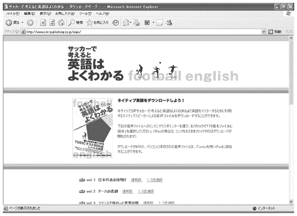
1-1
戦略的な準備で
勝利を呼び込もう
この「サッカーで考えるとTOEICはよくわかる」のコーナーでは、まずTOEICの性質について説明します。次に、TOEICで必要とされるスキルについて解説し、最後にSE学習法と個々のスキルについての学習法を見て行きたいと思います。
ところで、「TOEICの勉強法」というタイトルなのに、どうして最初にTOEICの性質について説明するんだろうと思う方もいるでしょう。なぜそのようなことをするかというと、それはTOEICの基本的な性質を理解することのないままテストに望み、2006年の日本代表のごとく本番で敗れてしまう人があまりにも多いからです。
ご存知のとおり、日本代表の2006年ワールドカップは、１分け２敗と非常に不本意な成績で幕を閉じました。中田、中村、小野、稲本、高原といった日本代表史上屈指のタレントが、その才能を発揮することもないまま、Ｆ組再開のまま大会を去っていったことに、歯がゆい思いをした人も多いのではないでしょうか？
日本がなぜこのように早々と大会を去ることになったかに関しては、さまざまな意見があると思います。ただ、オーストラリア戦残り６分間で食らった３得点が、ドイツ大会での早期敗退において非常に重要な役割を占めているということは、衆目の一致するところでしょう。
僕はこの試合をドイツはカイザースラウステルンで見ていたのですが、３点目を食らったときは、目の前が暗くなって席から立てなくなりました。それまでは、目の前が暗くなるというのはあくまで慣用句だと思っていたのですが、望みが失われて文字通り目の前が真っ暗になるということを今回始めて体験しました。おそらく、テレビで見ていた方も、そうだったと思います。
それにしても、いったい何がこのようなショッキングな結果をもたらしたのでしょう？ これに関しても要因は多々あると思いますが、両監督の試合に対する戦略的な準備の差というのが非常に大きな要因であったことは間違いありません。
日本が体格的に劣っていることを利用して、パワープレー要員をチームに選んでおき、その選手を活用して作戦通りに勝ち点をもぎ取ったヒディング監督。それに対して、予選でのメンバー固定が裏目に出て、相手の強力３トップに茂庭、宮本、中澤という急造３バックで対処することになったジーコ監督。監督のチーム作りという面で大きく差のついた一戦ではありました。
試合後の記者会見で、「ラッキーな勝利でしたか？」と聞かれたオーストラリアのヒディング監督は、「幸運とはしっかりしたプランがあってはじめて起こるものだ」と返答したそうです。それに対してジーコ監督は、オーストラリアの作戦に対して、「体格で勝っている相手が、どんどんロングボールを放り込んできたら、守りようがない」と答えていました。
中国の偉大な兵法家孫氏の言葉に、「彼を知り己を知れば、百戦して危うからず」という言葉があります。ヒディング監督は、その言葉をまさに地で行っていたと言えるでしょう。
そしてTOEICに関しても、ジーコジャパンのように「なんとなく大丈夫だろう」といった態度で臨み、試験後にコテンパにされた後ではじめて、「もっと早くから対策しておけばよかった」と後悔する人が後を立ちません。そうならないためにも、まずはTOEICの基本的な性質を理解することから始めていきましょう。
戦略的な準備で
勝利を呼び込もう
日本１－３オーストラリアという結果をもたらしたもの
この「サッカーで考えるとTOEICはよくわかる」のコーナーでは、まずTOEICの性質について説明します。次に、TOEICで必要とされるスキルについて解説し、最後にSE学習法と個々のスキルについての学習法を見て行きたいと思います。
ところで、「TOEICの勉強法」というタイトルなのに、どうして最初にTOEICの性質について説明するんだろうと思う方もいるでしょう。なぜそのようなことをするかというと、それはTOEICの基本的な性質を理解することのないままテストに望み、2006年の日本代表のごとく本番で敗れてしまう人があまりにも多いからです。
ご存知のとおり、日本代表の2006年ワールドカップは、１分け２敗と非常に不本意な成績で幕を閉じました。中田、中村、小野、稲本、高原といった日本代表史上屈指のタレントが、その才能を発揮することもないまま、Ｆ組再開のまま大会を去っていったことに、歯がゆい思いをした人も多いのではないでしょうか？
日本がなぜこのように早々と大会を去ることになったかに関しては、さまざまな意見があると思います。ただ、オーストラリア戦残り６分間で食らった３得点が、ドイツ大会での早期敗退において非常に重要な役割を占めているということは、衆目の一致するところでしょう。
僕はこの試合をドイツはカイザースラウステルンで見ていたのですが、３点目を食らったときは、目の前が暗くなって席から立てなくなりました。それまでは、目の前が暗くなるというのはあくまで慣用句だと思っていたのですが、望みが失われて文字通り目の前が真っ暗になるということを今回始めて体験しました。おそらく、テレビで見ていた方も、そうだったと思います。
それにしても、いったい何がこのようなショッキングな結果をもたらしたのでしょう？ これに関しても要因は多々あると思いますが、両監督の試合に対する戦略的な準備の差というのが非常に大きな要因であったことは間違いありません。
日本が体格的に劣っていることを利用して、パワープレー要員をチームに選んでおき、その選手を活用して作戦通りに勝ち点をもぎ取ったヒディング監督。それに対して、予選でのメンバー固定が裏目に出て、相手の強力３トップに茂庭、宮本、中澤という急造３バックで対処することになったジーコ監督。監督のチーム作りという面で大きく差のついた一戦ではありました。
試合後の記者会見で、「ラッキーな勝利でしたか？」と聞かれたオーストラリアのヒディング監督は、「幸運とはしっかりしたプランがあってはじめて起こるものだ」と返答したそうです。それに対してジーコ監督は、オーストラリアの作戦に対して、「体格で勝っている相手が、どんどんロングボールを放り込んできたら、守りようがない」と答えていました。
中国の偉大な兵法家孫氏の言葉に、「彼を知り己を知れば、百戦して危うからず」という言葉があります。ヒディング監督は、その言葉をまさに地で行っていたと言えるでしょう。
そしてTOEICに関しても、ジーコジャパンのように「なんとなく大丈夫だろう」といった態度で臨み、試験後にコテンパにされた後ではじめて、「もっと早くから対策しておけばよかった」と後悔する人が後を立ちません。そうならないためにも、まずはTOEICの基本的な性質を理解することから始めていきましょう。
1-2
TOEICとは何か？
さて、そもそもTOEICとは何なのでしょうか？ TOEICとはTest of English for International Communicationの略称で、（財）国際ビジネスコミュニケーション協会によって運営されている、ビジネスシーンにおける英語の運用能力を測定するためのテストです。現在ではTOEICの受験者は年間で約150万人近く、ビジネス英語の能力が試されることから、特にビジネスマンや就職を控えた大学生に人気があります。
TOEICは、米国にある非営利のテスト開発機関である Educational Testing Service（ETS）によって開発・制作されています。このETSという機関は元々、留学生用の英語の試験であるTOEFLや、アメリカのセンター試験に当たるSATを作成していました。このETSに、故・北岡靖男氏が「ビジネスシーンで必要とされる英語力を測定して欲しい」という嘆願をしたことから、TOEICが作成される運びとなりました。
つまり、TOEICはもともと日本で始まった試験なのです。それを反映して、現在でも受験者は、日本人と韓国人がそのほぼ９割を占めています。同じETSの作るTOEFLの受験者が、世界中のさまざまな国々に分布していることを考えれば、TOEICの受験者は非常に偏っていると言えるでしょう。
このような経緯の結果設立されたTOEICは、同じETSの作った留学用の試験であるTOEFLと比べると、ビジネス英語という側面を色濃く持っています。そのため、使われる単語も日常生活で目にするものが多く、TOEFLで頻出の学術的な専門的な用語はほぼ使用されません。
また、出題される文章もビジネスシーンに関連したものが多いです。そのため、ビジネスマンの方であれば、特に苦労せずに内容を理解できる問題が多いです。地学や天文学などの理系の話が頻出し、日本語で読んでも文章を理解するのに苦労するTOEFLに比べると、TOEICは英語さえわかれば後は常識で内容を推測できることが多いと言えるでしょう。
それ以外のTOEICの特徴としては、受信能力しか測定されず、発信能力は測定されないということが挙げられます。TOEFLでは、2006年9月の新テストに伴い、必須試験で「リスニング」「リーディング」「ライティング」「スピーキング」の４つの技能すべてのスキルが測定されることになりました。それに対してTOEICでは、ライティングとスピーキングはオプションとして存在はするものの、通常の試験では「リスニング」と「リーディング」の能力しか測定されません。
このような受信型の試験では、真の英語力が測定される発信型の試験とは異なり、テストの性質を理解し基本的なスキルを身につけることで、短期間の間にスコアを上昇させることができます。ですから、英検やTOEFLに比べると、TOEICは対策が立てやすいテストだといえるでしょう。
なお、TOEICでは大学受験と異なり、重箱の隅をつつくような文法問題は出題されません。もちろん、900点以上を取ろうとするのであれば、かなり詳しい文法の知識が要求されます。しかし、600点であれば、中・高レベルの基本的な文法知識があれば、それで十分です。
次にTOEICの形式ですが、TOEICはリスニング（45分間・100問）とリーディング（75分間・100問）から構成されていて、２時間で200問に答えなければなりません。また、問題はすべてマークシート方式です。そして、テスト結果は合否ではなく、10点から990点までのスコアで評価されます。なお、リーディングの方がリスニングよりも試験時間が長いのは、リーディングでは読解に加えて文法問題も出題されるからです。
ところで、2006年5月からTOEICはリニューアルされました。その主なリニューアル点としては、リスニングセクションにイギリス・カナダ・オーストラリアの発音が出題されるようになったということが挙げられます。また、それ以外の変化としては、語句訂正問題が文法セクションで出題されなくなったということがあります。しかし、今のところは、この２つとも受験者にそれほど大きな影響を与えていません。オーソドックスな勉強をしていれば、新試験にも十分対応できると考えておいて問題ありません。
TOEICとは何か？
TOEICの成り立ち
さて、そもそもTOEICとは何なのでしょうか？ TOEICとはTest of English for International Communicationの略称で、（財）国際ビジネスコミュニケーション協会によって運営されている、ビジネスシーンにおける英語の運用能力を測定するためのテストです。現在ではTOEICの受験者は年間で約150万人近く、ビジネス英語の能力が試されることから、特にビジネスマンや就職を控えた大学生に人気があります。
TOEICは、米国にある非営利のテスト開発機関である Educational Testing Service（ETS）によって開発・制作されています。このETSという機関は元々、留学生用の英語の試験であるTOEFLや、アメリカのセンター試験に当たるSATを作成していました。このETSに、故・北岡靖男氏が「ビジネスシーンで必要とされる英語力を測定して欲しい」という嘆願をしたことから、TOEICが作成される運びとなりました。
つまり、TOEICはもともと日本で始まった試験なのです。それを反映して、現在でも受験者は、日本人と韓国人がそのほぼ９割を占めています。同じETSの作るTOEFLの受験者が、世界中のさまざまな国々に分布していることを考えれば、TOEICの受験者は非常に偏っていると言えるでしょう。
TOEICの特徴
このような経緯の結果設立されたTOEICは、同じETSの作った留学用の試験であるTOEFLと比べると、ビジネス英語という側面を色濃く持っています。そのため、使われる単語も日常生活で目にするものが多く、TOEFLで頻出の学術的な専門的な用語はほぼ使用されません。
また、出題される文章もビジネスシーンに関連したものが多いです。そのため、ビジネスマンの方であれば、特に苦労せずに内容を理解できる問題が多いです。地学や天文学などの理系の話が頻出し、日本語で読んでも文章を理解するのに苦労するTOEFLに比べると、TOEICは英語さえわかれば後は常識で内容を推測できることが多いと言えるでしょう。
それ以外のTOEICの特徴としては、受信能力しか測定されず、発信能力は測定されないということが挙げられます。TOEFLでは、2006年9月の新テストに伴い、必須試験で「リスニング」「リーディング」「ライティング」「スピーキング」の４つの技能すべてのスキルが測定されることになりました。それに対してTOEICでは、ライティングとスピーキングはオプションとして存在はするものの、通常の試験では「リスニング」と「リーディング」の能力しか測定されません。
このような受信型の試験では、真の英語力が測定される発信型の試験とは異なり、テストの性質を理解し基本的なスキルを身につけることで、短期間の間にスコアを上昇させることができます。ですから、英検やTOEFLに比べると、TOEICは対策が立てやすいテストだといえるでしょう。
なお、TOEICでは大学受験と異なり、重箱の隅をつつくような文法問題は出題されません。もちろん、900点以上を取ろうとするのであれば、かなり詳しい文法の知識が要求されます。しかし、600点であれば、中・高レベルの基本的な文法知識があれば、それで十分です。
TOEICの形式
次にTOEICの形式ですが、TOEICはリスニング（45分間・100問）とリーディング（75分間・100問）から構成されていて、２時間で200問に答えなければなりません。また、問題はすべてマークシート方式です。そして、テスト結果は合否ではなく、10点から990点までのスコアで評価されます。なお、リーディングの方がリスニングよりも試験時間が長いのは、リーディングでは読解に加えて文法問題も出題されるからです。
ところで、2006年5月からTOEICはリニューアルされました。その主なリニューアル点としては、リスニングセクションにイギリス・カナダ・オーストラリアの発音が出題されるようになったということが挙げられます。また、それ以外の変化としては、語句訂正問題が文法セクションで出題されなくなったということがあります。しかし、今のところは、この２つとも受験者にそれほど大きな影響を与えていません。オーソドックスな勉強をしていれば、新試験にも十分対応できると考えておいて問題ありません。
1-3
TOEICって
何点取ればいいの？
TOEICの作成を担当しているETSでは、コミュニケーション能力に基づき、TOEICのスコアをＡからＥの５段階に分類しています。まずＡレベルですが、860点以上の人がＡレベルに分類されます。TOEICの分類によれば、このレベルの人は、Non-Nativeとして十分なコミュニケーション能力を持っているとされています。サッカーで言えば、日本代表レベルと言えるでしょう。
また、730点から860点の間のスコアは、Ｂレベルに分類されます。このレベルの人は、さまざまな状況で適切にコミュニケーションを行うための下地があるとみなされています。サッカーで言えば、こちらはＪリーガーにあたります。
470点から730点の間のスコアは、その下のＣレベルに当たります。このレベルでは、どんな状況でも適切に英語を使えるわけではないが、限定された範囲内であれば仕事に英語を使うことができるとされています。ですから、Ｃレベルは、JFLや大学リーグに所属している選手のレベルに相当します。
その次のＤレベルにあたるのが、220点から470点の間のスコアを持つ人です。このレベルに当たる人の英語力は非常に限られており、日常会話で何とかコミュニケーションをとることができるものの、仕事上で英語を使うことはできません。草サッカープレイヤーのレベルです。
最後にＥレベルですが、これは10点から220点未満の人をさします。この人たちの英語力は非常に低く、英語ではコミュニケーションをとることができません。サッカー未経験者に当たります。
ところで、この本で目標にしているTOEIC600点とは、具体的にどれくらいのレベルなのでしょうか？ それを理解するために、まず大卒新入社員のTOEIC平均点を見て行きたいと思います。TOEIC事務局によれば、大卒新入社員のTOEIC平均点は、毎年450点～470点ぐらいを推移しているとのことです。このことから、TOEIC600点という点数は、大卒新入社員の平均点よりもかなり高いことがわかります。
また、派遣会社などの目安によれば、国内で英語を使う部署につく人に要求される点数は、一般的に600点となっています。言い換えれば、TOEIC600点を持っている人は、英語で業務をこなすための必要最低限の力を持っていると周りから見られるということです。TOEICの点数を履歴書に書くためには最低600点が必要だといわれるのはこのせいです。
このような説明を聴くと、TOEIC600点がなんだか手の届かない目標のように見えてきた方も多いのではないでしょうか？ 確かに点数だけ聴くと、450点と600点の差はかなり大きいように思えます。しかし、あきらめるのはまだ早いです。
TOEIC450点を取れる方であれば、正しい方法である一定の期間トレーニングを行えば、必ずTOEIC600点を取ることができます。少なくとも、TOEIC450点を取れる方であれば、TOEICで600点を取るだけの基礎力が必ず備わっています。
では、TOEIC450点を取る人と600点を取る人はどこがどう違うのでしょうか？ TOEIC600点を取る人の方が、多く単語を知っているのでしょうか？ それとも、文法知識が多いのでしょうか？ はたまた、構文把握力に優れているのでしょうか？
一般的に言って、TOEIC600点を取っている人の方が、TOEIC450点の人よりも、単語力や文法力や構文把握力などの基礎的な面において優れているのは事実です。しかし、一方で、これらの能力を高い水準で結び付けている有名大学の卒業生の中にも、TOEIC600点に届かない人が多々います。ですから、TOEICのスコアには、その人の持つ単語力や文法力や構文把握力が必ずしもそのまま反映されるわけではないのです。
それを裏付けるためにも、TOEICの発表している大学生の平均点を見てみましょう。（参照：http://www.TOEIC.or.jp/TOEIC/data/pdf/DAA2005.pdf）ここで注目すべきは、大学受験の段階で高い英語力が要求される医・薬学系の平均点（488点）と、大学生全体の平均点（437点）とがほとんど変わらないということです。大学受験時の医・薬学系の学科の難易度を考えると、990点満点のテストで40点しか差が出ないというのは、かなり意外だといえるのではないでしょうか？
さらに表を詳しく見てみると、大学受験では出題されないリスニングセクション（大学生平均252点 ⇔ 医・薬学系平均267点）だけでなく、大学受験で出題されているリーディングセクション（大学生平均185点 ⇔ 医・薬学系平均221点）でも差がそれほど見受けられないということがわかります。このことから、先ほど述べた、単語力や文法力や構文把握力が必ずしもスコアに反映されるわけではないということがわかると思います。
では、同じ英語の試験のはずなのに、なぜ大学入試で身につけた英語力がそのままTOEICに反映されないのでしょうか？ それは、この２つが別々のスキルを測定しているからです。一般的に、大学入試では「オープンスキル」が測定されるのに対し、TOEICでは「クローズドスキル」が測定されます。そのため、同じ英語の試験であっても、一方のテストの結果がもう一方の結果になかなか反映されないのです。
TOEICって
何点取ればいいの？
TOEICのスコアとコミュニケーション能力
TOEICの作成を担当しているETSでは、コミュニケーション能力に基づき、TOEICのスコアをＡからＥの５段階に分類しています。まずＡレベルですが、860点以上の人がＡレベルに分類されます。TOEICの分類によれば、このレベルの人は、Non-Nativeとして十分なコミュニケーション能力を持っているとされています。サッカーで言えば、日本代表レベルと言えるでしょう。
また、730点から860点の間のスコアは、Ｂレベルに分類されます。このレベルの人は、さまざまな状況で適切にコミュニケーションを行うための下地があるとみなされています。サッカーで言えば、こちらはＪリーガーにあたります。
470点から730点の間のスコアは、その下のＣレベルに当たります。このレベルでは、どんな状況でも適切に英語を使えるわけではないが、限定された範囲内であれば仕事に英語を使うことができるとされています。ですから、Ｃレベルは、JFLや大学リーグに所属している選手のレベルに相当します。
その次のＤレベルにあたるのが、220点から470点の間のスコアを持つ人です。このレベルに当たる人の英語力は非常に限られており、日常会話で何とかコミュニケーションをとることができるものの、仕事上で英語を使うことはできません。草サッカープレイヤーのレベルです。
最後にＥレベルですが、これは10点から220点未満の人をさします。この人たちの英語力は非常に低く、英語ではコミュニケーションをとることができません。サッカー未経験者に当たります。
新卒社員のTOEIC平均点
ところで、この本で目標にしているTOEIC600点とは、具体的にどれくらいのレベルなのでしょうか？ それを理解するために、まず大卒新入社員のTOEIC平均点を見て行きたいと思います。TOEIC事務局によれば、大卒新入社員のTOEIC平均点は、毎年450点～470点ぐらいを推移しているとのことです。このことから、TOEIC600点という点数は、大卒新入社員の平均点よりもかなり高いことがわかります。
また、派遣会社などの目安によれば、国内で英語を使う部署につく人に要求される点数は、一般的に600点となっています。言い換えれば、TOEIC600点を持っている人は、英語で業務をこなすための必要最低限の力を持っていると周りから見られるということです。TOEICの点数を履歴書に書くためには最低600点が必要だといわれるのはこのせいです。
このような説明を聴くと、TOEIC600点がなんだか手の届かない目標のように見えてきた方も多いのではないでしょうか？ 確かに点数だけ聴くと、450点と600点の差はかなり大きいように思えます。しかし、あきらめるのはまだ早いです。
TOEIC450点を取れる方であれば、正しい方法である一定の期間トレーニングを行えば、必ずTOEIC600点を取ることができます。少なくとも、TOEIC450点を取れる方であれば、TOEICで600点を取るだけの基礎力が必ず備わっています。
TOEIC450点とTOEIC600点の差はどこにあるのか？
では、TOEIC450点を取る人と600点を取る人はどこがどう違うのでしょうか？ TOEIC600点を取る人の方が、多く単語を知っているのでしょうか？ それとも、文法知識が多いのでしょうか？ はたまた、構文把握力に優れているのでしょうか？
一般的に言って、TOEIC600点を取っている人の方が、TOEIC450点の人よりも、単語力や文法力や構文把握力などの基礎的な面において優れているのは事実です。しかし、一方で、これらの能力を高い水準で結び付けている有名大学の卒業生の中にも、TOEIC600点に届かない人が多々います。ですから、TOEICのスコアには、その人の持つ単語力や文法力や構文把握力が必ずしもそのまま反映されるわけではないのです。
それを裏付けるためにも、TOEICの発表している大学生の平均点を見てみましょう。（参照：http://www.TOEIC.or.jp/TOEIC/data/pdf/DAA2005.pdf）ここで注目すべきは、大学受験の段階で高い英語力が要求される医・薬学系の平均点（488点）と、大学生全体の平均点（437点）とがほとんど変わらないということです。大学受験時の医・薬学系の学科の難易度を考えると、990点満点のテストで40点しか差が出ないというのは、かなり意外だといえるのではないでしょうか？
さらに表を詳しく見てみると、大学受験では出題されないリスニングセクション（大学生平均252点 ⇔ 医・薬学系平均267点）だけでなく、大学受験で出題されているリーディングセクション（大学生平均185点 ⇔ 医・薬学系平均221点）でも差がそれほど見受けられないということがわかります。このことから、先ほど述べた、単語力や文法力や構文把握力が必ずしもスコアに反映されるわけではないということがわかると思います。
では、同じ英語の試験のはずなのに、なぜ大学入試で身につけた英語力がそのままTOEICに反映されないのでしょうか？ それは、この２つが別々のスキルを測定しているからです。一般的に、大学入試では「オープンスキル」が測定されるのに対し、TOEICでは「クローズドスキル」が測定されます。そのため、同じ英語の試験であっても、一方のテストの結果がもう一方の結果になかなか反映されないのです。
1-4
本番で実力を発揮する
ためには？
さて、先程述べたオープンスキルとクローズドスキルですが、これはサッカー関連の雑誌や本などを読んでいるとよく出てくる用語なので、聞いたことがある方も多いのではないでしょうか。
サッカーでは一般的に、外からのプレッシャーのない状況でどれだけ正確にボールを扱うことができるかという技術のことを、クローズドスキルと呼びます。具体的には、プレッシャーのない状況でのリフティングやドリブルの技術がクローズドスキルに当たります。このようなスキルには、状況判断のスピードや正確性はあまり含まれず、技術的な側面が大きな比重を占めています。
それに対して、試合のようにプレッシャーのある状況下では、単純なボールタッチの技術に加えて、ゲームの流れを読みつつ効果的なプレーをする能力が非常に重要になってきます。このような能力を、オープンスキルと呼びます。オープンスキルでは、プレッシャーのある状況下で、正確な判断をどれだけスピーディーに行えるかが問われます。
そして、現在日本代表の弱点となっているのが、このオープンスキルの低さです。一般的に、日本人選手はスキルが高いと言われます。しかし、それはあくまでプレッシャーのない状況でのクローズドスキルが優れているだけであって、プレッシャーのある状況で発揮できるオープンスキルはまだまだ劣っています。
例えば2006年のワールドカップでも、中盤の構成力の高さが売りのはずの日本代表が、ゲームを組み立てている最中で、自分たちのミスからボールを失っているのが目につきました。また、ジーコの後をついで日本代表監督に就任したオシム監督も、ガーナ戦の後に「日本の選手はプレッシャーのないところではアイデアを実行できる。大事なのはプレッシャーの中で実行できるか。勝ち負けをつけるには十分の差となる」と語っていました。
日本代表がさらに飛躍するためには、「ボールタッチの技術は確かに高いものの、その高い技術を試合の中でなかなか発揮できない」という弱点を変えていくことが必要不可欠だと言えるでしょう。そして、TOEICで高得点を取るためには、日本代表同様、クローズドスキルに対するオープンスキルの低さを改善していく必要があります。
最近ではだんだんと変わりつつありますが、基本的に大学入試では、英語の処理能力より英語に関する知識が重要視されます。そのため大学入試では、時間的制限に余裕がある中、高度な英語の知識を運用する能力が問われます。言い換えれば、大学入試は、クローズドスキルを測定するということです。
それに対して、ビジネスシーンでのコミュニケーション能力を測定するTOEICでは、英語の知識と同じくらい英語の処理能力が重要視されます。そのためTOEICでは、時間的制限のない中で基礎的な英語の知識を正確に運用できるかどうかが問われます。つまり、TOEICでは、オープンスキルが測定されるということです。
そのため、例えTOEIC600点に相当する英語の知識を持っていたとしても、それを時間内で正確に運用することができなければ、TOEICで600点を取得することはできないのです。以上のような理由から、TOEICで600点を取るためには、日本代表同様、オープンスキルをどれだけ高めるかが鍵になるのです。
本番で実力を発揮する
ためには？
「オープンスキル」と「クローズドスキル」とは？
さて、先程述べたオープンスキルとクローズドスキルですが、これはサッカー関連の雑誌や本などを読んでいるとよく出てくる用語なので、聞いたことがある方も多いのではないでしょうか。
サッカーでは一般的に、外からのプレッシャーのない状況でどれだけ正確にボールを扱うことができるかという技術のことを、クローズドスキルと呼びます。具体的には、プレッシャーのない状況でのリフティングやドリブルの技術がクローズドスキルに当たります。このようなスキルには、状況判断のスピードや正確性はあまり含まれず、技術的な側面が大きな比重を占めています。
それに対して、試合のようにプレッシャーのある状況下では、単純なボールタッチの技術に加えて、ゲームの流れを読みつつ効果的なプレーをする能力が非常に重要になってきます。このような能力を、オープンスキルと呼びます。オープンスキルでは、プレッシャーのある状況下で、正確な判断をどれだけスピーディーに行えるかが問われます。
TOEIC受験者と日本代表の抱える共通した問題点
そして、現在日本代表の弱点となっているのが、このオープンスキルの低さです。一般的に、日本人選手はスキルが高いと言われます。しかし、それはあくまでプレッシャーのない状況でのクローズドスキルが優れているだけであって、プレッシャーのある状況で発揮できるオープンスキルはまだまだ劣っています。
例えば2006年のワールドカップでも、中盤の構成力の高さが売りのはずの日本代表が、ゲームを組み立てている最中で、自分たちのミスからボールを失っているのが目につきました。また、ジーコの後をついで日本代表監督に就任したオシム監督も、ガーナ戦の後に「日本の選手はプレッシャーのないところではアイデアを実行できる。大事なのはプレッシャーの中で実行できるか。勝ち負けをつけるには十分の差となる」と語っていました。
日本代表がさらに飛躍するためには、「ボールタッチの技術は確かに高いものの、その高い技術を試合の中でなかなか発揮できない」という弱点を変えていくことが必要不可欠だと言えるでしょう。そして、TOEICで高得点を取るためには、日本代表同様、クローズドスキルに対するオープンスキルの低さを改善していく必要があります。
最近ではだんだんと変わりつつありますが、基本的に大学入試では、英語の処理能力より英語に関する知識が重要視されます。そのため大学入試では、時間的制限に余裕がある中、高度な英語の知識を運用する能力が問われます。言い換えれば、大学入試は、クローズドスキルを測定するということです。
それに対して、ビジネスシーンでのコミュニケーション能力を測定するTOEICでは、英語の知識と同じくらい英語の処理能力が重要視されます。そのためTOEICでは、時間的制限のない中で基礎的な英語の知識を正確に運用できるかどうかが問われます。つまり、TOEICでは、オープンスキルが測定されるということです。
そのため、例えTOEIC600点に相当する英語の知識を持っていたとしても、それを時間内で正確に運用することができなければ、TOEICで600点を取得することはできないのです。以上のような理由から、TOEICで600点を取るためには、日本代表同様、オープンスキルをどれだけ高めるかが鍵になるのです。
1-5
リーディング力を
リスニングに活かす
ところで、今までの日本の教育ではリスニングの試験がほとんど課されませんでした。ですから、TOEICの受験者の中には、リスニングとリーディングを別々のものとして捉えている方が多々見受けられます。
確かに、この２つは一見まったく異なるスキルのように見えます。なぜなら、リスニングの場合は言葉が耳から入ってくるのに対し、リーディングの場合は言葉が目から入ってくるからです。しかし、リスニングで聴き取った音の意味を理解する過程で必要とされる能力は、リーディングで文章を読むときに使う能力と、まったく同じなのです。そういう意味では、この２つの能力は、非常に共通点が多いと言えます。
では、なぜ見ればわかる文章なのに、聴いてもわからないということが起こるのでしょうか？ これには２つの理由があります。１つは、正しい発音で英単語を覚えていないため、自分の知っている単語なのに耳から聴くと聴き取れないというものです。２つ目の理由としては、英文の読解スピードが遅すぎて、英語についていけないということがあります。
ところで、上の文章を読んで、「リスニングと英文の読解スピードに関係なんてあるの？」と思った方もいるかもしれません。実は、この２つには、密接な関係があります。なぜかと言うと、文字はずっと残っているのに対し、音声はどんどん消えていってしまいます。そのため、リスニングができるようになるためには、話されたスピードで言葉を前から前から理解できる能力が必要になって来るのです。
そして、一般的な日本人の英語のリーディングスピードが１分間に80字であるのに対し、TOEICのリスニングでは１分間当たり160字を処理しなければなりません。そのため、読めば何とか意味は取れる文章でも、リスニングで聴くとまったくわからなくなってしまうのです。つまり、リスニング能力を鍛えるためには、単語の正しい発音を覚えることに加えて、リーディング力を磨くことが必要不可欠なのです。
以上見てきたように、リスニングでは、リーディングよりも時間的なプレッシャーが厳しい中での迅速な英文処理能力が求められるのです。言い換えれば、リーディングがクローズドスキルだとすれば、リスニングはオープンスキルにあたるのです。
ですから、リスニングを伸ばす際も、リーディングとリスニングを切り離されたものと考えるのではなく、むしろリーディングで培った能力をいかにリスニングに活かすかという方向性で考えていったほうが近道です。
ところで、リスニングというと、どうしても音を聴き取るということが重要視されます。しかし、実を言えば、ＬとＲ、そしてＢやＶといった音の１つ１つの聴き取りは、リスニングをする上でそれほど重要ではありません。なぜかというと、たとえ個々の音の聴き取りが正確にできなくても、文脈を利用することで正確に意味を解釈することができるからです。
僕自身、ＬとＲの聴き分けをパソコンソフトで試してみると、７割ぐらいしか正当できません。７割というと一見高そうに聞こえますが、ＬとＲの２択である以上、でたらめにやっても正答率は５割は行くはずです。それを考えると、７割というのは非常に低いといえるでしょう。しかし、それでも、TOEICのリスニングは常に満点です。ですから、TOEICで600点を取るためには、個々の音の聴き取りはそれほど必要ないと言えるでしょう。
また、僕が大学のときに習っていた英語音声学の先生も、同じテストを受けて７割か８割ぐらいの正答率しか行かないと言って悔しがっていました。それを考えると、大人になってから英語を始めた人が個々の音を完璧に聴き取れるようになるのは、そもそも無理なのではないかという気もします。
TOEICで効率的に600点を取りたいのであれば、ＬとＲのような細かい発音にこだわるよりは、むしろ単語レベルでの発音とアクセントを覚えるようにしましょう。そして、単語レベルでの発音を覚えるためには、英語 → 日本語の順番で発音されている単語集を聴くことが非常に有効です。なお、単語の覚え方に関しては、後でまたくわしく説明します。
ところで、英語の日本語の話し言葉では、「っていうか → てーか」のような音の省略や変化が起きますが、英語でも同様の現象が起きます。リスニング関係の本を見ていると、このような文中での音の変化を扱ったものが多々あります。
これらの本は映画のような日常会話を聴き取るには、非常に有効です。しかし、ビジネスシーンでの会話を重要視するTOEICでは、音の変化はそれほど起こりません。ですから、このような音の変化に関してはそれほど重要視する必要はありません。『知ってる英語なのになぜ聴き取れない？』（ナツメ社刊）を使って、基礎的な音の変化のルールを押さえておけば十分です。
リーディング力を
リスニングに活かす
見ればわかる文章なのに、聴いてもわからない理由
ところで、今までの日本の教育ではリスニングの試験がほとんど課されませんでした。ですから、TOEICの受験者の中には、リスニングとリーディングを別々のものとして捉えている方が多々見受けられます。
確かに、この２つは一見まったく異なるスキルのように見えます。なぜなら、リスニングの場合は言葉が耳から入ってくるのに対し、リーディングの場合は言葉が目から入ってくるからです。しかし、リスニングで聴き取った音の意味を理解する過程で必要とされる能力は、リーディングで文章を読むときに使う能力と、まったく同じなのです。そういう意味では、この２つの能力は、非常に共通点が多いと言えます。
では、なぜ見ればわかる文章なのに、聴いてもわからないということが起こるのでしょうか？ これには２つの理由があります。１つは、正しい発音で英単語を覚えていないため、自分の知っている単語なのに耳から聴くと聴き取れないというものです。２つ目の理由としては、英文の読解スピードが遅すぎて、英語についていけないということがあります。
ところで、上の文章を読んで、「リスニングと英文の読解スピードに関係なんてあるの？」と思った方もいるかもしれません。実は、この２つには、密接な関係があります。なぜかと言うと、文字はずっと残っているのに対し、音声はどんどん消えていってしまいます。そのため、リスニングができるようになるためには、話されたスピードで言葉を前から前から理解できる能力が必要になって来るのです。
そして、一般的な日本人の英語のリーディングスピードが１分間に80字であるのに対し、TOEICのリスニングでは１分間当たり160字を処理しなければなりません。そのため、読めば何とか意味は取れる文章でも、リスニングで聴くとまったくわからなくなってしまうのです。つまり、リスニング能力を鍛えるためには、単語の正しい発音を覚えることに加えて、リーディング力を磨くことが必要不可欠なのです。
以上見てきたように、リスニングでは、リーディングよりも時間的なプレッシャーが厳しい中での迅速な英文処理能力が求められるのです。言い換えれば、リーディングがクローズドスキルだとすれば、リスニングはオープンスキルにあたるのです。
ですから、リスニングを伸ばす際も、リーディングとリスニングを切り離されたものと考えるのではなく、むしろリーディングで培った能力をいかにリスニングに活かすかという方向性で考えていったほうが近道です。
ＬとＲの聞き取りはリスニングに重要か？
ところで、リスニングというと、どうしても音を聴き取るということが重要視されます。しかし、実を言えば、ＬとＲ、そしてＢやＶといった音の１つ１つの聴き取りは、リスニングをする上でそれほど重要ではありません。なぜかというと、たとえ個々の音の聴き取りが正確にできなくても、文脈を利用することで正確に意味を解釈することができるからです。
僕自身、ＬとＲの聴き分けをパソコンソフトで試してみると、７割ぐらいしか正当できません。７割というと一見高そうに聞こえますが、ＬとＲの２択である以上、でたらめにやっても正答率は５割は行くはずです。それを考えると、７割というのは非常に低いといえるでしょう。しかし、それでも、TOEICのリスニングは常に満点です。ですから、TOEICで600点を取るためには、個々の音の聴き取りはそれほど必要ないと言えるでしょう。
また、僕が大学のときに習っていた英語音声学の先生も、同じテストを受けて７割か８割ぐらいの正答率しか行かないと言って悔しがっていました。それを考えると、大人になってから英語を始めた人が個々の音を完璧に聴き取れるようになるのは、そもそも無理なのではないかという気もします。
TOEICで効率的に600点を取りたいのであれば、ＬとＲのような細かい発音にこだわるよりは、むしろ単語レベルでの発音とアクセントを覚えるようにしましょう。そして、単語レベルでの発音を覚えるためには、英語 → 日本語の順番で発音されている単語集を聴くことが非常に有効です。なお、単語の覚え方に関しては、後でまたくわしく説明します。
ところで、英語の日本語の話し言葉では、「っていうか → てーか」のような音の省略や変化が起きますが、英語でも同様の現象が起きます。リスニング関係の本を見ていると、このような文中での音の変化を扱ったものが多々あります。
これらの本は映画のような日常会話を聴き取るには、非常に有効です。しかし、ビジネスシーンでの会話を重要視するTOEICでは、音の変化はそれほど起こりません。ですから、このような音の変化に関してはそれほど重要視する必要はありません。『知ってる英語なのになぜ聴き取れない？』（ナツメ社刊）を使って、基礎的な音の変化のルールを押さえておけば十分です。
1-6
基礎力と判断力を
身につける訓練
今まで見てきたように、TOEICで600点を取るためには、これまでに身につけた英語のクローズドスキルを、オープンスキルに変えていくことが必要不可欠です。では、どうすれば、効率よくクローズドスキルをオープンスキルに変えることができるのでしょうか？
そのためには、次の２つの訓練を行う必要があります。まず１つは、TOEIC600点を取るために必要な基礎的クローズドスキルを、きちんと身につけることです。次に必要なことは、プレッシャーのある状況で身につけたスキルを発揮するための、判断力を身につける訓練を行うことです。
さて、TOEICで600点を取るために必要な基礎スキルですが、具体的には単語と文法がそれにあたります。この本では、特に文法の習得に力を入れました。なぜかというと、英語習得の土台となる文法に穴があると、どれだけ勉強をしてもなかなか実力となって身に付かないからです。TOEICで600点を取るためにも、この本で紹介されている文法事項は完全に押さえるようにしましょう。
次に判断力の伸ばし方ですが、これを伸ばすためには、常日頃からプレッシャーの厳しい状況の中に自分を置く必要があります。サッカー同様、常に厳しい状況の中に身を置いていないと、正確な判断力が身につかないのです。そのための手段として、通常の音声に加え、1.5倍速で再生される音声をダウンロードできるようにしました。
1.5倍速のリスニングになれれば、通常のスピードでのリスニングは余裕を持って聴くことができるようになると思います。また、1.5倍速でリスニングの訓練をすることで、リーディングのスピードも同時に上げることができます。今までとは違うプレッシャーの中に身を置くことで、世界で戦える能力を身につけてください。
基礎力と判断力を
身につける訓練
TOEICで点数を伸ばすためのオープンスキルの伸ばし方
今まで見てきたように、TOEICで600点を取るためには、これまでに身につけた英語のクローズドスキルを、オープンスキルに変えていくことが必要不可欠です。では、どうすれば、効率よくクローズドスキルをオープンスキルに変えることができるのでしょうか？
そのためには、次の２つの訓練を行う必要があります。まず１つは、TOEIC600点を取るために必要な基礎的クローズドスキルを、きちんと身につけることです。次に必要なことは、プレッシャーのある状況で身につけたスキルを発揮するための、判断力を身につける訓練を行うことです。
さて、TOEICで600点を取るために必要な基礎スキルですが、具体的には単語と文法がそれにあたります。この本では、特に文法の習得に力を入れました。なぜかというと、英語習得の土台となる文法に穴があると、どれだけ勉強をしてもなかなか実力となって身に付かないからです。TOEICで600点を取るためにも、この本で紹介されている文法事項は完全に押さえるようにしましょう。
次に判断力の伸ばし方ですが、これを伸ばすためには、常日頃からプレッシャーの厳しい状況の中に自分を置く必要があります。サッカー同様、常に厳しい状況の中に身を置いていないと、正確な判断力が身につかないのです。そのための手段として、通常の音声に加え、1.5倍速で再生される音声をダウンロードできるようにしました。
1.5倍速のリスニングになれれば、通常のスピードでのリスニングは余裕を持って聴くことができるようになると思います。また、1.5倍速でリスニングの訓練をすることで、リーディングのスピードも同時に上げることができます。今までとは違うプレッシャーの中に身を置くことで、世界で戦える能力を身につけてください。
1-7
好きこそ物の上手なれ
ところで、ここまで読んできた方の中には、サッカーのことを英語で読んでも、TOEICに必要な英語力なんて身につかないんじゃないかと思った方もいるかもしれません。たしかに、サッカーの試合について書かれている英文だけを読んでいたら、TOEICに必要な英語力を身につけるのは、時間がかかると思います。
しかし、この本では、サッカーの試合だけでなく、日韓共催の背景や放映権のサッカーへの影響のような、ビジネスや政治に関連したテーマが取り上げられています。ですから、この本を読むことで、TOEICに必要な語彙を身につけることができます。
もちろん、このような政治や経済と関連したテーマに加え、サッカーに関する記事も多々掲載しました。ですから、この本を読めば、英語で書かれたサッカー関連の文章を読み解くために必要とされる単語や文法をも、同時に身につけることができます。この本を使って、TOEICにもサッカーにも役に立つ英語力を身につけていきましょう。
さて、突然ですが、サッカーで超一流の選手になるためには、何が必要だと思いますか？ サッカー選手として成功するためには、恵まれた運動神経、高い状況判断能力、高度な環境適応の力などの能力で必要とされるので、これ１つと限定するのは非常に難しいと思います。
しかし、個人的に、これは絶対欠かせないだろうと思えるものが１つあります。それは、練習を楽しむ姿勢です。一流と呼ばれる選手は常に非常に厳しい練習をしています。しかし、ロナウジーニョを見ればわかるように、その厳しい練習自体を楽しんでやっているのです。もし、彼らがコーチに言われるまま嫌々練習をしていたら、世界のトップレベルに到達することはできなかったでしょう。
「これを知る者は、これを好む者に如かず。これを好む者は、これを楽しむ者に如かず」という言葉がありますが、やはり練習することを楽しむことが、上達への１番の近道だと言えるでしょう。
そして、これは勉強にも当てはまります。僕は仕事柄英語のできる人とよく会うのですが、そういう人たちに共通した特徴が１つあります。それは、英語自体が好きだということです。
おそらく、英語やサッカーに限らず何かで一流になる人というのは、「練習を積むことによって、それまで自分ができなかったことができるようになる」というプロセスが好きなのではないでしょうか？ だからこそ、どれだけ辛い練習でも、辛いと思わずに自分から楽しんで練習することができるのだと思います。
しかし、サッカーなら楽しんで練習できても、英語となると楽しめないと思う方も多いのではないでしょうか？ そんな方に役に立つのが、SE学習です。
SE学習とは、English-Box（http://www.english-box.com/）を主催しているSayaka（金井さやか）さんの提唱している勉強法のことです。SE学習のSEとは、Secondary Effect（２次的学習）の略で、「英語学習という目的を２番目に持ってくる学習法」を意味します。
具体的には、「自分にとって興味があること、好きなこと、時間を忘れて取り組めること」に関して英語で触れることによって、２次的効果として英語の文法や単語を身につけることを指します。
この勉強法で画期的なのは、「自分にとって興味があること、好きなこと、時間を忘れて取り組めること」に触れることを第一目的にした結果、楽しく英語に取り組むことが可能になるということです。
先ほども述べたように、英語が上達する上で１番大切なことは、勉強自体を楽しむことです。しかし、普通はなかなか英語学習を楽しむことはできません。そのため、努力と根性で勉強を続けようとします。しかし、なかなか続かず、結果として英語学習そのものをあきらめてしまうことが多いのです。
しかし、このSE学習であれば、学習自体を楽しんでやることが可能になります。そのため、学習が長続きし、結果として学習の成功率が上がります。そして、この『サッカーで考えれば英語はよくわかる』も、このSE学習のコンセプトに基づいて考えられています。
通常のTOEIC参考書の場合、会話のダイアローグや読解用の文書は、どうしても架空のビジネスシーンを想定したものになりがちです。そのため、興味の持てないことが多く、英語学習を楽しむというよりは、むしろTOEICで点数を取るためだけの苦行のような勉強になってしまいがちです。
また、大学生でTOEICの勉強をしている人にとっては、そもそもシーン自体になじみがないことが多いです。そのため、辞書を引いて単語を調べても、結局何を言っているのか理解できずに、勉強をあきらめてしまうということがしばしばあります。
しかし、この『サッカーで考えれば英語はよくわかる』のように、自分の興味がある事柄であれば、楽しんだ英語学習ができると思います。それに加えて、例えビジネスの話題であっても、サッカーが関連したことであれば、ある程度知識があるので、英語がわからなくても意味を推測できます。
いきなりビジネス英語の世界に飛び込んで苦しむよりも、まずは１度本書で楽しみながらビジネス英語の基礎を身につけてみてはどうでしょう？ その後、よりビジネス度の高いTOEIC参考書をやった方が、身につく度合いも大きいのではないでしょうか？
この本を利用することで、ぜひ楽しみながら英語を学ぶSE学習の第一歩を踏み出してみてください。
好きこそ物の上手なれ
サッカーとビジネスの意外な関係点
ところで、ここまで読んできた方の中には、サッカーのことを英語で読んでも、TOEICに必要な英語力なんて身につかないんじゃないかと思った方もいるかもしれません。たしかに、サッカーの試合について書かれている英文だけを読んでいたら、TOEICに必要な英語力を身につけるのは、時間がかかると思います。
しかし、この本では、サッカーの試合だけでなく、日韓共催の背景や放映権のサッカーへの影響のような、ビジネスや政治に関連したテーマが取り上げられています。ですから、この本を読むことで、TOEICに必要な語彙を身につけることができます。
もちろん、このような政治や経済と関連したテーマに加え、サッカーに関する記事も多々掲載しました。ですから、この本を読めば、英語で書かれたサッカー関連の文章を読み解くために必要とされる単語や文法をも、同時に身につけることができます。この本を使って、TOEICにもサッカーにも役に立つ英語力を身につけていきましょう。
一流の選手は練習を楽しむ
さて、突然ですが、サッカーで超一流の選手になるためには、何が必要だと思いますか？ サッカー選手として成功するためには、恵まれた運動神経、高い状況判断能力、高度な環境適応の力などの能力で必要とされるので、これ１つと限定するのは非常に難しいと思います。
しかし、個人的に、これは絶対欠かせないだろうと思えるものが１つあります。それは、練習を楽しむ姿勢です。一流と呼ばれる選手は常に非常に厳しい練習をしています。しかし、ロナウジーニョを見ればわかるように、その厳しい練習自体を楽しんでやっているのです。もし、彼らがコーチに言われるまま嫌々練習をしていたら、世界のトップレベルに到達することはできなかったでしょう。
「これを知る者は、これを好む者に如かず。これを好む者は、これを楽しむ者に如かず」という言葉がありますが、やはり練習することを楽しむことが、上達への１番の近道だと言えるでしょう。
そして、これは勉強にも当てはまります。僕は仕事柄英語のできる人とよく会うのですが、そういう人たちに共通した特徴が１つあります。それは、英語自体が好きだということです。
おそらく、英語やサッカーに限らず何かで一流になる人というのは、「練習を積むことによって、それまで自分ができなかったことができるようになる」というプロセスが好きなのではないでしょうか？ だからこそ、どれだけ辛い練習でも、辛いと思わずに自分から楽しんで練習することができるのだと思います。
しかし、サッカーなら楽しんで練習できても、英語となると楽しめないと思う方も多いのではないでしょうか？ そんな方に役に立つのが、SE学習です。
楽しんで身につける！SE学習の秘訣とは？
SE学習とは、English-Box（http://www.english-box.com/）を主催しているSayaka（金井さやか）さんの提唱している勉強法のことです。SE学習のSEとは、Secondary Effect（２次的学習）の略で、「英語学習という目的を２番目に持ってくる学習法」を意味します。
具体的には、「自分にとって興味があること、好きなこと、時間を忘れて取り組めること」に関して英語で触れることによって、２次的効果として英語の文法や単語を身につけることを指します。
この勉強法で画期的なのは、「自分にとって興味があること、好きなこと、時間を忘れて取り組めること」に触れることを第一目的にした結果、楽しく英語に取り組むことが可能になるということです。
先ほども述べたように、英語が上達する上で１番大切なことは、勉強自体を楽しむことです。しかし、普通はなかなか英語学習を楽しむことはできません。そのため、努力と根性で勉強を続けようとします。しかし、なかなか続かず、結果として英語学習そのものをあきらめてしまうことが多いのです。
しかし、このSE学習であれば、学習自体を楽しんでやることが可能になります。そのため、学習が長続きし、結果として学習の成功率が上がります。そして、この『サッカーで考えれば英語はよくわかる』も、このSE学習のコンセプトに基づいて考えられています。
通常のTOEIC参考書の場合、会話のダイアローグや読解用の文書は、どうしても架空のビジネスシーンを想定したものになりがちです。そのため、興味の持てないことが多く、英語学習を楽しむというよりは、むしろTOEICで点数を取るためだけの苦行のような勉強になってしまいがちです。
また、大学生でTOEICの勉強をしている人にとっては、そもそもシーン自体になじみがないことが多いです。そのため、辞書を引いて単語を調べても、結局何を言っているのか理解できずに、勉強をあきらめてしまうということがしばしばあります。
しかし、この『サッカーで考えれば英語はよくわかる』のように、自分の興味がある事柄であれば、楽しんだ英語学習ができると思います。それに加えて、例えビジネスの話題であっても、サッカーが関連したことであれば、ある程度知識があるので、英語がわからなくても意味を推測できます。
いきなりビジネス英語の世界に飛び込んで苦しむよりも、まずは１度本書で楽しみながらビジネス英語の基礎を身につけてみてはどうでしょう？ その後、よりビジネス度の高いTOEIC参考書をやった方が、身につく度合いも大きいのではないでしょうか？
この本を利用することで、ぜひ楽しみながら英語を学ぶSE学習の第一歩を踏み出してみてください。
1-8
リスニングと
リーディングの勉強法
さて、ここからは、いよいよ勉強法について述べて行きたいと思います。先ほど述べたように、リスニングとリーディングに必要とされる能力は基本的には同じです。しかし、言葉が瞬時に消えていってしまうだけ、リスニングの方がリーディングよりも一般的に難易度が高いと言えます。ということはどういうことかというと、リスニングの訓練をしていれば、リーディングはできるようになるということです。
もちろん、段階が上がってくれば、次第にスキミングやスキャニングのようなリーディングだけで必要とされる能力を身につける必要が出てきます。しかし、TOEIC600レベルでは、これらの能力はそれほど必要とされません。通常の速さで読まれる文章をリスニングする能力があれば、TOEIC600を取るだけのリーディング力は身についているといって間違いないでしょう。というわけで、TOEIC600点を目指している段階では、リスニングとリーディングは同時に勉強するようにしましょう。
さて、リスニングの勉強法ですが、テストのせいか、リスニングの訓練というと、テキストを見ないで行うものだと思っている方が多々います。しかし、リスニング力をつける上で大切なのは、まずテキストを読んでから音声を聴くということです。
なぜかというと、それは１回読んだことのある教材を耳から聴くことで、リーディングとリスニングの力を同時に伸ばすことができるからです。先ほど述べたように、文章を読むことと文章を聴くことの違いは、最初の段階において目で見るか耳で聴くかの違いだけです。それ以外はほとんど違いがありません。
ですから、リスニングの訓練をする際も、リーディングの訓練同様、まず１回テキストを読みましょう。そして、そこで使われている単語や文法を理解し、内容を把握した後で、その文章がどう発音されているかをチェックするようにしましょう。
なぜこのような方法を取るかというと、もしテキストを読まないままリスニングをすると、文法・単語・構文といった音声以外の要因でリスニングが邪魔されてしまう可能性があるからです。先ほど述べたように、リスニングとリーディングの違いは、言葉を音として受け取るか、文字として受け取るかの違いだけです。ですから、純粋に音の聴き取りの訓練をしたいのであれば、「文法」「単語」「構文」といった音声以外の要因は前もって取り除いておく必要があります。
誤解している方が多いのですが、リスニングの訓練というのは、まったく知らない文章を一から聴き取ることではありません。むしろ、自分の読んだことのある文章を耳から聴くことで、自分の思っていた発音と実際の発音の間にあるずれを直すことです。何回CDを聞こうと、元々知らない単語は聴き取れないということを、肝に銘じて置いてください。ですから、リスニングの訓練は、基本的にはテキストを見ながら行うようにしましょう。
もっとも、中には、「ずっとテキストだけを見ていても、最終的にリスニングができるようにならないんじゃないか」と疑問を抱く方もいると思います。確かに、リスニングができるようになるためには、どこかで音声だけの聴き取りに慣れる必要があります。そのために役に立つのが、1.5倍速の音声です。
先ほども述べたように、リスニングの難しさというのは、文字と違って音声は消えていってしまうため、リーディングよりも高度な読解力が要求されるということにあります。しかし、1.5倍速の音声を聴きながらテキストを読んでいれば、テキストなしの音声に対応するのに十分な処理能力を養うことができます。
ですから、リスニングの勉強をする際は、まずテキストを読んで内容・単語・文法を確認してみてください。それが終わったら、今度はテキストを見ながら、1.5倍速の音声を聴きましょう。そして、1.5倍速に慣れてきたら、今度はテキストなしで通常の速度の音声を聴いてみてください。この方法であれば、リスニングのときに必要とされる、高速の文章処理能力を簡単に養うことができます。リスニングが苦手な人は、ぜひ試してみてください。
リスニングと
リーディングの勉強法
テキストを読んでから音声を聴く
さて、ここからは、いよいよ勉強法について述べて行きたいと思います。先ほど述べたように、リスニングとリーディングに必要とされる能力は基本的には同じです。しかし、言葉が瞬時に消えていってしまうだけ、リスニングの方がリーディングよりも一般的に難易度が高いと言えます。ということはどういうことかというと、リスニングの訓練をしていれば、リーディングはできるようになるということです。
もちろん、段階が上がってくれば、次第にスキミングやスキャニングのようなリーディングだけで必要とされる能力を身につける必要が出てきます。しかし、TOEIC600レベルでは、これらの能力はそれほど必要とされません。通常の速さで読まれる文章をリスニングする能力があれば、TOEIC600を取るだけのリーディング力は身についているといって間違いないでしょう。というわけで、TOEIC600点を目指している段階では、リスニングとリーディングは同時に勉強するようにしましょう。
さて、リスニングの勉強法ですが、テストのせいか、リスニングの訓練というと、テキストを見ないで行うものだと思っている方が多々います。しかし、リスニング力をつける上で大切なのは、まずテキストを読んでから音声を聴くということです。
なぜかというと、それは１回読んだことのある教材を耳から聴くことで、リーディングとリスニングの力を同時に伸ばすことができるからです。先ほど述べたように、文章を読むことと文章を聴くことの違いは、最初の段階において目で見るか耳で聴くかの違いだけです。それ以外はほとんど違いがありません。
ですから、リスニングの訓練をする際も、リーディングの訓練同様、まず１回テキストを読みましょう。そして、そこで使われている単語や文法を理解し、内容を把握した後で、その文章がどう発音されているかをチェックするようにしましょう。
なぜこのような方法を取るかというと、もしテキストを読まないままリスニングをすると、文法・単語・構文といった音声以外の要因でリスニングが邪魔されてしまう可能性があるからです。先ほど述べたように、リスニングとリーディングの違いは、言葉を音として受け取るか、文字として受け取るかの違いだけです。ですから、純粋に音の聴き取りの訓練をしたいのであれば、「文法」「単語」「構文」といった音声以外の要因は前もって取り除いておく必要があります。
誤解している方が多いのですが、リスニングの訓練というのは、まったく知らない文章を一から聴き取ることではありません。むしろ、自分の読んだことのある文章を耳から聴くことで、自分の思っていた発音と実際の発音の間にあるずれを直すことです。何回CDを聞こうと、元々知らない単語は聴き取れないということを、肝に銘じて置いてください。ですから、リスニングの訓練は、基本的にはテキストを見ながら行うようにしましょう。
1.5倍速の音声を利用したリスニングの勉強法
もっとも、中には、「ずっとテキストだけを見ていても、最終的にリスニングができるようにならないんじゃないか」と疑問を抱く方もいると思います。確かに、リスニングができるようになるためには、どこかで音声だけの聴き取りに慣れる必要があります。そのために役に立つのが、1.5倍速の音声です。
先ほども述べたように、リスニングの難しさというのは、文字と違って音声は消えていってしまうため、リーディングよりも高度な読解力が要求されるということにあります。しかし、1.5倍速の音声を聴きながらテキストを読んでいれば、テキストなしの音声に対応するのに十分な処理能力を養うことができます。
ですから、リスニングの勉強をする際は、まずテキストを読んで内容・単語・文法を確認してみてください。それが終わったら、今度はテキストを見ながら、1.5倍速の音声を聴きましょう。そして、1.5倍速に慣れてきたら、今度はテキストなしで通常の速度の音声を聴いてみてください。この方法であれば、リスニングのときに必要とされる、高速の文章処理能力を簡単に養うことができます。リスニングが苦手な人は、ぜひ試してみてください。
1-9
サッカーに学ぶ
文法の勉強法
次は文法の勉強法についてですが、文法の問題をやるときのコツは、自分で問題を解こうとしないことです。文法を勉強する方法として、〝問題を解く → 答え合わせをする → 間違ったところを確認する → 何日かしてから再び解き直す〟というやりかたで勉強している方が多いですが、これは最悪の勉強法です。今すぐやめてください。
なぜ最悪かというと、それは〝間違ったところを確認する → 何日かしてから再び解き直す〟の間に、その問題を覚えるというプロセスが含まれていないからです。たとえ問題を解いた後で確認したとしても、数日経てばその記憶はかなりあやふやになってしまいます。そして、そのあやふやの知識のまま復習をしないで問題を解き直すと、前回の勘違いに引きずられ結局同じように間違えてしまいます。これでは、間違った文法を身につけるためのトレーニングをしているようなものです。
リスニングにしても、リーディングにしてもそうですが、見ていると、常にテストと同じ形式で勉強を行おうとしている方が多いように思います。しかし、サッカーの練習を考えればわかるように、個々の能力を鍛える際には、必ずしも本番と同じ形式でトレーニングを行う必要はないのです。最初にそれぞれの能力を鍛えるのに適した形式のトレーニングを行い、それからそこで鍛えた能力を統合していくようにしましょう。
では、どのように勉強をしたらいいのでしょうか？ ここでは、サッカーを例に挙げて考えて見ましょう。サッカーの練習では普通、最初にテーマを持って練習をして、そして次に練習で身につけたものを活かす場としてゲームをします。そして、そのときのゲームでできなかったことを次回の練習で修正し、再びゲームをして定着度を確認するのです。
なぜこのようなプロセスを踏むかというと、それは練習で身につけた形を、実践で活かすことができるかどうかを確認するためです。もし、これがまずゲームをして、その後でその反省をするという方法で練習をしていたら、いつまでたっても同じミスを繰り返すだろうことは考えなくてもわかると思います。
そして、文法の勉強法も、実はこれと同じなのです。正しい文法を身につけるためには、最初に正解を見て正しい知識をインプットし、その後でその知識が身についたかを確認するために問題を解くという作業を行わないといけません。そして、そのとき間違った問題は記録しておいて、次回、文法の問題を解くときにまた１度答えを見てから解き直すと、効率良く文法が習得できます。
具体的には、赤ペンで答えを書き込んでしまい、それを口で暗誦した後に、赤とか緑の下敷きを上に載せて答えを確かめるようにするのがいいと思います。古典的な方法ですが、この方法だと口頭でも正しく文法を使いこなせるようになるので、おすすめです。
さて、このセクションでは、単語をどうやって覚えるかについて見て行きたいと思います。ところで、突然ですが、僕は単語とリフティングというのは良く似ていると思います。
皆さんご存知のとおり、サッカーがうまい人は、大体リフティングがうまいです。しかし、リフティングがうまければうまいほど、サッカーがうまいというわけではありません。
例えば2006年ワールドカップ代表に選ばれた中澤選手にしても、必ずしもボールタッチがうまいわけではありません。おそらく、高校やユースレベルでも、中澤選手よりリフティングがうまい選手はいくらでもいると思います。では、なぜそのような選手を押しのけて、中澤選手が日本代表に選ばれたのでしょうか？
それは、リフティングが典型的なクローズドスキルだからです。リフティングで養ったクローズドスキルをオープンスキルとして統合的に使いこなせるかどうかは、その人の判断力にかかってきます。そして、中澤選手は他の選手に比べてリフティングというクローズドスキルで劣っていても、オープンスキルで勝っていたため、代表に選ばれました。
単語もそれと同じで、一般的に言って、英語ができる人は単語力があります。しかし、だからと言って、単語帳を使って単語を覚えていれば、それでTOEICの点数が上がるかというと必ずしもそうではありません。なぜなら、文章を読む際に覚えた単語を使いこなす能力は、単語帳を読んでいるだけでは養えないからです。
それに、単語の場合、そもそも何を持って覚えたとするかが非常に難しいです。単語帳を使って覚えた場合、しばしば前後のつながりを手がかりにして覚えているため、実際の場ではなかなか単語の意味が思い出せないということがよくあります。ですから、それを避けるためにも、基本的に単語は文章の中で覚えていくようにしましょう。
ただ、リフティングがあまり下手だと試合に出ても活躍できないのと同様、単語力があまりにも低いとそもそも文章を読むことができません。また、TOEICの問題の中には、単語力があるかどうかをチェックすることを目的として作成されている問題もかなりあります。ですから、最低限の単語力をつけることは、TOEIC600点を取る上で必要不可欠です。
そのために役に立つのが、単語帳を使ったリスニングです。単語帳を暗記するのではなく、英語 → 日本語の順番で単語の吹き込まれたCDを聴き込むことによって、単語の意味だけでなく発音もマスターできます。このようにして、単語のイメージをざっとつかみ、その後で文章を読むことによってより詳しい意味や用法を覚えていくといいでしょう。そのための単語帳としては、『12日間で完全マスター速習英単語1200』（ジャパンタイムズ刊）がおすすめです。なお、この本が難しいと感じる方は、『英検Pass単熟語２級』（旺文社刊）を、逆に簡単だと感じる方は、『TOEIC TESTによく出るレベル順英単語2000』(明日香出版社刊)を使ってみることをおすすめします。
サッカーに学ぶ
文法の勉強法
練習 → ゲーム → 練習 → ゲーム
次は文法の勉強法についてですが、文法の問題をやるときのコツは、自分で問題を解こうとしないことです。文法を勉強する方法として、〝問題を解く → 答え合わせをする → 間違ったところを確認する → 何日かしてから再び解き直す〟というやりかたで勉強している方が多いですが、これは最悪の勉強法です。今すぐやめてください。
なぜ最悪かというと、それは〝間違ったところを確認する → 何日かしてから再び解き直す〟の間に、その問題を覚えるというプロセスが含まれていないからです。たとえ問題を解いた後で確認したとしても、数日経てばその記憶はかなりあやふやになってしまいます。そして、そのあやふやの知識のまま復習をしないで問題を解き直すと、前回の勘違いに引きずられ結局同じように間違えてしまいます。これでは、間違った文法を身につけるためのトレーニングをしているようなものです。
リスニングにしても、リーディングにしてもそうですが、見ていると、常にテストと同じ形式で勉強を行おうとしている方が多いように思います。しかし、サッカーの練習を考えればわかるように、個々の能力を鍛える際には、必ずしも本番と同じ形式でトレーニングを行う必要はないのです。最初にそれぞれの能力を鍛えるのに適した形式のトレーニングを行い、それからそこで鍛えた能力を統合していくようにしましょう。
では、どのように勉強をしたらいいのでしょうか？ ここでは、サッカーを例に挙げて考えて見ましょう。サッカーの練習では普通、最初にテーマを持って練習をして、そして次に練習で身につけたものを活かす場としてゲームをします。そして、そのときのゲームでできなかったことを次回の練習で修正し、再びゲームをして定着度を確認するのです。
なぜこのようなプロセスを踏むかというと、それは練習で身につけた形を、実践で活かすことができるかどうかを確認するためです。もし、これがまずゲームをして、その後でその反省をするという方法で練習をしていたら、いつまでたっても同じミスを繰り返すだろうことは考えなくてもわかると思います。
そして、文法の勉強法も、実はこれと同じなのです。正しい文法を身につけるためには、最初に正解を見て正しい知識をインプットし、その後でその知識が身についたかを確認するために問題を解くという作業を行わないといけません。そして、そのとき間違った問題は記録しておいて、次回、文法の問題を解くときにまた１度答えを見てから解き直すと、効率良く文法が習得できます。
具体的には、赤ペンで答えを書き込んでしまい、それを口で暗誦した後に、赤とか緑の下敷きを上に載せて答えを確かめるようにするのがいいと思います。古典的な方法ですが、この方法だと口頭でも正しく文法を使いこなせるようになるので、おすすめです。
単語力とリフティングの相関関係
さて、このセクションでは、単語をどうやって覚えるかについて見て行きたいと思います。ところで、突然ですが、僕は単語とリフティングというのは良く似ていると思います。
皆さんご存知のとおり、サッカーがうまい人は、大体リフティングがうまいです。しかし、リフティングがうまければうまいほど、サッカーがうまいというわけではありません。
例えば2006年ワールドカップ代表に選ばれた中澤選手にしても、必ずしもボールタッチがうまいわけではありません。おそらく、高校やユースレベルでも、中澤選手よりリフティングがうまい選手はいくらでもいると思います。では、なぜそのような選手を押しのけて、中澤選手が日本代表に選ばれたのでしょうか？
それは、リフティングが典型的なクローズドスキルだからです。リフティングで養ったクローズドスキルをオープンスキルとして統合的に使いこなせるかどうかは、その人の判断力にかかってきます。そして、中澤選手は他の選手に比べてリフティングというクローズドスキルで劣っていても、オープンスキルで勝っていたため、代表に選ばれました。
単語もそれと同じで、一般的に言って、英語ができる人は単語力があります。しかし、だからと言って、単語帳を使って単語を覚えていれば、それでTOEICの点数が上がるかというと必ずしもそうではありません。なぜなら、文章を読む際に覚えた単語を使いこなす能力は、単語帳を読んでいるだけでは養えないからです。
それに、単語の場合、そもそも何を持って覚えたとするかが非常に難しいです。単語帳を使って覚えた場合、しばしば前後のつながりを手がかりにして覚えているため、実際の場ではなかなか単語の意味が思い出せないということがよくあります。ですから、それを避けるためにも、基本的に単語は文章の中で覚えていくようにしましょう。
ただ、リフティングがあまり下手だと試合に出ても活躍できないのと同様、単語力があまりにも低いとそもそも文章を読むことができません。また、TOEICの問題の中には、単語力があるかどうかをチェックすることを目的として作成されている問題もかなりあります。ですから、最低限の単語力をつけることは、TOEIC600点を取る上で必要不可欠です。
そのために役に立つのが、単語帳を使ったリスニングです。単語帳を暗記するのではなく、英語 → 日本語の順番で単語の吹き込まれたCDを聴き込むことによって、単語の意味だけでなく発音もマスターできます。このようにして、単語のイメージをざっとつかみ、その後で文章を読むことによってより詳しい意味や用法を覚えていくといいでしょう。そのための単語帳としては、『12日間で完全マスター速習英単語1200』（ジャパンタイムズ刊）がおすすめです。なお、この本が難しいと感じる方は、『英検Pass単熟語２級』（旺文社刊）を、逆に簡単だと感じる方は、『TOEIC TESTによく出るレベル順英単語2000』(明日香出版社刊)を使ってみることをおすすめします。
1-10
「練習効果」で
得点力アップ
ところでTOEICの点数を伸ばす上で、今まで述べた勉強法と同じくらい大切なことがあります。それは、TOEICで600点を取るという目標を立てたら、その目標を立てたときから１番近いTOEICを１度受けてみるということです。
そういう風に言うと、ほとんどの人が難色を示します。なぜなら、多くの人は、テストとはあくまで勉強した結果を試すものだと思っているからです。しかし、TOEICはそのようなテストではありません。TOEICとは、自分の英語力を知るための基準として使うものさしなのです。ですから、自分の実力を正確に知るためにも、TOEIC600点を目指すことにした時点で１度受けてみてください。
また、TOEICを受験すること自体が、点数の上昇に対して非常に効果的です。一般的に、今までTOEICを受けたことがない人が２回続けてTOEICを受けると、１回目の点数に比べて２回目は点数が約50点上昇すると言われています。これは「プラクティス・イフェクト」と呼ばれ、文字通りに約すと「練習効果」という意味になります。
なぜこのような現象が起こるかというと、TOEICは独自の問題構成をしているため、それに慣れるだけでも点数が上がるのです。言い換えれば、TOEICに慣れていない場合は、自分の実力が必ずしも正しくスコアに反映されない可能性があるということです。ですから、自分の実力を正しくTOEICに反映させるためにも、TOEIC受験を決めたらできるだけ早くテストを受けるようにしましょう。
また、時間がある方は、TOEICの模試をやって、TOEICを効率よく解答するために必要なスキルを身につけているようにしましょう。前にも述べたように、TOEICのような受動的な能力を測定するテストは、対策を講じることによって点数を比較的容易に上げることができます。ですから、これらの模試でTOEIC攻略に役に立つテクニックを身につけることは、高得点を取るために必要不可欠です。
ところで、さらにSE学習で勉強してみたいと思った方におすすめなのが、インターネットサイトです。インターネット上には、ワールドカップの公式サイト（http://fifaworldcup.yahoo.com/06/jp/）やUEFAの公式ページ（http://www.uefa.com/）、そしてBBCのニュースサイト（http://news.bbc.co.uk/sport2/hi/football/）のサイトなど、サッカーを利用して英語の勉強をするために必要な材料が揃っています。
TOEICだけでなく、サッカーの英語にも興味がある方は、上のサイトを読んで、ぜひSE学習を実践してみてください。
「練習効果」で
得点力アップ
実戦の中でオープンスキルを伸ばす
ところでTOEICの点数を伸ばす上で、今まで述べた勉強法と同じくらい大切なことがあります。それは、TOEICで600点を取るという目標を立てたら、その目標を立てたときから１番近いTOEICを１度受けてみるということです。
そういう風に言うと、ほとんどの人が難色を示します。なぜなら、多くの人は、テストとはあくまで勉強した結果を試すものだと思っているからです。しかし、TOEICはそのようなテストではありません。TOEICとは、自分の英語力を知るための基準として使うものさしなのです。ですから、自分の実力を正確に知るためにも、TOEIC600点を目指すことにした時点で１度受けてみてください。
また、TOEICを受験すること自体が、点数の上昇に対して非常に効果的です。一般的に、今までTOEICを受けたことがない人が２回続けてTOEICを受けると、１回目の点数に比べて２回目は点数が約50点上昇すると言われています。これは「プラクティス・イフェクト」と呼ばれ、文字通りに約すと「練習効果」という意味になります。
なぜこのような現象が起こるかというと、TOEICは独自の問題構成をしているため、それに慣れるだけでも点数が上がるのです。言い換えれば、TOEICに慣れていない場合は、自分の実力が必ずしも正しくスコアに反映されない可能性があるということです。ですから、自分の実力を正しくTOEICに反映させるためにも、TOEIC受験を決めたらできるだけ早くテストを受けるようにしましょう。
また、時間がある方は、TOEICの模試をやって、TOEICを効率よく解答するために必要なスキルを身につけているようにしましょう。前にも述べたように、TOEICのような受動的な能力を測定するテストは、対策を講じることによって点数を比較的容易に上げることができます。ですから、これらの模試でTOEIC攻略に役に立つテクニックを身につけることは、高得点を取るために必要不可欠です。
おすすめのインターネットサイト
ところで、さらにSE学習で勉強してみたいと思った方におすすめなのが、インターネットサイトです。インターネット上には、ワールドカップの公式サイト（http://fifaworldcup.yahoo.com/06/jp/）やUEFAの公式ページ（http://www.uefa.com/）、そしてBBCのニュースサイト（http://news.bbc.co.uk/sport2/hi/football/）のサイトなど、サッカーを利用して英語の勉強をするために必要な材料が揃っています。
TOEICだけでなく、サッカーの英語にも興味がある方は、上のサイトを読んで、ぜひSE学習を実践してみてください。
1-11
TOEICの英語力を
仕事に活かす
さて、最後になりましたが、ここからは、TOEICというテストそのものの性質について考えていきたいと思います。
この「サッカーで考えるとTOEICはよくわかる」の章では、クローズドスキルとオープンスキルという視点から、TOEICに必要とされる能力について考えてきました。その中心にあるのは、TOEICとは時間というプレッシャーの中で英語力を発揮するためのオープンスキルを測定するテストである、という考え方です。
しかし、TOEICがオープンスキルを測定するためのテストであるというのは、あくまで英語力という側面からTOEICを捉えたときしか当てはまりません。実は、コミュニケーションという点から見ると、TOEICで測定されているのもクローズドスキルに過ぎないのです。なぜなら、実際のコミュニケーションを行うためには、英語力以外の能力が必要になってくるからです。
これは、日本語のことを考えればよくわかると思います。例えば、学校の国語のテストの成績のいい人が、対人コミュニケーションが上手かというと、必ずしもそんなことはありません。対人コミュニケーションに必要なのは、相手の気持ちを察知する能力や場を読む能力といったコミュニケーションスキルで、語彙力や文法力と言った言語的な能力はそれほど重要ではないのです。ましてや、外国語である英語でコミュニケーションをとる際には、日本語でコミュニケーションをとるとき以上に、言語以外のコミュニケーションスキルの重要度が高くなってきます。
ただ、ここで注意しないといけないのは、必要とされるコミュニケーションスキルの種類が英語圏の人と日本人の間では多少異なるということです。そのため、例えTOEICで高得点を取ったとしても、英語圏の人に通じるコミュニケーションスキルを身につけていないと、なかなかうまく英語圏の人々とコミュニケーションをすることができません。
オルテガやデニウソンのような南米出身のドリブラーの中には、実力は申し分がないにもかかわらず、ヨーロッパのリーグで苦戦している選手が多々います。なぜこのようなことが起こるかというと、それはヨーロッパのサッカースタイルを身につけることができないため、自身の能力を活かすことができないからです。
それと同様、例えTOEICを通じて英語力を身につけても、英語圏の人のコミュニケーションスタイルを身につけないと、実際のコミュニケーションの現場で身につけた英語力を活かすことができません。その結果、TOEICの点数は高いにもかかわらず、実際コミュニケーションを取る段になると、点数に見合った能力を発揮できないということが起きてしまうのです。
ですから、実際に英語を使うためには、英語力とともにコミュニケーションスキルを身につけることが必要不可欠です。
しかし、英語圏の人に特有のコミュニケーションスキルを身につけるのは、簡単ではありません。なぜなら、コミュニケーションスキルは、実際に人とコミュニケーションを取ることによって磨かれるからです。ある意味、サッカーの試合勘に似ています。
例えば中田英寿選手の場合、パルマやフィオレンティーナに移籍してからは、出場機会に恵まれず試合勘がしだいに衰えていきました。このような状態で試合に出ると、試合に出ても活躍することができません。その結果、また試合から遠ざかり、さらに試合勘が衰えるという悪循環に陥ってしまいました。
英語でも中田選手同様、「英語の勉強はするものの、なかなか英語を話す機会がないからコミュニケーション能力がつかない → 身につけたはずの英語がうまく使えない → 英語でのコミュニケーションに苦手意識を持つようになる → 英語でコミュニケーションをとる機会が減る → コミュニケーション能力を磨く機会が失われる → 英語でのコミュニケーションがさらに苦手になる」という負の連鎖に陥っている人が多い気がします。
では、こういった負の連鎖を断ち切るためにはどうすればいいのでしょうか？ そのために役に立つのが、サッカーに代表される肉体的なコミュニケーションです。なぜかというと、肉体的なコミュニケーションの場合、言語に基づくコミュニケーションとはまったく別の次元で分かり合うことが可能になります。そのため、通常のコミュニケーションスキルが欠けていても、それほど問題なくコミュニケーションを行うことができるのです。
僕の観察では、日本人の女性の場合、言葉が苦手でも恋愛という肉体的コミュニケーションを通して通常のコミュニケーションに突破口を開いていく人が多いのですが、男性の場合はそうも行かず苦労している例が多いような気がします。しかし、スポーツであれば、男性も苦労することなく、肉体的なコミュニケーションを行うことができるのです。
そして、サッカーの良いところは、世界中で人気のある集団スポーツなので、ボールがあれば自然と人が集まって来るところです。マラソンのような個人スポーツや、野球のような人気がある地域に限定されているスポーツでは、サッカーほど簡単に人を集めることはできないと思います。
そして、集まってきた人たちとプレーをしていれば、自然とその中でつながりが生まれてきます。そうやって１度つながりができてしまえば、後はTOEICで鍛えた英語力で話すだけです。そうして話しているうちに、次第に日本人以外の人と話すためのコミュニケーションスキルがついてくるのです。
僕自身、フランスに留学したときは、各国の留学生や現地の人と毎日サッカーをしました。そして、サッカーが終わってから、彼らと飲みに行きフランス語や英語で話すことで、フランス語や英語が話せるようになりました。また今年のワールドカップでも、メキシコサポーターの女の子と話したり、レバノンから来た子供とボールを蹴ったりすることで、さまざまなコミュニケーションをとりました。もしサッカーをしてなかったら、恐らく彼らと話したりすることはなかったと思います。
このことからわかるように、サッカーというのは、非常に強力なコミュニケーションツールなのです。ですから、サッカーをやる人であれば、コミュニケーションスキルに関しては、それほど心配する必要はありません。なぜかというと、TOEICでは磨かれないコミュニケーションスキルの部分を、サッカーというコミュニケーションツールが埋めてくれるからです。
むしろ、サッカーという強力なコミュニケーションスキルを活かすためにも、クローズドスキルである英語力をきちんと身につけるようにしましょう。例えサッカーでつながりができたとしても、その後言葉でコミュニケーションが取れなければ、そのつながりは一時的なものに終わってしまいます。そうならないためにも、PART 2とPART 3の教材を利用して、しっかり英語を勉強しましょう。
TOEICの英語力を
仕事に活かす
コミュニケーションスキルを身につける
さて、最後になりましたが、ここからは、TOEICというテストそのものの性質について考えていきたいと思います。
この「サッカーで考えるとTOEICはよくわかる」の章では、クローズドスキルとオープンスキルという視点から、TOEICに必要とされる能力について考えてきました。その中心にあるのは、TOEICとは時間というプレッシャーの中で英語力を発揮するためのオープンスキルを測定するテストである、という考え方です。
しかし、TOEICがオープンスキルを測定するためのテストであるというのは、あくまで英語力という側面からTOEICを捉えたときしか当てはまりません。実は、コミュニケーションという点から見ると、TOEICで測定されているのもクローズドスキルに過ぎないのです。なぜなら、実際のコミュニケーションを行うためには、英語力以外の能力が必要になってくるからです。
これは、日本語のことを考えればよくわかると思います。例えば、学校の国語のテストの成績のいい人が、対人コミュニケーションが上手かというと、必ずしもそんなことはありません。対人コミュニケーションに必要なのは、相手の気持ちを察知する能力や場を読む能力といったコミュニケーションスキルで、語彙力や文法力と言った言語的な能力はそれほど重要ではないのです。ましてや、外国語である英語でコミュニケーションをとる際には、日本語でコミュニケーションをとるとき以上に、言語以外のコミュニケーションスキルの重要度が高くなってきます。
ただ、ここで注意しないといけないのは、必要とされるコミュニケーションスキルの種類が英語圏の人と日本人の間では多少異なるということです。そのため、例えTOEICで高得点を取ったとしても、英語圏の人に通じるコミュニケーションスキルを身につけていないと、なかなかうまく英語圏の人々とコミュニケーションをすることができません。
オルテガやデニウソンのような南米出身のドリブラーの中には、実力は申し分がないにもかかわらず、ヨーロッパのリーグで苦戦している選手が多々います。なぜこのようなことが起こるかというと、それはヨーロッパのサッカースタイルを身につけることができないため、自身の能力を活かすことができないからです。
それと同様、例えTOEICを通じて英語力を身につけても、英語圏の人のコミュニケーションスタイルを身につけないと、実際のコミュニケーションの現場で身につけた英語力を活かすことができません。その結果、TOEICの点数は高いにもかかわらず、実際コミュニケーションを取る段になると、点数に見合った能力を発揮できないということが起きてしまうのです。
ですから、実際に英語を使うためには、英語力とともにコミュニケーションスキルを身につけることが必要不可欠です。
コミュニケーションツールとしてのサッカー
しかし、英語圏の人に特有のコミュニケーションスキルを身につけるのは、簡単ではありません。なぜなら、コミュニケーションスキルは、実際に人とコミュニケーションを取ることによって磨かれるからです。ある意味、サッカーの試合勘に似ています。
例えば中田英寿選手の場合、パルマやフィオレンティーナに移籍してからは、出場機会に恵まれず試合勘がしだいに衰えていきました。このような状態で試合に出ると、試合に出ても活躍することができません。その結果、また試合から遠ざかり、さらに試合勘が衰えるという悪循環に陥ってしまいました。
英語でも中田選手同様、「英語の勉強はするものの、なかなか英語を話す機会がないからコミュニケーション能力がつかない → 身につけたはずの英語がうまく使えない → 英語でのコミュニケーションに苦手意識を持つようになる → 英語でコミュニケーションをとる機会が減る → コミュニケーション能力を磨く機会が失われる → 英語でのコミュニケーションがさらに苦手になる」という負の連鎖に陥っている人が多い気がします。
では、こういった負の連鎖を断ち切るためにはどうすればいいのでしょうか？ そのために役に立つのが、サッカーに代表される肉体的なコミュニケーションです。なぜかというと、肉体的なコミュニケーションの場合、言語に基づくコミュニケーションとはまったく別の次元で分かり合うことが可能になります。そのため、通常のコミュニケーションスキルが欠けていても、それほど問題なくコミュニケーションを行うことができるのです。
僕の観察では、日本人の女性の場合、言葉が苦手でも恋愛という肉体的コミュニケーションを通して通常のコミュニケーションに突破口を開いていく人が多いのですが、男性の場合はそうも行かず苦労している例が多いような気がします。しかし、スポーツであれば、男性も苦労することなく、肉体的なコミュニケーションを行うことができるのです。
そして、サッカーの良いところは、世界中で人気のある集団スポーツなので、ボールがあれば自然と人が集まって来るところです。マラソンのような個人スポーツや、野球のような人気がある地域に限定されているスポーツでは、サッカーほど簡単に人を集めることはできないと思います。
そして、集まってきた人たちとプレーをしていれば、自然とその中でつながりが生まれてきます。そうやって１度つながりができてしまえば、後はTOEICで鍛えた英語力で話すだけです。そうして話しているうちに、次第に日本人以外の人と話すためのコミュニケーションスキルがついてくるのです。
僕自身、フランスに留学したときは、各国の留学生や現地の人と毎日サッカーをしました。そして、サッカーが終わってから、彼らと飲みに行きフランス語や英語で話すことで、フランス語や英語が話せるようになりました。また今年のワールドカップでも、メキシコサポーターの女の子と話したり、レバノンから来た子供とボールを蹴ったりすることで、さまざまなコミュニケーションをとりました。もしサッカーをしてなかったら、恐らく彼らと話したりすることはなかったと思います。
このことからわかるように、サッカーというのは、非常に強力なコミュニケーションツールなのです。ですから、サッカーをやる人であれば、コミュニケーションスキルに関しては、それほど心配する必要はありません。なぜかというと、TOEICでは磨かれないコミュニケーションスキルの部分を、サッカーというコミュニケーションツールが埋めてくれるからです。
むしろ、サッカーという強力なコミュニケーションスキルを活かすためにも、クローズドスキルである英語力をきちんと身につけるようにしましょう。例えサッカーでつながりができたとしても、その後言葉でコミュニケーションが取れなければ、そのつながりは一時的なものに終わってしまいます。そうならないためにも、PART 2とPART 3の教材を利用して、しっかり英語を勉強しましょう。
サッカーで考えると読解力が身につく
このセクションでは、サッカーを題材としたテキストを題材として、リーディング力を強化していきます。できるだけ辞書を引かなくても勉強できるよう、英文には全訳に加えて単語と文法を説明するコーナーをつけました。
また、このコーナーの使い方ですが、英語の文章を読む前に、１度全訳に目を通して内容を確認しましょう。そして、その後で英文を読むようにしましょう。また、英文を読むときは、細かい文法事項は気にしなくていいです。何度も読んでいれば、次第に意味がわかってくるので、最初のうちは大雑把な理解でかまいません。
ただ、文章があまりに難しすぎて理解できないという場合は、まずPART 3の「サッカーで考えると文法力が身につく」に目を通して、基礎的な文法を復習しましょう。その後で再びテキストを読めば、理解度がかなり上がるはずです。
なお、英語の参考書をやる上で１番大切なのは、できるだけ早く最後まで終わらせるということです。あまりに丁寧に勉強するあまり、最初の数章だけやってその後は投げ出してしまうよりも、10パーセントの理解でもいいのでとにかく１度終わらせてしまいましょう。
１度終わらせてしまえば、その後は本を開くのに抵抗がなくなります。そうすれば、自分のペースで勉強ができるようになり、結果として理解度が上がります。全訳を読むだけでもいいですから、とにかく１度目を通してしまいましょう。
また、ダウンロードしたファイルを使ってリスニングの練習をするときは、最初のうちは本を読みながら1.5倍速で聞くことで、リスニング力とリーディング力を同時に鍛えるようにしましょう。
そして、慣れてきたら、本を見ないで１倍速を聴いてみてください。1.5倍速のスピードに慣れていれば、本を見ないでも１倍速には何とかついていけると思います。もし、早いようでしたら、本を見て構文や文章を確認した後で、もう１度聞いてみてください。何度もこの作業を繰り返しているうちに、だんだんとリスニングできるようになってきます。
また、慣れてきたら、音声にあわせて英語を口に出してみましょう。最初のうちは、本を見ながら音読するだけでかまいません。それができるようになってきたら、今度は本を見ないで、音声に合わせて英語を話して見ましょう。
この訓練はシャドーイングと呼ばれ、元々は通訳志望者のための訓練なのですが、最近ではさまざまな人がこの方法でトレーニングをしています。この方法で勉強すると、英語の受信力だけでなく、発信力を鍛えることができます。英語がしゃべれるようになりたい方は、ぜひこの方法で勉強してみてください。毎日やっていれば、自然と英語が口から出てくるようになります。
なお、新TOEICのリスニングセクションでは、アメリカ以外の地域のスピーカーの英語も出題されるようになりました。そのため、いろいろな地域の英語を聴いて練習しないといけないのではと不安に思っている方もいるかもしれません。
しかし、今までのところ、各地域の英語に慣れていないと解答できないような問題はそれほど出題されていません。TOEIC600点を目指す段階では、それぞれの地域の英語を過剰に意識しなくても、基本的なリスニング力を身につければ十分です。
では、勉強を始めていきましょう！！
このセクションでは、サッカーを題材としたテキストを題材として、リーディング力を強化していきます。できるだけ辞書を引かなくても勉強できるよう、英文には全訳に加えて単語と文法を説明するコーナーをつけました。
また、このコーナーの使い方ですが、英語の文章を読む前に、１度全訳に目を通して内容を確認しましょう。そして、その後で英文を読むようにしましょう。また、英文を読むときは、細かい文法事項は気にしなくていいです。何度も読んでいれば、次第に意味がわかってくるので、最初のうちは大雑把な理解でかまいません。
ただ、文章があまりに難しすぎて理解できないという場合は、まずPART 3の「サッカーで考えると文法力が身につく」に目を通して、基礎的な文法を復習しましょう。その後で再びテキストを読めば、理解度がかなり上がるはずです。
なお、英語の参考書をやる上で１番大切なのは、できるだけ早く最後まで終わらせるということです。あまりに丁寧に勉強するあまり、最初の数章だけやってその後は投げ出してしまうよりも、10パーセントの理解でもいいのでとにかく１度終わらせてしまいましょう。
１度終わらせてしまえば、その後は本を開くのに抵抗がなくなります。そうすれば、自分のペースで勉強ができるようになり、結果として理解度が上がります。全訳を読むだけでもいいですから、とにかく１度目を通してしまいましょう。
また、ダウンロードしたファイルを使ってリスニングの練習をするときは、最初のうちは本を読みながら1.5倍速で聞くことで、リスニング力とリーディング力を同時に鍛えるようにしましょう。
そして、慣れてきたら、本を見ないで１倍速を聴いてみてください。1.5倍速のスピードに慣れていれば、本を見ないでも１倍速には何とかついていけると思います。もし、早いようでしたら、本を見て構文や文章を確認した後で、もう１度聞いてみてください。何度もこの作業を繰り返しているうちに、だんだんとリスニングできるようになってきます。
また、慣れてきたら、音声にあわせて英語を口に出してみましょう。最初のうちは、本を見ながら音読するだけでかまいません。それができるようになってきたら、今度は本を見ないで、音声に合わせて英語を話して見ましょう。
この訓練はシャドーイングと呼ばれ、元々は通訳志望者のための訓練なのですが、最近ではさまざまな人がこの方法でトレーニングをしています。この方法で勉強すると、英語の受信力だけでなく、発信力を鍛えることができます。英語がしゃべれるようになりたい方は、ぜひこの方法で勉強してみてください。毎日やっていれば、自然と英語が口から出てくるようになります。
なお、新TOEICのリスニングセクションでは、アメリカ以外の地域のスピーカーの英語も出題されるようになりました。そのため、いろいろな地域の英語を聴いて練習しないといけないのではと不安に思っている方もいるかもしれません。
しかし、今までのところ、各地域の英語に慣れていないと解答できないような問題はそれほど出題されていません。TOEIC600点を目指す段階では、それぞれの地域の英語を過剰に意識しなくても、基本的なリスニング力を身につければ十分です。
では、勉強を始めていきましょう！！
vol.1
日本代表の夜明け
Japanese Football Chronicle (1)
After abronze medal in the MexicoOlympic Games, the Japanese nationalsquad was on the decline. The teamhit rock bottom in the 1980s.
But theestablishment of J. Leagueregained itsstrength. Before itsfoundation, mostJSL players wereamateurs who worked for companies thatsponsored them. So they didn't have enough time topractice hard. But, thefoundation of the J. League made it possible for players toturn professional.
メキシコ五輪での銅メダルの後、日本代表はだんだんと下降線を辿っていた。1980年代には、どん底を体験することになる。
しかし、Ｊリーグの設立により、日本サッカーはかつての活力を取り戻した。Ｊリーグの設立以前は、JSLに所属する選手の多くはJSLのスポンサーである会社の下で働いていた。しかし、Ｊリーグの設立により、選手のプロ化が可能になった。
→ bronze medal
→ Olympic Games
→ squad
→ be on the decline
→ hit rock bottom
→ establishment
→ regain
→ strength
→ foundation
→ JSL
→ amateur
→ sponsor
→ practice
→ turn professional
次に、for players to turn professionalですが、このfor playersはto turn professionalの意味上の主語になります。ですから、ここは「選手がプロ化すること」という風に訳すことができます。したがって、全体としては、「選手がプロ化することを可能にする」という意味になります。
日本代表の夜明け
Japanese Football Chronicle (1)
After abronze medal in the MexicoOlympic Games, the Japanese nationalsquad was on the decline. The teamhit rock bottom in the 1980s.
But theestablishment of J. Leagueregained itsstrength. Before itsfoundation, mostJSL players wereamateurs who worked for companies thatsponsored them. So they didn't have enough time topractice hard. But, thefoundation of the J. League made it possible for players toturn professional.
メキシコ五輪での銅メダルの後、日本代表はだんだんと下降線を辿っていた。1980年代には、どん底を体験することになる。
しかし、Ｊリーグの設立により、日本サッカーはかつての活力を取り戻した。Ｊリーグの設立以前は、JSLに所属する選手の多くはJSLのスポンサーである会社の下で働いていた。しかし、Ｊリーグの設立により、選手のプロ化が可能になった。
→ bronze medal
銅メダル
→ Olympic Games
オリンピック
（gamesと複数形であることに注意）
→ squad
チーム
→ be on the decline
衰えかけてる・廃れている
→ hit rock bottom
どん底になる
→ establishment
設立
→ regain
取り戻す
→ strength
強さ
→ foundation
設立
→ JSL
（日本サッカーリーグ）の略
→ amateur
愛好者・アマチュア
→ sponsor
（動詞）スポンサーする
→ practice
練習する
→ turn professional
プロになる
→ the foundation of the J. League made it possible for players to turn professional.
まず、made it possibleのitですが、このitはその後のfor players to turn professionalをさしています。また、このようにmake A Bという形になるときは、makeは「作る」ではなく「ＡをＢにする」という意味になります。つまり、made it possibleとは、for players to turn professionalすることを可能にするという意味です。次に、for players to turn professionalですが、このfor playersはto turn professionalの意味上の主語になります。ですから、ここは「選手がプロ化すること」という風に訳すことができます。したがって、全体としては、「選手がプロ化することを可能にする」という意味になります。
vol.2
ドーハの悲劇
Japanese Football Chronicle (2)
This changeled to Japan's first victory in the Asian Cup. In 1995 Japanqualified for the Atlanta Olympics for the first time in 28 years. In Atlanta, though Japan wereeliminated inthe first round because ofgoal difference, Japan proved itsprogress bybeating Brazil 1-0.
The next goal was the World Cup.The Boys in Blue had neverqualified for the World Cup finals. In 1994, Japanwas so close to the qualification. But Japan missed out because of an Iraqi goal ininjury time.
この変化により、アジアカップでの日本の初優勝がもたらされた。1995年には、日本は28年ぶりにアトランタオリンピックへの出場権を手に入れた。アトランタでは、日本は得失点差によって１次リーグで敗退することになった。しかし、日本はブラジルを１－０で倒すことでその進歩を証明した。
次のゴールは、ワールドカップだった。日本代表は今までワールドカップ予選を突破したことがなかった。1994年にはあと少しで予選を突破するところまで行った。しかし、イラクのロスタイムゴールにより、日本は出場権を逃してしまった。
→ led
→ qualify for
→ eliminate
→ the first round
→ goal difference
→ progress
→ beat
→ the Boys in Blue
→ qualify for
→ be so close to
→ injury time
なぜかというと、チームには複数の選手がいるので、形が単数形でも複数形として意識されるからです。これは非常に例外的な例なので、普通はsが付いていなければ単数形扱いされると覚えておいてかまいません。
ドーハの悲劇
Japanese Football Chronicle (2)
This changeled to Japan's first victory in the Asian Cup. In 1995 Japanqualified for the Atlanta Olympics for the first time in 28 years. In Atlanta, though Japan wereeliminated inthe first round because ofgoal difference, Japan proved itsprogress bybeating Brazil 1-0.
The next goal was the World Cup.The Boys in Blue had neverqualified for the World Cup finals. In 1994, Japanwas so close to the qualification. But Japan missed out because of an Iraqi goal ininjury time.
この変化により、アジアカップでの日本の初優勝がもたらされた。1995年には、日本は28年ぶりにアトランタオリンピックへの出場権を手に入れた。アトランタでは、日本は得失点差によって１次リーグで敗退することになった。しかし、日本はブラジルを１－０で倒すことでその進歩を証明した。
次のゴールは、ワールドカップだった。日本代表は今までワールドカップ予選を突破したことがなかった。1994年にはあと少しで予選を突破するところまで行った。しかし、イラクのロスタイムゴールにより、日本は出場権を逃してしまった。
→ led
動詞lead「導く」の過去形
→ qualify for
......の資格を得る
→ eliminate
取り除く・除去する
→ the first round
１次リーグ
→ goal difference
得失点差
→ progress
進歩
→ beat
負かす・破る
→ the Boys in Blue
日本代表
（inには「・・・の服を着た」という意味がある。ちなみに、the Boys in Greenといえば、アイルランド代表のことを指します）
→ qualify for
予選突破する
→ be so close to
あと少しで......するところだった
→ injury time
ロスタイム
→ Japan were eliminated
この表現を見て、日本は単数形だからwereではなくwasではないのと思った方もいるかもしれません。しかし、調べてみると、代表チームという意味でJapanを使うときは、このようにwereが使われることが圧倒的に多いです。なぜかというと、チームには複数の選手がいるので、形が単数形でも複数形として意識されるからです。これは非常に例外的な例なので、普通はsが付いていなければ単数形扱いされると覚えておいてかまいません。
→ But Japan missed out because of out Iraqi goal in injury time.
TOEICの勉強をしたことのある人の中には、butは接続詞だから〝I wanted to see the match, but I couldn't.〟のように文章を２つつないでいるときしか使えないのではと思う方もいるかもしれません。しかし、ビジネスの文章では、２つの文章をつなぎ合わせていなくても接続詞を使うことがあります。
vol.3
フランスで味わった
世界の壁
Japanese Football Chronicle (3)
Thisexperience helped Japanmake its first appearance in the 1998 World Cup. Theglory days hadseemed to arrive. However, Japanbowed out of this World Cup without winning a single match.
In the past World Cups every host countryadvanced to the final 16. But Japan had never won a match in the World Cup finals. Advancing to the second roundseemed to be a huge challenge for the Japanese national team.
この経験が、1998年のワールドカップに日本が出場するのを助けた。栄光の日々はついに訪れたかのように思えた。しかし、日本代表は１勝もすることなくワールドカップを退くことになった。
今までのワールドカップでは、ホスト国はすべて決勝トーナメントに進出している。しかし、日本代表はワールドカップ本戦で１度も勝利を挙げたことがない。決勝トーナメントに進出するのは、日本代表にとって非常に困難なことであるかのように思えた。
→ experience
→ make its first appearance
→ glory
→ seem to
→ bow out of
→ advance to the final 16
フランスで味わった
世界の壁
Japanese Football Chronicle (3)
Thisexperience helped Japanmake its first appearance in the 1998 World Cup. Theglory days hadseemed to arrive. However, Japanbowed out of this World Cup without winning a single match.
In the past World Cups every host countryadvanced to the final 16. But Japan had never won a match in the World Cup finals. Advancing to the second roundseemed to be a huge challenge for the Japanese national team.
この経験が、1998年のワールドカップに日本が出場するのを助けた。栄光の日々はついに訪れたかのように思えた。しかし、日本代表は１勝もすることなくワールドカップを退くことになった。
今までのワールドカップでは、ホスト国はすべて決勝トーナメントに進出している。しかし、日本代表はワールドカップ本戦で１度も勝利を挙げたことがない。決勝トーナメントに進出するのは、日本代表にとって非常に困難なことであるかのように思えた。
→ experience
経験
→ make its first appearance
初出場する
→ glory
栄光の
→ seem to
......するかのように見える
→ bow out of
（おじぎして）出て行く・敗退する
→ advance to the final 16
決勝トーナメントに進む
（その下のAdvancing to the second roundも同様の意味）
→ without winning a single match
英語では、前置詞の後に動詞の原形を置くことができません。前置詞の後に動詞をつなげたい場合は、このように動詞のing形を置く必要があります。このルールを無視した、without win a single matchのような選択肢がTOEICの問題で出てきたら、その選択肢は選ばないようにしましょう。
→ the World Cup finals.
同じfinalでも、finalのように単数形の場合は決勝戦という意味になるのに対し、finalsのように複数形のsがつくとワールドカップ本戦という意味になります。
→ Advancing to the second round seemed
さきほど出てきた動詞のing形ですが、ここではseemedという動詞の主語の役割をしています。こういったing形は、「決勝トーナメントへ進出すること」のように、「......すること」と訳すと理解しやすいです。
vol.4
ジャポンの冒険
Japanese Football Chronicle (4)
In order to accomplish thismission, Frenchman Philippe Troussierwas chosen as coach because of hisexcellent skills tocultivate youngtalent.
Thanks to the draw with Belgium and twoconsecutive wins with Russia and Tunisia, Troussier's team reached the second round. In the first match ofthe knockout round, Japan lost 0-1 to Turkey. 〝The Japanese dream isover,〟 the Frenchman said.
この役割を成し遂げるために、フランス人のフィリップ・トルシェは若手育成のすばらしい手腕を買われてコーチに選ばれた。
ベルギー戦での引き分けと、ロシア戦とチュニジア戦での勝利のおかげで、トルシェのチームは決勝トーナメントに進出することができた。決勝トーナメントの最初の試合で、日本代表はトルコに０－１で負けてしまった。「日本の夢は終わった」とトルシェは言った。
→ in order to
→ accomplish
→ mission
→ be chosen as A
→ excellent
→ skill
→ cultivate
→ talent
→ consecutive
→ the knockout round
ジャポンの冒険
Japanese Football Chronicle (4)
In order to accomplish thismission, Frenchman Philippe Troussierwas chosen as coach because of hisexcellent skills tocultivate youngtalent.
Thanks to the draw with Belgium and twoconsecutive wins with Russia and Tunisia, Troussier's team reached the second round. In the first match ofthe knockout round, Japan lost 0-1 to Turkey. 〝The Japanese dream isover,〟 the Frenchman said.
この役割を成し遂げるために、フランス人のフィリップ・トルシェは若手育成のすばらしい手腕を買われてコーチに選ばれた。
ベルギー戦での引き分けと、ロシア戦とチュニジア戦での勝利のおかげで、トルシェのチームは決勝トーナメントに進出することができた。決勝トーナメントの最初の試合で、日本代表はトルコに０－１で負けてしまった。「日本の夢は終わった」とトルシェは言った。
→ in order to
......するために
→ accomplish
成し遂げる
→ mission
仕事・使命
→ be chosen as A
Ａに選ばれる
→ excellent
すばらしい
→ skill
能力
→ cultivate
耕す・鍛える
→ talent
才能
→ consecutive
連続した
→ the knockout round
決勝トーナメント
→ because of his excellent skills to cultivate young talent
TOEICでよく聞かれるのが、becauseとbecause ofの違いです。上の文章からもわかるように、because ofの後にはhis excellent skillsのように名詞が来ます。それに対して、becauseの後は主語＋動詞が来ます。これは頻出なので、後でコラムのほうで見ていくようにしたいと思います。
→〝The Japanese dream is over,〟 the Frenchman said.
英語では、人の言ったセリフを引用するときにクォーテーションマークを使います。その時には、ピリオド（.）やコンマ（,）もクォーテーションマークの中に含めるようにしましょう。なお、クォーテーションマークには、ダブル（〟）とシングル（'）があります。一般的に、ダブルはアメリカ式で、シングルがイギリス式だといわれています。この本はTOEIC対策のため、表記はアメリカ式にしています。また、overは、普通は「上に」と言う意味ですが、ここでは「終わった」という意味になります。game overの時のoverの意味です。
vol.5
神様ジーコ、監督に就任
Japanese Football Chronicle (5)
After the 2002 World Cup, thepresident of the JFA (Japanese FootballAssociation)nominated legendary Zico as the coach of the national team because he had played in the J. League and knew Japanese football very well.His boys won the Asian Cup 2004 held in China and proved that they were the strongest in Asia.
In Germanythe Rising Sun willcompete in its third World Cup to prove that their good results in 2002 aren't due to their home groundadvantage.
2002年のワールドカップの後、JFAの会長は伝説のジーコを日本代表の監督に任命した。なぜなら、ジーコはＪリーグでプレーした経験もあり、日本のサッカーをよく知っているからだ。日本代表は中国で開かれた2004年のアジアカップで優勝することで、自分たちがアジアで最強であるということを証明した。
2002年の結果がホームアドバンテージによるものではないということを証明するために、ドイツで日本代表は３回目のワールドカップに挑戦することになる。
→ president
→ association
→ nominate A as B
→ legendary
→ His boys
→ the Rising Sun
→ compete
→ advantage
英語では、過去のある時点よりさらに前に起こったことについて述べるとき、過去完了が使われます。ここでは、becauseの前にあるnominated legendary Zicoというのが過去を表していますが、Ｊリーグでプレーしたというのはこれよりさらに昔に起こったことです。そのため、had playedという、過去の一点よりさらに前のことを現す過去完了が使われているのです。
過去完了は日本人にはなかなかわかりにくいので、もし混乱したときは下のように時間の流れを図に書いてみるといいと思います。
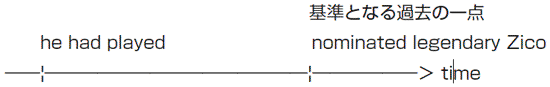
神様ジーコ、監督に就任
Japanese Football Chronicle (5)
After the 2002 World Cup, thepresident of the JFA (Japanese FootballAssociation)nominated legendary Zico as the coach of the national team because he had played in the J. League and knew Japanese football very well.His boys won the Asian Cup 2004 held in China and proved that they were the strongest in Asia.
In Germanythe Rising Sun willcompete in its third World Cup to prove that their good results in 2002 aren't due to their home groundadvantage.
2002年のワールドカップの後、JFAの会長は伝説のジーコを日本代表の監督に任命した。なぜなら、ジーコはＪリーグでプレーした経験もあり、日本のサッカーをよく知っているからだ。日本代表は中国で開かれた2004年のアジアカップで優勝することで、自分たちがアジアで最強であるということを証明した。
2002年の結果がホームアドバンテージによるものではないということを証明するために、ドイツで日本代表は３回目のワールドカップに挑戦することになる。
→ president
大統領・会長
→ association
連盟
→ nominate A as B
ＡをＢに任命する
→ legendary
伝説の
→ His boys
日本代表
→ the Rising Sun
〝日本〟を文字通りに英訳した表現
→ compete
競争する
→ advantage
利点・利益
→ because he had played in the J. League
今回のテキストを読んでいると、上のhehad playedという部分だけ単なる過去形ではなく、had＋過去分詞の過去完了形が使われているのに気づくと思います。さて、この過去完了ですが、これはいったいどんなときに使われるのでしょう？英語では、過去のある時点よりさらに前に起こったことについて述べるとき、過去完了が使われます。ここでは、becauseの前にあるnominated legendary Zicoというのが過去を表していますが、Ｊリーグでプレーしたというのはこれよりさらに昔に起こったことです。そのため、had playedという、過去の一点よりさらに前のことを現す過去完了が使われているのです。
過去完了は日本人にはなかなかわかりにくいので、もし混乱したときは下のように時間の流れを図に書いてみるといいと思います。
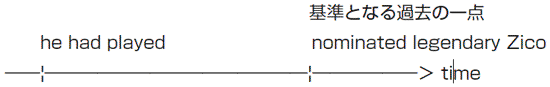
→ the Rising Sun will compete
vol.6とのつながりを考えると、普通は過去形を用いるところでしょうが、この文章は2006年のワールドカップが始まる前に書いたこともあり、雰囲気を出すためにwillを残しています。
vol.6
オシム戦記
Japanese Football Chronicle (6)
The Samurai Blueflew home disappointed with their result in Germany. This World Cup made the Japanese clearly realize that to succeed at an international level the Japanese national team has totranscend thecurrent standard of Asian football. The fact that no Asian team reached the second round in Germany proves this.
The JFA chose coach Ivica Osim, who took the former Yugoslavia tothe quarter-finals of the 1990 World Cup in Italy. His first mission is to pass the preliminary round for the Asian Cup, which Japan wonconsecutively in 2000 and 2004.
日本代表はドイツでの結果に幻滅したまま帰国した。今回のワールドカップで、世界レベルで成功するためには、日本代表は現在のアジアサッカーのレベルを超えなければいけないということを日本人は痛感した。アジアのチームで決勝トーナメントに進出したチームが１つもないということが、このことを証明している。
JFAは、1990年のイタリア大会で旧ユーゴスラビアを準々決勝まで導いたイヴィチャ・オシムコーチを選択した。彼の最初の任務はアジアカップの予選ラウンドを通過することである。日本は2000年と2004年のアジアカップで連続優勝している。
→ fly home
→ disappointed with
→ transcend
→ current
→ the quarter-finals
→ consecutively
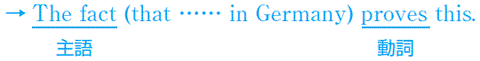
この文章は主語と動詞が離れているので読みにくいと思います。thatからGermanyまでは主語The factを修飾しているだけで、文章全体の動詞はprovesだということに注目しながら、読んでいきましょう。
オシム戦記
Japanese Football Chronicle (6)
The Samurai Blueflew home disappointed with their result in Germany. This World Cup made the Japanese clearly realize that to succeed at an international level the Japanese national team has totranscend thecurrent standard of Asian football. The fact that no Asian team reached the second round in Germany proves this.
The JFA chose coach Ivica Osim, who took the former Yugoslavia tothe quarter-finals of the 1990 World Cup in Italy. His first mission is to pass the preliminary round for the Asian Cup, which Japan wonconsecutively in 2000 and 2004.
日本代表はドイツでの結果に幻滅したまま帰国した。今回のワールドカップで、世界レベルで成功するためには、日本代表は現在のアジアサッカーのレベルを超えなければいけないということを日本人は痛感した。アジアのチームで決勝トーナメントに進出したチームが１つもないということが、このことを証明している。
JFAは、1990年のイタリア大会で旧ユーゴスラビアを準々決勝まで導いたイヴィチャ・オシムコーチを選択した。彼の最初の任務はアジアカップの予選ラウンドを通過することである。日本は2000年と2004年のアジアカップで連続優勝している。
→ fly home
飛行機で帰国する
→ disappointed with
......に幻滅する
→ transcend
超える
→ current
現在の
→ the quarter-finals
準々決勝
→ consecutively
連続して
→ This World Cup made the Japanese clearly realize that
makeにはmake A doで、Ａにdoさせるという用法があります。このような用法を使役と呼びます。ここでは、ＡにJapanese、doにrealizeが来ているため、日本人にthat以下のことを気づかせるという意味になります。
→ the Japanese national team has to transcend
上の文章を見たとき、主節の文章がmadeなのに、なんでhad toじゃなくてhas toが使われているんだろうと思った人もいるかもしれません。この文章のように真理や事実を表す場合は、主節の動詞が過去形でも時制の一致が起こらず、現在形が用いられます。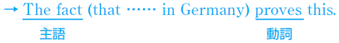
この文章は主語と動詞が離れているので読みにくいと思います。thatからGermanyまでは主語The factを修飾しているだけで、文章全体の動詞はprovesだということに注目しながら、読んでいきましょう。
vol.7
鈴木、根性の一撃
A Historic Point
After asluggish first half, Japan and Belgium scored four goals in the second half. First, Wilmotsripped a bicycle kick by Narazaki's right side. The goalsilenced the crowd in Saitama. However, just two minutes later, Suzukiequalized,tracking down a long pass from Ono. Then Japanwent ahead for the first time in the World Cup finals with Inamato's goal.
Unfortunately, Van Der Heyden scoredan equalizer for Belgium. Inamoto had anothergo-ahead goal. But the refereecancelled out this goal,whistling for a foul. For Japan, this was a historic game because this was the first time Japan got a point in a World Cup.
退屈な前半戦の後、日本とベルギーは後半戦であわせて４個のゴールを決めた。最初に、ウィルモッツの放ったバイシクルキックが楢崎の右横をすり抜けていった。このゴールで、サポーターたちは沈黙してしまった。しかし、その２分後、小野からのロングパスを追いかけた鈴木が同点弾を決める。そして、稲本のゴールのおかげで、日本はワールドカップ本戦で初めてのリードを奪う。
残念なことに、ヴァン・デル・ヘイデンが同点弾を叩き込む。稲本はまた逆転弾を決める。しかし、レフェリーはファールの笛を吹き、このゴールを取り消してしまう。日本にとって、これは歴史的な試合だった。なぜなら、日本がワールドカップで勝ち点を奪ったのはこれが初めてだからだ。
→ sluggish
→ rip a bicycle kick
→ by Nrazaki's right side
→ silence
→ equalize
→ track down
→ go ahead
→ unfortunately
→ equalizer
→ go-ahead goal
→ cancel out
→ ehistle for a foul
鈴木、根性の一撃
A Historic Point
After asluggish first half, Japan and Belgium scored four goals in the second half. First, Wilmotsripped a bicycle kick by Narazaki's right side. The goalsilenced the crowd in Saitama. However, just two minutes later, Suzukiequalized,tracking down a long pass from Ono. Then Japanwent ahead for the first time in the World Cup finals with Inamato's goal.
Unfortunately, Van Der Heyden scoredan equalizer for Belgium. Inamoto had anothergo-ahead goal. But the refereecancelled out this goal,whistling for a foul. For Japan, this was a historic game because this was the first time Japan got a point in a World Cup.
退屈な前半戦の後、日本とベルギーは後半戦であわせて４個のゴールを決めた。最初に、ウィルモッツの放ったバイシクルキックが楢崎の右横をすり抜けていった。このゴールで、サポーターたちは沈黙してしまった。しかし、その２分後、小野からのロングパスを追いかけた鈴木が同点弾を決める。そして、稲本のゴールのおかげで、日本はワールドカップ本戦で初めてのリードを奪う。
残念なことに、ヴァン・デル・ヘイデンが同点弾を叩き込む。稲本はまた逆転弾を決める。しかし、レフェリーはファールの笛を吹き、このゴールを取り消してしまう。日本にとって、これは歴史的な試合だった。なぜなら、日本がワールドカップで勝ち点を奪ったのはこれが初めてだからだ。
→ sluggish
反応の遅い・退屈な
→ rip a bicycle kick
バイシクルキックを放つ
→ by Nrazaki's right side
楢崎の右横を抜けて
→ silence
（動詞で）黙らせる
→ equalize
同点弾を決める
→ track down
追いかける
→ go ahead
逆転する
→ unfortunately
不運にも
→ equalizer
同点弾
→ go-ahead goal
逆転弾
→ cancel out
取り消す
→ ehistle for a foul
ファールの笛を吹く
→ this was a historic game.
historyから派生した形容詞としては、historicとhistoricalの２つがあります。このうち、historicalは「歴史に関する」という意味になります。「歴史的な」と言いたいときは、historicを使うようにしましょう。
→ because this was the first time Japan got a point in a World Cup.
Japan got a point in a World Cupですが、これはその前のthe first timeの内容を説明しています。つまり、「日本がワールドカップで勝ち点をとった初めての時」というわけです。
vol.8
ブルーの涙
（宮城スタジアムにて）
The Beautiful Adventure
In the 12th minute, Turkey got a corner kick as a result of a defensive error. Then Umit Davalahammered the ball past Narazakiinto the goal. Itimposed a silence on the crowd in Miyagi Stadium. After this goal, Japan tried and tried toequalize. But the Boys in blue couldn'tcrack the Turkish defence despitedominating possession.
〝It was a greatachievement that wemade it to the knockout round, though I feel we could have gone further,〟 Nakata said. As coach Troussier said, this is the end of the beautifuladventure.
12分に、トルコはディフェンスのミスからコーナーキックを得た。すると、ユミト・ダバラが楢崎の守るゴールの中に叩き込んだ。このゴールのおかげで、宮城スタジアムのサポーターはおとなしくなってしまった。このゴールの後、日本は何とかして同点に追いつこうとした。しかし、圧倒的なボール支配にもかかわらず、日本代表はトルコのディフェンスを打ち破ることができなかった。
「決勝トーナメントに進出できたのは、よかったと思う。ただ、もっと行けたんじゃないかという気もする」と中田は語った。トルシエ監督が言ったように、美しい冒険はこれで終わった。
→ hammer the ball into the goal
→ impose
→ equalize
→ crack
→ dominate
→ dominating possession
→ achievement
→ make it to the knockout round
→ adventure
may (might) have＋過去分詞：......したかもしれない
must have＋過去分詞：......したに違いない
should have＋過去分詞：......したはずだ
cannot have＋過去分詞：......したはずがない
ブルーの涙
（宮城スタジアムにて）
The Beautiful Adventure
In the 12th minute, Turkey got a corner kick as a result of a defensive error. Then Umit Davalahammered the ball past Narazakiinto the goal. Itimposed a silence on the crowd in Miyagi Stadium. After this goal, Japan tried and tried toequalize. But the Boys in blue couldn'tcrack the Turkish defence despitedominating possession.
〝It was a greatachievement that wemade it to the knockout round, though I feel we could have gone further,〟 Nakata said. As coach Troussier said, this is the end of the beautifuladventure.
12分に、トルコはディフェンスのミスからコーナーキックを得た。すると、ユミト・ダバラが楢崎の守るゴールの中に叩き込んだ。このゴールのおかげで、宮城スタジアムのサポーターはおとなしくなってしまった。このゴールの後、日本は何とかして同点に追いつこうとした。しかし、圧倒的なボール支配にもかかわらず、日本代表はトルコのディフェンスを打ち破ることができなかった。
「決勝トーナメントに進出できたのは、よかったと思う。ただ、もっと行けたんじゃないかという気もする」と中田は語った。トルシエ監督が言ったように、美しい冒険はこれで終わった。
→ hammer the ball into the goal
ゴールにボールを叩き込む
→ impose
課する・負わせる
→ equalize
同点弾を決める
→ crack
割る・砕く
→ dominate
支配する
→ dominating possession
圧倒的なボール支配
→ achievement
業績
→ make it to the knockout round
決勝トーナメントまで進む
→ adventure
冒険
→ It wasa great achievementthat we made it to the knockout round.
この文章では、Itはthat we made it to the knockout roundを指しています。言い換えれば、that以下はa great achievementだったということを、この文章は言いたいわけです。Itにはこのように、thatやto不定詞を受ける用法があります。これを、仮主語のitと呼びます。
→ we could have gone further.
could have＋過去分詞で「～したかもしれない」という過去の推量を表します。これ以外にも、助動詞＋have＋過去分詞で特殊な意味になるときがあります。下に例を挙げておいたので、チェックしておいてください。may (might) have＋過去分詞：......したかもしれない
must have＋過去分詞：......したに違いない
should have＋過去分詞：......したはずだ
cannot have＋過去分詞：......したはずがない
vol.9
日本、ブラジルに
火をつける
A Complete Defeat (1)
After thedefeat against Australia and a 0-0draw with Croatia, Japanfaced the difficulttask of having tobeat Brazil tostand a chance of qualifying for the second round. In the first half, although the Brazilians controlled the match, Japanstruggled with concentration. Keeper Kawaguchiput in an excellent performance withmiraculous saves.
Then on 34 minutes, Santosplayed a dangerous ball intothe box, with which Tamadaunleashed a powerful shot into the net. However, in injury time, Ronaldo scored witha header. Japan failed tocarry the lead into the half-time break.
オーストラリアに対する敗北と、クロアチアに対する引き分けの後、決勝トーナメント進出の可能性を得るために、日本はブラジルを打ち負かすという非常に重要な仕事を成し遂げなければならなかった。前半はブラジルが試合をコントロールしたものの、日本も集中してがんばった。キーパーの川口も神がかりのセーブを見せるという素晴らしいパフォーマンスを発揮した。
そして、34分には、三都主からのペナルティーエリア内への危険なパスを、玉田がネットに突き刺した。しかし、ロスタイムには、ロナウドがヘッドでゴールを決めた。日本はリードをハーフタイムに持ち越せなかった。
→ defeat
→ draw
→ face
→ task
→ beat
→ stand a chance of
→ qualify for
→ struggle
→ put in an excellent performance
→ miraculous
→ play a dangerous ball
→ the box
→ unleash a powerful shot
→ header
→ carry the lead into the half-time break
◆訳注
試合を扱っている章に関しては、試合の雰囲気を再現するために、訳の正しさよりもサッカー的な言い回しのほうを大切にしています。あまり細かい訳にこだわることなく、何度も口に出すことで、サッカーの英語特有な表現に慣れていきましょう。
日本、ブラジルに
火をつける
A Complete Defeat (1)
After thedefeat against Australia and a 0-0draw with Croatia, Japanfaced the difficulttask of having tobeat Brazil tostand a chance of qualifying for the second round. In the first half, although the Brazilians controlled the match, Japanstruggled with concentration. Keeper Kawaguchiput in an excellent performance withmiraculous saves.
Then on 34 minutes, Santosplayed a dangerous ball intothe box, with which Tamadaunleashed a powerful shot into the net. However, in injury time, Ronaldo scored witha header. Japan failed tocarry the lead into the half-time break.
オーストラリアに対する敗北と、クロアチアに対する引き分けの後、決勝トーナメント進出の可能性を得るために、日本はブラジルを打ち負かすという非常に重要な仕事を成し遂げなければならなかった。前半はブラジルが試合をコントロールしたものの、日本も集中してがんばった。キーパーの川口も神がかりのセーブを見せるという素晴らしいパフォーマンスを発揮した。
そして、34分には、三都主からのペナルティーエリア内への危険なパスを、玉田がネットに突き刺した。しかし、ロスタイムには、ロナウドがヘッドでゴールを決めた。日本はリードをハーフタイムに持ち越せなかった。
→ defeat
敗北
→ draw
ひきわけ
→ face
直面する
→ task
仕事
→ beat
負かす・打ち破る
→ stand a chance of
......する可能性がある
→ qualify for
......する資格を得る
→ struggle
努力する
→ put in an excellent performance
素晴らしいセーブを見せる
→ miraculous
素晴らしい
→ play a dangerous ball
いいパスを出す
→ the box
ペナルティーエリア
→ unleash a powerful shot
力強いシュートを打つ
→ header
ヘディングによるシュート
→ carry the lead into the half-time break
ハーフタイムまでリードを維持する
◆訳注
試合を扱っている章に関しては、試合の雰囲気を再現するために、訳の正しさよりもサッカー的な言い回しのほうを大切にしています。あまり細かい訳にこだわることなく、何度も口に出すことで、サッカーの英語特有な表現に慣れていきましょう。
vol.10
強すぎたブラジル
A Complete Defeat (2)
In the second half, a power shot from Juninhoflew into the top right-hand corner of the net. It was so powerful that even Kawaguchi, who made fine saves in the first half, couldn'tget a hand on the ball.
After this goal, the Japanese playersdropped their heads. Theywasted their chances easily and their defensewent to sleep. The Brazilianshad the Japanesein their pocket and scored two goals in the remaining time. As a result of this match, Brazilmade sure of first place in Group F.
後半には、ジュニーニョの力強いシュートが、ゴール右隅に突き刺さった。非常に力強いシュートだったので、前半で何度もファインセーブを繰り返していた川口でさえも、ボールに手を触れることができなかった。
このゴールの後、日本の選手たちはうなだれてしまった。彼らはチャンスを無駄にし、ディフェンスは無力化した。ブラジルは日本を手玉に取り、残りの時間で２ゴールを決めた。この試合の結果、ブラジルは予選Ｆ組の首位通過を確実なものとした。
→ fly into the top right-hand corner of the net
→ get a hand on A
→ drop one's head
→ waste
→ go to sleep
→ have A in their pocket
→ remaining
→ make sure of A
カンマのないwhoは制限用法といい、大勢の人の中からwho以下の条件に当てはまる人をだけを制限して選び出します。つまり、Kawaguchi who made fine saves in the first halfと書くと、川口という名前の選手がたくさんいて、その中から「前半でファインセーブをした」選手を選び出すというニュアンスになってしまうのです。
それに対して、カンマのないwhoは非制限用法と呼ばれ、whoの前に来る名詞（先行詞）についてプラスアルファの情報を付け加えるという働きをします。つまりここで言えば、川口という選手が１人いて、その選手がどういう活躍をしたかというのを付け加えるということです。
たかがカンマのあるなしですが、それだけで文章の意味がまるで変わってきてしまいます。読むときは、注意して読むようにしましょう。なお、whichにも制限用法と非制限用法の区別があります。
強すぎたブラジル
A Complete Defeat (2)
In the second half, a power shot from Juninhoflew into the top right-hand corner of the net. It was so powerful that even Kawaguchi, who made fine saves in the first half, couldn'tget a hand on the ball.
After this goal, the Japanese playersdropped their heads. Theywasted their chances easily and their defensewent to sleep. The Brazilianshad the Japanesein their pocket and scored two goals in the remaining time. As a result of this match, Brazilmade sure of first place in Group F.
後半には、ジュニーニョの力強いシュートが、ゴール右隅に突き刺さった。非常に力強いシュートだったので、前半で何度もファインセーブを繰り返していた川口でさえも、ボールに手を触れることができなかった。
このゴールの後、日本の選手たちはうなだれてしまった。彼らはチャンスを無駄にし、ディフェンスは無力化した。ブラジルは日本を手玉に取り、残りの時間で２ゴールを決めた。この試合の結果、ブラジルは予選Ｆ組の首位通過を確実なものとした。
→ fly into the top right-hand corner of the net
ネットの右端に突き刺さる
→ get a hand on A
Ａに触れる
→ drop one's head
うなだれる
→ waste
無駄にする
→ go to sleep
無力化する・やる気がなくなる
→ have A in their pocket
Ａを意のままに支配する
→ remaining
残りの
→ make sure of A
Ａを確実にする
→ Kawaguchi, who made fine saves in the first half.
ここの文章では、whoの前にカンマ（,）が来ていますが、実はwhoにはカンマのないものとカンマありのものがあります。この２つは一体どこがどう違うのでしょうか？カンマのないwhoは制限用法といい、大勢の人の中からwho以下の条件に当てはまる人をだけを制限して選び出します。つまり、Kawaguchi who made fine saves in the first halfと書くと、川口という名前の選手がたくさんいて、その中から「前半でファインセーブをした」選手を選び出すというニュアンスになってしまうのです。
それに対して、カンマのないwhoは非制限用法と呼ばれ、whoの前に来る名詞（先行詞）についてプラスアルファの情報を付け加えるという働きをします。つまりここで言えば、川口という選手が１人いて、その選手がどういう活躍をしたかというのを付け加えるということです。
たかがカンマのあるなしですが、それだけで文章の意味がまるで変わってきてしまいます。読むときは、注意して読むようにしましょう。なお、whichにも制限用法と非制限用法の区別があります。
vol.11
あ、言っちゃった
A Slip of the Tongue (1)
At thepress conference held on June 24, Mr. Kawabuchi,chairman of the Japan footballassociation, announced by mistake that Ivica Osim, coach for JEF UNITED Chiba, willreplace Zico.
Osim was aformer Yugoslavia coach and is famous for histactics. He started his career as coach for the team in 2003 and helped the team to win its first J. League title. Many people think he will be the best toimprove the weak point that the Japanese national teamdisplayed in this World Cup.
6月24日に開かれた記者会見で、日本サッカー協会の川淵キャプテンは誤ってジーコの次の監督はオシムだと発表してしまった。
オシムはかつてユーゴスラビア代表の監督をしたことがあり、戦術で有名である。彼は2003年にジェフの監督となり、チームに最初のＪリーグのタイトルをもたらした。多くの人が、今回のワールドカップで日本がさらけ出した欠点を改善するにはオシムがベストだと考えている。
→ press conference
→ held
→ chairman
→ association
→ replace
→ former
→ tactics
→ improve
→ display

主語の後にカンマで挟まれた挿入句が存在する場合、主語と動詞の距離が離れてしまい文章の構造が見抜きにくくなることがよくあります。上の２つの文章は、その実例です。
このような場合、カンマで挟まれた部分をカッコに入れて考えることで、文章構造をつかむことができます。ちなみに、このようなカンマに挟まれた文章構造のことを同格といいます。同格は、主語の内容をより詳しく説明する働きをしています。
あ、言っちゃった
A Slip of the Tongue (1)
At thepress conference held on June 24, Mr. Kawabuchi,chairman of the Japan footballassociation, announced by mistake that Ivica Osim, coach for JEF UNITED Chiba, willreplace Zico.
Osim was aformer Yugoslavia coach and is famous for histactics. He started his career as coach for the team in 2003 and helped the team to win its first J. League title. Many people think he will be the best toimprove the weak point that the Japanese national teamdisplayed in this World Cup.
6月24日に開かれた記者会見で、日本サッカー協会の川淵キャプテンは誤ってジーコの次の監督はオシムだと発表してしまった。
オシムはかつてユーゴスラビア代表の監督をしたことがあり、戦術で有名である。彼は2003年にジェフの監督となり、チームに最初のＪリーグのタイトルをもたらした。多くの人が、今回のワールドカップで日本がさらけ出した欠点を改善するにはオシムがベストだと考えている。
→ press conference
記者会見
→ held
動詞hold「（会議、パーティーなどを）開く」の過去分詞形
→ chairman
議長・司会者
→ association
組合・団体
→ replace
取って代わる・後継者となる
→ former
前の
→ tactics
戦術
→ improve
改善する
→ display
示す
→ At the press conference held on June 24
ここのheldは過去形ではなく過去分詞として前のthe press conferenceを修飾しています。文章構造が理解しにくい人は、the press conference (which was) heldのようにwhich wasを補って読むようにしましょう。主語の後にカンマで挟まれた挿入句が存在する場合、主語と動詞の距離が離れてしまい文章の構造が見抜きにくくなることがよくあります。上の２つの文章は、その実例です。
このような場合、カンマで挟まれた部分をカッコに入れて考えることで、文章構造をつかむことができます。ちなみに、このようなカンマに挟まれた文章構造のことを同格といいます。同格は、主語の内容をより詳しく説明する働きをしています。
vol.12
川淵キャプテン、
ホントに失言？
A Slip of the Tongue (2)
However, there are many whocriticize Mr. Kawabuchi. It is often said that the JFAlacks the ability tonegotiate with international level coaches. For example, the JFAappointed Frenchman Troussieras coach because Arsenal coach Wenger refused toassume thepost. That's why many think the JFA justcherry-picked one of the best J. League club coaches.
Manydoubt that Kawabuchi'sremark wasa slip of the tongue. Maybe hisintention was to smoothlyconduct negotiation with JEF's side byformally announcing it. JEF UNITEDexpressed a great deal of discomfort about his remark.
しかし、多くの人が川淵キャプテンを批判している。日本サッカー協会は世界レベルのコーチと交渉する能力に欠けているとよく噂されている。例えば、日本サッカー協会がフランス人のトルシエを監督に任命したのは、アーセナルのベンゲル監督に就任を断られたからである。だからこそ、日本サッカー協会がＪリーグ最高のコーチをかっさらったのではないかと多くの人が疑ってるのだ。
多くの人が、川淵キャプテンの発言は本当に失言だったのかどうか疑問に思っている。もしかしたら、彼の意図は、公式に発表することで、ジェフ側との交渉を容易に進めることにあったのかもしれない。ジェフ側は川淵キャプテンの発言に対して、遺憾の意を表している。
→ criticize
→ lack
→ negotiate
→ appoint A as B
→ assume
→ post
→ cherry-pick
→ doubt
→ remark
→ a slip of the tongue
→ intention
→ conduct
→ formally
→ express a great deal of discomfort about A
川淵キャプテン、
ホントに失言？
A Slip of the Tongue (2)
However, there are many whocriticize Mr. Kawabuchi. It is often said that the JFAlacks the ability tonegotiate with international level coaches. For example, the JFAappointed Frenchman Troussieras coach because Arsenal coach Wenger refused toassume thepost. That's why many think the JFA justcherry-picked one of the best J. League club coaches.
Manydoubt that Kawabuchi'sremark wasa slip of the tongue. Maybe hisintention was to smoothlyconduct negotiation with JEF's side byformally announcing it. JEF UNITEDexpressed a great deal of discomfort about his remark.
しかし、多くの人が川淵キャプテンを批判している。日本サッカー協会は世界レベルのコーチと交渉する能力に欠けているとよく噂されている。例えば、日本サッカー協会がフランス人のトルシエを監督に任命したのは、アーセナルのベンゲル監督に就任を断られたからである。だからこそ、日本サッカー協会がＪリーグ最高のコーチをかっさらったのではないかと多くの人が疑ってるのだ。
多くの人が、川淵キャプテンの発言は本当に失言だったのかどうか疑問に思っている。もしかしたら、彼の意図は、公式に発表することで、ジェフ側との交渉を容易に進めることにあったのかもしれない。ジェフ側は川淵キャプテンの発言に対して、遺憾の意を表している。
→ criticize
批判する
→ lack
欠ける
→ negotiate
交渉する
→ appoint A as B
ＡをＢに任命する
→ assume
引き受ける
→ post
職
→ cherry-pick
（自分の気に入ったものを）つまみ食いする
→ doubt
......かどうか疑問に思う
→ remark
発言
→ a slip of the tongue
言い間違い・失言
→ intention
意図
→ conduct
行なう
→ formally
公式に
→ express a great deal of discomfort about A
Ａに対して遺憾の意を表す
→ It is often said that
これは「（一般的に）......だと言われている」と言いたいときの決まり文句です。同じような意味の表現としては、people say thatやit is rumored thatがあります。
→ Many doubt that
doubtですが、「......かどうか疑問に思う」という訳だと少し意味がわかりにくいかもしれません。doubtの意味を理解するには、don't thinkやdon't believeのように英語で考えると理解しやすいでしょう。
vol.13
24年目の奇跡
Italy's Fourth Victory (1)
After waiting 24 years, the Italians finally won their fourth World Cup. In 1934 they got thier firstcrown, which they successfullydefended four years later in France. Their third title was in 1982 in Spain.
Before the 2006 World Cup started, many doubted their chances of winning the World Cup because amatch-fixing scandalmade a big stir in Serie A. However, the Italiansgot over thiscrisis bystrengthening theirunity in the team. Every member fought for the team, which is clearly proven by the fact that ten different players scored a goal.
24年間待った後、イタリアはついに４度目のワールドカップを勝ち取った。1934年には、イタリアは最初の王座を獲得し、４年後のフランスでも王座を首尾よく防衛した。彼らの３度目のタイトルは、1982年のスペインでのことだった。
2006年のワールドカップが始まる前は、多くの人は彼らがワールドカップを獲得するチャンスを疑問視していた。というのも、八百長疑惑がセリエＡで問題になっていたからだ。しかし、チーム内での団結を強化することで、イタリア代表はこの危機を切り抜けた。すべてのメンバーがチームのために戦った。このことは、10人の異なる選手が全員得点をしたことによく現れている。
→ crown
→ defend
→ match-fixing
→ make a big stir
→ get over
→ crisis
→ strengthen
→ unity
（１）their first crown, which they successfully defended four years later in France.
（２）Every member fought for the team, which is clearly proven by the fact
関係詞の入った文章を読むときは、その関係詞が前の文章のどの名詞（先行詞という）にかかっているかということが大切になってきます。そのため、関係詞を読むときは、常に先行詞を探しながら読む必要があります。
さて、上の２つの文章ですが、（１）ではwhichのすぐ前の名詞their first crownが先行詞になります。しかし（２）で、the teamが先行詞と考えて訳してみると、「そのチームはその出来事によりはっきりと証明された」というわけのわからない文章になってしまいます。いったいどこがおかしいのでしょうか？
実は、カンマ＋whichには、名詞を先行詞に取る用法に加えて、カンマの前にある文全体を先行詞にとるという特殊な用法があります。ですから、このwhichの先行詞はEvery member fought for the team全体なのです。したがって、（２）の訳は、「すべての選手がチームのために戦ったことは、その出来事によってはっきりと証明された」となります。
24年目の奇跡
Italy's Fourth Victory (1)
After waiting 24 years, the Italians finally won their fourth World Cup. In 1934 they got thier firstcrown, which they successfullydefended four years later in France. Their third title was in 1982 in Spain.
Before the 2006 World Cup started, many doubted their chances of winning the World Cup because amatch-fixing scandalmade a big stir in Serie A. However, the Italiansgot over thiscrisis bystrengthening theirunity in the team. Every member fought for the team, which is clearly proven by the fact that ten different players scored a goal.
24年間待った後、イタリアはついに４度目のワールドカップを勝ち取った。1934年には、イタリアは最初の王座を獲得し、４年後のフランスでも王座を首尾よく防衛した。彼らの３度目のタイトルは、1982年のスペインでのことだった。
2006年のワールドカップが始まる前は、多くの人は彼らがワールドカップを獲得するチャンスを疑問視していた。というのも、八百長疑惑がセリエＡで問題になっていたからだ。しかし、チーム内での団結を強化することで、イタリア代表はこの危機を切り抜けた。すべてのメンバーがチームのために戦った。このことは、10人の異なる選手が全員得点をしたことによく現れている。
→ crown
王冠・王座の身分（ここでは、ワールドカップ優勝のこと）
→ defend
防衛する
→ match-fixing
八百長
→ make a big stir
大騒動を起こす
→ get over
克服する
→ crisis
危機
→ strengthen
強化する
→ unity
連帯・結束
（１）their first crown, which they successfully defended four years later in France.
（２）Every member fought for the team, which is clearly proven by the fact
関係詞の入った文章を読むときは、その関係詞が前の文章のどの名詞（先行詞という）にかかっているかということが大切になってきます。そのため、関係詞を読むときは、常に先行詞を探しながら読む必要があります。
さて、上の２つの文章ですが、（１）ではwhichのすぐ前の名詞their first crownが先行詞になります。しかし（２）で、the teamが先行詞と考えて訳してみると、「そのチームはその出来事によりはっきりと証明された」というわけのわからない文章になってしまいます。いったいどこがおかしいのでしょうか？
実は、カンマ＋whichには、名詞を先行詞に取る用法に加えて、カンマの前にある文全体を先行詞にとるという特殊な用法があります。ですから、このwhichの先行詞はEvery member fought for the team全体なのです。したがって、（２）の訳は、「すべての選手がチームのために戦ったことは、その出来事によってはっきりと証明された」となります。
vol.14
イタリアサッカーの真髄
Italy's Fourth Victory (2)
Coach Marcello Lippiimproved Italy's offence byplacing controlling playmaker Andrea Pirlo in the mid-field. He and Gennaro Gattuso set the tempo of the game by establishingcommand of midfield.
However, theessence of the Italian football exists in itstight-knit defense:catenaccio. Theyconceded onlytwo goals in this world cup. One is an own goal against the USA. The other is a penalty scored by Zidane. When theiropponents had a golden chance, they alwayscommitted themselves to protect the goal. There was no way through Italy's back line.
マルチェロ・リッピ監督は、ゲームをコントロールするプレーメーカーのアンドレア・ピルロを中盤に配置することで、イタリアの攻撃を改善した。中盤を制圧することで、彼とジェンナーロ・ガットゥーゾはゲームのペースを作り出した。
しかし、イタリアサッカーの真髄は、カテナチオと呼ばれるその堅固なディフェンスにある。今回のワールドカップで、イタリア代表は２点しか失点しなかった。１つは、アメリカ戦でのオウンゴールであり、もう１つはジダンによるペナルティーキックである。対戦相手が絶好のチャンスを得た時、彼らはゴールを守るために常に身を投げ出した。イタリアの最終ラインを突破する方法は存在しなかった。
→ improve
→ place
→ command
→ essence
→ tight-knit
→ catenaccio
→ concede a goal
→ opponent
→ have a golden chance
→ commit oneself
なお、上の文章では、scoredはその前のa penaltyを修飾する過去分詞として使われています。過去分詞による修飾は慣れないうちは読みにくいので、上のように関係詞を補って読むようにしましょう。
イタリアサッカーの真髄
Italy's Fourth Victory (2)
Coach Marcello Lippiimproved Italy's offence byplacing controlling playmaker Andrea Pirlo in the mid-field. He and Gennaro Gattuso set the tempo of the game by establishingcommand of midfield.
However, theessence of the Italian football exists in itstight-knit defense:catenaccio. Theyconceded onlytwo goals in this world cup. One is an own goal against the USA. The other is a penalty scored by Zidane. When theiropponents had a golden chance, they alwayscommitted themselves to protect the goal. There was no way through Italy's back line.
マルチェロ・リッピ監督は、ゲームをコントロールするプレーメーカーのアンドレア・ピルロを中盤に配置することで、イタリアの攻撃を改善した。中盤を制圧することで、彼とジェンナーロ・ガットゥーゾはゲームのペースを作り出した。
しかし、イタリアサッカーの真髄は、カテナチオと呼ばれるその堅固なディフェンスにある。今回のワールドカップで、イタリア代表は２点しか失点しなかった。１つは、アメリカ戦でのオウンゴールであり、もう１つはジダンによるペナルティーキックである。対戦相手が絶好のチャンスを得た時、彼らはゴールを守るために常に身を投げ出した。イタリアの最終ラインを突破する方法は存在しなかった。
→ improve
改善する
→ place
配置する
→ command
支配
→ essence
真髄
→ tight-knit
堅く編んだ
→ catenaccio
イタリア語で「鍵」の意味
→ concede a goal
得点を与える
→ opponent
対戦相手
→ have a golden chance
絶好の機会を得る
→ commit oneself
身を投げ出す
→ by placing controlling playmaker Andrea Pirlo in the mid-field
ほとんどの人は、placeという単語を見て、「場所」という名詞としての意味を真っ先に思い浮かべると思います。しかし、placing と語尾にingがついていることからわかるように、ここではplaceは「配置する」という意味の動詞として使われています。
→ The other is a penalty (which was) scored by Zidane.
上の文章のscoredですが、見ればわかるとおり、scoreの後に-edが付いています。このことからわかるとおり、scoreには日本語の「スコア」の意味だけでなく、「点を取る」という動詞としての用法があります。なお、上の文章では、scoredはその前のa penaltyを修飾する過去分詞として使われています。過去分詞による修飾は慣れないうちは読みにくいので、上のように関係詞を補って読むようにしましょう。
vol.15
中田の涙
Nakata Wept
After thewhistle ending the game wasblown, Nakataknelt down weakly to the pitch and lay there for five minutes,weeping. Then he went to the stands and thanked supporters.
It was a shocking scene. Nakata is famous for hisiron will and strong physical condition. However, after thedisappointing result between Japan and Brazil, he seemedexhausted anddejected. This scenesymbolized the completedefeat Japan suffered from Brazil.
After 10 days from this match, he announced hisretirement from the football world on his ownwebsite.
ゲームの終わりを告げる笛が吹かれた後、中田はピッチにしゃがみ込み、泣きながら５分間ピッチに横たわっていた。それから、彼はスタンドに行き、サポーターに挨拶した。
それは非常に衝撃的なシーンだった。中田は、鉄の意志と強靭なフィジカルコンディションで有名である。しかし、日本対ブラジル戦の残念な結果の後、彼は疲れ果て落胆しているように見えた。このシーンが、日本がブラジルに喫した完璧な敗北を象徴していた。
このシーンの10日後、中田は自身のホームページで、引退を表明した。
→ whistle
→ blown
→ kneel down
→ weep
→ iron will
→ disappointing
→ result
→ exhausted
→ dejected
→ symbolize
→ defeat
→ retirement
→ website
中田の涙
Nakata Wept
After thewhistle ending the game wasblown, Nakataknelt down weakly to the pitch and lay there for five minutes,weeping. Then he went to the stands and thanked supporters.
It was a shocking scene. Nakata is famous for hisiron will and strong physical condition. However, after thedisappointing result between Japan and Brazil, he seemedexhausted anddejected. This scenesymbolized the completedefeat Japan suffered from Brazil.
After 10 days from this match, he announced hisretirement from the football world on his ownwebsite.
ゲームの終わりを告げる笛が吹かれた後、中田はピッチにしゃがみ込み、泣きながら５分間ピッチに横たわっていた。それから、彼はスタンドに行き、サポーターに挨拶した。
それは非常に衝撃的なシーンだった。中田は、鉄の意志と強靭なフィジカルコンディションで有名である。しかし、日本対ブラジル戦の残念な結果の後、彼は疲れ果て落胆しているように見えた。このシーンが、日本がブラジルに喫した完璧な敗北を象徴していた。
このシーンの10日後、中田は自身のホームページで、引退を表明した。
→ whistle
笛
→ blown
動詞blow「吹く」の過去分詞形
→ kneel down
ひざまずく
→ weep
泣く
→ iron will
鉄の意思
→ disappointing
がっかりさせるような
→ result
結果
→ exhausted
疲れ果てた
→ dejected
落胆した
→ symbolize
象徴する
→ defeat
敗北
→ retirement
引退
→ website
ホームページ（英語ではhomepageよりwebsiteと言う単語を用いる事のほうが多いです。）
→ Nakata knelt down weakly to the pitch and lied there for five minutes, weeping.
上の文章の最後にあるweepingですが、これは主語であるNakataの動作を説明しています。ちなみに、weepの過去形は、weepedではなくweptです。間違えないようにしましょう。
→ the complete defeat (that) Japan suffered Φ from Brazil
sufferというと、普通はsuffer from Aのように、sufferのすぐ後にfromを伴った形で使われることが多いです。しかし、ここでは、suffer A from B「ＢからＡという被害を受ける」という形で使われています。したがって、that（ここでは省略されている）の先行詞であるthe complete defeatは、その後の文章ではΦの間に入ります。
vol.16
日本のヒデから
世界のヒデへ
Enfant Terrible
Nakata started to play football at the age of 9. In high school days hestood out as anexceptional playmaker andwas spotted by almost all scouts of the J-League clubs. After his graduation from high school, hesigned a contract with Bellmare and became one of the mostdistinguished players in J-league.
It was in the 1998 World Cup that he arrived on the international scene. Though Japan lost all the matches, he showed his great talent. Thanks to this performance, hemoved to Perugia in Serie A.
中田は９才のときにサッカーを始めた。高校のとき、彼は優れたプレーメーカーとして異彩を放ち、ほとんどすべてのＪリーグチームのスカウトに注目された。高校卒業後は、湘南ベルマーレと契約を交わし、Ｊリーグで最も優れた選手のひとりとなった。
1998年のワールドカップで、彼は世界レベルに到達した。日本はすべての試合に負けたものの、彼は優れた才能を見せ付けた。このパフォーマンスのおかげで、彼はセリエＡのペルージャに移籍した。
→ stand out
→ exceptional
→ be spotted
→ sign a contract with A
→ distinguished
→ move
では、このitはthat節を指しているのでしょうか？ そうだとすると、be動詞は主語と補語をイコールで結びつける働きを持つので、that he arrived on the international scene = in the 1998という関係が成立します。しかし、「中田が国際レベルに到達した」ということと、「1998年に」というのはイコールではありません。ですから、itがthatを指すという解釈もやはり正しくありません。
じつは、ここのit is......thatは、it isとthatの間に挟まれた内容を強調する働きをしています。このようなit is......thatを強調構文と呼びます。なお、強調構文の見分け方ですが、it isとthatを括弧の中に入れてみて文章が成立すれば、それは強調構文です。
なお、強調構文には、このようにthatを使う場合に加えて、whoやwhichを使う場合もあります。it is......thatではさまれる内容が人のときはwho、物のときはwhichが使われます。
日本のヒデから
世界のヒデへ
Enfant Terrible
Nakata started to play football at the age of 9. In high school days hestood out as anexceptional playmaker andwas spotted by almost all scouts of the J-League clubs. After his graduation from high school, hesigned a contract with Bellmare and became one of the mostdistinguished players in J-league.
It was in the 1998 World Cup that he arrived on the international scene. Though Japan lost all the matches, he showed his great talent. Thanks to this performance, hemoved to Perugia in Serie A.
中田は９才のときにサッカーを始めた。高校のとき、彼は優れたプレーメーカーとして異彩を放ち、ほとんどすべてのＪリーグチームのスカウトに注目された。高校卒業後は、湘南ベルマーレと契約を交わし、Ｊリーグで最も優れた選手のひとりとなった。
1998年のワールドカップで、彼は世界レベルに到達した。日本はすべての試合に負けたものの、彼は優れた才能を見せ付けた。このパフォーマンスのおかげで、彼はセリエＡのペルージャに移籍した。
→ stand out
目立つ
→ exceptional
（例外的に）優れた
→ be spotted
注目される
→ sign a contract with A
Ａと契約を交わす
→ distinguished
優れた・抜群の
→ move
動く・移籍する
→ (It was) in the 1998 World Cup (that) he arrived on the international scene.
上の文章のitですが、これは何を指しているのでしょう？ 考えられるのは、前に来ている文章の内容です。しかし、前の文章の内容をitが受けているとすると、「中田が湘南ベルマーレに加入したのは、1998年だった」となってしまいます。これは史実と異なります。したがって、itが前の文章を指しているという解釈は、正しくありません。では、このitはthat節を指しているのでしょうか？ そうだとすると、be動詞は主語と補語をイコールで結びつける働きを持つので、that he arrived on the international scene = in the 1998という関係が成立します。しかし、「中田が国際レベルに到達した」ということと、「1998年に」というのはイコールではありません。ですから、itがthatを指すという解釈もやはり正しくありません。
じつは、ここのit is......thatは、it isとthatの間に挟まれた内容を強調する働きをしています。このようなit is......thatを強調構文と呼びます。なお、強調構文の見分け方ですが、it isとthatを括弧の中に入れてみて文章が成立すれば、それは強調構文です。
なお、強調構文には、このようにthatを使う場合に加えて、whoやwhichを使う場合もあります。it is......thatではさまれる内容が人のときはwho、物のときはwhichが使われます。
vol.17
世界基準の中で
At the Top of His Career
Byscoring twice in the opening match against Juventus, Nakataproved that he had the enough strength to play in Europe's top leagues. In Rome, he helped the club to win theScudetto by scoring a goal againsttitle-chasing Juventus.
In the 2002 World Cup, he played in every match and helped theco-host country toadvance to the second round. However, the 2006 World Cup ended in tearsdue to Japan'sconsecutive defeats and he decided to bow out at the top of his career.
ユベントスとの開幕戦で２ゴールをあげたことで、中田はヨーロッパのトップリーグでプレーする強さがあることを証明した。ローマでは、タイトルを狙うユベントスとの試合で１ゴールを挙げることで、クラブがスクデットを勝ち取るのを助けた。
2002年のワールドカップでは、中田はすべての試合に出場して、共同ホスト国である日本が決勝トーナメントに進出するのに貢献した。しかし、2006年のワールドカップは、日本の連敗のおかげで涙で終わってしまった。そして、彼はキャリアの頂点で引退することを決めた。
→ score
→ prove
→ scudetto
→ title-chasing
→ co-host
→ advance to the second round
→ due to
→ consecutive
→ defeat
それに対して、to不定詞や原形は前置詞の目的語になることができません。もしTOEICでby scoreやby to scoreのように、to不定詞や原形が前置詞の目的語になっている選択肢を見つけたら、迷わず×をつけましょう
世界基準の中で
At the Top of His Career
Byscoring twice in the opening match against Juventus, Nakataproved that he had the enough strength to play in Europe's top leagues. In Rome, he helped the club to win theScudetto by scoring a goal againsttitle-chasing Juventus.
In the 2002 World Cup, he played in every match and helped theco-host country toadvance to the second round. However, the 2006 World Cup ended in tearsdue to Japan'sconsecutive defeats and he decided to bow out at the top of his career.
ユベントスとの開幕戦で２ゴールをあげたことで、中田はヨーロッパのトップリーグでプレーする強さがあることを証明した。ローマでは、タイトルを狙うユベントスとの試合で１ゴールを挙げることで、クラブがスクデットを勝ち取るのを助けた。
2002年のワールドカップでは、中田はすべての試合に出場して、共同ホスト国である日本が決勝トーナメントに進出するのに貢献した。しかし、2006年のワールドカップは、日本の連敗のおかげで涙で終わってしまった。そして、彼はキャリアの頂点で引退することを決めた。
→ score
ゴールを決める
→ prove
証明する
→ scudetto
イタリア語で「小さな盾形の物」と言う意味。ここでは、セリエＡ優勝の事を指す。
→ title-chasing
タイトルを狙う
→ co-host
共同ホスト
→ advance to the second round
決勝ラウンドに進出する
→ due to
......のせいで
→ consecutive
連続した
→ defeat
敗北
→ By scoring twice in the opening match against Juventus
上の文章でby scoringとbyの後にing形が来ていますが、このようにing形は前置詞の後に来ることができます。つまり、ing形は前置詞の目的語になることができるのです。それに対して、to不定詞や原形は前置詞の目的語になることができません。もしTOEICでby scoreやby to scoreのように、to不定詞や原形が前置詞の目的語になっている選択肢を見つけたら、迷わず×をつけましょう
→ he had the enough strength to play
enoughは、どの品詞として働くかによって、置かれる位置が変わってきます。形容詞として働く場合は、修飾する語句の前に置かれます。それに対して、副詞として働く場合は、clearly enoughのように修飾する語句の後ろに置かれます。enough clearlyとしないようにしましょう。
→ he helped the club to win the Scudetto
helpはhelp A (to) doと言う形をとり、「Ａが......するのを助ける」と言う意味になります。なお、toは省略することも可能です。
vol.18
中田、ビジネスの世界へ
In the Business World
It is a well known fact that Nakata has been interested in business since he was a high school student. In 2003 heassumed a position as CBO (Chief Branding Officer) for a Japaneseconfectionary company, Tohato. Soit is rumored that he willget an MBA to start his new career as a business man.
However,it remains to be seen whether he candemonstrate anamazing talent he showed as a professional footballer. All we can do ispray for his success.
中田が高校生のころからビジネスに興味を持っているというのは、よく知られた事実である。2003年には、彼は日本のお菓子会社である東ハトにCBO(Chief Branding Officer)として就任した。だから、ビジネスマンとしての新しいキャリアを始めるために、MBAを取るのではないかと噂されている。
しかし、彼がプロサッカー選手として示した優れた才能を示せるかどうかはまだわからない。私たちにできるのは、彼の成功を祈ることだけである。
→ it is a well known fact that
→ assume
→ confectionary
→ it is rumored that
→ get an MBA
→ it remains to be seen whether
→ demonstrate
→ amazing
→ pray
このthatは意味上の主語といわれるもので、It is a well known factのitの内容を説明しています。なぜこのようにthat節が後ろに来るかというと、それはThat Nakata has been interested in business since he was a high school student is a well known fact.のような文章は、主語が長すぎて文章のバランスが悪くなってしまうからです。ですからthatが主語に来るときは、文頭に形式的にitを主語として置き、その内容を説明するthatを後ろに置くことで、バランスを取るのです。
中田、ビジネスの世界へ
In the Business World
It is a well known fact that Nakata has been interested in business since he was a high school student. In 2003 heassumed a position as CBO (Chief Branding Officer) for a Japaneseconfectionary company, Tohato. Soit is rumored that he willget an MBA to start his new career as a business man.
However,it remains to be seen whether he candemonstrate anamazing talent he showed as a professional footballer. All we can do ispray for his success.
中田が高校生のころからビジネスに興味を持っているというのは、よく知られた事実である。2003年には、彼は日本のお菓子会社である東ハトにCBO(Chief Branding Officer)として就任した。だから、ビジネスマンとしての新しいキャリアを始めるために、MBAを取るのではないかと噂されている。
しかし、彼がプロサッカー選手として示した優れた才能を示せるかどうかはまだわからない。私たちにできるのは、彼の成功を祈ることだけである。
→ it is a well known fact that
that以下の内容はよく知られている
→ assume
引き受ける
→ confectionary
お菓子
→ it is rumored that
that以下のように噂されている
→ get an MBA
MBAを取る
→ it remains to be seen whether
whether以下がどうなるかはまだわからない
→ demonstrate
証明する
→ amazing
素晴らしい
→ pray
祈る
→ It is a well known fact that Nakata has been interested in business since he was a high school student.
上の文章を読んで、このthatは前のfactにかかる関係詞だと思った方もいるかもしれません。しかし、実はこのthatは関係詞ではありません。このthatは意味上の主語といわれるもので、It is a well known factのitの内容を説明しています。なぜこのようにthat節が後ろに来るかというと、それはThat Nakata has been interested in business since he was a high school student is a well known fact.のような文章は、主語が長すぎて文章のバランスが悪くなってしまうからです。ですからthatが主語に来るときは、文頭に形式的にitを主語として置き、その内容を説明するthatを後ろに置くことで、バランスを取るのです。
→ he will get an MBA
上の文章を見て、「あれ、MBAはMで始まってるから冠詞はaになるんじゃないの？」と思った方もいるかもしれません。確かに普通anは母音の前に来ます。しかし、口に出せばわかるとおり、MBAの最初の音は母音のエです。ですから、ここでは、冠詞anがついてるのです。綴りにだまされないよう気をつけましょう。
vol.19
Ｊリーグ、
その設立の理念と動機
Financial Situation of the J. League Clubs (1)
15 years have passed since the J. League was established. Before itsfoundation, there was no professional football club in Japan. All the clubs in JSL (Japan Soccer League) were amateur teams withcompany sponsorship.
Because theirbudget depended on subsidies provided by their sponsors, they lackedfinancial independence. As a result, clubmanagement was susceptible to swings in the economy. Under these conditions, it was impossible to build up a strong team in anorganized manner. Therefore, the J. League was founded.
Ｊリーグが設立されてから、15年が経った。Ｊリーグ設立以前は、日本にはプロサッカークラブは存在しなかった。JSL（日本リーグ）のクラブはすべて企業からの援助を受けたアマチュアチームだった。
予算を企業からの助成金に頼っていたため、JSLのクラブは経済的に自立していなかった。その結果、クラブの運営は景気の変動に影響されやすかった。このような状況では、計画的なやり方で強いクラブを作り上げることは不可能だった。だから、Ｊリーグが設立された。
→ foundation
→ company sponsorship
→ budget
→ depend on A
→ subsidy
→ provide
→ financial independence
→ management
→ be susceptible to
→ swings in the economy
→ organized
→ manner
Ｊリーグ、
その設立の理念と動機
Financial Situation of the J. League Clubs (1)
15 years have passed since the J. League was established. Before itsfoundation, there was no professional football club in Japan. All the clubs in JSL (Japan Soccer League) were amateur teams withcompany sponsorship.
Because theirbudget depended on subsidies provided by their sponsors, they lackedfinancial independence. As a result, clubmanagement was susceptible to swings in the economy. Under these conditions, it was impossible to build up a strong team in anorganized manner. Therefore, the J. League was founded.
Ｊリーグが設立されてから、15年が経った。Ｊリーグ設立以前は、日本にはプロサッカークラブは存在しなかった。JSL（日本リーグ）のクラブはすべて企業からの援助を受けたアマチュアチームだった。
予算を企業からの助成金に頼っていたため、JSLのクラブは経済的に自立していなかった。その結果、クラブの運営は景気の変動に影響されやすかった。このような状況では、計画的なやり方で強いクラブを作り上げることは不可能だった。だから、Ｊリーグが設立された。
→ foundation
設立
→ company sponsorship
起業からの援助
→ budget
予算
→ depend on A
Ａに頼る
→ subsidy
補助金
→ provide
供給する
→ financial independence
経済的独立
→ management
運営
→ be susceptible to
......の影響を受けやすい
→ swings in the economy
景気の変動
→ organized
組織化された
→ manner
方法
→ 15 years have passed since the J. League was established.
TOEICで時制を問う問題では、sinceが文中にある場合は、ほぼ間違いなく現在完了形が選ばれます。これは基本中の基本なので、間違えないようにしましょう。
→ there was no professional football club
there is構文では、be動詞はthere isの後に来ている名詞によって決定されます。ここでは、no professional football clubが単数形であることから、wereではなくwasが使われます。
→ subsidies (that were) provided by their sponsors
providedは前のsubsidiesを修飾する過去分詞です。過去形と混同しないようにしましょう。
vol.20
Ｊリーグバブルと
横浜フリューゲルス
Financial Situation of the J. League Clubs (2)
When the J. League was founded, Chairman Kawabuchiproclaimed the policy of establishing thefinancial health in every club. However, after the J. Leafuebubble burst, almost all clubs suffered from a fugedeficit because of thedecrease in ticket sales andwage inflation for players. In addition,prolonged stagnation in the national economy madecorporate backers withdraw from clubs.
In 1998, ANA snd Sato Kogyo decided to stop financial support to Yokohama Flugels, which led to themerger with Yokohama Marinos. The J. Leageu hit rock bottom. Topromote financial stability among clubs, it established guidelines for club management.
Ｊリーグが設立されたとき、川淵チェアマンはすべてのクラブで健全な経営を確立するという方針を宣言した。しかし、Ｊリーグバブルがはじけた後は、チケット販売の減少と選手の人件費の上昇のため、殆どすべてのクラブが巨額の赤字に苦しんだ。さらに、日本経済の長期にわたる不況のため、スポンサー会社がクラブから撤退していった。
1998年には、ANAと佐藤工業が横浜フリューゲルスへの経済的援助の中止を決定した。その結果、横浜マリノスとの合併が起こった。Ｊリーグはどん底に陥った。クラブ間での経済的自立を促進するため、Ｊリーグはクラブ運営に関するガイドラインを設置した。
→ proclaim
→ financial health
→ bubble burst
→ deficit
→ decrease
→ wage
→ inflation
→ prolonged
→ stagnation
→ corporate backer
→ withdraw
→ merger
→ promote
Ｊリーグバブルと
横浜フリューゲルス
Financial Situation of the J. League Clubs (2)
When the J. League was founded, Chairman Kawabuchiproclaimed the policy of establishing thefinancial health in every club. However, after the J. Leafuebubble burst, almost all clubs suffered from a fugedeficit because of thedecrease in ticket sales andwage inflation for players. In addition,prolonged stagnation in the national economy madecorporate backers withdraw from clubs.
In 1998, ANA snd Sato Kogyo decided to stop financial support to Yokohama Flugels, which led to themerger with Yokohama Marinos. The J. Leageu hit rock bottom. Topromote financial stability among clubs, it established guidelines for club management.
Ｊリーグが設立されたとき、川淵チェアマンはすべてのクラブで健全な経営を確立するという方針を宣言した。しかし、Ｊリーグバブルがはじけた後は、チケット販売の減少と選手の人件費の上昇のため、殆どすべてのクラブが巨額の赤字に苦しんだ。さらに、日本経済の長期にわたる不況のため、スポンサー会社がクラブから撤退していった。
1998年には、ANAと佐藤工業が横浜フリューゲルスへの経済的援助の中止を決定した。その結果、横浜マリノスとの合併が起こった。Ｊリーグはどん底に陥った。クラブ間での経済的自立を促進するため、Ｊリーグはクラブ運営に関するガイドラインを設置した。
→ proclaim
宣言する
→ financial health
健全な経営
→ bubble burst
バブルがはじける
→ deficit
赤字
→ decrease
減少
→ wage
賃金
→ inflation
インフレ
→ prolonged
長期にわたる
→ stagnation
不況
→ corporate backer
スポンサー会社
→ withdraw
撤退する
→ merger
合併
→ promote
促進する
→ after the J. League bubble burst,
burstはburst-burst-burstのように、現在形・過去形・過去分詞とすべて活用が同じです。間違えてburstedとしないようにしましょう。
→ made corporate backers withdraw from clubs
makeには、「作る」という意味のほかに、make A doで「Ａにdoさせる」という意味があります。なお、make A to doのようにtoがついた形は誤りです。
→ Yokohama Flugels, which led to the merger with Yokohama Marinos
ここでは、カンマ＋whichはすぐ前のYokohama Flugelsではなく、前の文章の内容全体を先行詞にとっています。
vol.21
Ｊリーグとスポンサー
Financial Situation of the J. League Clubs (3)
Thanks to this guideline and the increase of ticket sales, thefinancial state of the clubs has beensteadily recovering. According to the data on the J. League official site, 26 of the 28 clubs in the 2004 seasonreported operating profit.
Does this mean that most clubsachieved financial independence? Look at thebreakdown of operating revenue in the 2004 season. On average, a J1 clubearned 1.2 billion yenin advertising fees, which was twice as large asadmission fees. The problem is, in most cases, corporate sponsors paid advertising fees assubsidies tocover up budget deficit.
このガイドラインとチケット販売の増加により、クラブの経営状況は着実に回復しつつある。Ｊリーグの公式サイトのデータによると、2004年度には28個あるクラブのうち26チームが経常利益を報告した。
これは殆どのクラブが経済的独立を達成したということを意味するのだろうか？ 2004年度の営業収入の内訳を見てみよう。Ｊ１のクラブは広告費として平均12億円を稼いでいる。これは、入場料の２倍である。問題なのは、殆どの場合において、赤字予算を穴埋めするためにスポンサーの企業が広告費を払っているということだ。
→ thanks to
→ financial state
→ steadily
→ report
→ operating profit
→ achieve
→ breakdown
→ earn A in B
→ advertising fees
→ admission fees
→ subsidy
→ cover up
また、......倍と言いたいときは、通常X times as 原級 asという表現を使います。しかし、２倍の場合だけは、two timesではなくtwiceを使います。
Ｊリーグとスポンサー
Financial Situation of the J. League Clubs (3)
Thanks to this guideline and the increase of ticket sales, thefinancial state of the clubs has beensteadily recovering. According to the data on the J. League official site, 26 of the 28 clubs in the 2004 seasonreported operating profit.
Does this mean that most clubsachieved financial independence? Look at thebreakdown of operating revenue in the 2004 season. On average, a J1 clubearned 1.2 billion yenin advertising fees, which was twice as large asadmission fees. The problem is, in most cases, corporate sponsors paid advertising fees assubsidies tocover up budget deficit.
このガイドラインとチケット販売の増加により、クラブの経営状況は着実に回復しつつある。Ｊリーグの公式サイトのデータによると、2004年度には28個あるクラブのうち26チームが経常利益を報告した。
これは殆どのクラブが経済的独立を達成したということを意味するのだろうか？ 2004年度の営業収入の内訳を見てみよう。Ｊ１のクラブは広告費として平均12億円を稼いでいる。これは、入場料の２倍である。問題なのは、殆どの場合において、赤字予算を穴埋めするためにスポンサーの企業が広告費を払っているということだ。
→ thanks to
......のおかげで
→ financial state
経営状況
→ steadily
着実に
→ report
報告する
→ operating profit
経常利益
→ achieve
達成する
→ breakdown
内訳
→ earn A in B
ＡをＢで稼ぐ
→ advertising fees
広告費
→ admission fees
入場料
→ subsidy
補助金
→ cover up
カバーする
→ According to the data on the J. League official site
the data on the J. League official siteとあるように、「インターネット上の」と言いたいときは、前置詞はonを使います。またラジオやテレビについても、on the radioやon televisionのようにonを使います。それに対して、新聞や雑誌については、in the newspaperのようにinを使います。
→ advertising fees, which was twice as large as admission fees
上の文章のカンマ＋whichですが、ここではすぐ前のadvertising feesを先行詞にとっています。また、......倍と言いたいときは、通常X times as 原級 asという表現を使います。しかし、２倍の場合だけは、two timesではなくtwiceを使います。
vol.22
Ｊリーグ
年間総売上の推移
Financial Situation of the J. League Clubs (4)
How about theannual sales? The number of the teams in the J. League hasdoubled from 1995 to 2004.Nonetheless the annual salesincreased onlyby 13% (from 53billion yen to 60 billion yen) for the same period.
In other words, theamount ofprofit each club gets has become smaller. The size of the pie stays same; however, the number of clubs who eat it has increased. Despite itsideals, most J. League clubs aren't still financially healthy.They've got a long way to go.
年間売り上げについてはどうだろう？ 1995年から2004年の間に、Ｊリーグのチーム数は倍加した。しかし、同じ期間で、年間総売上はたったの13パーセント（530億円から600億円）しか増えていない。
言い換えれば、各クラブが手に入れる利益が少なくなったということである。パイのサイズは変わっていないのに、それを食べるクラブの数だけが増加したのだ。その理想にもかかわらず、Ｊリーグのクラブはまだ経済的に健全ではない。Ｊリーグのクラブにとって、まだまだ前途多難である。
→ annual
→ double
→ nonetheless
→ increase by A
→ billion
→ amount
→ profit
→ ideal
→ They've got a long way to go.
なお、the number of AのＡは数えられる名詞が来るのに対して、the amount of AのＡには数えられない名詞が来ます。the number of同様、the amount ofも単数扱いになることに注意しましょう。
ところで、関係詞はどんなときでも省略できるわけではありません。関係詞が省略できるのは、目的語として働いているときだけであり、主語として働いているときは省略できません。
Ｊリーグ
年間総売上の推移
Financial Situation of the J. League Clubs (4)
How about theannual sales? The number of the teams in the J. League hasdoubled from 1995 to 2004.Nonetheless the annual salesincreased onlyby 13% (from 53billion yen to 60 billion yen) for the same period.
In other words, theamount ofprofit each club gets has become smaller. The size of the pie stays same; however, the number of clubs who eat it has increased. Despite itsideals, most J. League clubs aren't still financially healthy.They've got a long way to go.
年間売り上げについてはどうだろう？ 1995年から2004年の間に、Ｊリーグのチーム数は倍加した。しかし、同じ期間で、年間総売上はたったの13パーセント（530億円から600億円）しか増えていない。
言い換えれば、各クラブが手に入れる利益が少なくなったということである。パイのサイズは変わっていないのに、それを食べるクラブの数だけが増加したのだ。その理想にもかかわらず、Ｊリーグのクラブはまだ経済的に健全ではない。Ｊリーグのクラブにとって、まだまだ前途多難である。
→ annual
毎年の
→ double
倍加する
→ nonetheless
にもかかわらず
→ increase by A
Ａだけ増加する
→ billion
十億
→ amount
量
→ profit
利益
→ ideal
理想
→ They've got a long way to go.
「前途多難である」や「先が思いやられる」という決まり文句
→ The number of the teams in the J. League has doubled from 1995 to 2004.
（PART 3 Check Point 7 主語と動詞の一致（５））にも書いてあるように、a number ofが複数扱いなのに対して、the number ofは単数扱いになります。自分で文章を書くときも、the teamsのsに引かれて動詞をhaveとしないよう気をつけましょう。
→ the amount of profit (that) each club getsΦ has become smaller
profitとeachの間の関係詞thatが省略されています。ここでは、thatはthe amount of profitを先行詞に取り、Φの位置に入ってgetsの目的語になります。なお、the number of AのＡは数えられる名詞が来るのに対して、the amount of AのＡには数えられない名詞が来ます。the number of同様、the amount ofも単数扱いになることに注意しましょう。
ところで、関係詞はどんなときでも省略できるわけではありません。関係詞が省略できるのは、目的語として働いているときだけであり、主語として働いているときは省略できません。
vol.23
ルール違反の共同開催
Love thy Neighbor (1)
The 2002 World Cup is the first World Cuphosted by two nations: Japan and South Korea. However, FIFAbasically doesn'tadmit co-hosting of the World Cup. For example, though Tunisia and Libyastood ascandidates to co-host the 2010 World Cup, their request wasdenied because it wasagainst FIFA's rule. In other words, co-hosting a World Cup is a very, very special event.
So why was the Korea-Japan possible? In order to know the answer for this question, it is necessary to understand the powerstructure inside FIFA under João Havelange's presidency.
2002年のワールドカップは、２つの国（日本と韓国）によって催された初めてのワールドカップである。しかし、FIFAは基本的にワールドカップの共催を認めていない。例えば、チュニジアとリビアは2010年ワールドカップを共催するための候補者として立候補したものの、FIFAの規則に反しているという理由から彼らの要求は却下された。つまり、ワールドカップの共催というのは、非常に特殊な出来事なのだ。
では、なぜ日韓ワールドカップは可能だったのだろうか？この問題の答えを知るためには、ジョアン・アヴェランジェ会長の下でのFIFA内の権力構造を理解する必要がある。
→ host
→ basically
→ admit
→ co-host
→ stand
→ candidate
→ deny
→ against
→ structure
ルール違反の共同開催
Love thy Neighbor (1)
The 2002 World Cup is the first World Cuphosted by two nations: Japan and South Korea. However, FIFAbasically doesn'tadmit co-hosting of the World Cup. For example, though Tunisia and Libyastood ascandidates to co-host the 2010 World Cup, their request wasdenied because it wasagainst FIFA's rule. In other words, co-hosting a World Cup is a very, very special event.
So why was the Korea-Japan possible? In order to know the answer for this question, it is necessary to understand the powerstructure inside FIFA under João Havelange's presidency.
2002年のワールドカップは、２つの国（日本と韓国）によって催された初めてのワールドカップである。しかし、FIFAは基本的にワールドカップの共催を認めていない。例えば、チュニジアとリビアは2010年ワールドカップを共催するための候補者として立候補したものの、FIFAの規則に反しているという理由から彼らの要求は却下された。つまり、ワールドカップの共催というのは、非常に特殊な出来事なのだ。
では、なぜ日韓ワールドカップは可能だったのだろうか？この問題の答えを知るためには、ジョアン・アヴェランジェ会長の下でのFIFA内の権力構造を理解する必要がある。
→ host
主催する
→ basically
基本的に
→ admit
認める
→ co-host
共同開催する
→ stand
立候補する
→ candidate
立候補者
→ deny
否定する
→ against
...に反対して
→ structure
構造
→ the first World Cup (which was) hosted by two nations
hostedは、過去分詞としてthe first World Cupを修飾しています。
→ two nations: Japan and South Korea.
コロン（:）の基本的な働き、それはコロンの前にあることに関する具体例や説明などを付け加えることです。そのため、コロンはこのように細目を列挙するためにも使われます。
→ it is necessary to understand
ここでは、itはto以下を受ける仮主語となっています。
→ under João Havelange's presidency
英語ではunder the law「法律の下で」やunder control「うまく管理されている」のように、あるものの影響を受けているという状況を、underを使って表現します。このようなunderの使用は、日本語の「管理下」や「支配下」といった表現と絡め合わせて覚えると、覚えやすいと思います。
vol.24
アヴェランジェと
日本の蜜月
Love thy Neighbor (2)
João Havelange was FIFAPresident from 1974 to 1998. Hewas in favor of organizing the World Cup in Asia and in Africa, for he thought that the 21st century would be the age of Asia and Africa.
So, when Japanran for as a candidate for the 2002 World Cup in 1991, he wasactively supportive. After the U-17 World Cup held in 1993 in Japan, he highlyadmired Japaneseadministrative abilities.Thanks to Havelange's activesupport, Japanesecampaign for the 2002 World Cup seemed to work well.
ジョアン・アヴェランジェは、1974年から1998年までFIFAの会長を務めていた。彼は、ワールドカップをアジアとアフリカで開催することに賛成していた。なぜなら、彼は21世紀はアフリカとアジアの時代になると思っていたからだ。
だから、日本が2002年のワールドカップに1991年に立候補したとき、彼は日本を積極的にサポートした。U-17ワールドユース選手権が日本で1993年に開催されたとき、彼は日本の運営能力を高く評価していた。アベランジェの積極的なサポートのおかげで、2002年のワールドカップに対する日本の誘致運動はうまく行っているように思われた。
→ president
→ be in favor of
→ organize
→ run for
→ actively
→ supportive
→ admire
→ administrative
→ ability
→ support
→ campaign
アヴェランジェと
日本の蜜月
Love thy Neighbor (2)
João Havelange was FIFAPresident from 1974 to 1998. Hewas in favor of organizing the World Cup in Asia and in Africa, for he thought that the 21st century would be the age of Asia and Africa.
So, when Japanran for as a candidate for the 2002 World Cup in 1991, he wasactively supportive. After the U-17 World Cup held in 1993 in Japan, he highlyadmired Japaneseadministrative abilities.Thanks to Havelange's activesupport, Japanesecampaign for the 2002 World Cup seemed to work well.
ジョアン・アヴェランジェは、1974年から1998年までFIFAの会長を務めていた。彼は、ワールドカップをアジアとアフリカで開催することに賛成していた。なぜなら、彼は21世紀はアフリカとアジアの時代になると思っていたからだ。
だから、日本が2002年のワールドカップに1991年に立候補したとき、彼は日本を積極的にサポートした。U-17ワールドユース選手権が日本で1993年に開催されたとき、彼は日本の運営能力を高く評価していた。アベランジェの積極的なサポートのおかげで、2002年のワールドカップに対する日本の誘致運動はうまく行っているように思われた。
→ president
会長
→ be in favor of
......を支持している
→ organize
組織する
→ run for
立候補する
→ actively
積極的に
→ supportive
協力的な
→ admire
指示する
→ administrative
行政の
→ ability
能力
→ support
指示
→ campaign
（政治的・社会的）運動
→ for he thought
forは、普通は前置詞として使われますが、中には接続詞として使われるときもあります。上の場合は、he thoughtと主語＋動詞が来ていることから、forは前置詞ではなく接続詞であることがわかります。なお、接続詞のforは、基本的にはbecauseと同じ意味です。
→ Japan ran for
runはrun-ran-runと活用する不規則動詞です。
→ Japan ran for as a candidate
asにはさまざまな用法がありますが、ここでは前置詞として使われ、「......として」という意味になります。
→ After the U-17 World Cup (which was) held in 1993 in Japan
heldはthe U-17 World Cupを説明する過去分詞です。
vol.25
韓国、開催候補国に
立候補!?
Love thy Neighbor (3)
When South Korea stood as a candidate for the 2002 World Cup in 1994, members of theCommittee for the 2002 World Cup didn'tdoubt their success. Though the South Korean national team was one of the strongest in Asia, Japanesemanagement skills andinfrastructure were thought to be superior to those of South Korea. Besides, Japan had strong support from Havelange.
But Havelange'sauthority in FIFA was not as strong as the JFA had thought. After a long andtyrannical presidency, Havelange had manyenemies inside FIFA. South Koreatook advantage of this.
1994年に韓国が2002年ワールドカップの候補者として立候補したとき、2002年ワールドカップ招聘委員会のメンバーは彼らの成功を疑っていなかった。確かに韓国代表はアジア最強であるものの、日本の運営能力とインフラは韓国のものを上回っていると考えられていた。さらに、日本にはアヴェランジェのサポートもあった。
しかし、FIFA内でのアヴェランジェの権威は日本が思っていたほど強力なものではなかった。長い独裁政権の後、アヴェランジェはFIFA内に多くの敵を持つようになった。韓国は、このような状況をうまく利用した。
→ committee
→ doubt
→ management
→ infrastructure
→ be thought to do
→ superior to
→ authority
→ tyrannical
→ enemy
→ take advantage of
韓国、開催候補国に
立候補!?
Love thy Neighbor (3)
When South Korea stood as a candidate for the 2002 World Cup in 1994, members of theCommittee for the 2002 World Cup didn'tdoubt their success. Though the South Korean national team was one of the strongest in Asia, Japanesemanagement skills andinfrastructure were thought to be superior to those of South Korea. Besides, Japan had strong support from Havelange.
But Havelange'sauthority in FIFA was not as strong as the JFA had thought. After a long andtyrannical presidency, Havelange had manyenemies inside FIFA. South Koreatook advantage of this.
1994年に韓国が2002年ワールドカップの候補者として立候補したとき、2002年ワールドカップ招聘委員会のメンバーは彼らの成功を疑っていなかった。確かに韓国代表はアジア最強であるものの、日本の運営能力とインフラは韓国のものを上回っていると考えられていた。さらに、日本にはアヴェランジェのサポートもあった。
しかし、FIFA内でのアヴェランジェの権威は日本が思っていたほど強力なものではなかった。長い独裁政権の後、アヴェランジェはFIFA内に多くの敵を持つようになった。韓国は、このような状況をうまく利用した。
→ committee
委員会
→ doubt
......を疑う
→ management
管理
→ infrastructure
基本設備
→ be thought to do
......だと考えられている
→ superior to
......に勝る
→ authority
権威
→ tyrannical
圧政の
→ enemy
敵
→ take advantage of
......を利用する
→ be superior to those of South Korea
superior to「より優れている」やinferior to「より劣る」のように、語尾が-orで終わる形容詞は、比較されるものを表すのにthanの代わりにtoを取ります。senior to「より年上である」やjunior to「より年下である」もあわせて覚えておきましょう。
→ Besides, Japan had strong support from Havelange.
besidesがin addition to「......に加えて」の意味になるのに対し、besideはnext to「......の隣に」の意味になります。sの有無ひとつで意味がまったく変わってくるので、注意しましょう。
→ Japanese management skills and infrastructure were thought to be superior to those of South Korea.
上のthoseは、Japanese management skills and infrastructureをさしています。もし、主語がJapanese infrastructureのように単数の場合は、that of South Koreaのように、thatも単数になります。
vol.26
FIFA内の権力闘争
Love thy Neighbor (4)
Though Havelange made an importantcontribution to thedevelopment of FIFA, his selfishattitude aroused bitterhostility in FIFA,especially amongUEFA members. They wanted toreduce Havelange's influence over FIFA.
Therefore,on the one hand, they didn't want to choose Japan as host nation for the 2002 World Cup, because Japan was supported by Havelange.On the other hand, theywere forced to vote for Japan because the Japanese yen started to have a large impact on FIFA. To solve thisdilemma, UEFA membersproposed that Japan and South Korea co-host the 2002 World Cup.
アヴェランジェ会長はFIFAの発展に多大な貢献をしたものの、彼の自己中心的な態度はFIFA、特にUEFAのメンバーの中で激しい敵意を引き起こしていた。彼らは、何とかしてFIFAに対するアヴェランジェの影響力を減らしたがっていた。
だから、一方では、彼らは日本を2002年のホスト国には選びたくなかった。なぜなら、日本はアヴェランジェに保護されていたからだ。しかし、一方で、彼らは日本に投票しなければならなかった。なぜなら、日本円は次第にFIFAに対する影響力を強めてきていたからだ。このジレンマから脱出するために、UEFAのメンバーは日本と韓国に2002年のワールドカップを共催するよう勧めた。
→ contribution
→ development
→ attitude
→ arise
→ hostility
→ especially
→ UEFA（Union of European Football Associations）
→ reduce
→ on the one hand
→ on the other hand
→ be forced to Ｖ
→ vote
→ dilemma
→ propose
FIFA内の権力闘争
Love thy Neighbor (4)
Though Havelange made an importantcontribution to thedevelopment of FIFA, his selfishattitude aroused bitterhostility in FIFA,especially amongUEFA members. They wanted toreduce Havelange's influence over FIFA.
Therefore,on the one hand, they didn't want to choose Japan as host nation for the 2002 World Cup, because Japan was supported by Havelange.On the other hand, theywere forced to vote for Japan because the Japanese yen started to have a large impact on FIFA. To solve thisdilemma, UEFA membersproposed that Japan and South Korea co-host the 2002 World Cup.
アヴェランジェ会長はFIFAの発展に多大な貢献をしたものの、彼の自己中心的な態度はFIFA、特にUEFAのメンバーの中で激しい敵意を引き起こしていた。彼らは、何とかしてFIFAに対するアヴェランジェの影響力を減らしたがっていた。
だから、一方では、彼らは日本を2002年のホスト国には選びたくなかった。なぜなら、日本はアヴェランジェに保護されていたからだ。しかし、一方で、彼らは日本に投票しなければならなかった。なぜなら、日本円は次第にFIFAに対する影響力を強めてきていたからだ。このジレンマから脱出するために、UEFAのメンバーは日本と韓国に2002年のワールドカップを共催するよう勧めた。
→ contribution
貢献
→ development
発展
→ attitude
態度
→ arise
生じる
→ hostility
敵意
→ especially
特に
→ UEFA（Union of European Football Associations）
ヨーロッパサッカー協会連合
→ reduce
減少させる
→ on the one hand
一方では
→ on the other hand
もう一方では
→ be forced to Ｖ
......せざるを得ない
→ vote
投票する
→ dilemma
ジレンマ
→ propose
提供する
→ UEFA members proposed that Japan and South Korea co-host the 2002 World Cup
suggestやrequestなどのように、要求や提案を表す動詞のthat節の中では原形動詞が来ます。そして、proposeもそのような動詞の１つです。ですから、ここでは時制の一致をしたco-hostedではなく、co-hostが正しい形なのです。
vol.27
そして共催へ
Love thy Neighbor (5)
The AFCwillingly accepted thissuggestion, for the AFC didn't want tobe involved in the conflict between Japan and South Korea. South Korea took advantage of this situation tomake up for theirdelay.
At first, they were behind Japan in the matter ofpreparation. After all, Japan started its campaign for the World Cup three years earlier than South Korea. However, bylobbying anti- Havelange membersvigorously, South Korea started tocatch up. May 15,1996, South Koreaofficially announced to accept co-hosting the 2002 World Cup with Japan. After a long andheated debate, the Japanesecommittee for the 2002 World Cup decided toswallow South Korea'soffer.
AFCは喜んでこの提案を受け入れた。なぜなら、AFCは日本と韓国の争いに巻き込まれたくなかったからだ。韓国は、遅れを取り戻すため、このような状況をうまく利用した。
最初は、韓国は準備の面で日本に遅れをとっていた。というのも、日本は韓国より３年前からワールドカップの誘致キャンペーンを始めていたからだ。しかし、反アヴェランジェ派のメンバーへ熱心にロビー活動をすることで、韓国は遅れを取り戻し始めた。1996年5月15日、2002年のワールドカップを日本と共同開催することを受諾したことを韓国は公式に宣言した。長く白熱した議論の後、日本の開催委員会は、韓国の提案を呑むことに決めた。
→ willingly
→ accept
→ suggestion
→ be involved in
→ conflict
→ make up for
→ delay
→ preparation
→ lobby
→ vigorously
→ catch up
→ officially
→ heated
→ debate
→ committee
→ swallow
→ offer
そして共催へ
Love thy Neighbor (5)
The AFCwillingly accepted thissuggestion, for the AFC didn't want tobe involved in the conflict between Japan and South Korea. South Korea took advantage of this situation tomake up for theirdelay.
At first, they were behind Japan in the matter ofpreparation. After all, Japan started its campaign for the World Cup three years earlier than South Korea. However, bylobbying anti- Havelange membersvigorously, South Korea started tocatch up. May 15,1996, South Koreaofficially announced to accept co-hosting the 2002 World Cup with Japan. After a long andheated debate, the Japanesecommittee for the 2002 World Cup decided toswallow South Korea'soffer.
AFCは喜んでこの提案を受け入れた。なぜなら、AFCは日本と韓国の争いに巻き込まれたくなかったからだ。韓国は、遅れを取り戻すため、このような状況をうまく利用した。
最初は、韓国は準備の面で日本に遅れをとっていた。というのも、日本は韓国より３年前からワールドカップの誘致キャンペーンを始めていたからだ。しかし、反アヴェランジェ派のメンバーへ熱心にロビー活動をすることで、韓国は遅れを取り戻し始めた。1996年5月15日、2002年のワールドカップを日本と共同開催することを受諾したことを韓国は公式に宣言した。長く白熱した議論の後、日本の開催委員会は、韓国の提案を呑むことに決めた。
→ willingly
喜んで
→ accept
受け入れる
→ suggestion
提案
→ be involved in
......に巻き込まれる
→ conflict
紛争
→ make up for
......の埋め合わせをする
→ delay
遅れ
→ preparation
準備
→ lobby
ロビー活動をして働きかける
→ vigorously
精力的に
→ catch up
追いつく
→ officially
公式に
→ heated
白熱した
→ debate
議論
→ committee
議会
→ swallow
飲み込む
→ offer
提案
→ for the AFC didn't want to be involved
上のforは、前置詞ではなく、前にやった接続詞「...なので」のforです。
vol.28
日本代表における
大卒Ｊリーガーの地位
College Soccer (1)
Theappointment of Ivica Osimintroduced several changes into the Japanese national team. First, he gives a lot of chances to young players. Second, Osim hasn'tcalled up anyEuropean-based players yet. Third, as a result of these two changes, the number ofcollege graduates in the team hasincreased.
In the 2002 World Cup and the 2006 World Cup, there were only two college graduates in thesquad. Osimnominated 5 college graduates in his team for thepreliminary matches for the 2008 Asian Cup: Yamagishi, Nakamura, Tsuboi, Hanyu and Maki.
イヴィチャ・オシムを日本代表監督に任命したことで、日本代表にはいくつかの変化が生まれた。１つには、若い選手にチャンスが行くようになった。次に、オシムはまだ海外組を召集していない。３つ目に、これらの変化の結果、代表における大卒選手の数が増加した。
2002年のワールドカップと2006年のワールドカップには、チームには大卒の選手は２人しかいなかった。2008年のアジアカップの予選に向けて、オシムは山岸、中村（直）、坪井、羽生、巻の５人の大卒選手を招集した。
→ appointment
→ introduce
→ call up
→ European-based players
→ college graduates
→ increase
→ squad
→ nominate
→ preliminary match
◆注
In the 2002 World Cup and the 2006 World Cup, there were only two college graduates in the squad.
2002年の大卒選手は、中山選手（筑波大）と服部選手（東海大）です。また、2006年の大卒選手は、巻選手（駒沢大）と坪井（福岡大）です。宮本選手（同志社）は、大学サッカーを経験していないため、ここでは大卒選手にカウントしていません。
日本代表における
大卒Ｊリーガーの地位
College Soccer (1)
Theappointment of Ivica Osimintroduced several changes into the Japanese national team. First, he gives a lot of chances to young players. Second, Osim hasn'tcalled up anyEuropean-based players yet. Third, as a result of these two changes, the number ofcollege graduates in the team hasincreased.
In the 2002 World Cup and the 2006 World Cup, there were only two college graduates in thesquad. Osimnominated 5 college graduates in his team for thepreliminary matches for the 2008 Asian Cup: Yamagishi, Nakamura, Tsuboi, Hanyu and Maki.
イヴィチャ・オシムを日本代表監督に任命したことで、日本代表にはいくつかの変化が生まれた。１つには、若い選手にチャンスが行くようになった。次に、オシムはまだ海外組を召集していない。３つ目に、これらの変化の結果、代表における大卒選手の数が増加した。
2002年のワールドカップと2006年のワールドカップには、チームには大卒の選手は２人しかいなかった。2008年のアジアカップの予選に向けて、オシムは山岸、中村（直）、坪井、羽生、巻の５人の大卒選手を招集した。
→ appointment
任命
→ introduce
導入する
→ call up
招集する
→ European-based players
海外組
→ college graduates
大卒（の人）
→ increase
増加する
→ squad
チーム
→ nominate
指名する
→ preliminary match
予選
→ Osim hasn't called up any European-based players yet.
yetは、否定文中で使われると、「まだ......していない」という意味になります。
→ the number of college graduates in the team has increased
vol.22でやったように、the number ofは単数扱いなので、動詞はhaveではなくhasになります。◆注
In the 2002 World Cup and the 2006 World Cup, there were only two college graduates in the squad.
2002年の大卒選手は、中山選手（筑波大）と服部選手（東海大）です。また、2006年の大卒選手は、巻選手（駒沢大）と坪井（福岡大）です。宮本選手（同志社）は、大学サッカーを経験していないため、ここでは大卒選手にカウントしていません。
vol.29
大学サッカーの
役割の変遷
College Soccer (2)
Therole of college football in Japanese footballscene has changeddramatically in the last ten years. Before theestablishment of the J. League, most high school playersjoined a JSL team after theygraduated from college. Thistrend continued several years after the J. League had started in 1993.
However, as thepopularity of the J. Leaguesoared in the 1990s, more and moretalented students started to become a J. Leaguer without attending college. During this period, many high school studentsregarded playing at a college levelas acomplete waste of time.
日本のサッカーシーンにおいて大学サッカーの果たす役割は、この10年間で急激に変化した。Ｊリーグの設立以前は、高校生プレイヤーのほとんどが、大学を卒業した後でJSLのチームに加わっていた。この傾向は、1993年にＪリーグが設立された後も、数年続いた。
しかし、90年代にＪリーグの人気が上昇するにつれ、より多くの才能のある生徒が大学に進学することなくＪリーガーになりはじめた。この時期には、高校生の多くは大学レベルでプレーすることを時間の無駄遣いだとみなしていた。
→ role
→ scene
→ dramatically
→ establishment
→ join
→ graduate from
→ trend
→ popularity
→ soar
→ talented
→ regard A as B
→ complete
→ waste
大学サッカーの
役割の変遷
College Soccer (2)
Therole of college football in Japanese footballscene has changeddramatically in the last ten years. Before theestablishment of the J. League, most high school playersjoined a JSL team after theygraduated from college. Thistrend continued several years after the J. League had started in 1993.
However, as thepopularity of the J. Leaguesoared in the 1990s, more and moretalented students started to become a J. Leaguer without attending college. During this period, many high school studentsregarded playing at a college levelas acomplete waste of time.
日本のサッカーシーンにおいて大学サッカーの果たす役割は、この10年間で急激に変化した。Ｊリーグの設立以前は、高校生プレイヤーのほとんどが、大学を卒業した後でJSLのチームに加わっていた。この傾向は、1993年にＪリーグが設立された後も、数年続いた。
しかし、90年代にＪリーグの人気が上昇するにつれ、より多くの才能のある生徒が大学に進学することなくＪリーガーになりはじめた。この時期には、高校生の多くは大学レベルでプレーすることを時間の無駄遣いだとみなしていた。
→ role
役割
→ scene
状況
→ dramatically
劇的に
→ establishment
設立
→ join
加わる
→ graduate from
卒業する
→ trend
傾向
→ popularity
人気
→ soar
上昇する
→ talented
才能のある
→ regard A as B
ＡをＢとみなす
→ complete
完全な
→ waste
浪費
→ after the J. League had started in 1993
This trend continuedよりも、Ｊリーグの設立の方が先に起こっているため、ここでは過去完了形が使われています。
→ more and more talented students started to become
「......する人の数が増えている」と言いたい時の言い方は、大きく分けて２つあります。まず１つは、The number of A is increasingのように、the number ofを使って表現する方法です。もう１つは、ここのように、主語となる名詞の前にmore and moreをつけることです。便利な表現なので、ぜひ両方とも覚えておきましょう。
vol.30
Ｊユースが大学サッカー
に与えた影響
College Soccer (3)
The development of youth teamstructure within the J. League teamsaccelerated thistendency. One of the J. League'sfoundational policies was tonurture top-level players through a youth development system. So the J. Leaguerequired all clubsto operate a full set of youth teams. It helped coaches topick up talented players in their early years.
However, this change had a negative effect. Some coaches started toregard college playersas youthdropouts.Consequently, theproportion of college graduates to J1 playersdropped by about 30% in the lastdecade.
Ｊリーグのチーム内でのユースチーム組織の発展は、この傾向を加速させた。Ｊリーグの設立の理念の１つとして、ユース組織を通してトップレベルのプレイヤーを育成するということがある。だから、Ｊリーグは、すべてのクラブが充実した育成組織を運営するよう要求した。そのため、コーチにとって、若年段階で優れた選手を発掘することが容易になった。
しかし、この変化には、副作用もあった。コーチの中には、大学に進学した選手を落ちこぼれだと見なすものも現れ始めた。その結果、Ｊ１の選手内での大卒選手の割合は、過去十年間で約30パーセント減少した。
→ structure
→ accelerate
→ tendency
→ foundational policy
→ nurture
→ require A to do
→ operate
→ pick up
→ talented
→ regard A as B
→ dropout
→ consequently
→ proportion
→ drop by A
→ decade
実際の英文を読むときには、細かい訳語にこだわらず、全体として何のことをさしているのかを意識しながら読むようにしましょう。
Ｊユースが大学サッカー
に与えた影響
College Soccer (3)
The development of youth teamstructure within the J. League teamsaccelerated thistendency. One of the J. League'sfoundational policies was tonurture top-level players through a youth development system. So the J. Leaguerequired all clubsto operate a full set of youth teams. It helped coaches topick up talented players in their early years.
However, this change had a negative effect. Some coaches started toregard college playersas youthdropouts.Consequently, theproportion of college graduates to J1 playersdropped by about 30% in the lastdecade.
Ｊリーグのチーム内でのユースチーム組織の発展は、この傾向を加速させた。Ｊリーグの設立の理念の１つとして、ユース組織を通してトップレベルのプレイヤーを育成するということがある。だから、Ｊリーグは、すべてのクラブが充実した育成組織を運営するよう要求した。そのため、コーチにとって、若年段階で優れた選手を発掘することが容易になった。
しかし、この変化には、副作用もあった。コーチの中には、大学に進学した選手を落ちこぼれだと見なすものも現れ始めた。その結果、Ｊ１の選手内での大卒選手の割合は、過去十年間で約30パーセント減少した。
→ structure
構造
→ accelerate
加速する
→ tendency
傾向
→ foundational policy
設立の理念
→ nurture
育てる
→ require A to do
Ａに......するよう要求する
→ operate
運営する
→ pick up
選ぶ
→ talented
才能のある
→ regard A as B
ＡをＢとみなす
→ dropout
落ちこぼれ
→ consequently
その結果
→ proportion
割合
→ drop by A
Ａだけ落ちる
→ decade
10年（間）
→ The development of youth team structure
英語では、１つのパラグラフ中で同じ単語を繰り返し用いることを、できるだけ避けようとします。そのため、第１段落ではユースチームという言葉を表すために、youth team structure、a youth development system、a full set of youth teamsという異なる３つの表現が使われています。実際の英文を読むときには、細かい訳語にこだわらず、全体として何のことをさしているのかを意識しながら読むようにしましょう。
vol.31
Ｊで活躍する大卒選手
College Soccer (4)
Recently theimportance ofcollege-trained J. Leaguers has started toincrease again. Many coachesappreciate their well trained skills. In some clubs they have become key-players.
Take Kawasaki Frontaleas an example. In Frontale Nakamura Kengo, agraduate of Chuo University,leads the team as a playmaker by creatingnumerous scoring chances with hisbrilliant passes. Another example is FC TOKYO. In FC TOKYO, about 40% of its members played college football.
This trend is morenoticeable in J.2. In J.2 about 30% of all the players are college graduates, while in J.1 it is only 20%.
最近では、大学でトレーニングを積んだＪリーガーは、再び脚光を浴びつつある。多くのコーチが、彼らのよく鍛えられた技術を評価している。クラブの中には、大卒選手が中心選手となったところもある。
川崎フロンターレを例にとってみよう。川崎フロンターレでは、中央大学の卒業生である中村憲剛選手が、優れたパスで多数の得点機を作り出すことで、プレーメーカーとしてチームを引っ張っている。それ以外の例としては、FC東京がある。FC東京では、所属選手の約40パーセントが、大学サッカーを経験している。
この傾向は、Ｊ２でより顕著である。Ｊ２では、全選手の約30パーセントが大卒選手である。それに対して、Ｊ１では、その割合は約20パーセントに過ぎない。
→ recently
→ importance
→ college-trained
→ increase
→ appreciate
→ take A as an exsample
→ graduate
→ lead
→ numerous
→ scoring chances
→ brilliant
→ noticeable
Ｊで活躍する大卒選手
College Soccer (4)
Recently theimportance ofcollege-trained J. Leaguers has started toincrease again. Many coachesappreciate their well trained skills. In some clubs they have become key-players.
Take Kawasaki Frontaleas an example. In Frontale Nakamura Kengo, agraduate of Chuo University,leads the team as a playmaker by creatingnumerous scoring chances with hisbrilliant passes. Another example is FC TOKYO. In FC TOKYO, about 40% of its members played college football.
This trend is morenoticeable in J.2. In J.2 about 30% of all the players are college graduates, while in J.1 it is only 20%.
最近では、大学でトレーニングを積んだＪリーガーは、再び脚光を浴びつつある。多くのコーチが、彼らのよく鍛えられた技術を評価している。クラブの中には、大卒選手が中心選手となったところもある。
川崎フロンターレを例にとってみよう。川崎フロンターレでは、中央大学の卒業生である中村憲剛選手が、優れたパスで多数の得点機を作り出すことで、プレーメーカーとしてチームを引っ張っている。それ以外の例としては、FC東京がある。FC東京では、所属選手の約40パーセントが、大学サッカーを経験している。
この傾向は、Ｊ２でより顕著である。Ｊ２では、全選手の約30パーセントが大卒選手である。それに対して、Ｊ１では、その割合は約20パーセントに過ぎない。
→ recently
最近
→ importance
重要性
→ college-trained
大学で訓練を受けた
→ increase
増加する
→ appreciate
評価する
→ take A as an exsample
Ａを例にとる
→ graduate
卒業生
→ lead
（チームを）率いる
→ numerous
数多くの
→ scoring chances
得点のチャンス
→ brilliant
素晴らしい
→ noticeable
顕著な
→ Recently the importance of college-trained J. Leaguers has started to increase again.
「最近は」にあたる英語の単語としては、recently、lately、nowadays、these daysなどがあります。このうち、recentlyとlatelyは、過去形や現在完了の文に対して用います。それに対して、nowadaysとthese daysは、現在時制の文に対して用います。英作文を見ていると、これらの用法を混同していることが多いので、注意しましょう。
vol.32
アブラモヴィッチ、
チェルシー買収！
From Russia With Love (1)
In June 2003, Russianbillionaire Roman Abramovich became the owner of Chelsea Football Club. At the time, Chelsea had a hugedebt of £80 million. Not only did he assume the debt but also paid £60 million topurchase the team.
According to Forbes Magazine, Abramovich's estimatedfortune in the year 2003 was$5,7 billion. Heis said to have made anenormous fortune by investing in theprivatization of the oilindustry in Russia. After histakeover, the team was made fun of by other teams' supporters asChelski.
2003年6月、ロシアの億万長者ロマン・アブラモヴィッチがチェルシーフットボールクラブのオーナーになった。当時、チェルシーは8000万ポンドという巨額の借金を抱えていた。彼はその借金を肩代わりしただけでなく、チームを購入するために6000万ポンドを支払った。
雑誌『フォーブズ』によれば、アブラモヴィッチの2003年度の推定資産は、57億ドルである。彼は、ロシアの石油産業の民営化に投資することで、巨額の富を築いたといわれている。乗っ取りの後、ほかのチームのサポーターは、からかってチームをチェルスキーと呼ぶようになった。
→ billionaire
→ debt
→ purchase
→ fortune
→ be said to do
→ enormous
→ privatization
→ industry
→ takeover
→ Chelski
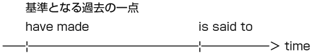
アブラモヴィッチ、
チェルシー買収！
From Russia With Love (1)
In June 2003, Russianbillionaire Roman Abramovich became the owner of Chelsea Football Club. At the time, Chelsea had a hugedebt of £80 million. Not only did he assume the debt but also paid £60 million topurchase the team.
According to Forbes Magazine, Abramovich's estimatedfortune in the year 2003 was$5,7 billion. Heis said to have made anenormous fortune by investing in theprivatization of the oilindustry in Russia. After histakeover, the team was made fun of by other teams' supporters asChelski.
2003年6月、ロシアの億万長者ロマン・アブラモヴィッチがチェルシーフットボールクラブのオーナーになった。当時、チェルシーは8000万ポンドという巨額の借金を抱えていた。彼はその借金を肩代わりしただけでなく、チームを購入するために6000万ポンドを支払った。
雑誌『フォーブズ』によれば、アブラモヴィッチの2003年度の推定資産は、57億ドルである。彼は、ロシアの石油産業の民営化に投資することで、巨額の富を築いたといわれている。乗っ取りの後、ほかのチームのサポーターは、からかってチームをチェルスキーと呼ぶようになった。
→ billionaire
億万長者
→ debt
借金
→ purchase
購入する
→ fortune
財産
→ be said to do
......だと言われている
→ enormous
巨額の
→ privatization
民営化
→ industry
産業
→ takeover
乗っ取り
→ Chelski
ロシア語の名前に多い「―スキ」を語尾につけることで、アブラモヴィッチに買収されたことを皮肉っている。
→ Not only did he assume the debt
not only、only、neverのような語句が文頭に来ると、その後に来ている主語と動詞に倒置が起こります。倒置が起こると、語順が主語（he）＋動詞（assumed）から、助動詞（did）＋主語（he）＋動詞（assume）へと変化します。言い換えれば、倒置のときは、疑問文（Did he assume ...?）と同じ語順になります。
→ He is said to have made an enormous fortune
to不定詞の完了形は、動詞が表す時よりも以前のことを表します。下の図を見ればわかるように、「巨額の富を築いた」のは「それが噂される」のより先に起こっています。ですから、ここでは、不定詞の完了形が使われています。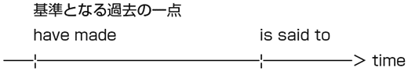
vol.33
チェルシー買収の真相
From Russia With Love (2)
After he became the owner, Abramovich tried tokeep a low profile and protect family privacy. So his trueintention has still not beenrevealed.
But it seems that he bought the team justfor fun, not formoneymaking. On TV you can always see Abramovichyell for the Blues. The money he had spent on new players proves that he willdo anything for victory.
Theresult of the last two seasonsmet his expectations. Led by Captain John Terry andhigh-scoring midfielder Frank Lampard, the Blues became Premiership champions consecutively.
オーナーになった後、アブラモヴィッチはできるだけ目立たないようにして、家族のプライバシーを守ろうとした。だから、彼の真の意図は、いまだに明らかにされていない。
しかし、彼はチームを金儲けのためではなく、楽しみのために買ったように思える。テレビをつければ、いつもアブラモヴィッチがチェルシーを応援しているのを見ることができる。彼が新しい選手に使った金額は、彼が勝つためなら何でもするということを証明している。
過去２シーズンの結果は、彼の期待に沿うものだった。キャプテンのジョン・テリーと得点力の高いミッドフィルダー、フランク・ランパードに率いられたブルーズは、２年連続してプレミアリーグのチャンピオンとなった。
→ keep a low profile
→ intention
→ reveal
→ for fun
→ moneymaking
→ yell for A
→ the Blues
→ do anything
→ result
→ meet one's expectations
→ high-scoring
チェルシー買収の真相
From Russia With Love (2)
After he became the owner, Abramovich tried tokeep a low profile and protect family privacy. So his trueintention has still not beenrevealed.
But it seems that he bought the team justfor fun, not formoneymaking. On TV you can always see Abramovichyell for the Blues. The money he had spent on new players proves that he willdo anything for victory.
Theresult of the last two seasonsmet his expectations. Led by Captain John Terry andhigh-scoring midfielder Frank Lampard, the Blues became Premiership champions consecutively.
オーナーになった後、アブラモヴィッチはできるだけ目立たないようにして、家族のプライバシーを守ろうとした。だから、彼の真の意図は、いまだに明らかにされていない。
しかし、彼はチームを金儲けのためではなく、楽しみのために買ったように思える。テレビをつければ、いつもアブラモヴィッチがチェルシーを応援しているのを見ることができる。彼が新しい選手に使った金額は、彼が勝つためなら何でもするということを証明している。
過去２シーズンの結果は、彼の期待に沿うものだった。キャプテンのジョン・テリーと得点力の高いミッドフィルダー、フランク・ランパードに率いられたブルーズは、２年連続してプレミアリーグのチャンピオンとなった。
→ keep a low profile
目立たないようにする
→ intention
意図
→ reveal
明らかにする
→ for fun
楽しみのために
→ moneymaking
金儲け
→ yell for A
Ａを応援する
→ the Blues
チェルシーの愛称（ユニフォームが青いことから）
→ do anything
何でもする
→ result
結果
→ meet one's expectations
人の期待に沿う
→ high-scoring
得点力の高い
→ you can always see Abramovich yell for the Blues
see, hear, feelのように、「見る、聞く、感じる」という感覚を表す動詞は、「動詞（see）＋目的語（Abramovich）＋動詞の原形（yell）」という形を作ります。TOEICの文法問題では、see Abramovich to yellのように原形不定詞となるべきところを不定詞にして間違いを誘うパターンが多いので、気をつけましょう。
→ The money (that) he had spent Φ on new players proves
上の文章では、the moneyとheの間に関係代名詞のthatが省略されています。そして、このthe moneyはΦの位置に入り、spentの目的語になります。
vol.34
買収された赤い悪魔
The Red Devils for Sale
May 13, 2005, an American businessman Malcolm Glazer announced his plan tocarry out anacquisition of Manchester United. He is the owner of a National Football League (NFL) team located in Florida and tried totake over the team as aninvestment.
Several supportersorganized protest activities to stop hishostile takeover, because they feared that the debtpiled up by the Glazers tofinance the club might becleared off byexploiting supporters. That was a good guess! After completing a takeover, Glazer increased the price of the ticket by12 percent.What will become of the Red Devils?
2005年5月13日、アメリカ人のビジネスマン、マルコム・グレイザーは、マンチェスター・ユナイテッドの買収を行うという計画を発表した。彼はフロリダに位置するNFLチームのオーナーで、投資のためにマンチェスター・ユナイテッドを買収しようとした。
サポーターの中には、敵対買収を止めるため、抗議活動を組織したものもいた。というのは、マンチェスター・ユナイテッドに資金を提供するためにグレイザーが行った借金が、サポーターを食い物にすることで清算されるのではないかと恐れていたからである。それは間違ってなかった。乗っ取りを完了した後、グレイザーはチケットの値段を12パーセント増加させることを発表した。赤い悪魔はどうなってしまうのだろう？
→ carry out
→ acquisition
→ take over（動詞）
→ investment
→ organize
→ protest activities
→ hostile
→ takeover（名詞）
→ pile up
→ finance
→ clear off
→ exploit
→ increase A by B
→ what will become of A ?
買収された赤い悪魔
The Red Devils for Sale
May 13, 2005, an American businessman Malcolm Glazer announced his plan tocarry out anacquisition of Manchester United. He is the owner of a National Football League (NFL) team located in Florida and tried totake over the team as aninvestment.
Several supportersorganized protest activities to stop hishostile takeover, because they feared that the debtpiled up by the Glazers tofinance the club might becleared off byexploiting supporters. That was a good guess! After completing a takeover, Glazer increased the price of the ticket by12 percent.What will become of the Red Devils?
2005年5月13日、アメリカ人のビジネスマン、マルコム・グレイザーは、マンチェスター・ユナイテッドの買収を行うという計画を発表した。彼はフロリダに位置するNFLチームのオーナーで、投資のためにマンチェスター・ユナイテッドを買収しようとした。
サポーターの中には、敵対買収を止めるため、抗議活動を組織したものもいた。というのは、マンチェスター・ユナイテッドに資金を提供するためにグレイザーが行った借金が、サポーターを食い物にすることで清算されるのではないかと恐れていたからである。それは間違ってなかった。乗っ取りを完了した後、グレイザーはチケットの値段を12パーセント増加させることを発表した。赤い悪魔はどうなってしまうのだろう？
→ carry out
実行する
→ acquisition
買収
→ take over（動詞）
乗っ取る
→ investment
投資
→ organize
組織する
→ protest activities
抗議活動
→ hostile
敵意のある
→ takeover（名詞）
乗っ取り
→ pile up
積み上げる
→ finance
資金を供給する
→ clear off
返済する
→ exploit
食い物にする
→ increase A by B
ＡをＢだけ増加させる
→ what will become of A ?
Ａはどうなってしまうのだろろうか？
→ the debt (that was) piled up by the Glazers to finance the club might be cleared off
一見したところ、上の文章ではthe debtが主語、pile upが動詞であるかのように見えます。しかし、実は、piled upはthe debtを説明している過去分詞であり、真の動詞はmight beです。このように、主語が長いと動詞を見落としがちなので、気をつけましょう。
vol.35
上昇し続ける放映権
Broadcasting Rights (1)
As satellite broadcasting becomes more and more popular, the prices of broadcastingrights areskyrocketing. Football matches are noexception.
It is said that JAPAN CONSOCIAM,consisting of NHK and commercialbroadcasting stations, paid 6 billion yen for the World Cup 2002, fifty times larger than theamount NHK paid for the France World Cup.As for the World Cup 2006, the sameorganization had to pay about 14 billion yen.It is rumored that, tocope with this enormous cost by advertisementcharges, commercial broadcasting stationstelevised 4 more matches than they did 4 years ago.
衛星放送の人気が上昇するにつれ、放映権は高騰し続けている。サッカーの試合も、その例外ではない。
NHKと民放からなるジャパンコンソーシアムは、2002年のワールドカップのために、NHKがフランスワールドカップに支払った金額の50倍にあたる、60億円を支払った。同団体は、2006年のワールドカップに対して、約140億円を支払った。この莫大な金額を広告費で支払うために、民放は2002年よりも４試合多く試合を放送したと噂されている。
→ right
→ skyrocket
→ exception
→ consist of A
→ broadcasting station
→ amount
→ as for
→ organization
→ it is rumored that
→ cope with
→ charges
→ televise
上昇し続ける放映権
Broadcasting Rights (1)
As satellite broadcasting becomes more and more popular, the prices of broadcastingrights areskyrocketing. Football matches are noexception.
It is said that JAPAN CONSOCIAM,consisting of NHK and commercialbroadcasting stations, paid 6 billion yen for the World Cup 2002, fifty times larger than theamount NHK paid for the France World Cup.As for the World Cup 2006, the sameorganization had to pay about 14 billion yen.It is rumored that, tocope with this enormous cost by advertisementcharges, commercial broadcasting stationstelevised 4 more matches than they did 4 years ago.
衛星放送の人気が上昇するにつれ、放映権は高騰し続けている。サッカーの試合も、その例外ではない。
NHKと民放からなるジャパンコンソーシアムは、2002年のワールドカップのために、NHKがフランスワールドカップに支払った金額の50倍にあたる、60億円を支払った。同団体は、2006年のワールドカップに対して、約140億円を支払った。この莫大な金額を広告費で支払うために、民放は2002年よりも４試合多く試合を放送したと噂されている。
→ right
権利
→ skyrocket
高騰する
→ exception
例外
→ consist of A
Ａから成る
→ broadcasting station
放送局
→ amount
量
→ as for
......に関しては
→ organization
組織
→ it is rumored that
that以下であると噂されている
→ cope with
対処する
→ charges
料金
→ televise
放映する
→ fifty times larger than
前に書きましたが、......倍といいたいときは、通常X times as 原級 asのように、asを使ってあらわします。しかし、実際の英語では、このようにX times 比較級 thanを使って、......倍ということもあります。どちらも理解できるようにしておきましょう。
→ the amount (that) NHK paid Φ for the France World Cup
この文章では、関係代名詞thatが省略されています。
→ than they did 4 years ago
上のdidは、その前に出てくるtelevisedの代わりをしています。
vol.36
サッカーは
キラーコンテンツ
Broadcasting Rights (2)
Whatcauses this sudden andsteep rise inbroadcasting rights? Of course there are many importantfactors. So it is difficult totell which one is the most important.
However, there are twoelements we cannotignore. First, digital broadcasting hasdramatically raised the number of broadcasting stationsall over the world. Second, despite this dramatic increase, new andattracting content has not been found and TV networksrely on football matches too much. As a result, the cost of broadcasting rights for football events has skyrocketed.
Can you imagine theexclusive rights to televise the World Cup final of 1974 were just 74 million yen? The good old days are gone forever.
何が、この急激な放映権の上昇を引き起こしたのだろうか？重要な要因はいくつもあるので、どれが１番重要なのか判別することは非常に難しい。
しかし、無視することのできない要因が２つある。１つは、デジタル放送のおかげで、世界中で放送局の数が激増したことである。２つ目は、この急激な増加にもかかわらず、新しくて魅力的なコンテンツが発見されず、テレビ局がサッカーの試合に頼りすぎたことである。その結果、サッカーイベントに関する放映権のコストは急上昇した。
1974年のワールドカップ決勝の独占放映権がたった7400万円だったなんて、今となっては想像もつかない。古きよき日は、永遠に過ぎ去ってしまった。
→ cause
→ steep
→ rise
→ broadcasting rights
→ factor
→ tell
→ element
→ ignore
→ dramatically
→ raise
→ all over the world
→ attracting
→ content
→ rely on A
→ exclusive
サッカーは
キラーコンテンツ
Broadcasting Rights (2)
Whatcauses this sudden andsteep rise inbroadcasting rights? Of course there are many importantfactors. So it is difficult totell which one is the most important.
However, there are twoelements we cannotignore. First, digital broadcasting hasdramatically raised the number of broadcasting stationsall over the world. Second, despite this dramatic increase, new andattracting content has not been found and TV networksrely on football matches too much. As a result, the cost of broadcasting rights for football events has skyrocketed.
Can you imagine theexclusive rights to televise the World Cup final of 1974 were just 74 million yen? The good old days are gone forever.
何が、この急激な放映権の上昇を引き起こしたのだろうか？重要な要因はいくつもあるので、どれが１番重要なのか判別することは非常に難しい。
しかし、無視することのできない要因が２つある。１つは、デジタル放送のおかげで、世界中で放送局の数が激増したことである。２つ目は、この急激な増加にもかかわらず、新しくて魅力的なコンテンツが発見されず、テレビ局がサッカーの試合に頼りすぎたことである。その結果、サッカーイベントに関する放映権のコストは急上昇した。
1974年のワールドカップ決勝の独占放映権がたった7400万円だったなんて、今となっては想像もつかない。古きよき日は、永遠に過ぎ去ってしまった。
→ cause
引き起こす
→ steep
急な
→ rise
上昇
→ broadcasting rights
放映権
→ factor
要因
→ tell
見分ける
→ element
要素
→ ignore
無視する
→ dramatically
急激に
→ raise
上昇させる
→ all over the world
世界中で
→ attracting
魅力的な
→ content
内容
→ rely on A
Ａに頼る
→ exclusive
独占的な
→ despite this dramatic increase
despiteの後には、名詞が直接来ます。TOEICの文法問題では、よく選択肢の中にdespite ofという形が出てくるのですが、in spite ofはあっても、despite ofという形はありません。混乱しないようにしましょう。
vol.37
プレミアシップと放映権
Broadcasting Rights (3)
Has thisphenomenon changed the face of the football world?Absolutely! For example, the English Premier League wasfounded due to TV money.
In 1992,top-ranked clubs in the Football League FirstDivision separated themselvesfrom The Football League andestablished the Premier League totake advantage of aprofitable television rightsdeal.
Contrary to the famousproverb, a rose by any other name would not smell as sweet. The increase ofentrance fees after this change sentthe lower class away from a stadium andforced themto watch matches at local pubs.
この現象は、サッカー界に変化をもたらしたのだろうか？ もちろん！ 例えば、プレミアリーグは、TVマネーのせいで設立された。
1992年に、フットボールリーグ１部のトップレベルのチームはフットボールリーグから脱退し、プレミアリーグを設立した。これは、巨額のテレビ権契約につけこむためだった。
あの有名な諺とは裏腹に、バラはどんな名前で呼んでも良い香りがするわけではなかった。この変化の後に起こった入場料の上昇の結果、下層階級の人々はスタジアムから追いやられ、地元のパブで試合を見ることを余儀なくされた。
→ phenomenon
→ absolutely
→ found
→ due to A
→ top-ranked
→ division
→ separate A from B
→ establish
→ take advantage of
→ profitable
→ deal
→ contrary to
→ proverb
→ entrance fees
→ the lower class
→ force A to do
プレミアシップと放映権
Broadcasting Rights (3)
Has thisphenomenon changed the face of the football world?Absolutely! For example, the English Premier League wasfounded due to TV money.
In 1992,top-ranked clubs in the Football League FirstDivision separated themselvesfrom The Football League andestablished the Premier League totake advantage of aprofitable television rightsdeal.
Contrary to the famousproverb, a rose by any other name would not smell as sweet. The increase ofentrance fees after this change sentthe lower class away from a stadium andforced themto watch matches at local pubs.
この現象は、サッカー界に変化をもたらしたのだろうか？ もちろん！ 例えば、プレミアリーグは、TVマネーのせいで設立された。
1992年に、フットボールリーグ１部のトップレベルのチームはフットボールリーグから脱退し、プレミアリーグを設立した。これは、巨額のテレビ権契約につけこむためだった。
あの有名な諺とは裏腹に、バラはどんな名前で呼んでも良い香りがするわけではなかった。この変化の後に起こった入場料の上昇の結果、下層階級の人々はスタジアムから追いやられ、地元のパブで試合を見ることを余儀なくされた。
→ phenomenon
現象
→ absolutely
（返事で使って）もちろん
→ found
設立する
→ due to A
Ａのおかげで
→ top-ranked
トップクラスの
→ division
（サッカーなどの）リーグの部
→ separate A from B
ＡをＢから引き離す
→ establish
設立する
→ take advantage of
......を利用する
→ profitable
儲けのある
→ deal
取引
→ contrary to
...とは裏腹に
→ proverb
ことわざ
→ entrance fees
入場料
→ the lower class
下層階級
→ force A to do
Ａに......させる
→ a rose by any other name would not smell as sweet
シェイクスピアの『ロミオとジュリエット』に、That which we call a rose by any other name would smell as sweet.「バラはどんな名前で呼んでも、よい香りがする」というセリフがある。上の文章は、それをもじったもの。
vol.38
サッカーと政治問題
Football War (1)
It is often said that football is war. Of course, thisexpression is used in afigurative sense. After all, football is just a sport. But have you everheard of a football war?
This warbroke out in 1969, between El Salvador and Honduras.Due to political issues involvinga border conflict and theflow ofimmigrants from El Salvador to Honduras, thetension had beenbuilding up between these two countries. The result of the qualification match for the 1970 World Cup (El Salvador 3-2 Honduras)led Hondurasto deport illegal immigrants to El Salvador. Consequently, El Salvador announced a break indiplomatic relations with Honduras.
よく、サッカーは戦争であるといわれる。もちろん、この表現は、比ゆ的な意味で使われる。結局のところ、サッカーはスポーツに過ぎない。しかし、サッカーウォーと呼ばれる戦争のことを聞いたことがあるだろうか？
この戦争は、1969年に、エル・サルバドルとホンジュラスの間で勃発した。国境紛争やエル・サルバドルからホンジュラスへの移民の流出などの政治問題のおかげで、この２国の間で政治的緊張が高まっていた。1970年ワールドカップへの予選の結果（エル・サルバドル３―ホンジュラス２）を受けて、ホンジュラスはエル・サルバドルへ移民を強制送還することにした。その結果、エル・サルバドルは、ホンジュラスとの国交の断絶を宣言した。
→ expression
→ figurative
→ hear of
→ break out
→ due to
→ political issues
→ a border conflict
→ flow
→ immigrants
→ tension
→ build up
→ lead A to do
→ deport
→ illegal
→ diplomatic relations
サッカーと政治問題
Football War (1)
It is often said that football is war. Of course, thisexpression is used in afigurative sense. After all, football is just a sport. But have you everheard of a football war?
This warbroke out in 1969, between El Salvador and Honduras.Due to political issues involvinga border conflict and theflow ofimmigrants from El Salvador to Honduras, thetension had beenbuilding up between these two countries. The result of the qualification match for the 1970 World Cup (El Salvador 3-2 Honduras)led Hondurasto deport illegal immigrants to El Salvador. Consequently, El Salvador announced a break indiplomatic relations with Honduras.
よく、サッカーは戦争であるといわれる。もちろん、この表現は、比ゆ的な意味で使われる。結局のところ、サッカーはスポーツに過ぎない。しかし、サッカーウォーと呼ばれる戦争のことを聞いたことがあるだろうか？
この戦争は、1969年に、エル・サルバドルとホンジュラスの間で勃発した。国境紛争やエル・サルバドルからホンジュラスへの移民の流出などの政治問題のおかげで、この２国の間で政治的緊張が高まっていた。1970年ワールドカップへの予選の結果（エル・サルバドル３―ホンジュラス２）を受けて、ホンジュラスはエル・サルバドルへ移民を強制送還することにした。その結果、エル・サルバドルは、ホンジュラスとの国交の断絶を宣言した。
→ expression
表現
→ figurative
比ゆ的な
→ hear of
......について聞く
→ break out
勃発する
→ due to
......のおかげで
→ political issues
政治問題
→ a border conflict
国際紛争
→ flow
流入
→ immigrants
移民
→ tension
緊張
→ build up
高まる
→ lead A to do
Ａに......させる
→ deport
追放する
→ illegal
不法な
→ diplomatic relations
外交関係
→ political issues involving (=which involves) such as a border conflict and the flow of immigrants from El Salvador to Honduras.
上の文章のinvolvingは、前のpolitical issuesを説明して、関係代名詞と同じ働きをしています。また、involvingは、such asからHondurasまでを目的語に取っています。
vol.39
サッカー戦争
Football War (2)
July 10,1969, about two weeks after the qualification match, the Salvadoran armylaunched an attack against Honduras. It alsosent in ground forces after thebombing. Thanks to theOrganization of American States, the Salvadorantroops retreated on July 29. Thedeath toll from the warreached several thousands.
Because there were severalpotential flashpoints between these two countries before the match, it is a hugemisunderstanding toregard footballas an onlycause for the war. But, it is anundeniable fact that the result of the qualification match started the war. Sometimes football can be war in aliteral sense.
予選から約２週間後の1969年の7月10日、エル・サルバドル軍はホンジュラスに対して攻撃を開始した。エル・サルバドル軍は、爆撃を加えた後に、地上軍を送り込んだ。米州機構のおかげで、エル・サルバドル軍は7月29日に退却した。この戦争による死者は、数千人にものぼった。
試合の以前から両国の間にはさまざまな潜在的な火種が存在していたこともあり、サッカーをこの戦争の唯一の原因と見なすのは間違いである。しかし、予選の結果が戦争を引き起こしたというのも、また否定のできない事実である。時には、サッカーは文字通り戦争なのだ。
→ launch an attack
→ send in
→ ground forces
→ bombing
→ organization
→ troop
→ retreat
→ death toll
→ reach
→ potential
→ flashpoint
→ misunderstanding
→ regard A as B
→ cause
→ undeniable
→ fact
→ literal
サッカー戦争
Football War (2)
July 10,1969, about two weeks after the qualification match, the Salvadoran armylaunched an attack against Honduras. It alsosent in ground forces after thebombing. Thanks to theOrganization of American States, the Salvadorantroops retreated on July 29. Thedeath toll from the warreached several thousands.
Because there were severalpotential flashpoints between these two countries before the match, it is a hugemisunderstanding toregard footballas an onlycause for the war. But, it is anundeniable fact that the result of the qualification match started the war. Sometimes football can be war in aliteral sense.
予選から約２週間後の1969年の7月10日、エル・サルバドル軍はホンジュラスに対して攻撃を開始した。エル・サルバドル軍は、爆撃を加えた後に、地上軍を送り込んだ。米州機構のおかげで、エル・サルバドル軍は7月29日に退却した。この戦争による死者は、数千人にものぼった。
試合の以前から両国の間にはさまざまな潜在的な火種が存在していたこともあり、サッカーをこの戦争の唯一の原因と見なすのは間違いである。しかし、予選の結果が戦争を引き起こしたというのも、また否定のできない事実である。時には、サッカーは文字通り戦争なのだ。
→ launch an attack
攻撃を仕掛ける
→ send in
送り込む
→ ground forces
地上軍
→ bombing
爆撃
→ organization
組織
→ troop
軍隊
→ retreat
退却する
→ death toll
（事故・災害による）死者の数
→ reach
......に達する
→ potential
潜在的な
→ flashpoint
着火点
→ misunderstanding
誤解
→ regard A as B
ＡをＢとみなす
→ cause
原因
→ undeniable
否定のできない
→ fact
事実
→ literal
文字通りの
→ Sometimes football can be war in a literal sense.
sometimesは「時々」という意味です。それに対して、sのないsometimeは、「いつか」という意味になります。混同しないようにしましょう。
vol.40
因縁の対決の始まり
Three Lions vs. Albicelestes (1)
Of course, war canintensify bitterrivalry in football. The most famousexample is the one between Argentina and England.
These two countries, whichwin the samerespect in the football world, met first atWembley in a quarter-final in the 1966 World Cup. In the match, Alberto Rattín, the Argentine number 10,ripped a Union Jack corner flagout of the ground toprotest against the red card he received. England fansresponded to this performance withchants of 〝Animals!〟 Thanks to a goal by Geoff Hurst, thehost nation won this match.
もちろん、戦争がサッカーでの激しいライバル関係を悪化させることもある。もっとも有名な例は、アルゼンチンとイングランドの例だろう。
サッカー界で同じように尊敬を集めている両国は、1966年のワールドカップの準々決勝において、ウェンブリースタジアムで初めて対戦した。試合では、アルゼンチンの10番であるアルベルト・ラティンが、自身の受けたレッドカードに対する抗議の証として、ユニオンジャックのついたコーナーフラッグを引き抜いた。イングランドのファンは、このパフォーマンスに対して、〝アニマル〟と野次を飛ばした。ジェフ・ファーストのゴールのおかげで、開催国のイングランドが試合に勝った。
→ intensify
→ rivalry
→ example
→ win respect
→ Wembley
→ rip A out of B
→ protest against
→ respond to
→ chant
→ host nation
因縁の対決の始まり
Three Lions vs. Albicelestes (1)
Of course, war canintensify bitterrivalry in football. The most famousexample is the one between Argentina and England.
These two countries, whichwin the samerespect in the football world, met first atWembley in a quarter-final in the 1966 World Cup. In the match, Alberto Rattín, the Argentine number 10,ripped a Union Jack corner flagout of the ground toprotest against the red card he received. England fansresponded to this performance withchants of 〝Animals!〟 Thanks to a goal by Geoff Hurst, thehost nation won this match.
もちろん、戦争がサッカーでの激しいライバル関係を悪化させることもある。もっとも有名な例は、アルゼンチンとイングランドの例だろう。
サッカー界で同じように尊敬を集めている両国は、1966年のワールドカップの準々決勝において、ウェンブリースタジアムで初めて対戦した。試合では、アルゼンチンの10番であるアルベルト・ラティンが、自身の受けたレッドカードに対する抗議の証として、ユニオンジャックのついたコーナーフラッグを引き抜いた。イングランドのファンは、このパフォーマンスに対して、〝アニマル〟と野次を飛ばした。ジェフ・ファーストのゴールのおかげで、開催国のイングランドが試合に勝った。
→ intensify
強める
→ rivalry
ライバル関係
→ example
例
→ win respect
尊敬を集める
→ Wembley
イングランドが1966年のワールドカップ優勝を決めたスタジアム。聖地と呼ばれる。
→ rip A out of B
ＡをＢからもぎとる
→ protest against
...に対して抗議する
→ respond to
...に反応する
→ chant
叫び声
→ host nation
開催国
→ The most famous example is the one
上のoneは、前のexampleを受けています。
→ the Argentine number 10
アルゼンチンという国名を表すときは、Argentinaという単語を使います。それに対して、このように「アルゼンチンの」と言いたいときは、Argentineという単語を使います。
→ protest against the red card he received
againstは「......に反対して」や「......に抵抗して」という意味を持ち、このように何かに抗議などをするときによく使われます。ちなみに、「......に反対している」というときは、be動詞を使ってbe against Aという風に表現します。それに対して、「......に賛成している」というときは、forを使ってbe for Aと言います。
vol.41
マラドーナとベッカム
Three Lions vs. Albicelestes (2)
The Falklands warfueled intense rivalry between these two countries. On April 2,1982, Argentina and England started a war over theownership of the small islands in the South Atlantic Oceanoff the east coast of Argentina. The war ended on June 14. About 10,000 Argentine soldiers were madeprisoners of war.
4 years later, when Argentinabeat England 2-1 with twolegendary goals by Diego Maradona, the Argentines feltpent-up frustration transformed itself into aneruption of joy. In the 1998 World Cup, Argentinadefeated England in apenalty shoot-out after David Beckham wassent off because of Diego Simeone's performance. In the 2002 World Cup, England had their revenge with a goalscored by David Beckham. The rivalry will continue to grow as time goes by.
フォークランド紛争が、両国の間の激しいライバル関係をさらに過熱させた。1982年4月2日、アルゼンチンとイギリスは、アルゼンチンの東岸沖の南大西洋に浮かぶ小さな島の所有権を巡って戦争を始めた。戦争は、6月20日に終わり、約１万人のアルゼンチン人が捕虜となった。
４年後、アルゼンチンがディエゴ・マラドーナの伝説的な２ゴールでイングランドを２－１で破ったとき、アルゼンチン人は長い間積もった鬱屈が喜びの爆発に変わるのを抑え切れなかった。1998年のワールドカップでは、ディエゴ・シメオネのパフォーマンスによってデイビッド・ベッカムが退場した後、アルゼンチンはイングランドにPK戦で勝利した。2002年には、ベッカムのゴールで、アルゼンチンがリベンジを果たした。このライバル関係は、将来より激しいものになっていくだろう。
→ fuel
→ intense
→ ownership
→ off
→ prisoners of war
→ beat
→ legendary
→ pent-up frustration
→ transform
→ eruption
→ defeat
→ penalty shoot-out
→ send off
→ score
マラドーナとベッカム
Three Lions vs. Albicelestes (2)
The Falklands warfueled intense rivalry between these two countries. On April 2,1982, Argentina and England started a war over theownership of the small islands in the South Atlantic Oceanoff the east coast of Argentina. The war ended on June 14. About 10,000 Argentine soldiers were madeprisoners of war.
4 years later, when Argentinabeat England 2-1 with twolegendary goals by Diego Maradona, the Argentines feltpent-up frustration transformed itself into aneruption of joy. In the 1998 World Cup, Argentinadefeated England in apenalty shoot-out after David Beckham wassent off because of Diego Simeone's performance. In the 2002 World Cup, England had their revenge with a goalscored by David Beckham. The rivalry will continue to grow as time goes by.
フォークランド紛争が、両国の間の激しいライバル関係をさらに過熱させた。1982年4月2日、アルゼンチンとイギリスは、アルゼンチンの東岸沖の南大西洋に浮かぶ小さな島の所有権を巡って戦争を始めた。戦争は、6月20日に終わり、約１万人のアルゼンチン人が捕虜となった。
４年後、アルゼンチンがディエゴ・マラドーナの伝説的な２ゴールでイングランドを２－１で破ったとき、アルゼンチン人は長い間積もった鬱屈が喜びの爆発に変わるのを抑え切れなかった。1998年のワールドカップでは、ディエゴ・シメオネのパフォーマンスによってデイビッド・ベッカムが退場した後、アルゼンチンはイングランドにPK戦で勝利した。2002年には、ベッカムのゴールで、アルゼンチンがリベンジを果たした。このライバル関係は、将来より激しいものになっていくだろう。
→ fuel
あおる
→ intense
激しい
→ ownership
所有権
→ off
......を離れて
→ prisoners of war
捕虜
→ beat
打ち負かす
→ legendary
伝説の
→ pent-up frustration
長年の鬱屈
→ transform
変化する
→ eruption
爆発
→ defeat
打ち破る
→ penalty shoot-out
ＰＫ戦
→ send off
退場させる
→ score
ゴールを決める
→ pent-up frustration transformed itself into an eruption of joy
このitselfは、前に出てきているfrustrationを受けています。なお、transform itself into Bで、「自分自身をＢにする」という意味になります。
サッカーで考えると文法力が身につく
このセクションでは、本番と同じ形式の問題を利用して、TOEICで頻出の文法事項を身につけていきます。各課は、そこで習得すべき文法事項に関連した問題が２問と、その説明からなっています。
問題の形式ですが、新TOEICで出題される穴埋め問題に加えて、旧TOEICで出題されていた誤文訂正問題も出題しました。なぜ新TOEICで出題されていない誤文訂正問題を載せたかというと、学校や会社などで受けるTOEIC IPには、まだ旧TOEICの形式が引き継がれているからです。ですから、新TOEICにもTOEIC IPにも対応できるよう、誤文訂正形式の問題を出題しました。
ただ、誤文訂正問題も穴埋め問題も、聞いてくることは基本的に一緒なので、新TOEICを受ける方も誤文訂正問題を解くようにしてください。
なお、文法問題の利用法ですが、PART 1にも書いた通り、問題を解いて、間違っていたところの答えを読んで復習して、数日したら答えを確認しないまま問題を解き直すという勉強法だけはしないようにしましょう。これだと、いつまでたっても同じところで間違えてしまい、最終的には間違った情報が頭に刻み込まれてしまいます。
サッカーでも練習の際は、まず正しい形を身につけ、それを実戦で使ってみるという方式を取ります。文法も同様で、最初に正しい情報をインプットし、それをテスト形式の問題でアウトプットすることが必要不可欠です。
ですから、文法を勉強する際は、まず説明を読んでなぜそのような答えになるのかを理解してください。次に、その文章を口に出して何度も読むことで、文法を体に叩き込むようにしましょう。そして、そうやって文法を体に叩き込んだ後で、初めて問題を解くようにしましょう。そうすれば、自信を持って正しい答えを選択することができるはずです。
限りある時間を効率良く使うためにも、正しい方法でトレーニングをするようにしましょう。
この方法で文法事項を身につけた後は、実戦形式の問題を使って、定着度を確認しましょう。実戦形式の問題は、クロスメディア・パブリッシングのホームページで利用することができます。
実戦形式の問題に関しては、本番のテスト同様、まず自分で解いてみましょう。そして、その後で答え合わせをして、間違って覚えていた文法事項を復習するという形式でかまいません。
以上で説明は終わりです。では、文法のトレーニングを始めましょう。
このセクションでは、本番と同じ形式の問題を利用して、TOEICで頻出の文法事項を身につけていきます。各課は、そこで習得すべき文法事項に関連した問題が２問と、その説明からなっています。
問題の形式ですが、新TOEICで出題される穴埋め問題に加えて、旧TOEICで出題されていた誤文訂正問題も出題しました。なぜ新TOEICで出題されていない誤文訂正問題を載せたかというと、学校や会社などで受けるTOEIC IPには、まだ旧TOEICの形式が引き継がれているからです。ですから、新TOEICにもTOEIC IPにも対応できるよう、誤文訂正形式の問題を出題しました。
ただ、誤文訂正問題も穴埋め問題も、聞いてくることは基本的に一緒なので、新TOEICを受ける方も誤文訂正問題を解くようにしてください。
なお、文法問題の利用法ですが、PART 1にも書いた通り、問題を解いて、間違っていたところの答えを読んで復習して、数日したら答えを確認しないまま問題を解き直すという勉強法だけはしないようにしましょう。これだと、いつまでたっても同じところで間違えてしまい、最終的には間違った情報が頭に刻み込まれてしまいます。
サッカーでも練習の際は、まず正しい形を身につけ、それを実戦で使ってみるという方式を取ります。文法も同様で、最初に正しい情報をインプットし、それをテスト形式の問題でアウトプットすることが必要不可欠です。
ですから、文法を勉強する際は、まず説明を読んでなぜそのような答えになるのかを理解してください。次に、その文章を口に出して何度も読むことで、文法を体に叩き込むようにしましょう。そして、そうやって文法を体に叩き込んだ後で、初めて問題を解くようにしましょう。そうすれば、自信を持って正しい答えを選択することができるはずです。
限りある時間を効率良く使うためにも、正しい方法でトレーニングをするようにしましょう。
この方法で文法事項を身につけた後は、実戦形式の問題を使って、定着度を確認しましょう。実戦形式の問題は、クロスメディア・パブリッシングのホームページで利用することができます。
実戦形式の問題に関しては、本番のテスト同様、まず自分で解いてみましょう。そして、その後で答え合わせをして、間違って覚えていた文法事項を復習するという形式でかまいません。
以上で説明は終わりです。では、文法のトレーニングを始めましょう。
Check Point 1
冠詞と名詞の可算・不可算
aとanの区別＋不可算名詞
１．ルーニーの負傷
Rooney has been taken to hospital for X-ray on his injured ankle.
（負傷した足首のレントゲンをとるため、ルーニーは病院へ連れていかれた。）
(A) an (B) a
２．イングランド優勝の確率
The bad news that the odds remain heavily stacked against England winning a major tournament any time soon.
（悪い知らせは、イングランドが大きなトーナメントですぐに優勝する可能性は非常に低いということだ。）
(A) is (B) are
中学生のときに習ったように、子音で発音される単数名詞の前にはa、母音で発音される単数名詞の前にはanが来ます。ここで注意しなければいけないのは、aが来るかanが来るかは、単語の綴りではなく発音で決まるということです。
１．ではX-ray「レントゲン」の前に入る冠詞を選ぶのですが、綴りだけを見ているとaを選びたくなるかもしれません。しかし、声に出せばわかるとおり、X-rayは母音エで始まっています。したがって、ここでは、冠詞はanになります。
TOEICの文法問題では、単語や構文が難しい問題文ほど、このように簡単な事柄を聞いてくることがよくあります。問題を見ただけで気おされず、落ち着いて解いていきましょう。ちなみに、同じようにanがつく単語としては、an MBAやan SOSなどがあります。
次に２．ですが、newsには単語の語尾にsがついていることから、areを選んでしまった方はいませんか？ newsにはsがついているので複数形のように見えますが、newsは常に単数扱いです。間違わないようにしましょう。
なお、newsとは逆に、どんな状況でも複数形のsがつかない単語が存在します。これらの単語は数えることができないという意味で、不可算名詞と呼ばれます。これらの名詞のうち、代表的なものはTOEICでよく聞かれるので、下の表を見て覚えておきましょう。
複数形のsのつかない名詞（常に単数扱い）
information 情報
advice 助言
furniture 家具
knowledge 知識
equipment 装置
baggage 荷物
→ X-ray
→ injured
→ the odds
→ the odds remain [are] stacked against A
→ win a tournament
冠詞と名詞の可算・不可算
aとanの区別＋不可算名詞
１．ルーニーの負傷
Rooney has been taken to hospital for X-ray on his injured ankle.
（負傷した足首のレントゲンをとるため、ルーニーは病院へ連れていかれた。）
(A) an (B) a
２．イングランド優勝の確率
The bad news that the odds remain heavily stacked against England winning a major tournament any time soon.
（悪い知らせは、イングランドが大きなトーナメントですぐに優勝する可能性は非常に低いということだ。）
(A) is (B) are
中学生のときに習ったように、子音で発音される単数名詞の前にはa、母音で発音される単数名詞の前にはanが来ます。ここで注意しなければいけないのは、aが来るかanが来るかは、単語の綴りではなく発音で決まるということです。
１．ではX-ray「レントゲン」の前に入る冠詞を選ぶのですが、綴りだけを見ているとaを選びたくなるかもしれません。しかし、声に出せばわかるとおり、X-rayは母音エで始まっています。したがって、ここでは、冠詞はanになります。
TOEICの文法問題では、単語や構文が難しい問題文ほど、このように簡単な事柄を聞いてくることがよくあります。問題を見ただけで気おされず、落ち着いて解いていきましょう。ちなみに、同じようにanがつく単語としては、an MBAやan SOSなどがあります。
次に２．ですが、newsには単語の語尾にsがついていることから、areを選んでしまった方はいませんか？ newsにはsがついているので複数形のように見えますが、newsは常に単数扱いです。間違わないようにしましょう。
なお、newsとは逆に、どんな状況でも複数形のsがつかない単語が存在します。これらの単語は数えることができないという意味で、不可算名詞と呼ばれます。これらの名詞のうち、代表的なものはTOEICでよく聞かれるので、下の表を見て覚えておきましょう。
複数形のsのつかない名詞（常に単数扱い）
information 情報
advice 助言
furniture 家具
knowledge 知識
equipment 装置
baggage 荷物
→ X-ray
エックス線
→ injured
傷ついた・ケガを負った
→ the odds
確率
→ the odds remain [are] stacked against A
Ａする確率が低い
→ win a tournament
トーナメントで優勝する
◆答え １．(A)
２．(A)
２．(A)
Check Point 2
主語の重複
余計な代名詞
１．ＦＩＦＡのメディア方針
As a service to journalists and editors, has therefore set up a unique and dedicated online ordering system exclusively for media use.
（ジャーナリストと編集者に対するサービスとして、FIFAはメディアのみ使用可能な独特で特定のオンラインオーダーシステムを設置した。）
(A)FIFA it (B) FIFA
２．宮本ベルギー戦で途中出場
Miyamoto, who painted his mask black to make it look more frightening, on as substitute for the injury-prone centre back Morioka during the Belgium match.
（迫力を出すためマスクを黒く塗った宮本は、ベルギー戦の間中怪我に苦しめられていた森岡に対する交代としてピッチにたった。）
(A) he came (B) came
文法コラム１でも書きましたが、TOEICの文法問題ではしばしば非常に基本的な内容が出題されます。今回取り上げる主語の重複もその１つです。英語では、基本的には、１つの主語に対して１つの動詞が対応します。このルールがわかっているかどうかを確認するため、TOEICでは主語の重複した選択肢がよく出題されます。
そして、主語の重複の中で一番よく出題されるのが、主語のすぐ後に代名詞が置かれるパターンです。このパターンでも１．のFIFA itのように、主語の後にすぐ重複する代名詞が来ているときはそれほど難しくありません。
しかし２．のように、長い挿入句の後に代名詞が余計な主語としておかれている場合は、主語との距離が離れていることもあり、重複を見抜くのが難しくなります。このような場合も、慌てることなく、落ち着いてその前に主語となる名詞がないかを探すようにしましょう。
ところで、英文の中には、Miyamoto, the mask man, won his first international capのように、カンマとカンマの間に一般名詞を置いている文章があります。先ほどのように代名詞を用いる場合と異なり、これは文法的に正しい表現です。
このような用法は同格と呼ばれます。この用法では、カンマの間の名詞the mask manが、カンマの前の名詞Miyamotoを説明するという役割をしています。同格がきた場合の主語と動詞の一致に関しては、Check Point 3で学習します。
→ dedicated
→ exclusively
→ substitute
→ -prone
→ injury-prone
主語の重複
余計な代名詞
１．ＦＩＦＡのメディア方針
As a service to journalists and editors, has therefore set up a unique and dedicated online ordering system exclusively for media use.
（ジャーナリストと編集者に対するサービスとして、FIFAはメディアのみ使用可能な独特で特定のオンラインオーダーシステムを設置した。）
(A)FIFA it (B) FIFA
２．宮本ベルギー戦で途中出場
Miyamoto, who painted his mask black to make it look more frightening, on as substitute for the injury-prone centre back Morioka during the Belgium match.
（迫力を出すためマスクを黒く塗った宮本は、ベルギー戦の間中怪我に苦しめられていた森岡に対する交代としてピッチにたった。）
(A) he came (B) came
文法コラム１でも書きましたが、TOEICの文法問題ではしばしば非常に基本的な内容が出題されます。今回取り上げる主語の重複もその１つです。英語では、基本的には、１つの主語に対して１つの動詞が対応します。このルールがわかっているかどうかを確認するため、TOEICでは主語の重複した選択肢がよく出題されます。
そして、主語の重複の中で一番よく出題されるのが、主語のすぐ後に代名詞が置かれるパターンです。このパターンでも１．のFIFA itのように、主語の後にすぐ重複する代名詞が来ているときはそれほど難しくありません。
しかし２．のように、長い挿入句の後に代名詞が余計な主語としておかれている場合は、主語との距離が離れていることもあり、重複を見抜くのが難しくなります。このような場合も、慌てることなく、落ち着いてその前に主語となる名詞がないかを探すようにしましょう。
ところで、英文の中には、Miyamoto, the mask man, won his first international capのように、カンマとカンマの間に一般名詞を置いている文章があります。先ほどのように代名詞を用いる場合と異なり、これは文法的に正しい表現です。
このような用法は同格と呼ばれます。この用法では、カンマの間の名詞the mask manが、カンマの前の名詞Miyamotoを説明するという役割をしています。同格がきた場合の主語と動詞の一致に関しては、Check Point 3で学習します。
→ dedicated
専門の
→ exclusively
独占的に
→ substitute
交代
→ -prone
......の傾向がある
......しがちである
→ injury-prone
怪我がちの
◆答え １．(B)
２．(B)
２．(B)
Check Point 3
主語と動詞の一致（１）
カンマによる挿入句は無視
１．ジダンの生い立ち
Zidane, who was born and grew up in Marseille, a son of Algerian immigrants.
（マルセイユで生まれ育ったジダンは、アルジェリア移民の子供である。）
(A) is (B) are
２．ジダンの生い立ちその２
Zinedine Yazid Zidane, popularly nicknamed Zizou, starred for both the French national team and four European club teams.
（一般的にはジズーというあだ名で呼ばれているジヌディーヌ・ヤジッド・ジダンは、フランス代表と４つのヨーロッパのクラブでスター選手として活躍した。）
(A) has (B) have
TOEICの文法問題で頻出の文法事項、それが主語と動詞の一致です。
主語と動詞の問題で問われるのはam・is・areやwas・wereの使い分け、そして三単現のsをきちんと使えるかといった、中学生レベルの文法事項です。
ただ、TOEICの文法セクションは一文が長く、また使われている単語も難しいため、どうしても簡単な文法事項を見逃しがちです。こういった基本的な問題で確実に得点できるよう、このコラムをしっかり勉強しておきましょう。
今回取り上げるのは、主語の後にカンマで挟まれた挿入句が存在するため、主語と動詞の距離が離れてしまい、主語と動詞の一致が見抜きにくくなるパターンです。このような挿入句に出くわしたら、挿入部分は無視して考えるようにしましょう。
１．ですが、挿入句の部分を無視して考えると、主語であるZidaneに対応する正しい動詞をisとareの中から選べばいいだけであることがわかります。２．も同様で、挿入句であるpopularly nicknamed Zizouの部分を無視して、主語であるZinedine Yazid Zidaneに対応する動詞をhaveとhasから選ぶだけです。
１．
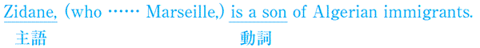
２．
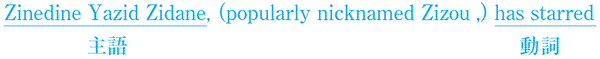
→ immigrant
→ nickname（動詞）
→ star （動詞）
主語と動詞の一致（１）
カンマによる挿入句は無視
１．ジダンの生い立ち
Zidane, who was born and grew up in Marseille, a son of Algerian immigrants.
（マルセイユで生まれ育ったジダンは、アルジェリア移民の子供である。）
(A) is (B) are
２．ジダンの生い立ちその２
Zinedine Yazid Zidane, popularly nicknamed Zizou, starred for both the French national team and four European club teams.
（一般的にはジズーというあだ名で呼ばれているジヌディーヌ・ヤジッド・ジダンは、フランス代表と４つのヨーロッパのクラブでスター選手として活躍した。）
(A) has (B) have
TOEICの文法問題で頻出の文法事項、それが主語と動詞の一致です。
主語と動詞の問題で問われるのはam・is・areやwas・wereの使い分け、そして三単現のsをきちんと使えるかといった、中学生レベルの文法事項です。
ただ、TOEICの文法セクションは一文が長く、また使われている単語も難しいため、どうしても簡単な文法事項を見逃しがちです。こういった基本的な問題で確実に得点できるよう、このコラムをしっかり勉強しておきましょう。
今回取り上げるのは、主語の後にカンマで挟まれた挿入句が存在するため、主語と動詞の距離が離れてしまい、主語と動詞の一致が見抜きにくくなるパターンです。このような挿入句に出くわしたら、挿入部分は無視して考えるようにしましょう。
１．ですが、挿入句の部分を無視して考えると、主語であるZidaneに対応する正しい動詞をisとareの中から選べばいいだけであることがわかります。２．も同様で、挿入句であるpopularly nicknamed Zizouの部分を無視して、主語であるZinedine Yazid Zidaneに対応する動詞をhaveとhasから選ぶだけです。
１．
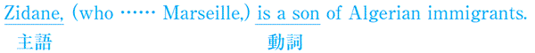
２．
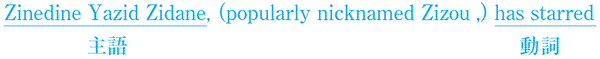
→ immigrant
移民
→ nickname（動詞）
ニックネームをつける
→ star （動詞）
スターとして活躍する
◆答え １．(A)
２．(A)
２．(A)
Check Point 4
主語と動詞の一致（２）
前置詞＋名詞・all of A など
１．トルシエ監督に関して
As everyone knows, relations between the Japanese media and Philippe Troussier often, to say the least, strained.
（周知のごとく、日本のメディアとトルシエ監督の関係は、控えめに言ってもしばしば緊迫したものだった。）
（A）was （B）were
２．日本人選手が海外で置かれた状況
Only a few of them play outside Japan even now, and even some of those players not used very much.
（現在でも彼らの数人しか海外でプレーしていないし、さらにその中にはあまり使われていない選手が結構いる。）
（A）is （B）are
今回も、前回と同様主語と動詞の一致についてみていきます。今回問題になるのは、主語と動詞の間に前置詞＋名詞からなる句が来ている場合と、some of Aのように数を表す表現の後にofが来ている場合です。
１．の問題では、主語と動詞の間に前置詞＋名詞からなる句が入ることで、主語と動詞の関係が見抜きにくくなっています。前置詞＋名詞からなる句は、主語と動詞の一致に影響を与えないので、このような句は無視して考えるようにしましょう。
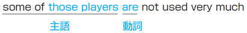
次に２．ですが、ここで出てくるsome of Aのように数量を表す表現の後にofが来る場合、動詞はofの後に来るＡに一致します。ここでは、some of those playersとＡの位置にplayersという複数形の名詞が来ているので、動詞はareになります。
なお、some ofのような表現では、ofの後にtheやmyなどの限定を表す表現が来ます。したがって、some of playersのような表現は正しくありません。これもあわせて覚えておきましょう。
some of Aのように、動詞がＡに一致するものの例
all of the (object)
some of the (object)
half of the (object)
part of the (object)
→ relations
→ to say the least
→ strained
主語と動詞の一致（２）
前置詞＋名詞・all of A など
１．トルシエ監督に関して
As everyone knows, relations between the Japanese media and Philippe Troussier often, to say the least, strained.
（周知のごとく、日本のメディアとトルシエ監督の関係は、控えめに言ってもしばしば緊迫したものだった。）
（A）was （B）were
２．日本人選手が海外で置かれた状況
Only a few of them play outside Japan even now, and even some of those players not used very much.
（現在でも彼らの数人しか海外でプレーしていないし、さらにその中にはあまり使われていない選手が結構いる。）
（A）is （B）are
今回も、前回と同様主語と動詞の一致についてみていきます。今回問題になるのは、主語と動詞の間に前置詞＋名詞からなる句が来ている場合と、some of Aのように数を表す表現の後にofが来ている場合です。
１．の問題では、主語と動詞の間に前置詞＋名詞からなる句が入ることで、主語と動詞の関係が見抜きにくくなっています。前置詞＋名詞からなる句は、主語と動詞の一致に影響を与えないので、このような句は無視して考えるようにしましょう。
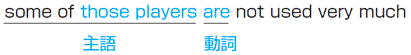
次に２．ですが、ここで出てくるsome of Aのように数量を表す表現の後にofが来る場合、動詞はofの後に来るＡに一致します。ここでは、some of those playersとＡの位置にplayersという複数形の名詞が来ているので、動詞はareになります。
なお、some ofのような表現では、ofの後にtheやmyなどの限定を表す表現が来ます。したがって、some of playersのような表現は正しくありません。これもあわせて覚えておきましょう。
some of Aのように、動詞がＡに一致するものの例
all of the (object)
some of the (object)
half of the (object)
part of the (object)
→ relations
関係
→ to say the least
控えめに言っても
→ strained
緊迫した
◆答え １．(B)
２．(B)
２．(B)
Check Point 5
主語と動詞の一致（３）
不定代名詞は単数扱い
１．トルシエ監督に関して
As everyone , relations between the Japanese media and Philippe Troussier were often, to say the least, strained.
（周知のごとく、日本のメディアとトルシエ監督の関係は、控えめに言ってもしばしば緊迫したものだった。）
(A) knows (B) know
２．中田に関するコラム
After setting up all three goals in Japan's 3-2 play-off victory against Iran to qualify for France 98, nobody the influence Nakata can have on a match.
（フランスワールドカップの出場権を手に入れるためのイランとのプレーオフでの３－２での勝利の際、３ゴール全てをお膳立てした後は、中田が試合に与える影響力には誰も疑問を持っていない。）
(A) doubts (B) doubt
今回も前回同様主語と動詞の一致問題です。everyoneやnobodyのような不定代名詞は単数扱いになります。次の表を見て確認しておきましょう。
ちなみに、１．は先ほど前置詞＋名詞は無視というチェックポイントでも出てきましたが、正解できましたか？ 文法の問題を解くときは、ただ括弧の答えを覚えるだけでなく、それ以外の箇所もきちんと確認するようにしましょう。
単数扱いになる不定代名詞
everybody somebody anybody nobody
everyone someone anyone no one
everything something anything nothing
After setting up all three goals
setting upですが、ここでは次の文章の主語のnobodyではなく、Nakataが意味上の主語となっています。
the influence (that) Nakata can have Φ on a match
上の文章では、the influenceとNakataの間に関係代名詞のthatが省略されています。
そして、この関係代名詞の先行詞であるthe influenceは、Φのところに入り、haveの目的語となります。そのため、この文章を元に戻すと、Nakata can have the influence on a match「中田は試合に対して影響力を持つことができる」となります。
→ set up
→ victory against A
→ qualify for A
→ Influence
主語と動詞の一致（３）
不定代名詞は単数扱い
１．トルシエ監督に関して
As everyone , relations between the Japanese media and Philippe Troussier were often, to say the least, strained.
（周知のごとく、日本のメディアとトルシエ監督の関係は、控えめに言ってもしばしば緊迫したものだった。）
(A) knows (B) know
２．中田に関するコラム
After setting up all three goals in Japan's 3-2 play-off victory against Iran to qualify for France 98, nobody the influence Nakata can have on a match.
（フランスワールドカップの出場権を手に入れるためのイランとのプレーオフでの３－２での勝利の際、３ゴール全てをお膳立てした後は、中田が試合に与える影響力には誰も疑問を持っていない。）
(A) doubts (B) doubt
今回も前回同様主語と動詞の一致問題です。everyoneやnobodyのような不定代名詞は単数扱いになります。次の表を見て確認しておきましょう。
ちなみに、１．は先ほど前置詞＋名詞は無視というチェックポイントでも出てきましたが、正解できましたか？ 文法の問題を解くときは、ただ括弧の答えを覚えるだけでなく、それ以外の箇所もきちんと確認するようにしましょう。
単数扱いになる不定代名詞
everybody somebody anybody nobody
everyone someone anyone no one
everything something anything nothing
After setting up all three goals
setting upですが、ここでは次の文章の主語のnobodyではなく、Nakataが意味上の主語となっています。
the influence (that) Nakata can have Φ on a match
上の文章では、the influenceとNakataの間に関係代名詞のthatが省略されています。
そして、この関係代名詞の先行詞であるthe influenceは、Φのところに入り、haveの目的語となります。そのため、この文章を元に戻すと、Nakata can have the influence on a match「中田は試合に対して影響力を持つことができる」となります。
→ set up
準備する・計画する
→ victory against A
Ａに対する勝利
→ qualify for A
Ａへの出場権を得る
→ Influence
影響力
◆答え １．(A)
２．(A)
２．(A)
Check Point 6
主語と動詞の一致（４）
that節中の原形
１．チーム数に関する規制
On 8 June 2006, FIFA requested that all major European leagues reduced to eighteen teams by the start of the 2007-08 season.
（2006年6月8日、すべての主要なヨーロッパリーグのチーム数が、2007-08シーズンの初めまでには18チームに減らされるよう、FIFAは要請した。）
(A) be (B) were
２．あるハンガリー人選手の移籍問題
The Hungarian Federation demanded that he suspended, but FC Barcelona refused to accept this suspension.
（ハンガリーサッカー連盟は、彼の出場権が取り消されるよう要求した。しかし、バルセロナはその申し出を受け入れることを拒否した。）
(A) was (B) be
今回取り上げるのは、今までと異なり主語と動詞が一致しない例です。突然ですが、皆さんイングランドの国歌を知っていますか？ そう、God save the Queen!です。（ちなみに国王が男の時にはGod save the King!となります）
この曲名を聞いたとき、皆さん何かおかしいと思いませんか？ 今まで勉強したことから考えると、Godは三人称単数なので、普通だったら三単現のsがつくはずですよね。でも、ここではsaveとなっていて、三単現のsの影も形も見られません。
実は、昔の英語には、「現実に起こっていないことが起こってほしい」という気持ちを表すときは原形を使うというルールがありました。しかし、この用法は現在では廃れてしまい、要求や願望を表すある特定の動詞や形容詞の後のthat節中でしか適応されません。非常にまれな用法ですが、TOEICでは比較的よく質問されます。下の表を見てこの用法が使われる代表的な動詞や形容詞を覚えておきましょう。
ちなみに、一般にアメリカでは原形がそのまま使われ、イギリスでは原形の前にshouldが来ます。また、この用法をshouldが省略されたものと説明している参考書がありますが、それは誤りです。原形を使う用法が廃れてきたため、後からshouldがつけ加えられるようになりました。
that節に原形が来る動詞の例
require （要求する） that＋主語＋動詞の原形
recommend （推薦する）
insist （要求する）
suggest （提案する）
It is that構文でthat節に原形が来る形容詞の例
It is necessary that＋主語＋動詞の原形
essencial
recommended
主語と動詞の一致（４）
that節中の原形
１．チーム数に関する規制
On 8 June 2006, FIFA requested that all major European leagues reduced to eighteen teams by the start of the 2007-08 season.
（2006年6月8日、すべての主要なヨーロッパリーグのチーム数が、2007-08シーズンの初めまでには18チームに減らされるよう、FIFAは要請した。）
(A) be (B) were
２．あるハンガリー人選手の移籍問題
The Hungarian Federation demanded that he suspended, but FC Barcelona refused to accept this suspension.
（ハンガリーサッカー連盟は、彼の出場権が取り消されるよう要求した。しかし、バルセロナはその申し出を受け入れることを拒否した。）
(A) was (B) be
今回取り上げるのは、今までと異なり主語と動詞が一致しない例です。突然ですが、皆さんイングランドの国歌を知っていますか？ そう、God save the Queen!です。（ちなみに国王が男の時にはGod save the King!となります）
この曲名を聞いたとき、皆さん何かおかしいと思いませんか？ 今まで勉強したことから考えると、Godは三人称単数なので、普通だったら三単現のsがつくはずですよね。でも、ここではsaveとなっていて、三単現のsの影も形も見られません。
実は、昔の英語には、「現実に起こっていないことが起こってほしい」という気持ちを表すときは原形を使うというルールがありました。しかし、この用法は現在では廃れてしまい、要求や願望を表すある特定の動詞や形容詞の後のthat節中でしか適応されません。非常にまれな用法ですが、TOEICでは比較的よく質問されます。下の表を見てこの用法が使われる代表的な動詞や形容詞を覚えておきましょう。
ちなみに、一般にアメリカでは原形がそのまま使われ、イギリスでは原形の前にshouldが来ます。また、この用法をshouldが省略されたものと説明している参考書がありますが、それは誤りです。原形を使う用法が廃れてきたため、後からshouldがつけ加えられるようになりました。
that節に原形が来る動詞の例
require （要求する） that＋主語＋動詞の原形
recommend （推薦する）
insist （要求する）
suggest （提案する）
It is that構文でthat節に原形が来る形容詞の例
It is necessary that＋主語＋動詞の原形
essencial
recommended
◆答え １．(A)
２．(B)
２．(B)
Check Point 7
主語と動詞の一致（５）
the number ofとa number of
１．プレミアシップの選手構成
By 2000-01, the number of foreign players participating in the Premiership 36%.
（2000-01シーズンまでには、プレミアシップでプレーしている外国人選手の数は36パーセントになっていた。）
(A) was (B) were
２．プレミアシップとテレビ放映権
The TV rights agreement between the Premier League and BskyB has faced accusations of being a cartel, and a number of court cases arisen as a result.
（プレミアリーグとＢスカイＢのTV放映権に関する合意はカルテルであるという非難に直面し、その結果多くの訴訟事件が生じた。）
(A)have (B)has
この２つの問題において聞かれているのは、the number of とa number ofの使い分けです。この２つは形が似ているので混同しがちです。きちんと使い分けのルールを理解しておきましょう。
まず、the number of Aですが、これは「Ａの数」という意味でnumberが主語になるので単数扱いになります。そのため、１．の答えはwasになります。それに対して、a number of Aは「多くのＡ」という意味で、複数扱いになります。したがって、２．ではhaveが答えになります。
主語と動詞の一致というのは非常に基本的な事柄ですが、TOEICではこのように手を変え品を変え聞いてくるので、惑わされないようにしましょう。
foreign players participating in the Premiership
ここのparticipatingはその前のplayersを修飾しています。よりやさしい英語を使えば、foreign players who participated in the Premiershipのように書き換えられます。
The TV rights agreement (between the Premier League and BskyB) has faced
この文章の主語と動詞ですが、The TV rights agreementが主語、そしてhas facedが動詞になります。between the Premier League and BskyBが間に入っているので多少主語と動詞の関係が見極めにくくなっていますが、そういう時はCheck Point 4でやった前置詞＋名詞の句は無視するというルールを思い出しましょう。
→ rights
→ agreement
→ face
→ accusation
→ cartel
→ court cases
主語と動詞の一致（５）
the number ofとa number of
１．プレミアシップの選手構成
By 2000-01, the number of foreign players participating in the Premiership 36%.
（2000-01シーズンまでには、プレミアシップでプレーしている外国人選手の数は36パーセントになっていた。）
(A) was (B) were
２．プレミアシップとテレビ放映権
The TV rights agreement between the Premier League and BskyB has faced accusations of being a cartel, and a number of court cases arisen as a result.
（プレミアリーグとＢスカイＢのTV放映権に関する合意はカルテルであるという非難に直面し、その結果多くの訴訟事件が生じた。）
(A)have (B)has
この２つの問題において聞かれているのは、the number of とa number ofの使い分けです。この２つは形が似ているので混同しがちです。きちんと使い分けのルールを理解しておきましょう。
まず、the number of Aですが、これは「Ａの数」という意味でnumberが主語になるので単数扱いになります。そのため、１．の答えはwasになります。それに対して、a number of Aは「多くのＡ」という意味で、複数扱いになります。したがって、２．ではhaveが答えになります。
主語と動詞の一致というのは非常に基本的な事柄ですが、TOEICではこのように手を変え品を変え聞いてくるので、惑わされないようにしましょう。
foreign players participating in the Premiership
ここのparticipatingはその前のplayersを修飾しています。よりやさしい英語を使えば、foreign players who participated in the Premiershipのように書き換えられます。
The TV rights agreement (between the Premier League and BskyB) has faced
この文章の主語と動詞ですが、The TV rights agreementが主語、そしてhas facedが動詞になります。between the Premier League and BskyBが間に入っているので多少主語と動詞の関係が見極めにくくなっていますが、そういう時はCheck Point 4でやった前置詞＋名詞の句は無視するというルールを思い出しましょう。
→ rights
権利
→ agreement
合意
→ face
直面する
→ accusation
非難
→ cartel
談合、カルテル
→ court cases
裁判
◆答え １．(A)
２．(A)
２．(A)
Check Point 8
完了形（１）
過去形と完了形の使い分け
１．レアルとソシオ
Real Madrid is unusual in that, unlike most football clubs, it owned and operated solely by its members (Socios) since 1902.
（ほかの多くのサッカークラブと異なり、1902年以来ソシオと呼ばれるメンバーによって所有されそして運営されてきたという点において、レアル・マドリードは特異である。）
(A) was (B) has been
２．トルシエと中田の確執
Troussier even Nakata to the bench for Japan's friendly with Italy in Saitama two months ago.
（トルシエは２ヶ月前に埼玉で行われたイタリアと日本の親善試合で、中田をベンチに追いやりさえした。）
(A) relegated (B) has relegated
Check Point 8では、現在完了と過去完了の使い分けをマスターしましょう。現実の英語では、この２つの用法のどちらを使うか判断に苦しむ場合も多いです。しかし、TOEICでは、どちらの用法を使うかはっきり区別できる場合しか出題されません。現在完了と過去形の使い分けの問題が出たら、確実に得点できるようにしておきましょう。
さて、現在完了と過去形の使い分けのポイントですが、それは文章が現在のニュアンスを含んでいるかどうかにあります。歴史的には、現在完了はI have a book written「私は書かれた本を持っている」のようなhaveの現在形から派生しています。
そのため現在完了形は、4 years ago「四年前に」やin 1998「1998年に」のような、過去の一点を表す言葉と同時に使うことはできません。これらの場合は、過去形を使います。TOEICでは、since last week「先週以来」やrecently「最近」のように、過去から現在までという時間の流れを表す語句と組み合わせて現在完了形が使われることが多いということを覚えておきましょう。なお、文中にusuallyがある場合は、現在形が答えになることが多いです。
現在完了形 → since、for、recently、lately
過去形 → last、ago
現在形 → usually、these days、nowadays
→ in taht Ｓ＋Ｖ
→ own
→ operate
→ relegate
→ friendly
完了形（１）
過去形と完了形の使い分け
１．レアルとソシオ
Real Madrid is unusual in that, unlike most football clubs, it owned and operated solely by its members (Socios) since 1902.
（ほかの多くのサッカークラブと異なり、1902年以来ソシオと呼ばれるメンバーによって所有されそして運営されてきたという点において、レアル・マドリードは特異である。）
(A) was (B) has been
２．トルシエと中田の確執
Troussier even Nakata to the bench for Japan's friendly with Italy in Saitama two months ago.
（トルシエは２ヶ月前に埼玉で行われたイタリアと日本の親善試合で、中田をベンチに追いやりさえした。）
(A) relegated (B) has relegated
Check Point 8では、現在完了と過去完了の使い分けをマスターしましょう。現実の英語では、この２つの用法のどちらを使うか判断に苦しむ場合も多いです。しかし、TOEICでは、どちらの用法を使うかはっきり区別できる場合しか出題されません。現在完了と過去形の使い分けの問題が出たら、確実に得点できるようにしておきましょう。
さて、現在完了と過去形の使い分けのポイントですが、それは文章が現在のニュアンスを含んでいるかどうかにあります。歴史的には、現在完了はI have a book written「私は書かれた本を持っている」のようなhaveの現在形から派生しています。
そのため現在完了形は、4 years ago「四年前に」やin 1998「1998年に」のような、過去の一点を表す言葉と同時に使うことはできません。これらの場合は、過去形を使います。TOEICでは、since last week「先週以来」やrecently「最近」のように、過去から現在までという時間の流れを表す語句と組み合わせて現在完了形が使われることが多いということを覚えておきましょう。なお、文中にusuallyがある場合は、現在形が答えになることが多いです。
現在完了形 → since、for、recently、lately
過去形 → last、ago
現在形 → usually、these days、nowadays
→ in taht Ｓ＋Ｖ
......という点で
......のために
→ own
所有する
→ operate
運営する
→ relegate
格下げする
追いやる
→ friendly
フレンドリーマッチ
◆答え １．(B)
２．(A)
２．(A)
Check Point 9
完了形（２）
過去完了と未来完了
１．アルゼンチン対イングランド＠日韓ワールドカップ
The intensity began to pick up when Gabriel Batistuta was cautioned for unnecessarily running into Ashley Cole after the England defender the ball.
（すでにボールを離した後のアシュレー・コールに対する不必要なアフターファールで、バティストゥータが警告を受けたあと、試合はより白熱して来た。）
(A)had already played (B) played
２．テュラムの代表出場数
120: the number of caps Lilian Thuram after Wednesday evening's semi-final, a French record.
（120: 水曜の晩の準決勝の後でのリリアン・テュラムの国際試合キャップ数、フランス記録）
(A) will win (B) will have won
Check Point 9では、未来完了と過去完了という２つの完了形の用法についてみていきます。未来完了は、未来のある時点までに完了していることを表すために使われます。それに対して過去完了は、過去のある時点までに完了していることを示すために使われます。
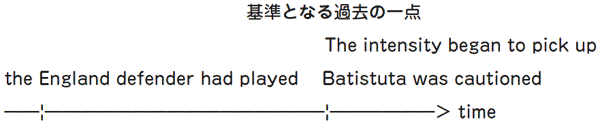
１．ですが、上の図からわかるように、the England defender had playedという動作は、The intensity began to pick upやBatistuta was cautionedという動作よりも前に起こっています。言い換えれば、The intensity began to pick upやBatistuta was cautionedという動作が起きた時点で、the England defender had playedという動作は完了していたということです。ですから、２つある選択肢のうち、普通の過去形ではなく過去完了形を選びます。
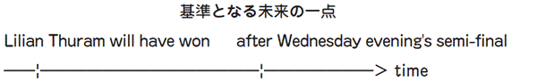
それに対して２．では、Lilian Thuram will haveという動作は、after Wednesday evening's semi-finalよりも先に起きます。なぜなら、「120キャップ目を得る」という行為は、「準決勝の終わり」までには完了しているからです。そして、この出来事は未来に起きています。したがって、ここでは、未来完了であるwill have wonを選びます。
なお、TOEICでは、未来完了はby next yearやby the timeのように、前置詞byと一緒に用いられることが多いです。選択肢の中に未来形があって、かつ文中にbyがある場合は、未来完了が答えになる可能性が多いので、注意しましょう。
完了形（２）
過去完了と未来完了
１．アルゼンチン対イングランド＠日韓ワールドカップ
The intensity began to pick up when Gabriel Batistuta was cautioned for unnecessarily running into Ashley Cole after the England defender the ball.
（すでにボールを離した後のアシュレー・コールに対する不必要なアフターファールで、バティストゥータが警告を受けたあと、試合はより白熱して来た。）
(A)had already played (B) played
２．テュラムの代表出場数
120: the number of caps Lilian Thuram after Wednesday evening's semi-final, a French record.
（120: 水曜の晩の準決勝の後でのリリアン・テュラムの国際試合キャップ数、フランス記録）
(A) will win (B) will have won
Check Point 9では、未来完了と過去完了という２つの完了形の用法についてみていきます。未来完了は、未来のある時点までに完了していることを表すために使われます。それに対して過去完了は、過去のある時点までに完了していることを示すために使われます。
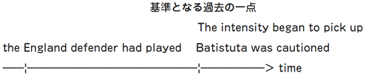
１．ですが、上の図からわかるように、the England defender had playedという動作は、The intensity began to pick upやBatistuta was cautionedという動作よりも前に起こっています。言い換えれば、The intensity began to pick upやBatistuta was cautionedという動作が起きた時点で、the England defender had playedという動作は完了していたということです。ですから、２つある選択肢のうち、普通の過去形ではなく過去完了形を選びます。
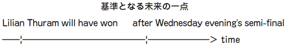
それに対して２．では、Lilian Thuram will haveという動作は、after Wednesday evening's semi-finalよりも先に起きます。なぜなら、「120キャップ目を得る」という行為は、「準決勝の終わり」までには完了しているからです。そして、この出来事は未来に起きています。したがって、ここでは、未来完了であるwill have wonを選びます。
なお、TOEICでは、未来完了はby next yearやby the timeのように、前置詞byと一緒に用いられることが多いです。選択肢の中に未来形があって、かつ文中にbyがある場合は、未来完了が答えになる可能性が多いので、注意しましょう。
◆答え １．(A)
２．(B)
２．(B)
Check Point 10
関係代名詞（１）
whoとwhich
１．Ｊリーグと広告
J.League Enterprise handles football-related advertisements, supervising the development and sale of commercial products use J.League logo marks, characters, etc.
（Ｊリーグエンタープライズは、Ｊリーグのロゴやキャラクターなどを使った商品の開発と販売を監督するとともに、サッカーに関連した広告を扱っている。）
(A) who (B) which
２．選手のセカンドキャリア
Career guidance counselling is provided at places nationwide for players are concerned about their future and those who have decided to retire.
（キャリアガイダンスカウンセリングは、将来に不安を抱いている選手や、リタイアすることを決めた選手のために、全国で開かれている。）
(A) who (B) which
今回は、関係詞の基本中の基本であるwhoとwhichについてみていきます。関係詞にはさまざまな種類があり、その用法も複雑です。しかし、TOEICでは基本的な用法を問われることが多いので、ここではまず関係代名詞の基本からきちんとチェックしていきましょう。
関係詞の問題を解くために一番大切なこと、それは先行詞のチェックです。選択肢にwhichやthatなどの関係詞が並んでいたら、空欄の前にある単語をチェックするようにしましょう。
さて１．ですが、ここでは空欄の前にcommercial productsという物を表す言葉が来ています。したがって、この場合は物を先行詞にとるwhichが答えになります。それに対して２．では、playersという人を表す言葉が来ています。したがって、ここでは人を先行詞に取るwhoが答えになります。ちなみに、その後にあるthose whoというのは、「......する人」という意味の決まり文句です。これもよく聞かれるので、この機会に覚えてしまいましょう。
supervising the development and sale of commercial products
このsupervisingは、本文の主語であるJ.League Enterpriseの行為を説明しています。
who → 先行詞が人、後ろの文では主語として働く
which → 先行詞が物、後ろの文では主語または目的語として働く
→ enterprise
→ handle
→ related
→ advertisement
→ supervise
関係代名詞（１）
whoとwhich
１．Ｊリーグと広告
J.League Enterprise handles football-related advertisements, supervising the development and sale of commercial products use J.League logo marks, characters, etc.
（Ｊリーグエンタープライズは、Ｊリーグのロゴやキャラクターなどを使った商品の開発と販売を監督するとともに、サッカーに関連した広告を扱っている。）
(A) who (B) which
２．選手のセカンドキャリア
Career guidance counselling is provided at places nationwide for players are concerned about their future and those who have decided to retire.
（キャリアガイダンスカウンセリングは、将来に不安を抱いている選手や、リタイアすることを決めた選手のために、全国で開かれている。）
(A) who (B) which
今回は、関係詞の基本中の基本であるwhoとwhichについてみていきます。関係詞にはさまざまな種類があり、その用法も複雑です。しかし、TOEICでは基本的な用法を問われることが多いので、ここではまず関係代名詞の基本からきちんとチェックしていきましょう。
関係詞の問題を解くために一番大切なこと、それは先行詞のチェックです。選択肢にwhichやthatなどの関係詞が並んでいたら、空欄の前にある単語をチェックするようにしましょう。
さて１．ですが、ここでは空欄の前にcommercial productsという物を表す言葉が来ています。したがって、この場合は物を先行詞にとるwhichが答えになります。それに対して２．では、playersという人を表す言葉が来ています。したがって、ここでは人を先行詞に取るwhoが答えになります。ちなみに、その後にあるthose whoというのは、「......する人」という意味の決まり文句です。これもよく聞かれるので、この機会に覚えてしまいましょう。
supervising the development and sale of commercial products
このsupervisingは、本文の主語であるJ.League Enterpriseの行為を説明しています。
who → 先行詞が人、後ろの文では主語として働く
which → 先行詞が物、後ろの文では主語または目的語として働く
→ enterprise
企業・会社
→ handle
（動詞として使われて）扱う
→ related
関連した
→ advertisement
広告
→ supervise
監督する
◆答え １．(B)
２．(A)
２．(A)
Check Point 11
関係代名詞（２）
whoseとwhom
１．レアルマドリードの低迷
Real Madrid, club president expected them to win either the Spanish league or the Champions League each season, was not performing well.
（会長が彼らに、シーズンごとにスペインリーグかチャンピオンズリーグで優勝することを期待しているにもかかわらず、レアル・マドリードは調子が悪かった。）
(A) whose (B) which
２．2004年ユーロフランス対ギリシャ
Seitaridis is penalized for a foul on Henry, to he has stuck close all night.
（セイタリディスは、そのナイトゲームの間彼がずっとマークしていたアンリに対するファールを取られた。）
(A) who (B) whom
今回は、whomとwhoseの使い方を勉強していきます。whomは、主語として働くwhoとは異なり、前置詞や動詞の目的語となります。それに対して、whoseはmyやhisといった所有格の代わりとして働きます。なお、whoseですが、これはwhoと異なり、先行詞が人の場合だけでなく物の場合も使うことができます。
１．の文章を見てみると、先行詞は物（Real Madrid）になっています。したがって、先行詞からは、whichとwhoseのどちらを入れるか決めることはできません。しかし、空欄の後を見てみると、文章が完全なので、主語や目的語として働くwhichの入るスペースがありません。したがって、所有格（Real Madrid's）を意味するwhoseが答えになります。
２．の文章でも、先行詞は人（Henry）です。ですから、先行詞だけで選択肢を決めることはできません。しかし、よく見てみると、選択肢の前にtoという前置詞が来ています。そして、whoは前置詞の目的語になることはできません。したがって、ここでは、前置詞や動詞の目的語になることのできるwhomを選びます。ちなみに、whoと違い、whichは前置詞や動詞の目的語になることができます。
Henry, to whom he has stuck close all night
前置詞の後に来る名詞を関係詞で受ける場合、上のように前置詞が先行詞の前に来ることもあれば、Henry, whom he has stuck close all night toのように、前置詞だけが一番後ろに残ることもあります。
所有格を表すとき → 先行詞に関わりなくwhose
前置詞の後で関係詞を選択する場合 → 先行詞が人ならwhom、物ならwhichを選ぶ
→ president
→ expect
→ either A or B
→ penalize for A
関係代名詞（２）
whoseとwhom
１．レアルマドリードの低迷
Real Madrid, club president expected them to win either the Spanish league or the Champions League each season, was not performing well.
（会長が彼らに、シーズンごとにスペインリーグかチャンピオンズリーグで優勝することを期待しているにもかかわらず、レアル・マドリードは調子が悪かった。）
(A) whose (B) which
２．2004年ユーロフランス対ギリシャ
Seitaridis is penalized for a foul on Henry, to he has stuck close all night.
（セイタリディスは、そのナイトゲームの間彼がずっとマークしていたアンリに対するファールを取られた。）
(A) who (B) whom
今回は、whomとwhoseの使い方を勉強していきます。whomは、主語として働くwhoとは異なり、前置詞や動詞の目的語となります。それに対して、whoseはmyやhisといった所有格の代わりとして働きます。なお、whoseですが、これはwhoと異なり、先行詞が人の場合だけでなく物の場合も使うことができます。
１．の文章を見てみると、先行詞は物（Real Madrid）になっています。したがって、先行詞からは、whichとwhoseのどちらを入れるか決めることはできません。しかし、空欄の後を見てみると、文章が完全なので、主語や目的語として働くwhichの入るスペースがありません。したがって、所有格（Real Madrid's）を意味するwhoseが答えになります。
２．の文章でも、先行詞は人（Henry）です。ですから、先行詞だけで選択肢を決めることはできません。しかし、よく見てみると、選択肢の前にtoという前置詞が来ています。そして、whoは前置詞の目的語になることはできません。したがって、ここでは、前置詞や動詞の目的語になることのできるwhomを選びます。ちなみに、whoと違い、whichは前置詞や動詞の目的語になることができます。
Henry, to whom he has stuck close all night
前置詞の後に来る名詞を関係詞で受ける場合、上のように前置詞が先行詞の前に来ることもあれば、Henry, whom he has stuck close all night toのように、前置詞だけが一番後ろに残ることもあります。
所有格を表すとき → 先行詞に関わりなくwhose
前置詞の後で関係詞を選択する場合 → 先行詞が人ならwhom、物ならwhichを選ぶ
→ president
会長
→ expect
期待する
→ either A or B
ＡかＢのどちらか
→ penalize for A
Ａのことで罰する
◆答え １．(A)
２．(B)
２．(B)
Check Point 12
関係代名詞（３）
whatとthat
１．ロナウド復活！
I'm absolutely delighted for Ronaldo after happened to him in the France 98 final.
（フランスワールドカップの決勝で彼に起きたことを考えると、ロナウドが復帰してとてもうれしい。）
(A) that (B) what
２．エリクソン監督の会見
Coach Sven-Goran Eriksson gave a press conference just before leaving Japan in he was keen to look at the positive rather than dwell on the negative.
（エリクソン監督は日本を離れる直前に記者会見を開いた。その会見の中、彼は悪いことにとらわれるのではなく、良いことを見ようとしていた。）
(A) which (B) that
今回は、関係詞whatとthatを取り上げます。whatは今までの関係詞とは異なり、先行詞をとりません。なぜかというと、what自身に先行詞が含まれているからです。whatは普通、「......すること」のような意味になります。もしwhatの文中での働きがわかりにくいときは、the thing(s) whichと置き換えて考えると良いでしょう。
次にthatですが、thatはwhich、who、whomの代わりに使われます。しかし、whoseの代わりをすることはできません。また、前置詞の後に来ることもできません。この２点に注意しておきましょう。
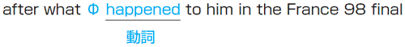
さて、１．ですが、ここでは空欄のすぐ前がafterという前置詞になっているので、空欄に入る関係代名詞の先行詞になる単語が存在しません。ですからここでは、先行詞を取らない関係代名詞のwhatを選びましょう。
なお、whatはΦの位置に入り、主語の役割をします。また、whatをthe things thatと置き換えて考えると、「彼にフランスワールドカップの決勝で起きたこと」という意味になります。
a press conference (just before leaving Japan) in which
次に２．ですが、ここでは空欄の前に前置詞が来ています。そのため、thatを選ぶことはできません。ですから、whichが答えになります。なお、このwhichの先行詞はa press conferenceで、後ろの文章ではin the press conference「記者会見では」という意味になります。
→ absolutely
→ delighted
→ happen to A
→ a press conference
→ keen
→ the positive
→ dwell
関係代名詞（３）
whatとthat
１．ロナウド復活！
I'm absolutely delighted for Ronaldo after happened to him in the France 98 final.
（フランスワールドカップの決勝で彼に起きたことを考えると、ロナウドが復帰してとてもうれしい。）
(A) that (B) what
２．エリクソン監督の会見
Coach Sven-Goran Eriksson gave a press conference just before leaving Japan in he was keen to look at the positive rather than dwell on the negative.
（エリクソン監督は日本を離れる直前に記者会見を開いた。その会見の中、彼は悪いことにとらわれるのではなく、良いことを見ようとしていた。）
(A) which (B) that
今回は、関係詞whatとthatを取り上げます。whatは今までの関係詞とは異なり、先行詞をとりません。なぜかというと、what自身に先行詞が含まれているからです。whatは普通、「......すること」のような意味になります。もしwhatの文中での働きがわかりにくいときは、the thing(s) whichと置き換えて考えると良いでしょう。
次にthatですが、thatはwhich、who、whomの代わりに使われます。しかし、whoseの代わりをすることはできません。また、前置詞の後に来ることもできません。この２点に注意しておきましょう。
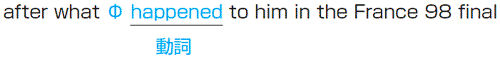
さて、１．ですが、ここでは空欄のすぐ前がafterという前置詞になっているので、空欄に入る関係代名詞の先行詞になる単語が存在しません。ですからここでは、先行詞を取らない関係代名詞のwhatを選びましょう。
なお、whatはΦの位置に入り、主語の役割をします。また、whatをthe things thatと置き換えて考えると、「彼にフランスワールドカップの決勝で起きたこと」という意味になります。
a press conference (just before leaving Japan) in which
次に２．ですが、ここでは空欄の前に前置詞が来ています。そのため、thatを選ぶことはできません。ですから、whichが答えになります。なお、このwhichの先行詞はa press conferenceで、後ろの文章ではin the press conference「記者会見では」という意味になります。
→ absolutely
完全に、まったく
→ delighted
うれしい
→ happen to A
Aに......が起きる
→ a press conference
記者会見
→ keen
熱心な
→ the positive
ポジティブなこと
→ dwell
感情を抱く
◆答え １．(B)
２．(A)
２．(A)
Check Point 13
関係代名詞（４）
whenとwhere
１．中村俊輔イタリアへ移籍
In 2002 Nakamura headed to Italy to join Reggina, he made 31 appearances and scored seven goals at.
（2002年に、中村はイタリアへ向かいレジーナに加入した。そこで、彼は31試合に出場し、７ゴールを決めた。）
(A) where (B) which
２．レアルとアトレチコ
Between 1961 and 1980 Real dominated La Liga in, only Atletico offered Real any serious challenge, winning La Liga titles in 1966, 1970, 1973 and 1977.
（レアルがリーガを支配していた1961年と1980年の間には、1966年、1970年、1973年、そして1977年のリーガのタイトルを勝ち取ったアトレチコだけがレアルにとって脅威となりうる存在だった。）
(A) which (B) when
今回は、関係詞whenとwhereを取り上げます。whoやwhichのような関係詞が関係詞節の中で名詞として働くのに対して、whenやwhereは前置詞＋名詞として働きます。そして、whereが場所を表す語を先行詞に取るのに対して、whenは時間を表す語を先行詞に取ります。しかし、場所や時間を表す語句が空欄の前にあるからといって、やみくもにwhenやwhereを選ぶと間違える可能性があります。きちんと文脈を見て、判断しましょう。
Reggina,which he made 31 appearances and scored seven goalsat Φ.
Reggina,where he made 31 appearances and scored seven goals Φ.
１．ですが、空欄の前にRegginaという場所を表す語句が来ることから、whereを選びたくなるかもしれません。しかし、文章を終わりまで見てみると、goalsの後にatが来ています。先ほど述べたように、whereは関係詞節の中で、前置詞＋名詞として働きます。そのため、この場合は、前置詞の後ろに来て名詞として働くことのできる、whichを選びます。whereが入るためには、下の文章のように前置詞atのない文章でないといけません。
Between 1961 and 1980which Real dominated La Ligain Φ.
Between 1961 and 1980when Real dominated La Liga Φ.
２．も同様に、文末にinが来ていることから、inの後ろに入り名詞として働くwhichを選びます。下の文章のように、前置詞inがなければ、前置詞＋副詞として働くwhenを使うことができます。
ちなみに、今回のように前置詞が後ろに来ている形は、あまりビジネス文書では見られません。Reggina,at which he made 31 appearances and scored seven goals.のように前置詞が前に来ている形、または関係副詞のwhenやwhereを使う方がより一般的です。
関係代名詞（４）
whenとwhere
１．中村俊輔イタリアへ移籍
In 2002 Nakamura headed to Italy to join Reggina, he made 31 appearances and scored seven goals at.
（2002年に、中村はイタリアへ向かいレジーナに加入した。そこで、彼は31試合に出場し、７ゴールを決めた。）
(A) where (B) which
２．レアルとアトレチコ
Between 1961 and 1980 Real dominated La Liga in, only Atletico offered Real any serious challenge, winning La Liga titles in 1966, 1970, 1973 and 1977.
（レアルがリーガを支配していた1961年と1980年の間には、1966年、1970年、1973年、そして1977年のリーガのタイトルを勝ち取ったアトレチコだけがレアルにとって脅威となりうる存在だった。）
(A) which (B) when
今回は、関係詞whenとwhereを取り上げます。whoやwhichのような関係詞が関係詞節の中で名詞として働くのに対して、whenやwhereは前置詞＋名詞として働きます。そして、whereが場所を表す語を先行詞に取るのに対して、whenは時間を表す語を先行詞に取ります。しかし、場所や時間を表す語句が空欄の前にあるからといって、やみくもにwhenやwhereを選ぶと間違える可能性があります。きちんと文脈を見て、判断しましょう。
Reggina,which he made 31 appearances and scored seven goalsat Φ.
Reggina,where he made 31 appearances and scored seven goals Φ.
１．ですが、空欄の前にRegginaという場所を表す語句が来ることから、whereを選びたくなるかもしれません。しかし、文章を終わりまで見てみると、goalsの後にatが来ています。先ほど述べたように、whereは関係詞節の中で、前置詞＋名詞として働きます。そのため、この場合は、前置詞の後ろに来て名詞として働くことのできる、whichを選びます。whereが入るためには、下の文章のように前置詞atのない文章でないといけません。
Between 1961 and 1980which Real dominated La Ligain Φ.
Between 1961 and 1980when Real dominated La Liga Φ.
２．も同様に、文末にinが来ていることから、inの後ろに入り名詞として働くwhichを選びます。下の文章のように、前置詞inがなければ、前置詞＋副詞として働くwhenを使うことができます。
ちなみに、今回のように前置詞が後ろに来ている形は、あまりビジネス文書では見られません。Reggina,at which he made 31 appearances and scored seven goals.のように前置詞が前に来ている形、または関係副詞のwhenやwhereを使う方がより一般的です。
◆答え １．(B)
２．(A)
２．(A)
Check Point 14
関係代名詞（５）
カンマ＋whichと、不要な関係詞
１．イタリア優勝メンバー
Six members of the winning team belong to the Italian first division club Juventus is at the center of a huge match-fixing scandal.
（優勝したチームのうち６人は、イタリアの１番上のディヴィジョンのクラブユベントスに所属している。ユベントスは、大掛かりな八百長疑惑の中心である。）
(A) ,which (B) ,that
２．リケルメ。マンオブザマッチに選出
Juan Riquelme the centerpiece of an Argentine attack that put the ball in the net six times against Serbia and Montenegro on Friday, earning himself recognition as the Budweiser Man of the Match.
（金曜日のセルビア・モンテネグロ戦で、6ゴールを上げたアルゼンチン攻撃陣の中心のファン・リケルメが、バドワイザー・マン・オブ・ザ・マッチに選ばれた。）
(A) who was (B) was
今回取り上げるのは、カンマ＋whichおよびカンマの不要な関係詞です。カンマのないwhoやwhichは、複数の人や物の中から関係詞節の条件に合うものだけを選び出します。それに対して、カンマのあるwhoやwhichは、先行詞の内容に＋αをつけ加えます。
１．の文章ですが、もしカンマなしのwhichを使うと、「ユベントスが複数あって、その中で大掛かりな八百長疑惑の中心になったユベントスに所属していた選手が６人いた」という意味になってしまいます。しかし、ユベントスは一つしかなく、ここではユベントスに対して説明をつけ加えたいだけなので、カンマ＋whichが使われています。
ただ、実際のTOEICでカンマ＋whichと単なるwhichの使い分けを聞いてくることはありません。自分で文章を書くときに、注意するようにしましょう。また、カンマ＋thatの用法はありません。これは引っ掛けでよく狙われるので、注意しましょう。
Juan Riquelme (who Φ was the centerpiece ofan Argentine attack) (that Φ put the ball in the net six times against Serbia and Montenegro on Friday)
次に２．ですが、選択肢who wasを選ぶと、who was ...... attackはJuan Riquelmeを修飾する関係詞節となります。そして、that put ...... Fridayは、an Argentine attackを修飾する関係詞節ということになります。ですから、who wasを選ぶと、文章全体の動詞がなくなってしまいます。なので、ここはwasを選びましょう。
こういった余分な関係詞の問題はよく出てきます。問題としてはそれほど難しくないのですが、２．のように長い文章の中に出てくると、慌てて間違ってしまうことが多いです。長い文章のときほど、簡単な文法事項をチェックするようにしましょう。
関係代名詞（５）
カンマ＋whichと、不要な関係詞
１．イタリア優勝メンバー
Six members of the winning team belong to the Italian first division club Juventus is at the center of a huge match-fixing scandal.
（優勝したチームのうち６人は、イタリアの１番上のディヴィジョンのクラブユベントスに所属している。ユベントスは、大掛かりな八百長疑惑の中心である。）
(A) ,which (B) ,that
２．リケルメ。マンオブザマッチに選出
Juan Riquelme the centerpiece of an Argentine attack that put the ball in the net six times against Serbia and Montenegro on Friday, earning himself recognition as the Budweiser Man of the Match.
（金曜日のセルビア・モンテネグロ戦で、6ゴールを上げたアルゼンチン攻撃陣の中心のファン・リケルメが、バドワイザー・マン・オブ・ザ・マッチに選ばれた。）
(A) who was (B) was
今回取り上げるのは、カンマ＋whichおよびカンマの不要な関係詞です。カンマのないwhoやwhichは、複数の人や物の中から関係詞節の条件に合うものだけを選び出します。それに対して、カンマのあるwhoやwhichは、先行詞の内容に＋αをつけ加えます。
１．の文章ですが、もしカンマなしのwhichを使うと、「ユベントスが複数あって、その中で大掛かりな八百長疑惑の中心になったユベントスに所属していた選手が６人いた」という意味になってしまいます。しかし、ユベントスは一つしかなく、ここではユベントスに対して説明をつけ加えたいだけなので、カンマ＋whichが使われています。
ただ、実際のTOEICでカンマ＋whichと単なるwhichの使い分けを聞いてくることはありません。自分で文章を書くときに、注意するようにしましょう。また、カンマ＋thatの用法はありません。これは引っ掛けでよく狙われるので、注意しましょう。
Juan Riquelme (who Φ was the centerpiece ofan Argentine attack) (that Φ put the ball in the net six times against Serbia and Montenegro on Friday)
次に２．ですが、選択肢who wasを選ぶと、who was ...... attackはJuan Riquelmeを修飾する関係詞節となります。そして、that put ...... Fridayは、an Argentine attackを修飾する関係詞節ということになります。ですから、who wasを選ぶと、文章全体の動詞がなくなってしまいます。なので、ここはwasを選びましょう。
こういった余分な関係詞の問題はよく出てきます。問題としてはそれほど難しくないのですが、２．のように長い文章の中に出てくると、慌てて間違ってしまうことが多いです。長い文章のときほど、簡単な文法事項をチェックするようにしましょう。
◆答え １．(A)
２．(B)
２．(B)
Check Point 15
仮定法過去
現在の事実に反する仮定
１．アルゼンチン監督の契約
If it up to me, I'd give Jose Pekerman a contract for life.
（もしも俺にその権利があったら、ホセ・ペケルマンと生涯契約をするんだけどな。）
(A) was (B) were
２．皇帝ベッケンバウアー語る
England have the mental strength of Germany they would be in the semi-finals and be favourites to win the tournament," he said.
（「もしもイングランドにドイツのようなメンタルの強さがあれば、イングランドは準決勝に進出して、優勝の可能性もあっただろうに」と彼は語った。）
(A) If (B) Should
今回は、仮定法過去を見ていきます。仮定法過去は、現在の事実とは反対のことを表すために使われる時制です。仮定法過去では、if節の動詞は過去形になり、主節には過去形の助動詞のwould（だろう）、could（できるだろう）、might（かもしれない）が来ます。
仮定法過去
If＋Ｓ＋動詞の過去形, Ｓ＋would［could, might］＋動詞の原形
ここで気をつけないといけないのは、仮定法では、主語の人称や数とは無関係に、be動詞にはwereが使われるということです。話し言葉ではIf I wasのようにwasが来ることもありますが、TOEICではIf I wereが正しいとされています。ですから、１．でも、wasではなく、wereを選びます。
また、ifが省略されて、主語と動詞の倒置が起こることがあります。このときは、疑問文と同じ語順になります。なお、２．では、England hadとなっていないので、Ifを答えにすることはできません。
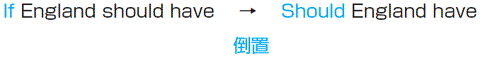
ちなみに、１．を倒置すると、下のような文章になります。
Were it up to me, I'd give Jose Pekerman a contract for life.
→ be up to
→ contract
→ for life
→ should
→ mental strength
→ favorite
仮定法過去
現在の事実に反する仮定
１．アルゼンチン監督の契約
If it up to me, I'd give Jose Pekerman a contract for life.
（もしも俺にその権利があったら、ホセ・ペケルマンと生涯契約をするんだけどな。）
(A) was (B) were
２．皇帝ベッケンバウアー語る
England have the mental strength of Germany they would be in the semi-finals and be favourites to win the tournament," he said.
（「もしもイングランドにドイツのようなメンタルの強さがあれば、イングランドは準決勝に進出して、優勝の可能性もあっただろうに」と彼は語った。）
(A) If (B) Should
今回は、仮定法過去を見ていきます。仮定法過去は、現在の事実とは反対のことを表すために使われる時制です。仮定法過去では、if節の動詞は過去形になり、主節には過去形の助動詞のwould（だろう）、could（できるだろう）、might（かもしれない）が来ます。
仮定法過去
If＋Ｓ＋動詞の過去形, Ｓ＋would［could, might］＋動詞の原形
ここで気をつけないといけないのは、仮定法では、主語の人称や数とは無関係に、be動詞にはwereが使われるということです。話し言葉ではIf I wasのようにwasが来ることもありますが、TOEICではIf I wereが正しいとされています。ですから、１．でも、wasではなく、wereを選びます。
また、ifが省略されて、主語と動詞の倒置が起こることがあります。このときは、疑問文と同じ語順になります。なお、２．では、England hadとなっていないので、Ifを答えにすることはできません。
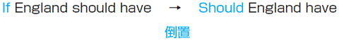
ちなみに、１．を倒置すると、下のような文章になります。
Were it up to me, I'd give Jose Pekerman a contract for life.
→ be up to
......次第である
→ contract
契約
→ for life
死ぬまでの
→ should
（仮定法で使われて）
万が一......したら
→ mental strength
精神的な強さ
→ favorite
優勝候補
◆答え １．(B)
２．(B)
２．(B)
Check Point 16
仮定法過去完了
過去の事実に反する仮定
１．ベッカムの発言
I honestly felt we the World Cup in Japan if we had managed to get past Brazil.
（もしブラジルに勝っていたら、日本でワールドカップに優勝できたんじゃないかと思っている。）
(A) would have won (B) would win
２．コートジボワールについて
Cote d'Ivoire were great to watch. They were in a difficult group; they would have gone through.
（コートジボワールは、見てて楽しいチームだった。彼らのグループは厳しかった。もしほかのグループだったら、予選通過していただろう。）
(A) if (B) otherwise
今回扱うのは、仮定法過去完了です。仮定法過去が現在の事実と反する事柄を表すのに対し、仮定法過去完了は過去の事実と反する事柄を表します。
仮定法過去完了では、if節には動詞の過去完了形が来ます。また、主節には、would have＋過去分詞、could have＋過去分詞、might have＋過去分詞が来ます。
仮定法過去完了
If＋Ｓ＋過去完了形, Ｓ＋would［could, might］＋have＋過去分詞
１．では、if we had managed to get past Brazilの部分から、過去の話をしていることがわかります。ですから、仮定法過去の(B)ではなく、仮定法過去完了の(A)を選びます。
２．では、仮定法の問題であることにつられて、ifを選んでしまった方もいるかもしれません。しかし、仮定法では、ifの後に助動詞＋have＋過去分詞が来ることはありません。実は、otherwise「そうでなければ」は仮定の意味を持っており、if節と同じ働きをします。ですから、ここでは(B)を選ぶ必要があります。なお、これ以外にif節と同様の働きをする代表的な表現としては、without「......がなければ」があります。
Japan could have reached the second round without the three goals in the last ten minutes in Kaiserslautern.
（カイザースラウテルンでのあの３ゴールがなかったら、日本は準決勝に進出できただろう。）
→ honestly
→ manage to do
→ get past
→ go through
仮定法過去完了
過去の事実に反する仮定
１．ベッカムの発言
I honestly felt we the World Cup in Japan if we had managed to get past Brazil.
（もしブラジルに勝っていたら、日本でワールドカップに優勝できたんじゃないかと思っている。）
(A) would have won (B) would win
２．コートジボワールについて
Cote d'Ivoire were great to watch. They were in a difficult group; they would have gone through.
（コートジボワールは、見てて楽しいチームだった。彼らのグループは厳しかった。もしほかのグループだったら、予選通過していただろう。）
(A) if (B) otherwise
今回扱うのは、仮定法過去完了です。仮定法過去が現在の事実と反する事柄を表すのに対し、仮定法過去完了は過去の事実と反する事柄を表します。
仮定法過去完了では、if節には動詞の過去完了形が来ます。また、主節には、would have＋過去分詞、could have＋過去分詞、might have＋過去分詞が来ます。
仮定法過去完了
If＋Ｓ＋過去完了形, Ｓ＋would［could, might］＋have＋過去分詞
１．では、if we had managed to get past Brazilの部分から、過去の話をしていることがわかります。ですから、仮定法過去の(B)ではなく、仮定法過去完了の(A)を選びます。
２．では、仮定法の問題であることにつられて、ifを選んでしまった方もいるかもしれません。しかし、仮定法では、ifの後に助動詞＋have＋過去分詞が来ることはありません。実は、otherwise「そうでなければ」は仮定の意味を持っており、if節と同じ働きをします。ですから、ここでは(B)を選ぶ必要があります。なお、これ以外にif節と同様の働きをする代表的な表現としては、without「......がなければ」があります。
Japan could have reached the second round without the three goals in the last ten minutes in Kaiserslautern.
（カイザースラウテルンでのあの３ゴールがなかったら、日本は準決勝に進出できただろう。）
→ honestly
正直に言って
→ manage to do
なんとか......する
→ get past
......に勝つ
→ go through
予選通過する
◆答え １．(A)
２．(B)
２．(B)
Check Point 17
比較（１）
as＋原級＋asと比較級＋than
１．トルシエ監督のインタビューより
When it comes to the knockout stage, we are capable of springing a major surprise, because we will be seen as outsiders when we are in fact just as as some of the other teams involved.
（ノックアウトラウンドまでくれば、日本代表は大きな驚きを与えられる可能性がある。なぜなら、他の決勝トーナメント進出チームと変わらない実力を持っているにもかかわらず、勝ち目がないとみなされるからだ。）
(A) better (B) good
２．ジダンのインタビューより
Are you concerned that the Italians will mark you than your last few opponents have?
（これまでの対戦相手より、イタリアがもっとハードなマークを仕掛けてくることを心配していますか？）
(A) more tighter (B) much tighter
今回は、比較級の基本中の基本である、as＋原級＋asと比較級＋thanについて学習します。
as＋原級＋asですが、TOEICではas better asのように、asとasの間に比較級が来て受験者を引っ掛けるケースがあります。asとasの間に来るのは、あくまで原級だけだということを意識しましょう。また、最初のasの変わりにsoが来ることができるのは、否定文のときだけです。not so＋原級＋asは可能でも、so＋原級＋asは不可能であることを、きちんと覚えておきましょう。
次に、比較級＋thanですが、比較級を作る際、短い単語は後ろに-erをつけます。それに対して、長い単語は、前にmoreをつけます。more tighterのように、moreと-erが一緒に使われることはありません。非常に基本的な事項なので、引っかからないようにしましょう。なお、比較級の前にeven、much、farをつけることで、比較級を強調することができます。しかし、比較級にveryをつけることはできません。誤った選択肢として出てくることがあるので、気をつけましょう。
than your last few opponents have (marked) ?
上の文章では、haveの後にその前の文章に出ている動詞markedが省略されています。
→ when it comes to A
→ spring a surprise
→ outsider
→ concerned
→ opponent
比較（１）
as＋原級＋asと比較級＋than
１．トルシエ監督のインタビューより
When it comes to the knockout stage, we are capable of springing a major surprise, because we will be seen as outsiders when we are in fact just as as some of the other teams involved.
（ノックアウトラウンドまでくれば、日本代表は大きな驚きを与えられる可能性がある。なぜなら、他の決勝トーナメント進出チームと変わらない実力を持っているにもかかわらず、勝ち目がないとみなされるからだ。）
(A) better (B) good
２．ジダンのインタビューより
Are you concerned that the Italians will mark you than your last few opponents have?
（これまでの対戦相手より、イタリアがもっとハードなマークを仕掛けてくることを心配していますか？）
(A) more tighter (B) much tighter
今回は、比較級の基本中の基本である、as＋原級＋asと比較級＋thanについて学習します。
as＋原級＋asですが、TOEICではas better asのように、asとasの間に比較級が来て受験者を引っ掛けるケースがあります。asとasの間に来るのは、あくまで原級だけだということを意識しましょう。また、最初のasの変わりにsoが来ることができるのは、否定文のときだけです。not so＋原級＋asは可能でも、so＋原級＋asは不可能であることを、きちんと覚えておきましょう。
次に、比較級＋thanですが、比較級を作る際、短い単語は後ろに-erをつけます。それに対して、長い単語は、前にmoreをつけます。more tighterのように、moreと-erが一緒に使われることはありません。非常に基本的な事項なので、引っかからないようにしましょう。なお、比較級の前にeven、much、farをつけることで、比較級を強調することができます。しかし、比較級にveryをつけることはできません。誤った選択肢として出てくることがあるので、気をつけましょう。
than your last few opponents have (marked) ?
上の文章では、haveの後にその前の文章に出ている動詞markedが省略されています。
→ when it comes to A
Ａのことになると
→ spring a surprise
驚きを引き起こす
→ outsider
勝ち目のない選手
→ concerned
心配している
→ opponent
対戦相手
◆答え １．(B)
２．(B)
２．(B)
Check Point 18
比較（２）
最上級＋比較の対象
１．ロナウドの進化
The legendary Brazilian has been an icon at past finals, which have seen him develop from inexperienced youngster through to one of the players of the modern era.
（伝説のブラジル人プレイヤー（注 ロナウドのこと）は、過去のワールドカップでアイドルであり続けた。というのも、その舞台で、彼が未熟な若者から、近代のもっとも偉大なプレイヤーの一人に変化するのが目撃されたからだ。）
(A) better (B) greatest
２．ベッカム、検索数トップに
Beckham's name was searched for on Google more than other sporting personality in 2003 and 2004.
（2003年と2004年に、それ以外のどのアスリートの名前よりもグーグルで検索されたのは、ベッカムの名前である。）
(A) that of any (B) any
１．は、the＋最上級に関する問題です。one of the 最上級で、「もっとも......なものの１人（１つ）」を意味します。ですから、ここでは、最上級のgreatestを選びましょう。なお、betterは最上級ではなく、比較級です。betterの最上級は、bestです。
２．は、比較の対象に関する問題です。比較で比べることができるのは、あくまでも同じものです。別々のものを比べることはできません。２．の問題では、もし(B)を選んでしまうと、比べているものが「ベッカムの名前」と「それ以外のアスリート」となってしまい、比べることができなくなってしまいます。そのため、ここでは、name「名前」をthatで置き換えた(A)を選びましょう。
The shoes of Beckham are more expensive than those of Nakata.
（ベッカムの靴は、中田の靴よりも高い。）
ちなみに、上の文ではthoseはthe shoesを指しるので、thatではなく複数形のthoseを使います。
→ legendary
→ icon
→ finals
→ inexperienced
→ youngster
→ era
→ search for
比較（２）
最上級＋比較の対象
１．ロナウドの進化
The legendary Brazilian has been an icon at past finals, which have seen him develop from inexperienced youngster through to one of the players of the modern era.
（伝説のブラジル人プレイヤー（注 ロナウドのこと）は、過去のワールドカップでアイドルであり続けた。というのも、その舞台で、彼が未熟な若者から、近代のもっとも偉大なプレイヤーの一人に変化するのが目撃されたからだ。）
(A) better (B) greatest
２．ベッカム、検索数トップに
Beckham's name was searched for on Google more than other sporting personality in 2003 and 2004.
（2003年と2004年に、それ以外のどのアスリートの名前よりもグーグルで検索されたのは、ベッカムの名前である。）
(A) that of any (B) any
１．は、the＋最上級に関する問題です。one of the 最上級で、「もっとも......なものの１人（１つ）」を意味します。ですから、ここでは、最上級のgreatestを選びましょう。なお、betterは最上級ではなく、比較級です。betterの最上級は、bestです。
２．は、比較の対象に関する問題です。比較で比べることができるのは、あくまでも同じものです。別々のものを比べることはできません。２．の問題では、もし(B)を選んでしまうと、比べているものが「ベッカムの名前」と「それ以外のアスリート」となってしまい、比べることができなくなってしまいます。そのため、ここでは、name「名前」をthatで置き換えた(A)を選びましょう。
The shoes of Beckham are more expensive than those of Nakata.
（ベッカムの靴は、中田の靴よりも高い。）
ちなみに、上の文ではthoseはthe shoesを指しるので、thatではなく複数形のthoseを使います。
→ legendary
伝説の
→ icon
アイドル
→ finals
ワールドカップ本戦
→ inexperienced
経験をつんでいない
→ youngster
若者
→ era
時代
→ search for
検索する
◆答え １．(B)
２．(A)
２．(A)
Check Point 19
受動態（１）
受動態の基礎
１．2002年ワールドカップ決勝ドイツ対ブラジル戦
Miroslav Klose's World Cup comes to an end as he by fellow striker Oliver Bierhoff.
（チームメイトのストライカーオリヴァー・ビアホフと交代したとき、ミロスラフ・クローゼのワールドカップは終わりを告げた。）
(A) is replaced (B) replaced
２．2002年ワールドカップ決勝ドイツ対ブラジル戦
Zidane on 3 August 2005 that he was coming back to play for France and was reinstated as captain of the national team.
（ジダンは、2005年8月3日に、フランス代表チームに復帰し、再びキャプテンの座につくことを宣言した。）
(A) was announced (B) announced
今回は、受動態の基礎について学びます。受動態は、能動態の目的語を主語に、能動態の主語をby＋名詞にすることによって書き換えられます。そのため、基本的に受動態では、be＋過去分詞の後に、名詞は来ません。
もっとも、下の例文のgiveのように、受動態になっても過去分詞の後に名詞が来る動詞もあります。しかし、このタイプの動詞は、能動態と受動態の使い分けを問う問題では、あまり聞かれません。ですから、TOEIC600を目指す段階では、とりあえず無視してしまってかまいません。
Despite the emergence of Shunsuke Nakamura and Shinji Ono, Hidetoshi Nakata will be given a brief to boss the midfield.
（中村俊輔と、小野伸二の台頭にもかかわらず、中田英寿は中盤を支配し続けるだろう。）
さて、１．ですが、ここでは空欄の後にはbyが来ており、名詞が来ていません。ですから、空欄には受動態が来ることがわかります。したがって、ここでは、(A)のis replacedを選びます。
それに対して２．では、空欄の後にthat節が来ています。そして、that節は名詞の代わりをします。したがって、ここでは、能動態のannouncedを選びます。
→ come to an end
→ fellow
→ reinstate
→ emergence
→ brief
→ boss
受動態（１）
受動態の基礎
１．2002年ワールドカップ決勝ドイツ対ブラジル戦
Miroslav Klose's World Cup comes to an end as he by fellow striker Oliver Bierhoff.
（チームメイトのストライカーオリヴァー・ビアホフと交代したとき、ミロスラフ・クローゼのワールドカップは終わりを告げた。）
(A) is replaced (B) replaced
２．2002年ワールドカップ決勝ドイツ対ブラジル戦
Zidane on 3 August 2005 that he was coming back to play for France and was reinstated as captain of the national team.
（ジダンは、2005年8月3日に、フランス代表チームに復帰し、再びキャプテンの座につくことを宣言した。）
(A) was announced (B) announced
今回は、受動態の基礎について学びます。受動態は、能動態の目的語を主語に、能動態の主語をby＋名詞にすることによって書き換えられます。そのため、基本的に受動態では、be＋過去分詞の後に、名詞は来ません。
もっとも、下の例文のgiveのように、受動態になっても過去分詞の後に名詞が来る動詞もあります。しかし、このタイプの動詞は、能動態と受動態の使い分けを問う問題では、あまり聞かれません。ですから、TOEIC600を目指す段階では、とりあえず無視してしまってかまいません。
Despite the emergence of Shunsuke Nakamura and Shinji Ono, Hidetoshi Nakata will be given a brief to boss the midfield.
（中村俊輔と、小野伸二の台頭にもかかわらず、中田英寿は中盤を支配し続けるだろう。）
さて、１．ですが、ここでは空欄の後にはbyが来ており、名詞が来ていません。ですから、空欄には受動態が来ることがわかります。したがって、ここでは、(A)のis replacedを選びます。
それに対して２．では、空欄の後にthat節が来ています。そして、that節は名詞の代わりをします。したがって、ここでは、能動態のannouncedを選びます。
→ come to an end
終わりを告げる
→ fellow
仲間
→ reinstate
復帰させる
→ emergence
出現
→ brief
権限
→ boss
親分風をふかす
◆答え １．(A)
２．(B)
２．(B)
Check Point 20
受動態（２）
進行形の受動態＋完了形の受動態
１．フランス代表FWシドニー・ゴブのインタビューより
Earlier in the competition, when the results were not so good, we came in for a lot of criticism in the press and all kinds of things about us.
（大会の最初、まだ結果が出てないとき、僕らは批判の的になって、あることないこと書かれた。）
(A) were writing (B) were being written
２．フランス代表監督ロジェ・ルメールの更迭
Roger Lemerre as coach of France following their failure to qualify from the group phase of the World Cup.
（ワールドカップの予選グループ通過に失敗したため、ロジェ・ルメールはフランス代表の監督を解任された。）
(A) has been dismissing (B) has been dismissed
今回は、進行形と完了形の受動態について見ていきます。受身の進行形は、be＋being＋過去分詞と、beと過去分詞の間にbeingを入れた形になります。それに対して、完了形の受動態は、have＋been＋過去分詞の形を取ります。
Check Point 19で学んだように、進行形の受動態にしても、完了形の受動態にしても、基本的には過去分詞の後に名詞は来ません。そこに注意して、受動態を使うべきなのか、能動態を使うべきなのかを見極めましょう。
１．ですが、writeという動詞は、write a bookのように目的語を取ることもあれば、write about itのように前置詞aboutを取ることもあります。そのため、ここでは、空欄の後に名詞が来ているかどうかは手がかりになりません。しかし、空欄の前を見てみると、all kinds of things「すべてのこと」が主語になっています。
ですから、能動態を選ぶと、「すべてのことが私たちについて書く」という意味になってしまいます。しかし、これでは意味が通じません。ですから、ここでは「私たちに関してすべてのことがかれた」という意味になる、受動態を選びましょう。能動態か受動態かを選ぶ問題では、このように文章の意味を捉えることが必要になることもあります。
次に２．ですが、dismiss「解雇する」は通常、dismiss himのように後ろに名詞が来ます。しかし、ここでは空欄の後には、前置詞のasが来ており名詞がありません。そのため、ここでは、受身のhas been dismissedを選びます。
受け身の進行形 →be＋being＋過去分詞
完了形の受動態 → have＋been＋過去分詞
受動態（２）
進行形の受動態＋完了形の受動態
１．フランス代表FWシドニー・ゴブのインタビューより
Earlier in the competition, when the results were not so good, we came in for a lot of criticism in the press and all kinds of things about us.
（大会の最初、まだ結果が出てないとき、僕らは批判の的になって、あることないこと書かれた。）
(A) were writing (B) were being written
２．フランス代表監督ロジェ・ルメールの更迭
Roger Lemerre as coach of France following their failure to qualify from the group phase of the World Cup.
（ワールドカップの予選グループ通過に失敗したため、ロジェ・ルメールはフランス代表の監督を解任された。）
(A) has been dismissing (B) has been dismissed
今回は、進行形と完了形の受動態について見ていきます。受身の進行形は、be＋being＋過去分詞と、beと過去分詞の間にbeingを入れた形になります。それに対して、完了形の受動態は、have＋been＋過去分詞の形を取ります。
Check Point 19で学んだように、進行形の受動態にしても、完了形の受動態にしても、基本的には過去分詞の後に名詞は来ません。そこに注意して、受動態を使うべきなのか、能動態を使うべきなのかを見極めましょう。
１．ですが、writeという動詞は、write a bookのように目的語を取ることもあれば、write about itのように前置詞aboutを取ることもあります。そのため、ここでは、空欄の後に名詞が来ているかどうかは手がかりになりません。しかし、空欄の前を見てみると、all kinds of things「すべてのこと」が主語になっています。
ですから、能動態を選ぶと、「すべてのことが私たちについて書く」という意味になってしまいます。しかし、これでは意味が通じません。ですから、ここでは「私たちに関してすべてのことがかれた」という意味になる、受動態を選びましょう。能動態か受動態かを選ぶ問題では、このように文章の意味を捉えることが必要になることもあります。
次に２．ですが、dismiss「解雇する」は通常、dismiss himのように後ろに名詞が来ます。しかし、ここでは空欄の後には、前置詞のasが来ており名詞がありません。そのため、ここでは、受身のhas been dismissedを選びます。
受け身の進行形 →be＋being＋過去分詞
完了形の受動態 → have＋been＋過去分詞
◆答え １．(B)
２．(B)
２．(B)
Check Point 21
形の似た副詞（１）
hardlyとhard、nearlyとnear
１．2002年ワールドカップ日本対チュニジア戦
Japan make a strong start and allow the Tunisians a touch as they press forward.
（日本代表は試合開始直後から積極的なプレーをして、プレスのおかげでチュニジアにボールタッチを許さなかった。）
(A) hard (B) hardly
２．2006年ワールドカップポルトガル対オランダ戦
Maniche scored his second of the day but a sprawling save from Van Der Sar denied him.
（マニシェは今日２点目をとったかのように見えたが、ファン デル サールが横っ飛びでこのシュートをとめた。）
(A) near (B) nearly
hardlyとhard, nearlyとnearのように、形が似ていて意味の大きく異なる単語の区別はよくTOEICで聞かれます。意味さえきちんと覚えておけば、余裕で正解できる問題なので、本番で出てきた場合はきちんと正当できるようにしましょう。
１．では「チュニジアに殆どボールを触らせなかった」という意味から、「殆ど......ない」という否定の意味を持つhardlyが答えになります。それに対して、２では「あと少しで２点目をとる」という意味から、nearlyが答えになります。
Japan make a strong start
普通、国名は単数扱いです。しかし、このようにチーム代わりに国名が使われる場合は、複数扱いになることが多いです。なぜかというと、チームを複数の選手の集まりと捉えているからです。
as they press forward
このasは接続詞として使われ、「......する時に」という意味です。なお、その後のpressは、「プレスをかける」という意味の動詞として使われています。
near（近くに） → nearly（殆どもう少しで......する）
hard（熱心に） → hardly（殆ど......ない）
→ allow A B
→ press forward
→ sprawl
→ deny
形の似た副詞（１）
hardlyとhard、nearlyとnear
１．2002年ワールドカップ日本対チュニジア戦
Japan make a strong start and allow the Tunisians a touch as they press forward.
（日本代表は試合開始直後から積極的なプレーをして、プレスのおかげでチュニジアにボールタッチを許さなかった。）
(A) hard (B) hardly
２．2006年ワールドカップポルトガル対オランダ戦
Maniche scored his second of the day but a sprawling save from Van Der Sar denied him.
（マニシェは今日２点目をとったかのように見えたが、ファン デル サールが横っ飛びでこのシュートをとめた。）
(A) near (B) nearly
hardlyとhard, nearlyとnearのように、形が似ていて意味の大きく異なる単語の区別はよくTOEICで聞かれます。意味さえきちんと覚えておけば、余裕で正解できる問題なので、本番で出てきた場合はきちんと正当できるようにしましょう。
１．では「チュニジアに殆どボールを触らせなかった」という意味から、「殆ど......ない」という否定の意味を持つhardlyが答えになります。それに対して、２では「あと少しで２点目をとる」という意味から、nearlyが答えになります。
Japan make a strong start
普通、国名は単数扱いです。しかし、このようにチーム代わりに国名が使われる場合は、複数扱いになることが多いです。なぜかというと、チームを複数の選手の集まりと捉えているからです。
as they press forward
このasは接続詞として使われ、「......する時に」という意味です。なお、その後のpressは、「プレスをかける」という意味の動詞として使われています。
near（近くに） → nearly（殆どもう少しで......する）
hard（熱心に） → hardly（殆ど......ない）
→ allow A B
ＡにＢを与える
→ press forward
前からプレスをかける
→ sprawl
腹ばいになる
→ deny
否定する
◆答え １．(B)
２．(B)
２．(B)
Check Point 22
形の似た副詞（２）
mostとalmost
１．不調のブラジル
In all Brazil's games the fans have been made to suffer waiting for the first goal.
（殆ど全てのブラジルの試合で、最初のゴールが生まれるのを、ファンは今か今かと待たされ続けた。）
(A) almost (B) most
２．レアルマドリードのソシオ組織
Real Madrid is unusual in that, unlike football clubs, it has been owned and operated solely by its members (socios) since 1902.
（ほかの多くのサッカークラブと異なり、1902年以来ソシオと呼ばれるメンバーによって所有されそして運営されてきたという点において、レアル・マドリードは特異である。）
(A) most (B) almost
almostとmostの違いですが、基本的にmostは形容詞や名詞として使われ、主語や名詞を修飾します。それに対して、almostは副詞として使われ、形容詞を修飾します。まずは、この区別をきちんと頭に叩き込んでおきましょう。
１．の問題ですが、空欄の後ろを見てみるとall Brazil's gamesとなっています。このallはBrazil's gamesを修飾している形容詞です。したがって、１．のallを修飾するためには、副詞であるalmostを使う必要があります。
それに対して、２．の空欄の後には、football clubsという名詞が来ています。そのため、ここでは、名詞を修飾することのできる形容詞mostを選択しましょう。
注意!!!
almost Brazil's gamesは間違い→almost all Brazil's gamesのようにalmostの後には常にallが来ると覚えておきましょう。
one of the JFA's standard A, B or C contracts with their club
上のone of the 名詞同様、mostもmost of the 名詞という形を取ることができます。しかし、most the 名詞のように、mostの後にすぐthe 名詞が来ることはできません。ofを忘れないようにしましょう。
→ be made to do
→ suffer
→ unusual
→ own
→ operate
→ solely
形の似た副詞（２）
mostとalmost
１．不調のブラジル
In all Brazil's games the fans have been made to suffer waiting for the first goal.
（殆ど全てのブラジルの試合で、最初のゴールが生まれるのを、ファンは今か今かと待たされ続けた。）
(A) almost (B) most
２．レアルマドリードのソシオ組織
Real Madrid is unusual in that, unlike football clubs, it has been owned and operated solely by its members (socios) since 1902.
（ほかの多くのサッカークラブと異なり、1902年以来ソシオと呼ばれるメンバーによって所有されそして運営されてきたという点において、レアル・マドリードは特異である。）
(A) most (B) almost
almostとmostの違いですが、基本的にmostは形容詞や名詞として使われ、主語や名詞を修飾します。それに対して、almostは副詞として使われ、形容詞を修飾します。まずは、この区別をきちんと頭に叩き込んでおきましょう。
１．の問題ですが、空欄の後ろを見てみるとall Brazil's gamesとなっています。このallはBrazil's gamesを修飾している形容詞です。したがって、１．のallを修飾するためには、副詞であるalmostを使う必要があります。
それに対して、２．の空欄の後には、football clubsという名詞が来ています。そのため、ここでは、名詞を修飾することのできる形容詞mostを選択しましょう。
注意!!!
almost Brazil's gamesは間違い→almost all Brazil's gamesのようにalmostの後には常にallが来ると覚えておきましょう。
one of the JFA's standard A, B or C contracts with their club
上のone of the 名詞同様、mostもmost of the 名詞という形を取ることができます。しかし、most the 名詞のように、mostの後にすぐthe 名詞が来ることはできません。ofを忘れないようにしましょう。
→ be made to do
......させられる
→ suffer
苦しむ
→ unusual
普通ではない
→ own
所有する
→ operate
運営する
→ solely
もっぱら
◆答え １．(A)
２．(A)
２．(A)
Check Point 23
注意すべき接続詞
not only A but also Bとeither A or B
１．2002年ワールドカップ得点王ロナウド
Not only had Brazil won their fifth FIFA World Cup, Ronald was the tournament's top scorer, netting eight goals in only seven games.
（ブラジルは５度目のワールドカップを勝ち取っただけでなく、ロナウドが７ゲームで８ゴールを決めて得点王になった。）
(A) and (B) but
２．レアルマドリードに関して
Real Madrid, whose club president expected them to win either the Spanish league the Champions League each season, was not performing well.
（会長が彼らに、シーズンごとにスペインリーグかチャンピオンズリーグで優勝することを期待しているにもかかわらず、レアル・マドリードは調子が悪かった。）
(A) or (B) nor
この２つの問題は文章が長くまた単語も難しいため、一目見ただけでわからないと思う方もいるかもしれません。しかし、実はこの２つは完全なサービス問題です。
なぜなら、たとえ文章の意味がまったくわからなくても、not only A but also B（ＡだけでなくＢも）とeither A or B（ＡかＢか）さえ知っておけば、確実に正答することができるからです。
問題文が難しい場合に限ってこういう単純なことが問われていることが多いので、難しい問題が出たらこの本で取り上げられているポイントが当てはまる場合はないか、もう一度チェックしてみましょう。
Not only had Brazil won
not onlyが文頭にあることにより、倒置が起こっています。普通の語順に直すと、Brazil had won not only ...となります。
Real Madrid, ......, was not performing
この文章は、主語Real Madridと動詞was not performingが離れているので、構文がつかみにくいと思います。しかし、前にコラムで説明した〝カンマに挟まれた部分は無視しろ〟というルールを覚えておけば、難なく主語と動詞が見つけられるでしょう。
both A and B
ちなみに、either A or B、neither A nor B、not only but alsoの３つでは、動詞に近い主語Ｂに動詞が一致します。それに対して、both A and Bでは、動詞は常に複数扱いとなります。これも忘れずに覚えておきましょう。
注意すべき接続詞
not only A but also Bとeither A or B
１．2002年ワールドカップ得点王ロナウド
Not only had Brazil won their fifth FIFA World Cup, Ronald was the tournament's top scorer, netting eight goals in only seven games.
（ブラジルは５度目のワールドカップを勝ち取っただけでなく、ロナウドが７ゲームで８ゴールを決めて得点王になった。）
(A) and (B) but
２．レアルマドリードに関して
Real Madrid, whose club president expected them to win either the Spanish league the Champions League each season, was not performing well.
（会長が彼らに、シーズンごとにスペインリーグかチャンピオンズリーグで優勝することを期待しているにもかかわらず、レアル・マドリードは調子が悪かった。）
(A) or (B) nor
この２つの問題は文章が長くまた単語も難しいため、一目見ただけでわからないと思う方もいるかもしれません。しかし、実はこの２つは完全なサービス問題です。
なぜなら、たとえ文章の意味がまったくわからなくても、not only A but also B（ＡだけでなくＢも）とeither A or B（ＡかＢか）さえ知っておけば、確実に正答することができるからです。
問題文が難しい場合に限ってこういう単純なことが問われていることが多いので、難しい問題が出たらこの本で取り上げられているポイントが当てはまる場合はないか、もう一度チェックしてみましょう。
Not only had Brazil won
not onlyが文頭にあることにより、倒置が起こっています。普通の語順に直すと、Brazil had won not only ...となります。
Real Madrid, ......, was not performing
この文章は、主語Real Madridと動詞was not performingが離れているので、構文がつかみにくいと思います。しかし、前にコラムで説明した〝カンマに挟まれた部分は無視しろ〟というルールを覚えておけば、難なく主語と動詞が見つけられるでしょう。
both A and B
ＡもＢも
either A or B
ＡかＢか
neither A nor B
ＡもＢも......ない
not only A but also B
ＡだけでなくＢも
ちなみに、either A or B、neither A nor B、not only but alsoの３つでは、動詞に近い主語Ｂに動詞が一致します。それに対して、both A and Bでは、動詞は常に複数扱いとなります。これも忘れずに覚えておきましょう。
◆答え １．(B)
２．(A)
２．(A)
Check Point 24
前置詞と接続詞の区別
despiteとthough・duringとwhile
１．2006年ワールドカップ日本対オーストラリア戦
the Socceroos'efforts, Japan's defence continued to look safe as the Australians searched for an equaliser in the early stages of the second half.
（サッカールーの奮闘にもかかわらず、オーストラリアが後半の早い段階で同点弾を決めようとしても、日本のディフェンスは持ちこたえて続けているかのように見えた。）
(A) Despite (B) Though
２．フランス代表に関するコラム
Marcel Desailly has already made his decision to retire, Zidane and Bixente Lizarazu are still considering their options.
（マルセル・デサイーはもうすでに引退を決めたものの、ジダンとビセンテ・リザラスはまだ彼らの選択について考えている。）
(A) During (B) While
今回問題になるのは、接続詞と前置詞の区別です。ところで、この２つはどう違うのでしょうか？ その区別は、動詞の有無にあります。接続詞の場合はその後に主語と動詞が来るのに対し、前置詞の場合は名詞しか来ません。言い換えれば、接続詞の後は文章が来るのに対し、前置詞の後は文にならずにただ単語だけが置かれているのです。この区別を頭にしっかりと入れて、問題を見ていきましょう。
１．ですが、この文章では の後にthe Socceroos' effortsという名詞しか来ておらず、動詞が存在しません。したがって、ここでは前置詞のDespiteが選ばれます。
２．の場合、 の後にはMarcel Desailly has already madeという主語と動詞が来ています。したがって、ここでは接続詞であるWhileを選びます。
前置詞＋Ｎ ⇔ 接続詞＋Ｓ＋Ｖ
because of Ｎ ⇔ becauseＳ＋Ｖ
→ Socceroo
→ equalizer
→ decision
→ consider
→ option
前置詞と接続詞の区別
despiteとthough・duringとwhile
１．2006年ワールドカップ日本対オーストラリア戦
the Socceroos'efforts, Japan's defence continued to look safe as the Australians searched for an equaliser in the early stages of the second half.
（サッカールーの奮闘にもかかわらず、オーストラリアが後半の早い段階で同点弾を決めようとしても、日本のディフェンスは持ちこたえて続けているかのように見えた。）
(A) Despite (B) Though
２．フランス代表に関するコラム
Marcel Desailly has already made his decision to retire, Zidane and Bixente Lizarazu are still considering their options.
（マルセル・デサイーはもうすでに引退を決めたものの、ジダンとビセンテ・リザラスはまだ彼らの選択について考えている。）
(A) During (B) While
今回問題になるのは、接続詞と前置詞の区別です。ところで、この２つはどう違うのでしょうか？ その区別は、動詞の有無にあります。接続詞の場合はその後に主語と動詞が来るのに対し、前置詞の場合は名詞しか来ません。言い換えれば、接続詞の後は文章が来るのに対し、前置詞の後は文にならずにただ単語だけが置かれているのです。この区別を頭にしっかりと入れて、問題を見ていきましょう。
１．ですが、この文章では の後にthe Socceroos' effortsという名詞しか来ておらず、動詞が存在しません。したがって、ここでは前置詞のDespiteが選ばれます。
２．の場合、 の後にはMarcel Desailly has already madeという主語と動詞が来ています。したがって、ここでは接続詞であるWhileを選びます。
前置詞＋Ｎ ⇔ 接続詞＋Ｓ＋Ｖ
because of Ｎ ⇔ becauseＳ＋Ｖ
...のせいで
in spite of (despite) Ｎ ⇔ although Ｓ＋Ｖ
...にもかかわらず
during Ｎ⇔ while Ｓ＋Ｖ
...の間
→ Socceroo
オーストラリア代表の愛称
→ equalizer
同点弾
→ decision
決意
→ consider
考慮する
→ option
選択肢
◆答え １．(A)
２．(B)
２．(B)
Check Point 25
不規則動詞の活用
間違えやすい動詞の活用
１．アビスパ福岡Ｊ１復帰
It(A) has took Avispa four years to(B) climb back into the first(C) division after(D) being relegated on the last day of the 2001 season.
（2001年の最終節に降格した後、アビスパがＪ１に復帰するために４年かかった。）
２．フランス代表に関するコラム
David Beckham was(A) sended off after(B) kicking out at Diego Simeone(C) at the(D) past FIFA World Cup.
（デイヴィッド・ベッカムは過去のワールドカップで、ディエゴ・シメオネを蹴りつけたために退場させられた。）
今回は、不規則動詞の活用です。不規則動詞の活用は、非常に基本的な文法事項なのです。しかし、TOEICでは、このような基本的事項がよく出題されます。特に、誤文訂正形式の問題で出題されると、難しそうな単語に引きずられて、ついついこのような簡単な文法事項を見落としがちです。
誤文訂正問題は、新形式のTOEICでは出題されませんが、学校や企業で受けるTOEIC IPには出題されます。選択形式の問題の練習にもなるので、この機会に誤文訂正タイプの問題にも慣れておきましょう。
１．ですが、Ａを見ると、has tookとなっています。しかし、haveの後には、過去形のtookではなく、過去分詞のtakenが来ます。そのため、ここではＡが間違いです。
次に２．ですが、これはsendがsend-sent-sentと変化することさえ覚えておけば、瞬時に正解を選ぶことができます。このような問題で時間をとられないためにも、下の表をきちんと覚えて起きましょう。
take（取る）-took-taken
send（送る）-sent-sent
speak（話す）-spoke-spoken
see（見る）-saw-seen
give（与える）-gave-given
keep（保つ）-kept-kept
begin（始める）-began-begun
come（来る）-came-come
break（壊す）-broke-broken
→ relegate
→ climb back
→ send off
不規則動詞の活用
間違えやすい動詞の活用
１．アビスパ福岡Ｊ１復帰
It(A) has took Avispa four years to(B) climb back into the first(C) division after(D) being relegated on the last day of the 2001 season.
（2001年の最終節に降格した後、アビスパがＪ１に復帰するために４年かかった。）
２．フランス代表に関するコラム
David Beckham was(A) sended off after(B) kicking out at Diego Simeone(C) at the(D) past FIFA World Cup.
（デイヴィッド・ベッカムは過去のワールドカップで、ディエゴ・シメオネを蹴りつけたために退場させられた。）
今回は、不規則動詞の活用です。不規則動詞の活用は、非常に基本的な文法事項なのです。しかし、TOEICでは、このような基本的事項がよく出題されます。特に、誤文訂正形式の問題で出題されると、難しそうな単語に引きずられて、ついついこのような簡単な文法事項を見落としがちです。
誤文訂正問題は、新形式のTOEICでは出題されませんが、学校や企業で受けるTOEIC IPには出題されます。選択形式の問題の練習にもなるので、この機会に誤文訂正タイプの問題にも慣れておきましょう。
１．ですが、Ａを見ると、has tookとなっています。しかし、haveの後には、過去形のtookではなく、過去分詞のtakenが来ます。そのため、ここではＡが間違いです。
次に２．ですが、これはsendがsend-sent-sentと変化することさえ覚えておけば、瞬時に正解を選ぶことができます。このような問題で時間をとられないためにも、下の表をきちんと覚えて起きましょう。
take（取る）-took-taken
send（送る）-sent-sent
speak（話す）-spoke-spoken
see（見る）-saw-seen
give（与える）-gave-given
keep（保つ）-kept-kept
begin（始める）-began-begun
come（来る）-came-come
break（壊す）-broke-broken
→ relegate
降格される
→ climb back
復帰する
→ send off
退場させる
◆答え １．(A) → has taken
２．(A) → sent off
２．(A) → sent off
Check Point 26
助動詞の後に来る動詞
has、have、hadを除き助動詞の後に来る動詞は原形
１．稲本の苦悩
(A) With the 2002 FIFA World Cup less than 100 days away, Inamoto is(B) worried that his lack of recent first team experience will(C) counted against him when Japan coach Philippe Troussier comes to(D) name his squad.
（2002年のワールドカップまであと100日をきった今、トルシエが選手を発表する際に、最近１軍でプレーしていないことが不利に働くのではないかと稲本は悩んでいる。）
２．2002年トルコの苦悩
Turkey coach Senol Gunes said his country had
(A) achieve their goal of(B) making an impact at the World Cup,(C) despite the 1-0 defeat by Brazil in the semi-finals(D) on Wednesday.
（「水曜日の準決勝のブラジル戦では１－０で負けたものの、ワールドカップの舞台でインパクトを残すというゴールは達成した」とトルコのセニョル・ギネス監督は語った。）
今回のチェックポイントでは、助動詞の後に来る動詞の形に関するルールを見ていきます。英語では、have、has、hadの後は過去分詞になります。そして、have、has、hadを除く助動詞の後は原形になります。
１．ですが、下線Ｃを見てみると、Ｃの前には助動詞willが来ています。しかし、Ｃはcountedと動詞の過去形が来ています。ですから、ここではhave、has、hadを除く助動詞の後は原形というルールに従い、下線部Ｃを選びます。
一方２．を見てみると、下線Ｂでhadの後にachieveという動詞の原形が来ています。これは、have、has、hadの後ろは過去分詞というルールに違反しています。ですから、２．では、下線Ｃを選びます。
下線部訂正問題では、動詞に下線が引かれていたら、動詞の「形」が間違っていないかをまずチェックしましょう。
→ lack
→ experience
→ count against A
→ name
→ squad
→ achieve
→ make an impact
助動詞の後に来る動詞
has、have、hadを除き助動詞の後に来る動詞は原形
１．稲本の苦悩
(A) With the 2002 FIFA World Cup less than 100 days away, Inamoto is(B) worried that his lack of recent first team experience will(C) counted against him when Japan coach Philippe Troussier comes to(D) name his squad.
（2002年のワールドカップまであと100日をきった今、トルシエが選手を発表する際に、最近１軍でプレーしていないことが不利に働くのではないかと稲本は悩んでいる。）
２．2002年トルコの苦悩
Turkey coach Senol Gunes said his country had
(A) achieve their goal of(B) making an impact at the World Cup,(C) despite the 1-0 defeat by Brazil in the semi-finals(D) on Wednesday.
（「水曜日の準決勝のブラジル戦では１－０で負けたものの、ワールドカップの舞台でインパクトを残すというゴールは達成した」とトルコのセニョル・ギネス監督は語った。）
今回のチェックポイントでは、助動詞の後に来る動詞の形に関するルールを見ていきます。英語では、have、has、hadの後は過去分詞になります。そして、have、has、hadを除く助動詞の後は原形になります。
１．ですが、下線Ｃを見てみると、Ｃの前には助動詞willが来ています。しかし、Ｃはcountedと動詞の過去形が来ています。ですから、ここではhave、has、hadを除く助動詞の後は原形というルールに従い、下線部Ｃを選びます。
一方２．を見てみると、下線Ｂでhadの後にachieveという動詞の原形が来ています。これは、have、has、hadの後ろは過去分詞というルールに違反しています。ですから、２．では、下線Ｃを選びます。
下線部訂正問題では、動詞に下線が引かれていたら、動詞の「形」が間違っていないかをまずチェックしましょう。
→ lack
不足
→ experience
経験
→ count against A
Ａに不利に働く
→ name
任命する
→ squad
チーム
→ achieve
達成する
→ make an impact
インパクトを残す
◆答え １．(C) → count
２．(C) → achieved
２．(C) → achieved
Check Point 27
代名詞（１）
代名詞の一致
１．ブラジル2005年コンフェデレーションカップ優勝
On June 29, 2005, Ronaldinho played(A) apivotal role(B) as the captain of the Brazilian squad that won(C) thier second FIFA Confederations Cup(D) title.
（2005年6月29日、ロナウジーニョは、２度目のコンフェデレーションズカップを果たしたブラジルチームのキャプテンとして中心的な役割を果たした。）
２．トルコ戦での日本の敗北
(A) But no matter(B) how they tried, the Japanese(C) simply couldn't find a way in as they saw(D) its FIFA World Cup dreams dashed.
（しかし、ワールドカップでの希望が失われていく中、どれだけ熱心にトライしても日本代表はつけ入る隙を見出せなかった。）
Check Point 27と28では、代名詞について見ていきます。Check Point 27で取り上げるのは、代名詞の性数一致の問題です。文章が長くなると、ついつい代名詞の一致を見落としがちです。代名詞に下線が引かれていたら、それがさしている名詞と性・数が一致しているかどうかを常にチェックしよう。
１．ですが、下線Ｃの前に来ている関係詞thatの先行詞は、the Brazilian squadです。これは、squadにsがついていないことから、単数です。そのため、下線Ｃはtheirではなく、itsでなければなりません。したがって、ここでは、下線Ｃが誤りです。
次に２．ですが、ここでは、下線Ｄに代名詞が来ています。この代名詞が何を指しているかと言うと、これはその前のthey（＝the Japanese）を受けています。ですから、下線Ｄのitsを、theirに訂正しなければいけません。以上の理由から、２．では、下線Ｄが答えになります。
ちなみに、２．の文章ではthe Japaneseは日本代表という意味で使われているのですが、このように、the＋形容詞で国民を表すときは、sがついていなくても常に複数扱いになります。ただ、the Japanese is famous.のように、「あの日本人」という意味で使うときは単数扱いです。文脈に注意しましょう。
→ pivotal
→ no matter how
→ find a way in
→ dash
代名詞（１）
代名詞の一致
１．ブラジル2005年コンフェデレーションカップ優勝
On June 29, 2005, Ronaldinho played(A) apivotal role(B) as the captain of the Brazilian squad that won(C) thier second FIFA Confederations Cup(D) title.
（2005年6月29日、ロナウジーニョは、２度目のコンフェデレーションズカップを果たしたブラジルチームのキャプテンとして中心的な役割を果たした。）
２．トルコ戦での日本の敗北
(A) But no matter(B) how they tried, the Japanese(C) simply couldn't find a way in as they saw(D) its FIFA World Cup dreams dashed.
（しかし、ワールドカップでの希望が失われていく中、どれだけ熱心にトライしても日本代表はつけ入る隙を見出せなかった。）
Check Point 27と28では、代名詞について見ていきます。Check Point 27で取り上げるのは、代名詞の性数一致の問題です。文章が長くなると、ついつい代名詞の一致を見落としがちです。代名詞に下線が引かれていたら、それがさしている名詞と性・数が一致しているかどうかを常にチェックしよう。
１．ですが、下線Ｃの前に来ている関係詞thatの先行詞は、the Brazilian squadです。これは、squadにsがついていないことから、単数です。そのため、下線Ｃはtheirではなく、itsでなければなりません。したがって、ここでは、下線Ｃが誤りです。
次に２．ですが、ここでは、下線Ｄに代名詞が来ています。この代名詞が何を指しているかと言うと、これはその前のthey（＝the Japanese）を受けています。ですから、下線Ｄのitsを、theirに訂正しなければいけません。以上の理由から、２．では、下線Ｄが答えになります。
ちなみに、２．の文章ではthe Japaneseは日本代表という意味で使われているのですが、このように、the＋形容詞で国民を表すときは、sがついていなくても常に複数扱いになります。ただ、the Japanese is famous.のように、「あの日本人」という意味で使うときは単数扱いです。文脈に注意しましょう。
→ pivotal
中心的な
→ no matter how
どれだけ......しようと
→ find a way in
つけいる隙を見出す
→ dash
（希望を）くじく
◆答え １．(C) → its
２．(D) → their
２．(D) → their
Check Point 28
代名詞（２）
代名詞の格
１．バティストゥータ、代表を引退
Argentina's(A) all-time leading goalscorer kissed goodbye to(B) him dream of a FIFA World Cup winner's medal after(C) scoring only one goal(D) in the tournament.
（アルゼンチンの歴代トップストライカーのバティストゥータは、ワールドカップ本戦で一点を決めただけで、ワールドカップの優勝メダルの夢にさよならのキスをすることになった。）
２．Ｊリーグのポテンシャル
(A) Although the J League is(B) still in the early stages of(C) it's development, the league(D) that bred Nakata and Ono contains more hidden treasures.
（Ｊリーグはまだその発達の初期段階にいるものの、中田と小野を生み出したこのリーグにはまだ宝物が隠れている。）
前回は代名詞の性数一致を取り上げましたが、今回は代名詞の格について学んでいこうと思います。代名詞は、置かれる場所によって形が変わります。そのため、代名詞に下線が引かれているときは、性数の一致ともに、格にも気をつけましょう。
さて問題ですが、１．では、下線Ｂに目的格の代名詞himが来ています。himの前後を見てみると、前には前置詞to、後ろには名詞dreamがあります。前置詞は目的語を二つ取ることができないので、後ろのdreamが目的語になります。したがって、目的格のhimを所有格のhisに変えないといけません。したがって、答えは(B)です。
２．では、it'sに下線Ｃが引かれています。itsが所有代名詞として働くのに対し、it'sはit isの略です。下線Ｃの前に前置詞ofが来ていることから、その後には主語＋動詞は来ることができません。そのため、ここでは、developmentを修飾する、itsに変化させる必要があります。ですから、答えは(C)です。
この問題は、一見ばかばかしく見えますが、it'sとitsでは音が同じこともあり、見落としてしまう人も結構多いです。このような問題を、確実に解けるようにしていきましょう。
代名詞（２）
代名詞の格
１．バティストゥータ、代表を引退
Argentina's(A) all-time leading goalscorer kissed goodbye to(B) him dream of a FIFA World Cup winner's medal after(C) scoring only one goal(D) in the tournament.
（アルゼンチンの歴代トップストライカーのバティストゥータは、ワールドカップ本戦で一点を決めただけで、ワールドカップの優勝メダルの夢にさよならのキスをすることになった。）
２．Ｊリーグのポテンシャル
(A) Although the J League is(B) still in the early stages of(C) it's development, the league(D) that bred Nakata and Ono contains more hidden treasures.
（Ｊリーグはまだその発達の初期段階にいるものの、中田と小野を生み出したこのリーグにはまだ宝物が隠れている。）
前回は代名詞の性数一致を取り上げましたが、今回は代名詞の格について学んでいこうと思います。代名詞は、置かれる場所によって形が変わります。そのため、代名詞に下線が引かれているときは、性数の一致ともに、格にも気をつけましょう。
さて問題ですが、１．では、下線Ｂに目的格の代名詞himが来ています。himの前後を見てみると、前には前置詞to、後ろには名詞dreamがあります。前置詞は目的語を二つ取ることができないので、後ろのdreamが目的語になります。したがって、目的格のhimを所有格のhisに変えないといけません。したがって、答えは(B)です。
２．では、it'sに下線Ｃが引かれています。itsが所有代名詞として働くのに対し、it'sはit isの略です。下線Ｃの前に前置詞ofが来ていることから、その後には主語＋動詞は来ることができません。そのため、ここでは、developmentを修飾する、itsに変化させる必要があります。ですから、答えは(C)です。
この問題は、一見ばかばかしく見えますが、it'sとitsでは音が同じこともあり、見落としてしまう人も結構多いです。このような問題を、確実に解けるようにしていきましょう。
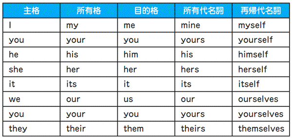
◆答え １．(B) → his
２．(C) → its
２．(C) → its
Check Point 29
接続詞
接続詞の重複
１．ブラジル敗戦の原因
Though Ronaldo was(A) criticized for his performance,(B) but much of the blame went(C) towards teammate Ronaldinho, who was partying after Brazil's(D) defeat.
（ロナウドは彼のプレーのせいで批判されたものの、非難の殆どはブラジル敗北のあともパーティーをしていたチームメイトのロナウジーニョに向かった。）
２．マテラッツィは何を言ったのか？
Because video footage(A) suggested that Materazzi had(B) provoked Zidane,(C) and newspapers had lip readers try to determine(D) what Materazzi had said.
（ビデオのシーンからマテラッツィがジダンを挑発したことが見て取れたので、新聞は読唇術者にマテラッツィの言ったことを確定させようとした。）
今回取り上げるのは、接続詞の重複です。接続詞とは文と文をつなぐ働きを持っている単語のことで、and、but、or、becauseなどのことです。２つの文をつなぐためには、接続詞が１つ必要です。TOEICの文法問題では、今回の問題の様に、２つの文をつなぐときに２つ接続詞が用いられていることがあります。これは間違いです。
１．ですが、まず問題文の文頭を見ると、Thoughという接続詞が来ています。そして、下線の引かれた部分を見ると、Ｂのところにもbutという接続詞が来ています。これは、接続詞が重複しています。ですから、Ｂが間違いです。
２．も、１．と同様、接続詞の重複の問題です。文頭にBecause、Ｃのところにandが来ているため、Ｃを削除する必要があります。
Because video footage suggested that Materazzi had provoked Zidane
Check Point 6で、suggestの後に来るthat節は原形になるということを習いました。しかし、上の文章では、that節の後ろは過去完了になっており、原形になっていません。
実は、suggestには「提案する」と「ほのめかす」という２つの意味があり、今回のように「ほのめかす」という意味で使われるときは、that節中は時制の一致を起こします。ですが、この２つの意味の使い分けがTOEICで聞かれることはないので、とりあえずはsuggest that＋原形と覚えておけば、問題はありません。
接続詞
接続詞の重複
１．ブラジル敗戦の原因
Though Ronaldo was(A) criticized for his performance,(B) but much of the blame went(C) towards teammate Ronaldinho, who was partying after Brazil's(D) defeat.
（ロナウドは彼のプレーのせいで批判されたものの、非難の殆どはブラジル敗北のあともパーティーをしていたチームメイトのロナウジーニョに向かった。）
２．マテラッツィは何を言ったのか？
Because video footage(A) suggested that Materazzi had(B) provoked Zidane,(C) and newspapers had lip readers try to determine(D) what Materazzi had said.
（ビデオのシーンからマテラッツィがジダンを挑発したことが見て取れたので、新聞は読唇術者にマテラッツィの言ったことを確定させようとした。）
今回取り上げるのは、接続詞の重複です。接続詞とは文と文をつなぐ働きを持っている単語のことで、and、but、or、becauseなどのことです。２つの文をつなぐためには、接続詞が１つ必要です。TOEICの文法問題では、今回の問題の様に、２つの文をつなぐときに２つ接続詞が用いられていることがあります。これは間違いです。
１．ですが、まず問題文の文頭を見ると、Thoughという接続詞が来ています。そして、下線の引かれた部分を見ると、Ｂのところにもbutという接続詞が来ています。これは、接続詞が重複しています。ですから、Ｂが間違いです。
２．も、１．と同様、接続詞の重複の問題です。文頭にBecause、Ｃのところにandが来ているため、Ｃを削除する必要があります。
Because video footage suggested that Materazzi had provoked Zidane
Check Point 6で、suggestの後に来るthat節は原形になるということを習いました。しかし、上の文章では、that節の後ろは過去完了になっており、原形になっていません。
実は、suggestには「提案する」と「ほのめかす」という２つの意味があり、今回のように「ほのめかす」という意味で使われるときは、that節中は時制の一致を起こします。ですが、この２つの意味の使い分けがTOEICで聞かれることはないので、とりあえずはsuggest that＋原形と覚えておけば、問題はありません。
◆答え １．(B) → 削除
２．(C) → 削除
２．(C) → 削除
Check Point 30
不定詞
不定詞の意味上の主語と原形不定詞
１．クレスポ、南米予選の歴代トップスコアラーに
Crespo's nine goals made(A) him top scorer during the tournament's preliminary phase(B) and paved the way(C) by him to become the all-time leading scorer(D) in South American qualifying history.
（ワールドカップ予選で決めた９ゴールが、クレスポの南米予選の歴代トップスコアラーへの道を切り開いた。）
２．ロナウド、歴代最多に並ぶ14得点
Fenomeno's double(A) strike saw him(B) to join legendary German(C) striker Gerd Muller as the highest-ever FIFA World Cup scorer with 14(D)goals.
（怪物［ロナウドの愛称］は２得点を決めて、14得点というワールドカップ歴代最多得点者として、伝説のドイツ人ストライカーゲルト/ミュラーに並んだ。）
２．で聞かれているのは、不定詞の意味上の主語をどの前置詞を使ってあらわすかという問題です。通常、不定詞の意味上の主語は、for A to doのように、forを使って表されます。１．を見てみると、下線Ｃのうしろに、him to becomeとto不定詞が来ていることから、himはto不定詞の意味上の主語を表していることがわかります。ですから、下線Ｃのbyをforに変える必要があります。
それに対して、２．では、動詞がto不定詞を取るか、原形不定詞を取るかが聞かれています。seeは、Ｖ＋目的語＋原形不定詞を取る動詞の代表格です。ですから、ここでは、Ｂのtoを削除する必要があります。
Ｖ＋目的語＋原形不定詞の形を取る動詞
使役動詞：make・have・let
知覚動詞：feel・watch・hear
→ during
→ preliminary phase
→ pave the way
→ the all-time leading scorer
→ strike
→ legendary
不定詞
不定詞の意味上の主語と原形不定詞
１．クレスポ、南米予選の歴代トップスコアラーに
Crespo's nine goals made(A) him top scorer during the tournament's preliminary phase(B) and paved the way(C) by him to become the all-time leading scorer(D) in South American qualifying history.
（ワールドカップ予選で決めた９ゴールが、クレスポの南米予選の歴代トップスコアラーへの道を切り開いた。）
２．ロナウド、歴代最多に並ぶ14得点
Fenomeno's double(A) strike saw him(B) to join legendary German(C) striker Gerd Muller as the highest-ever FIFA World Cup scorer with 14(D)goals.
（怪物［ロナウドの愛称］は２得点を決めて、14得点というワールドカップ歴代最多得点者として、伝説のドイツ人ストライカーゲルト/ミュラーに並んだ。）
２．で聞かれているのは、不定詞の意味上の主語をどの前置詞を使ってあらわすかという問題です。通常、不定詞の意味上の主語は、for A to doのように、forを使って表されます。１．を見てみると、下線Ｃのうしろに、him to becomeとto不定詞が来ていることから、himはto不定詞の意味上の主語を表していることがわかります。ですから、下線Ｃのbyをforに変える必要があります。
それに対して、２．では、動詞がto不定詞を取るか、原形不定詞を取るかが聞かれています。seeは、Ｖ＋目的語＋原形不定詞を取る動詞の代表格です。ですから、ここでは、Ｂのtoを削除する必要があります。
Ｖ＋目的語＋原形不定詞の形を取る動詞
使役動詞：make・have・let
知覚動詞：feel・watch・hear
→ during
......の間
→ preliminary phase
予選
→ pave the way
道を開く
→ the all-time leading scorer
歴代トップスコアラー
→ strike
得点
→ legendary
伝説の
◆答え １．(C) → for
２．(B) → 削除
２．(B) → 削除
Check Point 31
形の似た表現（１）
noかnotか
１．オシムのチームづくり
Technical director Takeshi Ono on Monday said Osim has(A) no yet(B) asked for the release of the(C) likes of Nakamura and Matsui, fueling speculation(D) that he will take a squad of J.
（月曜日に、小野剛技術委員長は、オシム監督はまだ中村や松井のようなプレーヤーの招集を要請してないと語った。このことは、オシムがＪリーグ中心のチーム作りをするのではないかという疑いを強めた。）
２．ヒデ、サッカー好きか？
After(A) turning professional, when(B) asked if I liked football, I found that I was(C) not longer able to give the(D) straight answer.
（プロになってからは、サッカーが好きかと聞かれたときに、もうストレートに好きですと答えられないことに気づいた。）
TOEICでは、noとnotの使い分けもよく聞かれます。noとnotは意味も形も共通しているので、ついつい見落としてしまいがちです。普段から注意して勉強することで、このような見落としをなくしていきましょう。
１．ですが、ここで間違っているのは(A)です。何故なら、yetはnoと組み合わせて使うことができないからです。not yetの形を頭に叩き込んでおきましょう。なお、not yetで、「まだ......していない」という意味になります。また、yet notのように、yetが前に来ることもありません。気をつけましょう。
それに対して、longerの場合、notを直接前におくことができません。ですから、２．では、notをnoに直す必要があります。ただし、not any longerのように、longerの前にanyが来たときは、noではなくnotが使われます。ちなみに、no longer = not any longerは「もはや......ない」という意味になります。
また、noとnot以外の語句では、neverがhardly neverという形で誤った選択肢として使われることもあります。hardlyがとるのは、neverではなく、everです。hardly ever「めったに......しない」の形をきちんと覚えておきましょう。
→ ask for the release
→ the like of A
→ fuel speculation
形の似た表現（１）
noかnotか
１．オシムのチームづくり
Technical director Takeshi Ono on Monday said Osim has(A) no yet(B) asked for the release of the(C) likes of Nakamura and Matsui, fueling speculation(D) that he will take a squad of J.
（月曜日に、小野剛技術委員長は、オシム監督はまだ中村や松井のようなプレーヤーの招集を要請してないと語った。このことは、オシムがＪリーグ中心のチーム作りをするのではないかという疑いを強めた。）
２．ヒデ、サッカー好きか？
After(A) turning professional, when(B) asked if I liked football, I found that I was(C) not longer able to give the(D) straight answer.
（プロになってからは、サッカーが好きかと聞かれたときに、もうストレートに好きですと答えられないことに気づいた。）
TOEICでは、noとnotの使い分けもよく聞かれます。noとnotは意味も形も共通しているので、ついつい見落としてしまいがちです。普段から注意して勉強することで、このような見落としをなくしていきましょう。
１．ですが、ここで間違っているのは(A)です。何故なら、yetはnoと組み合わせて使うことができないからです。not yetの形を頭に叩き込んでおきましょう。なお、not yetで、「まだ......していない」という意味になります。また、yet notのように、yetが前に来ることもありません。気をつけましょう。
それに対して、longerの場合、notを直接前におくことができません。ですから、２．では、notをnoに直す必要があります。ただし、not any longerのように、longerの前にanyが来たときは、noではなくnotが使われます。ちなみに、no longer = not any longerは「もはや......ない」という意味になります。
また、noとnot以外の語句では、neverがhardly neverという形で誤った選択肢として使われることもあります。hardlyがとるのは、neverではなく、everです。hardly ever「めったに......しない」の形をきちんと覚えておきましょう。
→ ask for the release
招集を要請する
→ the like of A
Ａに似た人
→ fuel speculation
......という推測をあおる
◆答え １．(A) → not
２．(C) → no
２．(C) → no
Check Point 32
形の似た表現（２）
so......thatとsuch......that
１．ルーニーの存在感
(A) Rooney's mere presence had(B) preoccupied the Portugal defence to(C) so an extent(D) that they were leaving Owen unmarked.
（ルーニーがただそこに存在するだけで、ポルトガルディフェンスはひきつけられてしまい、オーウェンのマークをはずしてしまった。）
２．八面六臂の活躍をするヴィエイラ
"Vieira is(A) very strong that(B) having him in your team is like having two players in(C) one,"(D) enthused Podolski.
（「ヴィエイラはすごく強いから、同じチームに彼がいると、１人で２人分の働きをしてくれるんだ」とポドルスキーは熱狂的に語った。）
今回のCheck Pointでは、so......thatとsuch......thatを文法事項として取り上げます。この２つの表現について聞かれることは、２つあります。１つは２つの表現を使い分けられるか、もう１つはsoまたはsuchとthatの関係を見抜けるかです。
まず、so......thatとsuch......thatの使い分けですが、soはso＋形容詞/副詞+thatと形容詞や副詞の前で使われます。それに対して、suchは名詞の前で使われて、such＋名詞＋thatの形を取ります。１．を見てみると、下線Ｃのところで、soが名詞an extentの前で使われています。ですから、１．では、soをsuchに変えないといけません。
一方、２．で聞かれているのは、soまたはsuchとthatの相関関係です。２．の下線Ａを見てみると、副詞veryが形容詞strongを修飾しているので、特に問題がないかのように見えます。しかし、strongの後を見てみると、that＋Ｓ＋Ｖという文が来ています。そして、veryにはthatを使って文をつなぐ機能はありません。ですから、ここでは、veryをsoに変えないといけません。このタイプの問題はなまじ意味が通じてしまうので、その分だけ見落としてしまいがちです。TOEICでは、意味よりも形に注意するようにしてください。
having two players in one (player)
上の文章では、oneの後にplayerが省略されています。
→ mere
→ presence
→ an extent
→ enthuse
形の似た表現（２）
so......thatとsuch......that
１．ルーニーの存在感
(A) Rooney's mere presence had(B) preoccupied the Portugal defence to(C) so an extent(D) that they were leaving Owen unmarked.
（ルーニーがただそこに存在するだけで、ポルトガルディフェンスはひきつけられてしまい、オーウェンのマークをはずしてしまった。）
２．八面六臂の活躍をするヴィエイラ
"Vieira is(A) very strong that(B) having him in your team is like having two players in(C) one,"(D) enthused Podolski.
（「ヴィエイラはすごく強いから、同じチームに彼がいると、１人で２人分の働きをしてくれるんだ」とポドルスキーは熱狂的に語った。）
今回のCheck Pointでは、so......thatとsuch......thatを文法事項として取り上げます。この２つの表現について聞かれることは、２つあります。１つは２つの表現を使い分けられるか、もう１つはsoまたはsuchとthatの関係を見抜けるかです。
まず、so......thatとsuch......thatの使い分けですが、soはso＋形容詞/副詞+thatと形容詞や副詞の前で使われます。それに対して、suchは名詞の前で使われて、such＋名詞＋thatの形を取ります。１．を見てみると、下線Ｃのところで、soが名詞an extentの前で使われています。ですから、１．では、soをsuchに変えないといけません。
一方、２．で聞かれているのは、soまたはsuchとthatの相関関係です。２．の下線Ａを見てみると、副詞veryが形容詞strongを修飾しているので、特に問題がないかのように見えます。しかし、strongの後を見てみると、that＋Ｓ＋Ｖという文が来ています。そして、veryにはthatを使って文をつなぐ機能はありません。ですから、ここでは、veryをsoに変えないといけません。このタイプの問題はなまじ意味が通じてしまうので、その分だけ見落としてしまいがちです。TOEICでは、意味よりも形に注意するようにしてください。
having two players in one (player)
上の文章では、oneの後にplayerが省略されています。
→ mere
単なる
→ presence
存在
→ an extent
程度
→ enthuse
熱狂的に語る
◆答え １．(C) → such
２．(A) → so
２．(A) → so
Check Point 33
前置詞の使い分け
byとuntilの区別
１．イタリアで雄飛する中田
(A) Until the time the qualifiers for the 1998 World Cup(B) came around, Nakata had become(C) a fixture in the full(D) national side.
（1998年ワールドカップ予選のころまでには、中田はフル代表でもすでにレギュラーになっていた。）
２．アンリ、アセーナルとの契約を更新
(A) On 19 May 2006, despite months of speculation(B) linked him with Spanish club FC Barcelona, Henry renewed his(C) contract at Arsenal under a 4-year deal
(D) until 2010.
（2006年5月19日、数ヶ月もの間にわたりスペインのバルセロナとの関係が噂されていたにもかかわらず、アンリは2010年までの４年契約を新たにアーセナルと交わした。）
今回は、byとuntilの区別について学びます。byは「ある時までに」という期限を表します。それに対して、untilは、「ある時までずっと」という継続を表します。
１．と２．を比べてみると、２．のuntilは「2010年までの契約」という継続を表しています。ですから、２．のuntilは特に問題ありません。それに対して、１．は「予選のときまでには、レギュラーになっていた」という期限を表す文章であるにもかかわらず、untilが使われています。ですから、１．では下線Ａをuntilから期限を表すbyに変える必要があります。
では、２．では何が間違っているのでしょうか？ それは、下線Ｂのlinkedです。Check Point 24でやったように、接続詞であるdespiteの後には、名詞が来ます。ですから、linkedという動詞を、linkingという分詞にする必要があります。この問題を間違った人は、Check Point 24を読み返すようにしましょう。
→ qualifier
→ fixture
→ full national side
→ speculation
→ link A with B
→ renew
→ deal
前置詞の使い分け
byとuntilの区別
１．イタリアで雄飛する中田
(A) Until the time the qualifiers for the 1998 World Cup(B) came around, Nakata had become(C) a fixture in the full(D) national side.
（1998年ワールドカップ予選のころまでには、中田はフル代表でもすでにレギュラーになっていた。）
２．アンリ、アセーナルとの契約を更新
(A) On 19 May 2006, despite months of speculation(B) linked him with Spanish club FC Barcelona, Henry renewed his(C) contract at Arsenal under a 4-year deal
(D) until 2010.
（2006年5月19日、数ヶ月もの間にわたりスペインのバルセロナとの関係が噂されていたにもかかわらず、アンリは2010年までの４年契約を新たにアーセナルと交わした。）
今回は、byとuntilの区別について学びます。byは「ある時までに」という期限を表します。それに対して、untilは、「ある時までずっと」という継続を表します。
１．と２．を比べてみると、２．のuntilは「2010年までの契約」という継続を表しています。ですから、２．のuntilは特に問題ありません。それに対して、１．は「予選のときまでには、レギュラーになっていた」という期限を表す文章であるにもかかわらず、untilが使われています。ですから、１．では下線Ａをuntilから期限を表すbyに変える必要があります。
では、２．では何が間違っているのでしょうか？ それは、下線Ｂのlinkedです。Check Point 24でやったように、接続詞であるdespiteの後には、名詞が来ます。ですから、linkedという動詞を、linkingという分詞にする必要があります。この問題を間違った人は、Check Point 24を読み返すようにしましょう。
→ qualifier
予選
→ fixture
レギュラー
→ full national side
フル代表
→ speculation
憶測
→ link A with B
ＡとＢを関連付ける
→ renew
更新する
→ deal
契約
◆答え １．(A) → by
２．(B) → linking
２．(B) → linking
Check Point 34
形容詞の使い分け
fewとlittle
１．イタリア代表1982年スペイン大会で優勝
Goals from Socrates and Falcao(A) was not enough to halt(B) the Italians' progress, and a(C) few days later they lifted the Trophy for the third time in(D) their history.
（ソクラテスとファルカンのゴールも、イタリアの歩みを止めるには十分ではなかった。そして、数日後、イタリアは史上３度目の優勝トロフィーを掲げていた。）
２．2002年日本対ベルギー戦の序盤
A(A) little early flurries by either side(B) never amounted to much, but Japan seemed to(C) have the momentum with the throngs of supporters'(D) voices behind them.
（お互い前半は決定機を作れなかったものの、サポーターの声援を受けた日本が若干押しているように見えた。）
形容詞の中には、数えられる名詞にしかつかない形容詞と、数えられない名詞にしかつかない形容詞があります。下に、その代表的なものをまとめておいたので、きちんと覚えておきましょう。
さて、１．ですが、fewのある下線Ｃを見てみると、その後にはdaysという数えられる名詞が来ています。ですから、これは問題ありません。
それに対して、２．では、下線Ａのあるlittleの後に、flurriesが来ています。ここでflurriesがわからないからといってあせる必要はありません。なぜなら、ここではflurriesの意味がわからなくても、語尾がesで終わっていることから、この単語が複数形であることが推測できるからです。ですから、ここは下線Ａを数えられない名詞につくfewに変える必要があります。
TOEICの文法問題では、このように単語の意味がわからなくても正解できる問題がかなりあります。TOEICの問題を解くときは、意味よりもまず形に注目するようにしましょう。
ちなみに１．ですが、これは単純な主語と動詞の一致の問題です。本番では、このような問題は絶対正解できるようにしましょう。
形容詞の使い分け
fewとlittle
１．イタリア代表1982年スペイン大会で優勝
Goals from Socrates and Falcao(A) was not enough to halt(B) the Italians' progress, and a(C) few days later they lifted the Trophy for the third time in(D) their history.
（ソクラテスとファルカンのゴールも、イタリアの歩みを止めるには十分ではなかった。そして、数日後、イタリアは史上３度目の優勝トロフィーを掲げていた。）
２．2002年日本対ベルギー戦の序盤
A(A) little early flurries by either side(B) never amounted to much, but Japan seemed to(C) have the momentum with the throngs of supporters'(D) voices behind them.
（お互い前半は決定機を作れなかったものの、サポーターの声援を受けた日本が若干押しているように見えた。）
形容詞の中には、数えられる名詞にしかつかない形容詞と、数えられない名詞にしかつかない形容詞があります。下に、その代表的なものをまとめておいたので、きちんと覚えておきましょう。
さて、１．ですが、fewのある下線Ｃを見てみると、その後にはdaysという数えられる名詞が来ています。ですから、これは問題ありません。
それに対して、２．では、下線Ａのあるlittleの後に、flurriesが来ています。ここでflurriesがわからないからといってあせる必要はありません。なぜなら、ここではflurriesの意味がわからなくても、語尾がesで終わっていることから、この単語が複数形であることが推測できるからです。ですから、ここは下線Ａを数えられない名詞につくfewに変える必要があります。
TOEICの文法問題では、このように単語の意味がわからなくても正解できる問題がかなりあります。TOEICの問題を解くときは、意味よりもまず形に注目するようにしましょう。
ちなみに１．ですが、これは単純な主語と動詞の一致の問題です。本番では、このような問題は絶対正解できるようにしましょう。
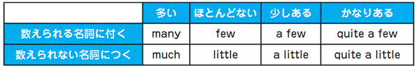
◆答え １．(A) → were
２．(A) → few
２．(A) → few
Check Point 35
-edか-ingか？（１）
形容詞
１．４‐１で勝ったウクライナ戦後のスペイン監督談話
Ukraine were said to be the(A) tougher opponent for us in this(B) group and we are all(C) excited to have started(D) so well.
（ウクライナがグループで１番の強敵だといわれていたので、こんなにいいスタートをきれてチームは盛り上がっている。）
２．ロナウジーニョの不調
In the 2006 FIFA World Cup, Ronaldinho was(A) a starting player for all of Brazil's five(B) matches, but his performances were(C) rather(D) disappointed for fans.
（2006年のワールドカップで、ロナウジーニョはブラジルが戦った５戦すべてに先発出場したが、彼のパフォーマンスはファンにとって不満の残るものであった。）
今回は、excitedとexcitingのように、-ingと-edで終わる形容詞の使い分けを見ていきます。このような心理状態を表す形容詞２つの使い分けの鍵、それはもともとの動詞の取る文型にあります。
(A) The result excites us.「その（試合の）結果は私たちを興奮させる」
(B) We are excited by the result. (A)を受動態にしたもの
１．に出てくるexcitedは、もともと動詞exciteから派生しています。そしてexciteは、(A)のように、主語にexciteさせる原因を取り、目的語にはexciteさせられる対象を取ります。しかし、１．ではexciteさせられた対象weが主語になっています。そのため、(B)の受動態と同じように、-edのついたexcitedが使われます。ですから、下線Ｃの引かれているwe are all excitedは、正しい表現です。
(A) His performances disappoints us.「彼のプレーは私たちを失望させる。」
(B) We are disappointed by his performances. (A)を受動態にしたもの。
それに対して、２．では、disappointさせる原因であるhis performancesが主語に来ています。このような時は、(A)の能動態からの推測で、-ingのついたdisappointingが使われます。ですから、下線Ｄをdisappointedに訂正しないといけません。
では、１．ではどこが間違っているのでしょうか？それは(A)です。なぜかというと、the tougher of the two opponentのように「２つのうちで１番」という表現を除いては、比較級にはtheがつかないからです。the＋比較級を見たら、最上級ではないかと疑うようにしましょう。
-ingで終わる：「......させる」という原因を表す
-edで終わる ：「......させられる」という結果を表す
-edか-ingか？（１）
形容詞
１．４‐１で勝ったウクライナ戦後のスペイン監督談話
Ukraine were said to be the(A) tougher opponent for us in this(B) group and we are all(C) excited to have started(D) so well.
（ウクライナがグループで１番の強敵だといわれていたので、こんなにいいスタートをきれてチームは盛り上がっている。）
２．ロナウジーニョの不調
In the 2006 FIFA World Cup, Ronaldinho was(A) a starting player for all of Brazil's five(B) matches, but his performances were(C) rather(D) disappointed for fans.
（2006年のワールドカップで、ロナウジーニョはブラジルが戦った５戦すべてに先発出場したが、彼のパフォーマンスはファンにとって不満の残るものであった。）
今回は、excitedとexcitingのように、-ingと-edで終わる形容詞の使い分けを見ていきます。このような心理状態を表す形容詞２つの使い分けの鍵、それはもともとの動詞の取る文型にあります。
(A) The result excites us.「その（試合の）結果は私たちを興奮させる」
(B) We are excited by the result. (A)を受動態にしたもの
１．に出てくるexcitedは、もともと動詞exciteから派生しています。そしてexciteは、(A)のように、主語にexciteさせる原因を取り、目的語にはexciteさせられる対象を取ります。しかし、１．ではexciteさせられた対象weが主語になっています。そのため、(B)の受動態と同じように、-edのついたexcitedが使われます。ですから、下線Ｃの引かれているwe are all excitedは、正しい表現です。
(A) His performances disappoints us.「彼のプレーは私たちを失望させる。」
(B) We are disappointed by his performances. (A)を受動態にしたもの。
それに対して、２．では、disappointさせる原因であるhis performancesが主語に来ています。このような時は、(A)の能動態からの推測で、-ingのついたdisappointingが使われます。ですから、下線Ｄをdisappointedに訂正しないといけません。
では、１．ではどこが間違っているのでしょうか？それは(A)です。なぜかというと、the tougher of the two opponentのように「２つのうちで１番」という表現を除いては、比較級にはtheがつかないからです。the＋比較級を見たら、最上級ではないかと疑うようにしましょう。
-ingで終わる：「......させる」という原因を表す
-edで終わる ：「......させられる」という結果を表す
◆答え １．(A) → toughest
２．(D) → disappointing
２．(D) → disappointing
Check Point 36
-ed か-ing か？（２）
原形不定詞と過去分詞
１．ラウールの苦悩
These struggles have seen Raul(A) relegated at times to the substitutes(B) bench(C) by both club and country leaving questions as to how much he might(D) had in the tank.
（これらの苦闘の結果、後どれだけのエネルギーが残っているのかという疑問を残したまま、ラウールはクラブと代表の両方で控えベンチに時々追いやられるようになって来た。）
２．アンリ、記録達成
The 2005-06 season also saw Henry(A) scored his 100th league goal at Highbury,(B) a feat unparalleled in the(C) history of the(D) club.
（2005-2006年のシーズンで、アンリはハイベリーでの100ゴールを決めた。これは、クラブの歴史の中でも比類のない功績である。）
Check Point 30でやったように、使役動詞make・have・letおよび、知覚動詞feel・watch・hearは、Ｖ＋目的語＋原形不定詞の形を取ります。しかし、これらの動詞は、Ｖ＋目的語＋過去分詞の形を取ることもあります。この二つの使い分けは、Check Point 35同様、動詞の文型で決まります。
(A) We saw Kawaguchi deflect Srna's free kick.
（私たちは川口がスルナのフリーキックをはじくのを見た）
(B) We saw Srna's free kick deflected by Kawaguchi.
（私たちはスルナのフリーキックが川口にはじかれるのを見た。）
(A)のようなＶ＋目的語＋原形不定詞の文章では、目的語と原形不定詞の間に、Kawaguchi deflected Srna's free kick.という能動態の文章が成立します。それに対して、(B)のようにＶ＋目的語＋過去分詞の文章では、目的語と過去分詞の間に、Srna's free kick was deflected by Kawaguchi.という受動態の文章が成立します。
これを踏まえて１．を見てみると、saw Raul relegatedには、Raul was relegated「ラウールは追放された」という受身の関係が成り立っているのがわかります。ですから、１．は問題ありません。それに対して２．では、Henry scored his 100th league goal.「アンリは100ゴール目を決めた」という能動態の文が本来存在するはずなのに、Ｖ＋目的語＋過去分詞の文章が成り立っています。ですから、能動態の関係を成立させるために、過去分詞のscoredを原形不定詞のscoreにしないといけません。
なお、１．ですが、下線Ｄを見ると助動詞mightの後ろにもかかわらず、動詞がhadになっています。これはCheck Point 26に違反しています。ですから、hadをhaveに変えましょう。また、seeは物が主語に来ると、「（ある時代にある場所で）出来事が起こる」という意味になります。
-ed か-ing か？（２）
原形不定詞と過去分詞
１．ラウールの苦悩
These struggles have seen Raul(A) relegated at times to the substitutes(B) bench(C) by both club and country leaving questions as to how much he might(D) had in the tank.
（これらの苦闘の結果、後どれだけのエネルギーが残っているのかという疑問を残したまま、ラウールはクラブと代表の両方で控えベンチに時々追いやられるようになって来た。）
２．アンリ、記録達成
The 2005-06 season also saw Henry(A) scored his 100th league goal at Highbury,(B) a feat unparalleled in the(C) history of the(D) club.
（2005-2006年のシーズンで、アンリはハイベリーでの100ゴールを決めた。これは、クラブの歴史の中でも比類のない功績である。）
Check Point 30でやったように、使役動詞make・have・letおよび、知覚動詞feel・watch・hearは、Ｖ＋目的語＋原形不定詞の形を取ります。しかし、これらの動詞は、Ｖ＋目的語＋過去分詞の形を取ることもあります。この二つの使い分けは、Check Point 35同様、動詞の文型で決まります。
(A) We saw Kawaguchi deflect Srna's free kick.
（私たちは川口がスルナのフリーキックをはじくのを見た）
(B) We saw Srna's free kick deflected by Kawaguchi.
（私たちはスルナのフリーキックが川口にはじかれるのを見た。）
(A)のようなＶ＋目的語＋原形不定詞の文章では、目的語と原形不定詞の間に、Kawaguchi deflected Srna's free kick.という能動態の文章が成立します。それに対して、(B)のようにＶ＋目的語＋過去分詞の文章では、目的語と過去分詞の間に、Srna's free kick was deflected by Kawaguchi.という受動態の文章が成立します。
これを踏まえて１．を見てみると、saw Raul relegatedには、Raul was relegated「ラウールは追放された」という受身の関係が成り立っているのがわかります。ですから、１．は問題ありません。それに対して２．では、Henry scored his 100th league goal.「アンリは100ゴール目を決めた」という能動態の文が本来存在するはずなのに、Ｖ＋目的語＋過去分詞の文章が成り立っています。ですから、能動態の関係を成立させるために、過去分詞のscoredを原形不定詞のscoreにしないといけません。
なお、１．ですが、下線Ｄを見ると助動詞mightの後ろにもかかわらず、動詞がhadになっています。これはCheck Point 26に違反しています。ですから、hadをhaveに変えましょう。また、seeは物が主語に来ると、「（ある時代にある場所で）出来事が起こる」という意味になります。
◆答え １．(D) → have
２．(A) → score
２．(A) → score
Check Point 37
-edか-ingか？（３）
分詞構文
１．カフーの代表歴
(A) Having made his international debut in 1990, Cafu was(B) naming in the Brazil(C) squad for the 1994 FIFA World Cup(D) in the USA.
（1990年に国際試合へのデビューを果たしたカフ―は、1994年アメリカワールドカップのブラジル代表に選出された。）
２．中田カフェオープン
(A) Founding by Japan's star player, Hidetoshi Nakata, the cafe(B) was designed as a place for football(C) fans to gather and watch(D) the FIFA World Cup.
（日本のスター選手中田英寿によって設立された中田カフェは、サッカーファンがワールドカップをみんなで集まって見るための場所として設立された。
今回は、分詞構文における-ingと-edの使い分けについて学びます。分詞構文とは、-ingまたは-edを使って、文章を副詞的に説明するものです。通常、分詞構文の意味上の主語は、主節の主語に一致します。
分詞構文を作るためには、通常の文章からまず主語と接続詞を省略します。次に、動詞が能動態のときは-ingに、受動態のときは-edに変化させます。
ですから、分詞構文においても、-ingと-edを正しく使い分けるためには、元の文型をきちんと理解することが必要不可欠です。
After he had made his international debut
まず、１．ですが、問題文を、主語と接続詞を補ってもとの文章に返すと、上のようになります。この文章には、文章の構成要素がすべてそろっています。ですから、１．のHaving madeは正しい表現です。
As it founded by Japan's star player
それに対して、２．の問題文に主語と接続詞を補ってできた上の文章は、正しい文章ではありません。なぜかというと、found「設立する」は目的語を取るからです。これを正しい文章にするためには、as it was founded byという受身の表現にする必要があります。そして、受身のときは-ed形が使われます。ですから、２．の下線Ａは、foundedにしないといけません。
なお、１．の下線Ｂで使われているnamingですが、nameが「召集する」という意味の動詞で使われるときは、name Cafuのように目的語を取ります。しかし、下線Ｂの後には、nameの目的語になる名詞が存在しません。ですから、ここでは、namingを受身を表すnamedに変えないといけません。
-edか-ingか？（３）
分詞構文
１．カフーの代表歴
(A) Having made his international debut in 1990, Cafu was(B) naming in the Brazil(C) squad for the 1994 FIFA World Cup(D) in the USA.
（1990年に国際試合へのデビューを果たしたカフ―は、1994年アメリカワールドカップのブラジル代表に選出された。）
２．中田カフェオープン
(A) Founding by Japan's star player, Hidetoshi Nakata, the cafe(B) was designed as a place for football(C) fans to gather and watch(D) the FIFA World Cup.
（日本のスター選手中田英寿によって設立された中田カフェは、サッカーファンがワールドカップをみんなで集まって見るための場所として設立された。
今回は、分詞構文における-ingと-edの使い分けについて学びます。分詞構文とは、-ingまたは-edを使って、文章を副詞的に説明するものです。通常、分詞構文の意味上の主語は、主節の主語に一致します。
分詞構文を作るためには、通常の文章からまず主語と接続詞を省略します。次に、動詞が能動態のときは-ingに、受動態のときは-edに変化させます。
ですから、分詞構文においても、-ingと-edを正しく使い分けるためには、元の文型をきちんと理解することが必要不可欠です。
After he had made his international debut
まず、１．ですが、問題文を、主語と接続詞を補ってもとの文章に返すと、上のようになります。この文章には、文章の構成要素がすべてそろっています。ですから、１．のHaving madeは正しい表現です。
As it founded by Japan's star player
それに対して、２．の問題文に主語と接続詞を補ってできた上の文章は、正しい文章ではありません。なぜかというと、found「設立する」は目的語を取るからです。これを正しい文章にするためには、as it was founded byという受身の表現にする必要があります。そして、受身のときは-ed形が使われます。ですから、２．の下線Ａは、foundedにしないといけません。
なお、１．の下線Ｂで使われているnamingですが、nameが「召集する」という意味の動詞で使われるときは、name Cafuのように目的語を取ります。しかし、下線Ｂの後には、nameの目的語になる名詞が存在しません。ですから、ここでは、namingを受身を表すnamedに変えないといけません。
◆答え １．(B) → named
２．(A) → founded
２．(A) → founded
Check Point 38
副詞節＆前置詞
時・条件を表す副詞節中の未来形＆時間を表す前置詞
１．オシム監督就任か？
If Osim(A) will become the national coach, he will have to(B) pick up the pieces(C) after Japan crashed out in the group(D) stages in Germany.
（もしもオシムが監督になるとしたら、彼はドイツワールドカップで粉々になった日本代表を作り直すところからはじめないといけないだろう。）
２．ラウール、キャプテンに
After Fernando Hierro(A) retired from the national team(B) at 2002, Raul(C) became the captain(D) for Spain.
（イエロが2002年にスペイン代表から引退した後、ラウールがスペイン代表のキャプテンになった。）
未来を表す助動詞のwillですが、この助動詞はどんなときでも使えるわけではありません。実は、時や条件を表す副詞節中では、未来のことでもwillを使わないで表すのです。
時や条件を表す副詞節を作る接続詞としては、if、unless、until、when、as soon asなどがあります。これらの単語の後にwillが来ていたら、ほぼ間違いだと思ってかまいません。ですから、１．では、will becomeをbecomesに訂正します。
ただ、中には、例外的にwillをとる表現もあります。下のtell me whenやwonder ifのような例は、フレーズとして覚えておきましょう。
Tell me when the match will start.（いつ試合が始まるか、教えてください。）
I wonder if Zizou will play.（ジダンがプレイするかどうか疑わしい。）
一方、２．では、時間を表す前置詞の用法が問題になっています。一般的に、時間を表す際は、at、in、onの３つの前置詞が使われます。この３つの使い分けですが、atは時刻を表す場合に用いられます。それに対して、inは年月を表す際に用いられます。最後にonですが、これは特定の日や曜日を表す際に用いられます。
時刻 → at 10 a.m.
年月 → in 1990, in May
曜日 → On Monday, On the fourth of July
副詞節＆前置詞
時・条件を表す副詞節中の未来形＆時間を表す前置詞
１．オシム監督就任か？
If Osim(A) will become the national coach, he will have to(B) pick up the pieces(C) after Japan crashed out in the group(D) stages in Germany.
（もしもオシムが監督になるとしたら、彼はドイツワールドカップで粉々になった日本代表を作り直すところからはじめないといけないだろう。）
２．ラウール、キャプテンに
After Fernando Hierro(A) retired from the national team(B) at 2002, Raul(C) became the captain(D) for Spain.
（イエロが2002年にスペイン代表から引退した後、ラウールがスペイン代表のキャプテンになった。）
未来を表す助動詞のwillですが、この助動詞はどんなときでも使えるわけではありません。実は、時や条件を表す副詞節中では、未来のことでもwillを使わないで表すのです。
時や条件を表す副詞節を作る接続詞としては、if、unless、until、when、as soon asなどがあります。これらの単語の後にwillが来ていたら、ほぼ間違いだと思ってかまいません。ですから、１．では、will becomeをbecomesに訂正します。
ただ、中には、例外的にwillをとる表現もあります。下のtell me whenやwonder ifのような例は、フレーズとして覚えておきましょう。
Tell me when the match will start.（いつ試合が始まるか、教えてください。）
I wonder if Zizou will play.（ジダンがプレイするかどうか疑わしい。）
一方、２．では、時間を表す前置詞の用法が問題になっています。一般的に、時間を表す際は、at、in、onの３つの前置詞が使われます。この３つの使い分けですが、atは時刻を表す場合に用いられます。それに対して、inは年月を表す際に用いられます。最後にonですが、これは特定の日や曜日を表す際に用いられます。
時刻 → at 10 a.m.
年月 → in 1990, in May
曜日 → On Monday, On the fourth of July
◆答え １．(A) → becomes
２．(B) → in
２．(B) → in
Check Point 39
to不定詞やthat節を受けるit
主語や目的語になるit
１．チェコのバローシュ、ユーロでの敗戦を語る
(A) This is difficult to describe the(B) feeling - we were so close to(C) getting to the final(D) but we have to go home now.
（今の気持ちを説明するのは難しいよ。後ちょっとで決勝に進出できたのに、国に帰らないといけないんだから。）
２．ロナウジーニョ、PSGからの退団を希望
(A) In 2003, Ronaldinho(B) made clear that he wanted to leave PSG because they(C) failed to qualify for any European(D) competitions.
（2003年、チームがヨーロッパのカップ戦の出場権を獲得するのに失敗したため、PSGから退団したいということをロナウジーニョは明らかにした。）
itには、ものを指したり、漠然とした状況を指したりする機能に加えて、to不定詞やthat節を受ける機能があります。このようなthatには２つの種類があります。１つは、It is important thatやIt is important to doのように、主語の位置に入ってto doやthatを受けるものです。これは形式主語のitと呼ばれます。それに対して、find it clear thatやfind it clear to doのように、目的語の位置に入ってthatやto doを受けるものもあります。これは、形式目的語のitと呼ばれます。
１．ですが、itと異なり、thatは形式主語になることができません。ですから、ＡをThatからItに変える必要があります。次に２．ですが、下線Ｂを見てみると、動詞madeのすぐ後に形容詞clearが来ていて、itがありません。ですから、ここでは、madeの後にitを入れる必要が出てきます。
Zidane announcedit that he would retire from professional football following the 2006 FIFA World Cup finals in Germany.
（ジダンは、2006年ドイツワールドカップを最後にプロから引退するということを宣言した。）
なお、このようなitに関する問題で注意しないといけないのが、上のように余分なitが加えられている場合です。この場合は、itとthatの間に形容詞がないことから、このitが不必要であることがわかります。
ちなみに、we were so close to gettingのtoは前置詞なので、その後にgettingが来ても間違いではありません。
形式主語のit：it is＋形容詞＋to do [that ......]
形式目的語のit：動詞＋it＋形容詞＋to do [that......]
形式目的語のitを取る動詞：find, think, make, consider, believe
to不定詞やthat節を受けるit
主語や目的語になるit
１．チェコのバローシュ、ユーロでの敗戦を語る
(A) This is difficult to describe the(B) feeling - we were so close to(C) getting to the final(D) but we have to go home now.
（今の気持ちを説明するのは難しいよ。後ちょっとで決勝に進出できたのに、国に帰らないといけないんだから。）
２．ロナウジーニョ、PSGからの退団を希望
(A) In 2003, Ronaldinho(B) made clear that he wanted to leave PSG because they(C) failed to qualify for any European(D) competitions.
（2003年、チームがヨーロッパのカップ戦の出場権を獲得するのに失敗したため、PSGから退団したいということをロナウジーニョは明らかにした。）
itには、ものを指したり、漠然とした状況を指したりする機能に加えて、to不定詞やthat節を受ける機能があります。このようなthatには２つの種類があります。１つは、It is important thatやIt is important to doのように、主語の位置に入ってto doやthatを受けるものです。これは形式主語のitと呼ばれます。それに対して、find it clear thatやfind it clear to doのように、目的語の位置に入ってthatやto doを受けるものもあります。これは、形式目的語のitと呼ばれます。
１．ですが、itと異なり、thatは形式主語になることができません。ですから、ＡをThatからItに変える必要があります。次に２．ですが、下線Ｂを見てみると、動詞madeのすぐ後に形容詞clearが来ていて、itがありません。ですから、ここでは、madeの後にitを入れる必要が出てきます。
Zidane announcedit that he would retire from professional football following the 2006 FIFA World Cup finals in Germany.
（ジダンは、2006年ドイツワールドカップを最後にプロから引退するということを宣言した。）
なお、このようなitに関する問題で注意しないといけないのが、上のように余分なitが加えられている場合です。この場合は、itとthatの間に形容詞がないことから、このitが不必要であることがわかります。
ちなみに、we were so close to gettingのtoは前置詞なので、その後にgettingが来ても間違いではありません。
形式主語のit：it is＋形容詞＋to do [that ......]
形式目的語のit：動詞＋it＋形容詞＋to do [that......]
形式目的語のitを取る動詞：find, think, make, consider, believe
◆答え １．(A) → it
２．(B) → made it
２．(B) → made it
Check Point 40
品詞の判別
語尾による判別
１．2006年決勝でのジダンの退場
An(A) ugly departure for someone whose(B) artistic so often lit(C) up the(D) beautiful game.
（その芸術性ゆえに芸術的な試合を演出してきたものにとっては、あまりに醜い去り際だった）
２．リメルケ、死のグループについて語る
Riquelme(A) spoke about the(B) important of having survived the(C) dreaded Group C, and Argentina's(D) next opponents.
（死の組グループＣを勝ち残ったことの重要性と、アルゼンチンの次の対戦相手について、リケルメが語った。）
Check Point 40では、品詞の判別について学習します。TOEICでは、同一の単語から派生した、品詞の異なる単語の使い分けがよく出題されます。ここで、それぞれの品詞の基本的な性質と、それぞれの品詞に特徴的な語尾をきちんと抑えておきましょう。
TOEICでは、おもに名詞、動詞、形容詞、副詞の使い分けが問われます。まず、名詞ですが、これは名前などを表し、主語、目的語、補語として働きます。次に、動詞ですが、これは主語の動作を説明する働きをします。一方形容詞ですが、これは補語になることもできれば、名詞を修飾することもできます。最後に副詞ですが、これは名詞以外の品詞を修飾します。
１．ですが、下線Ｂを見てみると、その前にwhoseが来ています。Check Point 11でやったように、whoseは所有格の働きをします。これは言い換えれば、whoseの後には名詞が来るということです。しかし、上の表をみればわかるように、artisticの-icは、形容詞の語尾です。ですから、１．では、下線Ｂが間違いです。
次に２．ですが、やはり下線Ｂを見てみると、その前にtheが来ています。そして、下線Ｂの後には、ofが来ています。ということは、下線Ｂには、theの後に来る名詞が来るはずです。しかし、importantの-antは形容詞の語尾です。ですから、名詞を表すimportanceに変える必要があります。
以上２つの問題からわかるように、品詞の判別の問題には、語尾から品詞を見抜く力と、基本的な文法力が必要になってきます。ただ単にあてずっぽうで問題を解くのではなく、理屈で考えながら解くようにしましょう。
名詞の語尾：-ness, -tion, -ment, -ty, -ance
動詞の語尾：-en, -fy, -ze
形容詞の語尾：-ful, -less, -ble, -ous, -ic, -ant
副詞の語尾：-ly,
品詞の判別
語尾による判別
１．2006年決勝でのジダンの退場
An(A) ugly departure for someone whose(B) artistic so often lit(C) up the(D) beautiful game.
（その芸術性ゆえに芸術的な試合を演出してきたものにとっては、あまりに醜い去り際だった）
２．リメルケ、死のグループについて語る
Riquelme(A) spoke about the(B) important of having survived the(C) dreaded Group C, and Argentina's(D) next opponents.
（死の組グループＣを勝ち残ったことの重要性と、アルゼンチンの次の対戦相手について、リケルメが語った。）
Check Point 40では、品詞の判別について学習します。TOEICでは、同一の単語から派生した、品詞の異なる単語の使い分けがよく出題されます。ここで、それぞれの品詞の基本的な性質と、それぞれの品詞に特徴的な語尾をきちんと抑えておきましょう。
TOEICでは、おもに名詞、動詞、形容詞、副詞の使い分けが問われます。まず、名詞ですが、これは名前などを表し、主語、目的語、補語として働きます。次に、動詞ですが、これは主語の動作を説明する働きをします。一方形容詞ですが、これは補語になることもできれば、名詞を修飾することもできます。最後に副詞ですが、これは名詞以外の品詞を修飾します。
１．ですが、下線Ｂを見てみると、その前にwhoseが来ています。Check Point 11でやったように、whoseは所有格の働きをします。これは言い換えれば、whoseの後には名詞が来るということです。しかし、上の表をみればわかるように、artisticの-icは、形容詞の語尾です。ですから、１．では、下線Ｂが間違いです。
次に２．ですが、やはり下線Ｂを見てみると、その前にtheが来ています。そして、下線Ｂの後には、ofが来ています。ということは、下線Ｂには、theの後に来る名詞が来るはずです。しかし、importantの-antは形容詞の語尾です。ですから、名詞を表すimportanceに変える必要があります。
以上２つの問題からわかるように、品詞の判別の問題には、語尾から品詞を見抜く力と、基本的な文法力が必要になってきます。ただ単にあてずっぽうで問題を解くのではなく、理屈で考えながら解くようにしましょう。
名詞の語尾：-ness, -tion, -ment, -ty, -ance
動詞の語尾：-en, -fy, -ze
形容詞の語尾：-ful, -less, -ble, -ous, -ic, -ant
副詞の語尾：-ly,
◆答え １．(C) → artistry
２．(A) → importance
２．(A) → importance
【著者略歴】
井上 大輔（いのうえ・だいすけ）
1978年生まれ。早稲田大学文学部英文学専修卒。早稲田大学文学研究科仏文専修修士終了。現在は、企業への英語研修、ビジネスパーソンや学生に向け英語やフランス語を教えつつ、上智大学で第二外国語習得について研究中。〝英語もサッカーもプロほど基礎をおろそかにしない！〟をモットーに、サッカーネタを用いた英語勉強法が人気を博す。TOEIC 980、TOEFL 277。フットサル審判４級。仕事を辞めてＷ杯ドイツ大会に行った、自他共に認めるサッカーばか。
井上 大輔（いのうえ・だいすけ）
1978年生まれ。早稲田大学文学部英文学専修卒。早稲田大学文学研究科仏文専修修士終了。現在は、企業への英語研修、ビジネスパーソンや学生に向け英語やフランス語を教えつつ、上智大学で第二外国語習得について研究中。〝英語もサッカーもプロほど基礎をおろそかにしない！〟をモットーに、サッカーネタを用いた英語勉強法が人気を博す。TOEIC 980、TOEFL 277。フットサル審判４級。仕事を辞めてＷ杯ドイツ大会に行った、自他共に認めるサッカーばか。
本作品の全部あるいは一部を無断で複製・転載・配信・送信したり、ホームページ上に転載することを禁止します。
本作品の内容を無断で改変、改ざん等を行うことも禁止します。
また、有償・無償にかかわらず本作品を第三者に譲渡することはできません。
本作品の内容を無断で改変、改ざん等を行うことも禁止します。
また、有償・無償にかかわらず本作品を第三者に譲渡することはできません。